This book consists of lecture notes from a special-topics class on
topological graph algorithms that I have taught several times at the
University of Illinois. These lecture notes (and other course materials)
are available under a Creative Commons
Attribution license (CC BY 4.0).
CC BY 4.0
I drafted most of these notes in Fall 2020 and revised them in Spring
2023; a handful of chapters (13, 16, 26, 27, 29, 30) were first drafted
in Spring 2023. Even after a second round of revision, these are all
still very rough drafts. Most of the missing chapters either cover
material I did not discussed in class, or cover material from my own
research papers.
I’ve attempted, with various degrees of success, to write
the first draft of each note to exactly cover one 75-minute lecture, to
force myself to prioritize the most fundamental results, sometimes at
the expense of technical details, prerequisite material (like point-set
topology or dynamic-forest data structures), accurate reflection of the
state of the art, and historical anecdotes. Later revisions tend to
include more technical details that I don’t actually cover in lecture,
except to say “You can find more details in the notes.” In practice, I
can cover at most 5 pages of material in detail in one lecture (and each
semester has only 25 lectures).
Similarly, I am writing these notes in Markdown instead of LaTeX, in
part to intentionally focus my time on writing instead of
typography, and in part to make the final output more accessible by
producing HTML and ePub versions. As a result, the notes are
typographically rather awkward/ugly. Some day I will figure out how to
use Pandoc templates and filters, or better yet, a more modern system
like Quarto. (Real Soon Now, Honest.) For similar reasons, many notes
are embarrassingly short on figures and/or references.
I think I’m about 2/3 of the way to a complete first draft of an
actual book. I’m reasonably happy with the current set of
chapters, plus or minus one, but less so about their order, especially
in the last third. If I stick to the current outline, the final book
should be just over 400 pages long in its current format (or about 600
pages in a more book-friendly format). Depending their degree of
completion, each chapter titles has one of the following annotations:1
\(\varnothing\): mostly (or
completely) unwritten
\(\alpha\): mostly written, but
missing significant details, or only used once
\(\beta\): reasonably polished, but
possibly missing some minor details
\(\delta\): complete and totally
polished (so needs only five more rounds of copy editing)
Nothing: actually done
Once I have a complete draft of the entire book, I plan to make the
source files available on Github to attract bug reports, feature
requests, and pull requests. Stay tuned!
1 Simple Polygons\(^\beta\)
The Jordan Curve Theorem and its generalizations are the formal
foundations of many results, if not every result, in
two-dimensional topology. In its simplest form, the theorem states that
any simple closed curve partitions the plane into two connected subsets,
exactly one of which is bounded. Although this statement is intuitively
clear, perhaps even obvious, the generality of the term “simple closed
curve” makes a formal proof of the theorem incredibly challenging. A
complete proof must work not only for sane curves like circles and
polygons, but also for more exotic beasts like fractals and
space-filling curves. Fortunately, these exotic curves rarely occur in
practice, except as counterexamples in point-set topology textbooks.
A full proof of the Jordan Curve Theorem requires machinery that we
won’t cover in this class (either point-set topology or singular
homology). Here I’ll consider only the important special case of
simple polygons. Polygons are by far the most common type of
closed curve employed in practice, so this special case has immediate
practical consequences.
Most published proofs of the full Jordan Curve Theorem both dismiss
this special case as trivial and rely on it as a key lemma. Indeed, the
proof is ultimately elementary. Nevertheless, the Jordan
Polygon Theorem and its proof are the foundation of several fundamental
algorithmic tools in computational geometry and topology.
1.1 Definitions
A path in the plane is an arbitrary continuous function
\(\pi\colon [0, 1] \to \mathbb{R}^2\),
where \([0, 1]\) is the unit interval
on the real line. The points \(\pi(0)\)
and \(\pi(1)\) are called the
endpoints of the path. A closed curve (or
cycle) in the plane is a continuous function from the unit
circle \(S^1 = \{(x,y)\in\mathbb{R}^2 \mid
x^2+y^2=1\}\) to the plane.
A path or cycle is simple if it is injective, or
intuitively, if it does not “self-intersect”. To avoid excessive
formality, we do not normally distinguish between a simple path or cycle
(formally a function) and its image (formally a subset of the plane).2
A subset \(X\) of the plane is
(path-)connected if there is a path in \(X\) from any point in \(X\) to any other point in \(X\). A (path-)component of \(X\) is a maximal path-connected subset of
\(X\).
Theorem (The Jordan Curve Theorem).
The complement \(\mathbb{R}^2\setminus
C\) of any simple closed curve \(C\) in the plane has exactly two
components.
A polygonal chain is a path that passes through a finite
sequence of points \(p_0, p_1, \dots,
p_n\), such that for each index \(i\), the subpath from \(p_{i-1}\) to \(p_i\) is the straight line segment \(p_{i-1}p_i\). The points \(p_i\) are called the vertices of
the polygonal chain, and the segments \(p_{i-1}p_i\) are called its edges.
We usually assume without loss of generality that no pair of consecutive
edges is collinear, and in particular, that no two consecutive vertices
coincide.
A polygonal chain is closed if it has at least one edge and
its first and last vertices coincide (that is, if \(p_0 = p_n\)) and open otherwise.
Closed polygonal chains are also called polygons; a polygon
with \(n\) vertices and \(n\) edges is also called an \(n\)-gon. We can regard any polygon as
a closed curve in the plane. Every simple polygon has at least three
vertices.
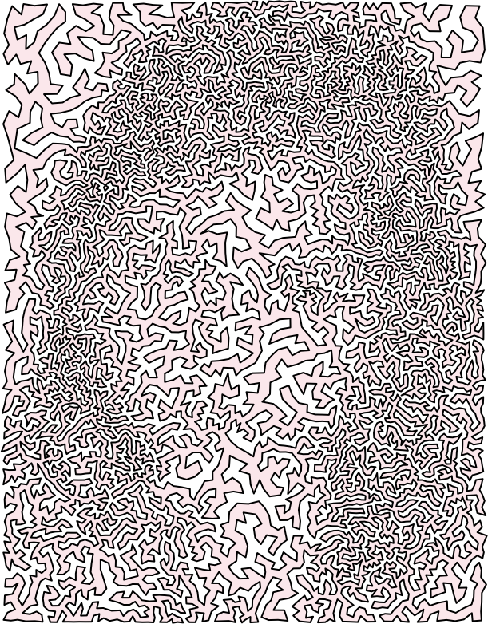
A simple 10000-gon, with interior
shaded
Theorem (The Jordan Polygon Theorem).
The complement \(\mathbb{R}^2\setminus
P\) of any simple polygon \(P\)
in the plane has exactly two components.
Let me emphasize that even though this theorem considers only
polygonal closed curves, the definitions of “connected” and
“component” allows for arbitrary paths between points.
1.2 Proof of the Jordan Polygon
Theorem
Fix a simple polygon \(P\) with
\(n\) vertices. Without loss of
generality, assume no two vertices of \(P\) have equal \(x\)-coordinates. The vertical lines through
the vertices partition the plane into \(n+1\)slabs, two of which (the
leftmost and rightmost) are actually halfplanes. The edges of \(P\) subdivide each slab into a finite
number of regions we call trapezoids, even though some of these
regions are actually triangles, and others are unbounded in one or more
directions.
A slab decomposition of a simple polygon,
with trapezoids in one slab highlighted
The boundary of each trapezoid consists of (at most) four line
segments: the floor and ceiling, which are segments of
polygon edges, and the left and right walls, which are
segments of the vertical slab boundaries. The endpoints of each vertical
wall (if any) lie on the polygon \(P\).
Formally, we define each trapezoid to include its walls but not its
floor, its ceiling, or any vertex on its walls. Thus, each trapezoid is
connected, any two trapezoids intersect in a common wall or not at all,
and the union of all the trapezoids is \(\mathbb{R}^2\setminus P\). In particular, a
trapezoid is a convex (and therefore connected) region in the plane, but
it is not a polygon!
Lemma \(\le\)
2.
\(\mathbb{R}^2\setminus P\) has at
most two components.
Proof:
Direct the edges of \(P\) in increasing
index order (modulo \(n\)). Informally,
we label every trapezoid left or right depending on
whether a person walking around \(P\)
would see that trapezoid immediately to their left or immediately to
their right. More formally, we label every trapezoid that satisfies at
least one of the following conditions left:
The ceiling is directed from right to left.
The floor is directed from left to right.
The right wall contains a vertex \(p_i\), and the incoming edge \(p_{i-1}p_i\) is below the outgoing edge
\(p_i p_{i+1}\)
The left wall contains a vertex \(p_i\), and the incoming edge \(p_{i-1}p_i\) is above the outgoing edge
\(p_i p_{i+1}\)
These conditions apply verbatim to unbounded and degenerate trapezoids.
There are four symmetric conditions for labeling a trapezoid
right. Every trapezoid is labeled left or right or (as far
as we know at this point) possibly both.
Left trapezoids
Now imagine imagine walking once around the polygon, facing directly
forward along edges and turning at vertices, and consider the sequence
of trapezoids immediately to our left, as suggested by the white arrows
in Figure 2 above. Without loss of generality, start at the leftmost
vertex \(p_0\). Whenever we traverse a
directed edge \(p_{i-1}p_i\) from right
to left, our left hand sweeps through all trapezoids immediately below
that edge. Whenever we reach a vertex \(p_i\) whose neighbors are both to the right
of \(p_i\), where the edges make a
right (clockwise turn), our hand sweeps through the trapezoid just to
the left of \(p_i\). The other cases
are symmetric. The resulting sequence of trapezoids contains every left
trapezoid at least once (and at most four times); moreover, any adjacent
pair of trapezoids in this sequence share a wall and thus have a
connected union. So the union of the left trapezoids is connected.
A symmetric argument implies that the union of the right trapezoids
is also connected, which completes the proof.
It’s worth noting here that Lemma \(\le\) 2 holds for simple closed curves on
arbitrary surfaces, including non-orientable surfaces like the
Klein bottle, but it can fail for more complex topological spaces.
Lemma \(\ge\)
2.
\(\mathbb{R}^2\setminus P\) has at
least two components.
Proof (Jordan):
Label each trapezoid even or odd depending on the
parity of the number of polygon edges directly above the trapezoid.
Thus, within each slab, the highest trapezoid is even, and the
trapezoids alternate between even and odd. For example, in Figure 1, the
blue slabs are even, and the orange slabs are odd.
Consider any path \(\pi\) that
intersects exactly two trapezoids \(\tau\) and \(\tau’\). If \(\tau\) and \(\tau’\) lie in the same slab, this path
must intersect at least one edge of \(P\). (I am not invoking the Jordan
curve theorem here, but rather a much more basic fact called the
plane separation axiom.3) Otherwise, \(\tau\) and \(\tau’\) must lie in adjacent slabs, because
\(\pi\) is continuous, and therefore
must share a vertical wall.
Suppose this wall lies on the vertical line \(\ell\) through \(p_i\), and without loss of generality,
\(\tau\) lies on the left of \(\ell\) and \(\tau’\) on the right. If vertices \(p_{i-1}\) and \(p_{i+1}\) are on opposite sides of \(\ell\), exactly the same number of polygon
edges are above \(\tau\) and above
\(\tau’\). Suppose \(p_{i-1}\) and \(p_{i+1}\) lie to the left of \(\ell\). If \(p_i\) lies below the wall \(\tau\cap\tau’\), then \(\tau\) and \(\tau’\) are below the same number of edges;
otherwise, \(\tau\) is below two more
edges than \(\tau’\). Similar cases
arise when \(p_{i-1}\) and \(p_{i+1}\) both lie to the right of \(\ell\). In all cases, \(\tau\) and \(\tau’\) have the same parity.
More generally, consider any two trapezoids \(\tau\) and \(\tau’\) in the same component of \(\mathbb{R}^2\setminus P\). There must be a
path \(\pi\colon [0,1]\to
\mathbb{R}^2\setminus P\) with \(\pi(0)\in \tau\) and \(\pi(1)\in \tau’\). Let \(\tau_0, \tau_1, \dots, \tau_N\) be the
sequence of trapezoids that \(\pi\)
intersects, sorted in order of their first intersection. Thus, \(\tau_0 = \tau\) and for each index \(i>0\), the path \(\pi\) enters trapezoid \(\tau_i\) for the first time from some
trapezoid \(\tau_j\) with \(j<i\). Our earlier arguments imply that
\(\pi\) must leave \(\tau_j\) and enter \(\tau_i\) through a common wall, so these
two trapezoids have the same parity. It follows by induction that every
trapezoid \(\tau_i\) has the same
parity as \(\tau_0\); in particular,
\(\tau\) and \(\tau’\) have the same parity.
We conclude that any two trapezoids in the same component of \(\mathbb{R}^2\setminus P\) have the same
parity, which completes the proof.
It’s worth noting here that Lemma \(\le\) 2 holds for more complex planar
shapes, such as polygons with holes, but it fails for any surface that
is no homeomorphic to a subspace of the sphere.
The Jordan Polygon Theorem now follows immediately from Lemmas \(\le 2\) and \(\ge
2\). In particular, if the polygon is oriented counterclockwise
(the way god intended), then “right” and “even” (and blue) mean
“outside”, and “left” and “odd” (and orange) mean “inside”.
In contexts where polygons are assumed to be simple, it is standard
practice to use the single word ”polygon” (and the same variable names,
and the same data structures) to refer both to a simple closed
polygonal chain and to (the closure of) the interior of that
polygonal chain, with the precise meaning hopefully clear from
context. For example, the slab decomposition we used in this section
decomposes the polygon into trapezoids, and in later lectures
we will consider polygons with holes. This polysemy is
justified by the Jordan Polygon Theorem.
1.3 Point-in-Polygon Test
The parity proof of Lemma \(\ge 2\)
immediately suggests a standard algorithm to test whether a point lies
in the interior of a simple polygon in the plane in linear time: Shoot
an arbitrary ray from the query point, count the number of times this
ray crosses the polygon, and return \(\textsf{true}\) if and only if this number
is odd. This algorithm appears in Gauss’ notes (written around 1830 but
only published after his death); it has been rediscovered many times
since then.
To make the ray-parity algorithm concrete, we need one numerical
primitive from computational geometry. A triple \((q, r, s)\) of points in the plane is
oriented counterclockwise if walking from \(q\) to \(r\) and then to \(s\) requires a left turn, or oriented
clockwise if the walk requires a right turn. More explicitly,
consider the \(3\times 3\) determinant
\[
\Delta(q,r,s) =
\det
\begin{bmatrix}
1 & q.x & q.y \\
1 & r.x & r.y \\
1 & s.x & s.y
\end{bmatrix}
= (r.x - q.x)(s.y - q.y) - (r.y - q.y)(s.x - q.x).
\] The triple \((q,r,s)\) is
oriented counterclockwise if \(\Delta(q,r,s)
> 0\), oriented clockwise if \(\Delta(q,r,s) < 0\), and collinear if
\(\Delta(q,r,s) = 0\). (The absolute
value of \(\Delta(q,r,s)\) is twice the
area of the triangle \(\triangle
qrs\).)
Straightforward case analysis implies that the vertical ray from
\(q\) crosses the line segment \(rs\) if and only if \(q\) lies between the vertical lines through
\(r\) and \(s\), and \(\Delta(q,r,s)\) has the same sign as \(r.x-s.x\).
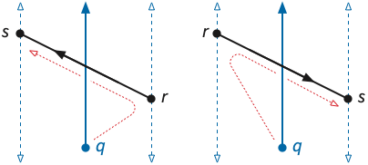
Ray-crossing test
Finally, here is the algorithm in (pseudo)Python. The input polygon
\(P\) is represented by an array of
consecutive vertices. The algorithm returns \(+1\), \(-1\), or \(0\) to indicate that the query point \(q\) lies inside, outside, or directly on
\(P\), respectively. To correctly
handle ties between \(x\)-coordinates,
the algorithm treats any polygon vertex on the vertical line through
\(q\) (but not actually coincident with
\(q\)) as though it were slightly to
the left. The algorithm clearly runs in \(O(n)\) time.
def PtInPolygon(P, q):
sign = -1 // outside if no crossings
n = len(P)
for i in range(n):
r = P[i]
s = P[(i+1)% n]
Delta = (r.x - q.x)*(s.y - q.y) - (r.y - q.y)*(s.x - q.x)
if s.x <= q.x < r.x // positive crossing?
if Delta > 0:
sign = -sign
elif Delta == 0:
return 0
elif r.x <= q.x < s.x // negative crossing?
if Delta < 0:
sign = -sign
elif Delta == 0:
return 0
return sign
1.4 Polygons Can Be
Triangulated
Most algorithms that operate on simple polygons actually require a
decomposition of the polygon into simple pieces that are easier to
manage. We’ve already seen one such decomposition, first into vertical
slabs, and then into trapezoids. For many geometric and topological
algorithms, the most natural decomposition breaks the interior of the
polygon into triangles that meet edge-to-edge. More formally, a
triangulation is a triple of sets \((V, E, T)\) with the following
properties.
\(T\) is a finite set of triangles
in the plane with disjoint interiors.
\(E\) is the set of edges of
triangles in \(T\).
Any two segments in \(E\) have
disjoint interiors.
\(V\) is the set of vertices of
triangles in \(T\).
The third condition guarantees that the intersection of any two
triangles in \(T\) is either an edge of
both, a vertex of both, or empty.
If the union of the triangles in \(T\) is equal to the closure of the interior
of a simple polygon \(P\), we call
\((V, E, T)\) a triangulation of
\(P\). If moreover \(V\) is the set of vertices of \(P\), then \((V,
E, T)\) is called a frugal triangulation of \(P\). Every edge of a frugal triangulation
is either an edge of \(P\) or an
(interior) diagonal, meaning a line segment between two
vertices of \(P\) whose interior lies
in the interior of \(P\).
A frugal triangulation, a non-frugal
triangulation, and a non-triangulation of a simple polygon
After playing with a few examples, it may seem obvious that every
simple polygon has a frugal triangulation, but a formal proof of this
fact is surprisingly subtle; several incorrect (or at least incomplete)
proofs appear in the literature. The first complete, correct, axiomatic
proofs were developed by Dehn (1899, unpublished) and Lennes (1911),
although some components of their arguments already appear in the
Gauss’s posthumously published notes.
The following proof is somewhat more complicated (and intentionally
less formal!) than Dehn’s and Lennes’s arguments, but it
directly motivates a faster algorithm for constructing
triangulations.
Diagonal Lemma (Dehn, Lennes):
Every simple polygon with at least four vertices has an interior
diagonal.
Proof:
Let \(P\) be a simple polygon with
vertices \(p_0, p_1, \dots, p_{n-1}\)
for some \(n\ge 4\). As before, we
assume without loss of generality that no two vertices of \(P\) lie on a common vertical line. We begin
by subdividing the closed interior of \(P\) into trapezoids with vertical line
segments through the vertices. Specifically, for each vertex
\(p_i\), we cut along the longest
vertical segment through \(p_i\) in the
closure of the interior of~\(P\). The
resulting subdivision, which is called a trapezoidal
decomposition of \(P\), can also
be obtained from the slab decomposition we used to prove the Jordan
polygon theorem by removing every exterior wall and every wall that does
not end at a vertex of \(P\).
A trapezoidal decomposition of a simple
polygon
Every trapezoid in the decomposition has exactly two polygon vertices
on its boundary. Call a trapezoid boring if the line segment
between these two vertices cuts through the interior of the trapezoid,
and therefore is a diagonal of \(P\),
and interesting otherwise. Every interesting trapezoid either
has two vertices of \(P\) on its
ceiling, or two vertices of \(P\) on
its floor.
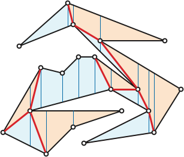
Boring diagonals
If any of the trapezoids is boring, we immediately have a diagonal.
Yawn.
Any path through the interior of \(P\) that starts in a ceiling trapezoid and
ends in a floor trapezoid must pass through a boring trapezoid. So if
every trapezoid is interesting, then every trapezoid is interesting
the same way—either every trapezoid has two vertices on its
ceiling, or every trapezoid has two vertices on its floor. Thus, \(P\) is a special type of polygon we call a
monotone mountain: any vertical line intersects at most two
edges of \(P\), and the leftmost and
rightmost vertices of \(P\) are
connected by a single edge of \(P\).
Four diagonals in a monotone
mountain
Without loss of generality, suppose \(p_0\) is the leftmost vertex, \(p_{n-1}\) is the rightmost vertex, and
every other vertex is above the edge \(p_0p_{n-1}\) (so every trapezoid has two
vertices on its ceiling). Call a vertex \(p_i\)convex if the interior angle
at that vertex is less than \(\pi\), or
equivalently, if the triple \((p_{i-1}, p_i,
p_{i+1})\) is oriented clockwise. Every monotone
mountain has at least one convex vertex \(p_i\) other than \(p_0\) and \(p_{n-1}\); take, for example, the vertex
furthest above the floor \(p_0p_{n-1}\). For any such vertex \(p_i\), the line segment \(p_{i-1}p_{i+1}\) is a diagonal.
Triangulation Theorem:
Every simple polygon has a frugal triangulation.
Proof (Dehn, Lennes):
The theorem follows by induction from the diagonal lemma. Intuitively,
to triangulate any nontrivial polygon, we can split any polygon along a
diagonal and then recursively triangulate each of the two resulting
smaller polygons.
Let \(P\) be a simple polygon with
\(n\) vertices \(p_0, p_1, p_2, \dots, p_{n-1}\). If \(P\) is a triangle, it has a trivial
triangulation, so assume \(n>3\).
Suppose without loss of generality (reindexing the vertices if
necessary) that \(d = p_0p_i\) is a
diagonal of \(P\), for some index \(i\). Let \(P^+\) and \(P^-\) denote the polygons with vertices
\(p_0, p_i, p_{i+1}, \dots, p_{n-1}\)
and \(p_0, p_1, p_2, \dots, p_i\),
respectively. The definition of “diagonal” implies that both \(P^+\) and \(P^-\) are simple. Color each edge of \(P\)red if it is an edge of \(P^+\) and blue otherwise; every
blue edge is an edge of \(P^-\).
Now we need to prove that the diagonal \(d\) partitions the interior of \(P\) into the interiors of \(P^+\) and \(P^-\). Proving this claim is surprisingly
subtle.
Let \(U\) be any open disk in the
interior of \(P\) that intersects \(d\); such a disk exists because \(d\) is an interior diagonal. (We
had to use that fact somewhere!) The set \(U\setminus p_0p_i\) has exactly two
components.[^pasch2] Choose arbitrary points \(q^+\) and \(q^-\), one in each component. Let \(R^+\) and \(R^-\) be parallel rays starting at \(q^+\) and \(q^-\), respectively, such that \(R^+\) contains \(R^-\). Then \(R^+\) crosses \(d\) but \(R^-\) does not, and \(R^+\) and \(R^-\) cross exactly the same edges of \(P\).
[^pasch2] We are invoking the plane separation axion again here.
Partitioning a polygon with an interior
diagonal
As above, \(R^+\) (and therefore
\(R^-\)) crosses an odd number of edges
of \(P\). Without loss of generality,
suppose \(R^+\) (and therefore \(R^-\)) crosses an even number of red edges
and an odd number of blue edges. Then, because \(R^+\) crosses \(d\), the point \(q^+\) lies inside \(P^+\) and outside \(P^-\). Similarly, \(q^-\) lies inside \(P^-\) and outside \(P^+\), because \(R^-\) does not cross \(d\). We conclude (finally!) that the
interiors of \(P^+\) and \(P^-\) are disjoint subsets of the interior
of \(P\). Whew!
The inductive hypothesis implies that \(P^+\) has a frugal triangulation \((V^+, E^+, T^+)\) and that \(P^-\) has a frugal triangulation \((V^-,E^-,T^-)\). One can now verify
mechanically that \((V^+\cup V^-,\)\(E^+\cup E^-, T^+\cup T^-)\) is a
frugal triangulation of \(P\).
1.5 Computing a Triangulation
The proof of the diagonal lemma implies an efficient algorithm to
triangulate any simple polygon. I’ll only sketch the algorithm here; for
further details, see your favorite computational geometry textbook.
First, we construct a trapezoidal decomposition in \(O(n\log n)\) time using a
sweepline algorithm. Intuitively, we sweep a vertical line from
left to right across the plane, maintaining its intersection with the
polygon in a balanced binary search tree, and inserting a new vertical
wall whenever the line touches a vertex. (In fact, we only visit the
vertices in order from left to right.) Second, we insert diagonals
inside every boring trapezoid; these diagonals decompose \(P\) into monotone mountains in \(O(n)\) time. Finally, we triangulate each
monotone mountain in \(O(n)\) time by
cutting off convex vertices in order from left to right.
The overall running time is \(O(n\log
n)\); the running time is dominated by the time to construct the
trapezoidal decomposition. Theoretically faster algorithms for that
construction are known—in particular, Chazelle described a famously
complex \(O(n)\)-time algorithm—but it
is unclear whether any of these improvements is faster in practice, or
indeed if any of them have actually been implemented.
I’ll leave the following corollaries of the polygon triangulation
theorem as exercises.
Corollary:
Every frugal triangulation of a simple \(n\)-gon contains exactly \(n-2\) triangles and exactly \(n-3\) diagonals.
Corollary:
Every simple polygon with at least four vertices has at least two
ears, where an ear is an internal diagonal that cuts
off a single triangle.
Corollary:
Let \(P\) be a simple polygon with
vertices \(p_0, p_1, \dots, p_{n-1}\).
Let \(i,j,k,l\) be four distinct
indices with \(i<j\) and \(k<l\), such that both \(p_ip_j\) and \(p_kp_l\) are interior diagonals of \(P\). These two diagonals cross if and only
if either \(i<k<j<l\) or \(k<i<l<j\).
Corollary:
Any maximal set of non-crossing interior diagonals in a simple
polygon \(P\) yields a frugal
triangulation of \(P\).
1.6 The Dehn-Schönflies
Theorem
The Dehn-Schönflies Theorem:
For any simple polygon \(P\), there
is a homeomorphism \(H \colon \mathbb{R}^2 \to
\mathbb{R}^2\) that maps \(P\)
to a convex polygon \(Q\) and maps the
interior of \(P\) to the interior of
\(Q\).
Proof (Dehn):
[to be written]
1.7 and the aptly named Sir Not
Appearing in This Film
Basic geometric algorithms:
Details of sweepline algorithm
Der Dreigroschenalgorithmus
Faster decomposition/triangulation algorithms
Triangulating polygons with holes
Compatible triangulations
Weakly simple polygons
Proof (via Hex and Y) of the full Jordan Curve Theorem
Geodesic polygons on other surfaces (see exercises)
1.8 References
Mark de Berg, Otfried Cheong, Marc van Kreveld, and Mark
Overmars. Computational Geometry: Algorithms and Applications,
3rd edition. Springer-Verlag, 2008. Your favorite computational geometry
textbook.
Bernard Bolzano. Anti-Euklid. Unpublished manuscript, c. 1840.
Published posthumously in [10].
Max Dehn. Beweis des Satzes, daß jedes geradlinige geschlossene
Polygon ohne Doppelpunkte ‘die Ebene in zwei Teile teilt’. Unpublished
manuscript, c.1899. Max Dehn Papers archive, University of Texas at
Austin. Cited and described in detail by Guggenheimer [4]. Proof of the
Jordan Polygon Theorem.
Heinrich W. Guggenheimer. The Jordan curve theorem and an
unpublished manuscript of Max Dehn. Arch. History Exact Sci.
17:193–200, 1977.
Camille Jordan. Courbes continues. Cours d’Analyse de l’École
Polytechnique, 1st edition, vol. 3, 587–594, 1887.
Camille Jordan. Lignes continues. Cours d’Analyse de l’École
Polytechnique, 2nd edition, vol. 1, 90–99, 1893.
Nels Johann Lennes. Theorems on the simple finite polygon and
polyhedron. Amer. J. Math. 33:37–62, 1911. Read to the AMS in
April, 1903. Proof of the Jordan Polygon Theorem.
Joseph O’Rourke. Computational Geometry in C, 2nd
edition. Cambridge University Press, 1998. Your favorite computational
geometry textbook.
Moritz Pasch. Vorlesung über neuere Geometrie. Teubner,
1882.
Kazimír Večerka. Bernard Bolzano: Anti-Euklid. Sbornik pro
dějiny přirodnich věd a teckniky / Acta Hist. Rerum Natur. Nec Non
Tech. 11:203–216, 1967. In Czech, with German summary.
2 Winding Numbers\(^\beta\)
2.1 Let me not be pent up, sir; I
will fast, being loose.
Fast and Loose is the name of a family of magic tricks (or
con games) performed with ropes, chains, and belts that have been
practiced since at least the 14th century; the con game is mentioned in
three different Shakespeare plays. In one such trick, now sometimes
called the Endless Chain, the con artist arranges a closed loop
of chain into a doubled figure-8, and then asks the mark to put their
finger on the table inside one of the loops. The con artist them pulls
the chain along the table. If the chain catches on the mark’s finger,
then the chain is fast and the mark wins; if the con artist can
pull the chain completely off the table, the chain is loose and
the mark loses.
The con artist shows the mark that there are two different ways for
the loops to fall. (Notice how the chain crosses itself in the lower
corners.) Because the chain is bright and shiny and bumpy, it’s
impossible for the mark to tell which way the chain is actually
arranged, but because these are the only possibilities, the mark should
have a 50-50 chance of winning. Right? Riiiight?
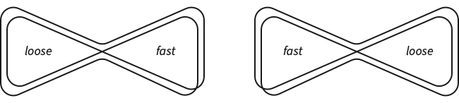
Two arrangements of the Endless
Chain
Oh, you sweet summer child. Of course not! As soon as the mark places
money on the barrelhead, the con artist wins every time. The
con artists was lying; there is a third arrangement of the chain that is
always loose, no matter where the mark puts their finger.4
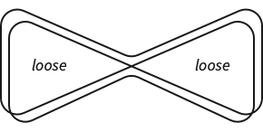
The actual arrangement of the Endless
Chain
2.2 Shoelaces and Signed Areas
Swap this section and next? This is historical order, but
the narrative is a bit clunky.
Before discussing the mathematical reasons you just lost all your
money, let’s consider a basic computational geometry problem: How
quickly can we compute the area enclosed by a given polygon \(P\)?
A particularly simple algorithm was described by Albrecht Meister in
1785. In principle, we can calculate the area of \(P\) by cutting \(P\) into disjoint triangles and then
summing the triangle areas, each of which can can compute in \(O(1)\) time, but it would be more than a
century before anyone knew how to cut polygons into triangles. Meister’s
insight was to consider the signed areas of
overlapping oriented triangles.
The signed area of a triangle depends not only on its vertex
coordinates, but on the orientation of its three vertices. By
convention, counterclockwise triangles have positive signed area, and
clockwise triangles have negative signed area. Recall that a triple of
points \((q,r,s)\) is oriented
counterclockwise or clockwise if and only if the following determinant
is positive or negative, respectively: \[
\Delta(q,r,s) =
\det
\begin{bmatrix}
1 & q.x & q.y \\
1 & r.x & r.y \\
1 & s.x & s.y
\end{bmatrix}
= (r.x - q.x)(s.y - q.y) - (r.y - q.y)(s.x - q.x).
\] The signed area of the triangle \(\triangle qrs\) is \(\frac{1}{2} \Delta(q,r,s)\).
Let \(o\) be an arbitrary
point in the plane. Meister observed that the signed area of
any oriented polygon \(P\) is
the sum of the signed areas of the triangles determined by \(o\) and the edges of \(P\): \[
\textsf{area}(P) =
\frac{1}{2}
\sum_{i=0}^{n-1}
\Delta(o, p_i, p_{i+1})
\] (To simplify notation, I’ll omit “\({}\bmod n\)” from all index arithmetic.) In
particular, if we take \(o\) to be the
origin \((0,0)\), we have \[
\textsf{area}(P)
~=~
\frac{1}{2}
\sum_{i=0}^{n-1}
(x_i \cdot y_{i+1} - y_i \cdot x_{i+1})
~=~
\frac{1}{2}
\sum_{i=0}^{n-1}
\det
\begin{bmatrix}
x_i & y_i \\
x_{i+1} & y_{i+1} \\
\end{bmatrix}
\] where \(p_i = (x_i,y_i)\) for
each index \(i\). This expression of
Meister’s algorithm is commonly known as the shoelace formula,
because the pattern of multiplications resembles the usual method for
threading shoelaces: \[
\begin{bmatrix}
x_0 && x_1 && x_2 && x_3 &&
\dots \\[-1ex]
&\times& &\times& &\times&
&\times& \\[-1ex]
y_0 && y_1 && y_2 && y_3 &&
\dots
\end{bmatrix}
\]
Proving that that the shoelace algorithm correctly computes areas is
straightforward. First, we can prove that the formula is correct for
triangles, either by verifying5 the
algebraic identity \[
\Delta(q,r,s) = \Delta(o,q,r) + \Delta(o,r,s) + \Delta(o,s,q)
\] or by geometric case analysis, as suggested by the figure
below. Areas outside the triangle are either counted once positively and
once negatively, or not counted at all; areas inside the triangle are
counted exactly once, with the correct sign.
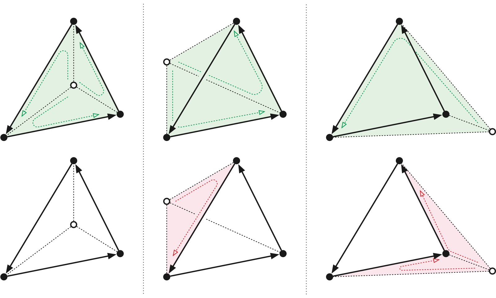
Lacing a triangle: Add the green
(counterclockwise) triangles and subtract the pink (clockwise)
triangles.
Then to prove the shoelace formula correct for any larger polygon
\(P\), we can sum the signed areas of
all triangles in any frugal triangulation of \(P\) and observe that the terms involving
diagonals of the triangulation cancel out. As expected, the resulting
signed area is positive if \(P\) is
oriented counterclockwise (that is, with the interior on the left) and
negative if \(P\) is oriented
clockwise.
Meister actually used his shoelace formula to define the signed areas
of an arbitrary polygon, even if that polygon is not simple.
Here it’s somewhat less clear that the formula is correct for
non-convex polygons, but we can verify two facts that suggest that it is
at least sensible. First, the resulting signed area is still
independent of the choice of point \(o\). Second, the formula counts the area of
each component of \(\mathbb{R}^2\setminus
P\) some integer number of times; in particular, the (infinite)
area of the unbounded region is not counted at all. The resulting
assignment of integers to the components of \(\mathbb{R}^2\setminus P\) is called the
Alexander numbering of \(P\).
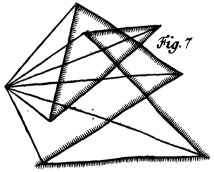
Computing the signed area of a polygon,
from Meister (1785)
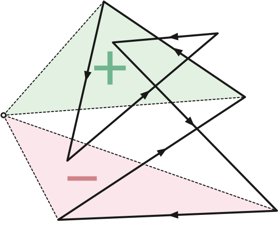
One positive triangle and one negative
triangle for Meister’s polygon
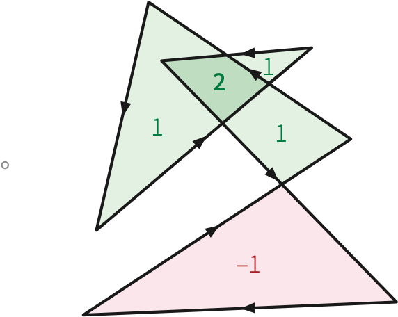
The Alexander numbering of Meister’s
polygonAnother Alexander numbering, from Möbius
(1865)
2.3 Winding numbers
The winding number of a polygon \(P\) around a point \(o\) is intuitively (and not surprisingly)
the number of times that \(P\) winds
counterclockwise around \(o\). For
example, if \(P\) is a simple
polygon, its winding number around any exterior point is zero, and its
winding number around any interior point is either \(+1\) or \(-1\), depending on how the polygon is
oriented. If the polygon winds clockwise around \(o\), the winding number is negative.
Crucially, the winding number is only well defined if the polygon does
not contain the point \(o\).
We can define the winding number more formally as follows. Let \(p_0, p_1, \dots, p_{n-1}\) denote the
vertices of \(P\) in order. For each
index \(i\), let \(\theta_i\) denote the interior angle at
\(o\) in the triangle \(\triangle p_i o p_{i+1}\), with positive
sign if \((o, p_i, p_{i+1})\) is
oriented counterclockwise, and with negative sign if \((o, p_i, p_{i+1})\) is oriented clockwise.
Assuming angles are measured in circles,6 the
winding number of \(P\) around \(o\) is the sum \(\sum_i \theta_i\).
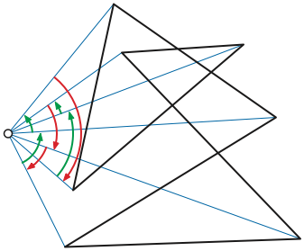
Winding number as a sum of angles, after
Meister
Actually computing the winding number according to this definition
requires inverse trigonometric functions, square roots, and other
numerical madness. Fortunately, there is an equivalent definition that
builds on our ray-shooting test from the previous lecture. Let \(R\) be a vertical ray shooting upward from
\(o\). We distinguish two types of
crossings between the \(R\) and the
polygon, depending on the orientation of the crossed edges.
Specifically, if the crossed edge is directed from right to left, we
have a positive crossing; otherwise, we have a
negative crossing. Equivalently, when \(R\) crosses an edge \(p_ip_{i+1}\), the sign of the crossing is
the sign of the determinant \(\Delta(o, p_i,
p_{i+1})\).
A positive crossing (left) and a negative
crossing (right)
I’ll leave the equivalence of these two definitions as an exercise.
(Hint: prove equivalence for triangles, and then look at Meister’s
figure again!)
Here is the ray-shooting algorithm in (pseudo)Python. Any
similarities with the point-in-polygon algorithm from the previous
lecture are purely intentional.
def windingNumber(P, o):
wind = 0
n = size(P)
for i in range(n):
p = P[i]
q = P[(i+1)%n]
Delta = (p.x - o.x)*(q.y - o.y) - (p.y - o.y)*(q.x - o.x)
if p.x <= o.x < q.x && Delta > 0:
wind += 1
elif q.x <= o.x < p.x && Delta < 0:
wind -= 1
return wind
Winding numbers has a third useful interpretation, which we’ve
already seen in this lecture. Case analysis similar to our proof of
Lemma \(\le 2\) from the previous
lecture implies that if \(o\) and \(o’\) are two points in the same component
of \(\mathbb{R}^2\setminus P\), then
\(P\) has the same winding number
around both points. Moreover, if \(o\)
and \(o’\) are in components of \(\mathbb{R}^2\setminus P\) that share a
segment of some polygon edge \(e\) on
their boundary, then the winding numbers around \(o\) and \(o’\) differ by \(1\), with the higher winding number to the
left of \(e\).
This assignment of winding numbers to the components of \(\mathbb{R}^2\setminus P\) is identical to
the Alexander numbering of \(P\) that
we defined earlier. That is, the winding number of \(P\) around any point \(q \not\in P\) is precisely the number of
times that the area around \(q\) is
counted by the shoelace formula. Thus, the signed area of any polygon
\(P\) can expressed in terms of winding
numbers as \[
\textsf{area}(P) = \sum_c \textsf{wind}(P, c) \cdot \textsf{area}(c)
\] where the sum is over the components of \(\mathbb{R}^2\setminus P\).
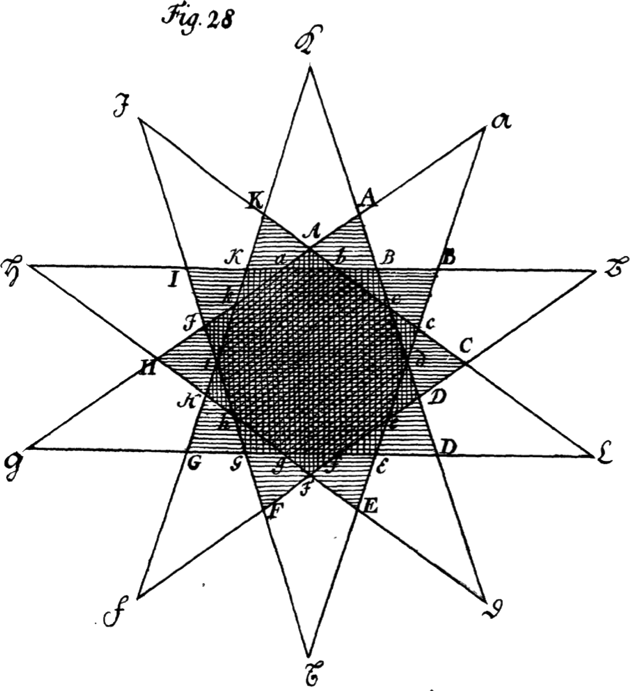
Another non-simple polygon from Meister,
with winding numbers indicated by shading (1785)
2.4 Homotopy
Now let’s go back to the Endless Chain. A bit of case analysis should
convince you—or should at least strongly suggest—that in all
three configurations, the chain is loose around your finger if and only
if the winding number of the Chain around your finger is zero.
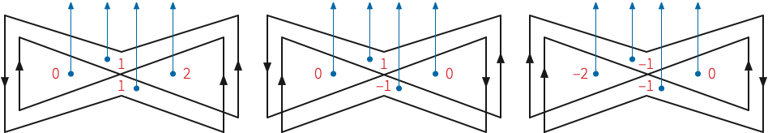
Winding numbers of the Endless Chain
around various points
But in the actual game, we aren’t dealing with a single fixed closed
curve. The con man grabs one side of the chain and pulls, causing the
chain to move continuously across the barrelhead and around your finger,
until it either gets stuck Fast or pulls Loose. Instead of thinking
about how a fixed polygon wraps with a changing point, we need a way to
reason about how a continuously changing curve wraps around a
fixed point.
A homotopy between two closed curves is a continuous
deformation—a morph—from one curve to the other. Homotopies can be
defined between curves in any topological space, but for purposes of
illustration, let’s restrict ourselves to curves in the punctured plane
\(\mathbb{R}^2\setminus o\), where
\(o\) is an arbitrary point called the
obstacle. (In Fast and Loose, the obstacle is your finger.)
Without loss of generality, I will assume that \(o\) is actually the origin \((0,0)\).
Formally, a homotopy between two closed curves in \(\mathbb{R}^2\setminus o\) is a continuous
function \(h\colon [0,1]\times S^1\to
\mathbb{R}^2\setminus o\), such that \(h(0, \cdot)\) and \(h(1, \cdot)\) are the initial and final
closed curves, respectively. For each \(0<t<1\), the function \(h(t, \cdot)\) is the intermediate closed
curve at “time” \(t\). Crucially, none
of these intermediate curves touches the obstacle point \(o\).
Two closed curves in \(\mathbb{R}^2\setminus o\) are
homotopic, or in the same homotopy class, if there is
a homotopy from one to the other in \(\mathbb{R}^2\setminus o\). Homotopy is an
equivalence relation.
A closed curve is contractible in \(\mathbb{R}^2\setminus o\) if it is
homotopic to a single point (or more formally, to a constant curve).
2.5 Vertex moves
Similar to the definition of “connected”, the definition of
“homotopy” allows intermediate curves to be arbitrarily wild closed
curves even if the initial and final curves are polygons.
Fortunately, there is a general principle that allows us to “tame”
homotopies between tame curves like polygons, by decomposing them into a
sequence of elementary moves. (This principle is similar to the
observation that any closed curve can be approximated by a sequence of
line segments, otherwise known as a polygon.)
Let \(P\) be any polygon. A
vertex move translates exactly one point \(p\) of \(P\) along a straight line from its current
location to a new location \(p’\),
yielding a new polygon \(P’\). As the
point \(p\) moves, the edges incident
to \(p\) pivot around their other
endpoints. Typically the moving point \(p\) is a vertex of the initial polygon
\(P\) and the final point \(p’\) is a vertex of the final polygon \(P’\), but neither of these restrictions is
required by the definition. We are allowed to freely introduce new
vertices in the middle of edges, or freely delete “flat” vertices
between two collinear edges.
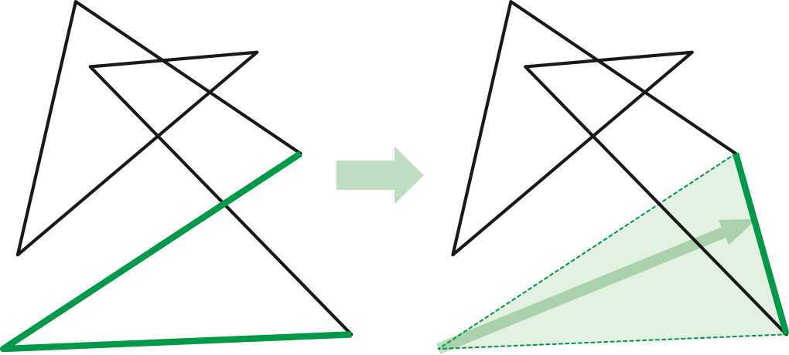
A vertex move.
Now suppose the polygon \(P\) lives
in the punctured place \(\mathbb{R}^2\setminus
o\). Let \(p, q, r\) be three
consecutive vertices of \(P\). The
vertex move \(q\mapsto q’\) is
safe if neither of the triangles \(\triangle p q q’\) or \(\triangle q q’ r\). contains the obstacle
point \(o\). Equivalently, during a
safe vertex move, the continuously changing polygon never touches \(o\).
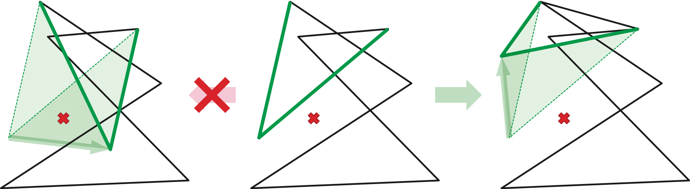
An unsafe vertex move and a safe vertex
move.
It follows that every safe vertex move is a homotopy in \(\mathbb{R}^2\setminus o\). We can build up
more complex homotopies by concatenating several safe vertex moves. In
fact, any sequence of safe vertex moves describes a homotopy in
\(\mathbb{R}^2\setminus o\).
2.6 Polygon homotopies are
sequences of vertex moves
Unfortunately, the converse of this observation is false; not every
homotopy is a sequence of vertex moves. Consider, for example, a simple
translation or rotation of the entire polygon! Nevertheless, every
homotopy can be approximated by a sequence of safe vertex
moves.
Lemma:
If two polygons in \(\mathbb{R}^2\setminus
o\) are homotopic, then they are homotopic by a sequence of safe
vertex moves.
Proof:
Fix a homotopy \(h\colon [0,1]\times S^1 \to
\mathbb{R}^2\setminus o\) between two polygons \(P_0 = h(0,\cdot)\) and \(P_1 = h(1,\cdot)\).
For any parameters \(t\) and \(\theta\), let \(d(t, \theta)\) be the Euclidean distance
from \(h(t, \theta)\) to the origin
\(o\), and let \(\varepsilon = \min_{t,\theta}
d(t,\theta)\). Because the cylinder \([0,1]\times S^1\) is compact, this minimum
is well-defined and positive.
We subdivide the cylinder \([0,1]\times
S^1\) into triangles as follows. First, cut the cylinder into a
grid of \(\delta\times\delta\) squares
\(\square(i,j) = [i\delta, (i+1)\delta] \times
[j\delta, (j+1)\delta \bmod 1]\), where \(\delta>0\) is chosen so that the
diameter of \(h(\square(i,j))\) is at
most \(\varepsilon/2\). (The existence
of \(\delta\) is guaranteed by
continuity.) Then further subdivide each grid square into two right
isosceles triangles, as shown in the figure below. Without loss of
generality, assume each vertex of \(P_0\) and \(P_1\) the image of some vertex on the
boundary of the resulting triangle mesh \(\Delta\).
The homotopy \(h\) maps any cycle in
this mesh to a closed curve, which consists of \(O(1/\delta)\) curve segments, each with
diameter at most \(\varepsilon/2\), and
each with distance at least \(\varepsilon\) from \(o\). Define a new homotopy \(h’ \colon [0,1]\times S^1 \to
\mathbb{R}^2\setminus o\) that agrees with \(h\) at every grid vertex and linearly
interpolates within each grid triangle. Changing from \(h\) to \(h’\) changes the image of any grid cycle by
replacing each short curve segment with a straight line segment.
We can easily construct a sequence of \(1 +
2/\delta^2\) cycles in \(\Delta\) that starts with one boundary
\(0\times S^1\) and ends with the other
boundary \(1\times S^1\), such that the
symmetric difference between two adjacent cycles is the boundary of one
triangle in \(\Delta\). Two adjacent
cycles in this sequence are shown on the right in the following
fugure.
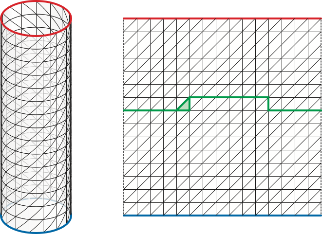
A grid on the unit cylinder.
The piecewise-linear homotopy \(h’\)
maps any two adjacent cycles in this sequence to a pair of polygons
\(P_t\) and \(P_{t+1}\) that differ by a single vertex
move. Every vertex of each intermediate polygon has distance at least
\(\varepsilon\) from the origin, each
edge has length at most \(\varepsilon/2\), and each vertex move
translates its vertex a distance of at most \(\varepsilon/2\). It follows that every
vertex move in this sequence is safe.
We conclude that \(P_0\) can be
transformed into \(P_1\) by a sequence
of \(1 + 2/\delta^2\) safe vertex
moves.
This lemma is a special case of a more general simplicial
approximation theorem, which intuitively states that any continuous
map between nice topological spaces (formally, geometric
simplicial complexes) can be approximated by a nice continuous
map (formally, simplicial maps between finite subdivisions of the
original complexes); moreover, the original map can be continuously
deformed to its approximation.
2.7 Homotopy Invariant
Winding numbers are our first example of a topological
invariant, and specifically a complete homotopy invariant.
A topological invariant is any property of objects or spaces that is
unchanged by some form of topological equivalence. One simple example is
the number of components of a subset of the plane; another standard
example is the genus of a surface. A homotopy
invariant is any property that is preserved by homotopy; a homotopy
invariant is complete if it takes on different values for two
objects that are not homotopic.
Theorem:
Two polygons are homotopic in \(\mathbb{R}^2\setminus o\) if and only if
they have the same winding number around the origin \(o\). Thus, winding number is a complete
homotopy invariant for polygons in \(\mathbb{R}^2\setminus o\).
Proof:
Fix two polygons \(P_0\) and \(P_1\) in \(\mathbb{R}^2\setminus o\). If these two
polygons are homotopic, then by the previous lemma, they are connected
by a sequence of safe triangle moves. A safe triangle move does not
change the winding number of a polygon around the origin. Thus, by
induction, \(P_0\) and \(P_1\) have the same winding number.
To prove the converse, I’ll describe a sequence of safe triangle
moves that transforms any polygon \(P\)
into a canonical polygon \(\Diamond^w\) with the same winding number
\(w\) around the origin. (The notation
\(\Diamond^w\) will make sense later,
honest.) Thus, if \(P_0\) and \(P_1\) have the same winding number \(w\), we can deform \(P_0\) into \(P_1\) by concatenating the move sequence
that takes \(P_0\) to \(\lozenge^w\) and the reverse of the move
sequence that takes \(P_1\) to \(\lozenge^w\).
Our homotopy consists of several stages. First let’s consider the
case where the winding number of \(P\)
around \(0\) is not zero.
Let \(p_i\) be any vertex of \(P\), and let \(p_{i-1}\) and \(p_{i+1}\) be the next and previous
vertices. We call \(q\)redundant if the triangle \(\triangle
p_{i-1}p_ip_{i+1}\) does not contain the origin. In particular,
if the triples \((o,p_{i-1},p_i)\) and
\((o,p_i,p_{i+1})\) have opposite
orientations, one clockwise and the other counterclockwise, then \(p_i\) is redundant. In the first phase of
our homotopy, we repeatedly remove redundant vertices, by moving each
redundant vertex \(q\) to one of its
neighbors, until none are left. The resulting polygon \(P'\) is angularly monotone:
every triple \((o,p_i,p_{i+1})\) has
the same orientation.
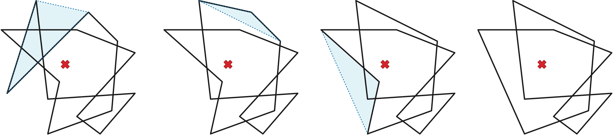
Removing three redundant
vertices
Next, we subdivide \(P'\) by
adding vertices at its intersections with rays pointing up, down, left,
and right from the origin \(o\). After
this subdivision, any vertex that is not on one of these rays
is redundant. So in the second phase of the homotopy, we remove all
non-ray vertices using safe vertex moves. The resulting polygon \(P''\) is still angularly
monotone.
Finally, we move each vertex so that is distance from the origin is
\(1\); each of these vertex moves is
safe. The resulting polygon \(\Diamond^w\) has vertices only at the
points \((0,1)\), \((1,0)\), \((0,-1)\), and \((-1,0)\); the polygon winds around this
diamond \(|w|\) times, counterclockwise
if \(w>0\) and clockwise if \(w<0\).
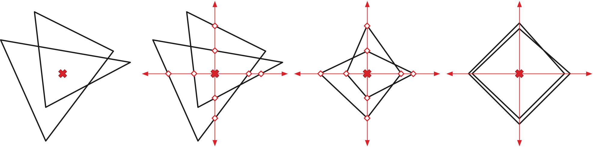
Making an angularly monotone polygon
canonical
The special case where \(P\) has
winding number \(0\) is even simpler.
The first phase (removing redundant vertices) actually reduces \(P\) to a single point; we can then
translate this point to \(\diamond^0 =
(1,0)\) using one more safe vertex move.
This theorem immediately implies a linear-time algorithm to decide if
two polygons are homotopic in the punctured plane: Count positive and
negative crossings between each polygon and an arbitrary ray from the
origin.
2.8 …and the Aptly Named Sir Not
Appearing in This Film
rotation number = total turning angle = smiles \(-\) frowns
regular homotopy = vertex moves without spurs
rotation number is a regular homotopy invariant
complex root finding / fundamental theorem of algebra
signed volumes of self-intersecting polyhedra (hic utres
unilaterales nascuntur)
2.9 References
James W. Alexander. Topological invariants of knots and links.
Trans. Amer. Math. Soc. 30(2):275–306, 1928. The reason we call
it “Alexander numbering”.
Albrecht Ludwig Friedrich Meister. Generalia de genesi figurarum
planarum, et independentibus earum affectionibus. Novi Commentarii
Soc. Reg. Scient. Gott. 1:144–180 + 9 plates, 1769/1770. Presented
January 6, 1770. The shoelace formula.
August F. Möbius. Über der Bestimmung des Inhaltes eines
Polyëders. Ber. Sächs. Akad. Wiss. Leipzig, Math.-Phys. Kl.
17:31–68, 1865. Gesammelte Werke 2:473–512, Liepzig, 1886. An
earlier appearance of Alexander numbering.
3 Homotopy Testing\(^\beta\)
3.1 Multiple Obstacles
Now let’s generalize the homotopy problem from the last lecture to
the case of more than one obstacle. Let \(O =
\{a, b, c, \dots\}\) be an arbitrary finite set of points in the
plane. The definitions of homotopy and contractible easily generalize to
polygons (and other closed curves) in \(\mathbb{R}^2\setminus O\). How quickly can
we tell whether two polygons in \(\mathbb{R}^2\setminus O\) are
homotopic?
The Endless Chain again
The game Fast and Loose shows some of the subtlety of this problem.
Let \(a\) and \(b\) be arbitrarily points in each of the
two loops of the curve \(C\) that the
con artist actually uses. It’s not hard to see that \(wind(c, a) = wind(C, b) = 0\); any ray
upward from either \(a\) or \(b\) has one positive crossing and one
negative crossing. Thus, the curve is contractible in the plane with
only one of these punctures; in other words, the chain is loose
if we only use one finger. But the curve \(C\) is not contractible in \(\mathbb{R}^2 \setminus \{a, b\}\); we can
hold the chain fast by placing a finger in each loop. Winding numbers
are not a homotopy invariant when there is more than one
obstacle.
Just as in the one-obstacle setting, we can (approximately) decompose
any homotopy between two polygons in \(\mathbb{R}^2\setminus O\) into safe vertex
moves, where now a vertex move is safe if the moving vertex and
its incident edges avoids all points in \(O\). Essentially the same argument from the
previous lecture implies the following:
Theorem:
Two polygons in \(\mathbb{R}^2\setminus
O\) are homotopic if and only if they are connected by a sequence
of safe vertex moves.
3.2 Crossing Sequences
However, we can still define a homotopy invariant by shooting rays
out of every obstacle, and recording how the polygon intersects
these rays. Specifically, we record not only the number of
times the polygon crosses each ray, but the actual order and directions
of these crossings.
As usual, we will assume without loss of generality that the
obstacles have distinct \(x\)-coordinates. Shoot a vertical ray
upward from each obstacle point; I’ll call these vertical rays
fences. The crossing sequence of a polygon \(P\) in \(\mathbb{R}^2\setminus O\) is the sequence
of intersections between the fences and the polygon, in order along the
polygon, along with the sign of each crossing (positive if the polygon
crosses the fence to the left, negative if the polygon crosses the fence
to the right).
Figure 2 shows a polygon in the plane with two obstacle points \(a\) and \(b\). If we orient the polygon as indicated
by the arrows, starting at the lower left corner, the crossing sequence
is BAabBAabB, where each upper-case letter
denotes a positive crossing through the corresponding fence, and each
lower-case letter denotes a negative crossing through the corresponding
fence.
A polygon with crossing sequence
BAabBAabB
Lemma:
Two polygons in \(\mathbb{R}^2\setminus
O\) with the same crossing sequence are homotopic.
Proof:
I’ll describe a homotopy that transforms any polygon \(P\) into a canonical polygon with
the same crossing sequence. (With more care, the homotopy can be
described explicitly as a sequence of safe vertex moves.)
First, we define two new sentinel points \(a^\flat\) and \(a^\sharp\) just above and on either side of
each obstacle \(a\). These points are
close enough to \(a\) that no vertex of
\(P\), no other obstacle, and no other
sentinel point lies on or between the vertical lines through \(a^\flat\) and \(a^\sharp\).
Next, we divert edges through the sentinel points, by adding
two additional vertices near each intersection between \(P\) and any fence, and then moving those
new vertices to the sentinel points near the corresponding obstacle.
If the original edge crosses \(a\)’s fence from right to left (a positive
crossing), the diverted edge passes through sentinel points \(a^\sharp\) and \(a^\flat\) in that order.
If the original edge crosses \(a\)’s fence from left to right (a negative
crossing), the diverted edge passes through sentinel points \(a^\flat\) and \(a^\sharp\) in that order.
See Figure 3. The resulting polygon \(P'\) has the same crossing sequence as
the original polygon \(P\).
Finally, we divert the rest of the polygon to a single point far
below any obstacle. First we add a new vertex at the midpoint of each
edge of \(P'\) between two sentinel
points of different obstacles. Then we choose a point \(z\) sufficiently far below the polygon and
the sentinel points that for any polygon vertex \(p\), the segment \(zp\) does not cross any of the fences.
Finally, we move every vertex of \(P'\) that is not a sentinel
point directly to this new bottom point \(z\). Again, this deformation does not
change the polygon’s crossing sequence.
The resulting canonical polygon \(P''\) is a concatenation of loops
of the form \(z a^\flat a^\sharp z\)
(for each negative crossing) or \(z a^\sharp
a^\flat z\) (for each positive crossing).
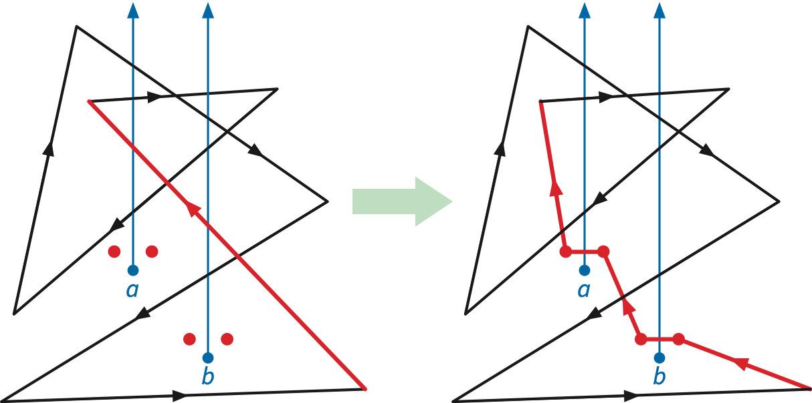
Diverting one edge of a
polygon
Corollary:
Any polygon in \(\mathbb{R}^2\setminus
O\) with an empty crossing sequence is contractible.
Unfortunately, the converses of these two results are false; a
homotopy that moves one polygon vertex across one fence either inserts
or deletes a pair of crossings in the polygon’s crossing sequence. Thus,
crossing sequences are not homotopy invariants. Fortunately, this is the
only way that a homotopy can change the crossing sequence.
3.3 Reductions
We regard signed crossing sequences as strings of abstract symbols,
where each symbol \(a\) has a formal
“inverse” \(\bar{a}\). In our earlier
example, each upper case letter is the inverse of the corresponding
lower-case letter, and vice versa. Let \(x\cdot y\) denote the concatenation of
strings \(x\) and \(y\), and let \(\varepsilon\) denote the empty string.
An elementary reduction is a transformation of the form
\(x\cdot a\bar{a}\cdot y \mapsto x\cdot
y\), where \(x\) and \(y\) are (possibly empty) strings and \(a\) is a single symbol. An elementary
expansion is the reverse transformation \(x\cdot y \mapsto x\cdot a\bar{a}\cdot y\).
Two strings are equivalent if once can be transformed into the
other by a sequence of elementary reductions and expansions. (Check for
yourself that equivalence is in fat an equivalence relation!) We call a
string trivial if it is equivalent to the empty string \(\varepsilon\). Finally, a string is
reduced if no elementary reductions are possible; for example,
the empty string \(\varepsilon\) is
trivially reduced, as is any string of length \(1\).
Crossing sequences of polygons are actually cyclic strings.
Formally, a cyclic string is an equivalence class of linear strings:
\[
(w) := \{ y\cdot x \mid x\cdot y = w \}
\] For example, (ABbA) = {ABbA,
BbAA, bAAB, AABb} and \((\varepsilon) = \{\varepsilon\}\). I’ll
write \(w \sim z\) to denote that \(w\) is a cyclic shift of \(z\), or equivalently \(w\in(z)\), or equivalently \(z\in (w)\). To emphasize that elementary
reductions can “wrap around” cyclic strings, we say that a cyclic string
is cyclically reduced if no elementary reductions are possible.
A (cyclic) string is trivial if it is equivalent to the empty
(cyclic) string.
For example, the cyclic string
(EcaCbaABcEeEeAdbcCBaEdDeADCe) is trivial; two different
sequences of elementary reductions are shown below (using interpuncts to
represent missing symbols). In the first sequence, each elementary
reduction removes the leftmost matching pair; the second
sequence is more haphazard. In fact, as the following lemma implies,
any sequence of elementary reductions eventually reduces this
string to nothing.
Every cyclic string is equivalent to exactly one cyclically reduced
cyclic string.
Proof:
Let \(w\) be a cyclic string that
allows two elementary reductions \(w\mapsto
x\) and \(w\mapsto y\), meaning
two different pairs of symbols are deleted. We claim that either \(x=y\) or there is another string \(z\) such that \(x\mapsto z\) and \(y\mapsto z\) are elementary reductions.
If the pairs of symbols deleted by \(w\mapsto x\) and \(w\mapsto y\) are disjoint, then we can
write \(w = (a \bar{a} \cdot w_1 \cdot
c\bar{c} \cdot w_2)\) for some (possibly empty) linear strings
\(w_1\) and \(w_2\) and (possibly equal, possibly
inverse) symbols \(a\) and \(c\). Without loss of generality we have
\(x = (w_1 \cdot c\bar{c} \cdot w_2)\)
and \(y = (w_2 \cdot a\bar{a} \cdot
w_1)\). In this case, we can take \(z =
(w_1 w_2)\).
If the pairs of symbols deleted by \(w\mapsto x\) and \(w\mapsto y\) overlap, then we can write
\(w = (a \bar{a} a \cdot w')\) for
some (possibly empty) linear string \(w'\) and some symbol \(a\). In this case we have \(x = y = (a \cdot w')\).
It follows that applying only elementary reductions leads to
a unique reduced string; however, equivalence also allows elementary
expansions. Consider two equivalent but distinct cyclic strings
\(x\ne y\), and let \(x = w_1 \leftrightarrow w_2 \leftrightarrow \cdots
\leftrightarrow w_n = y\) be a sequence of strings, each
connected to its success by an elementary reduction in one direction
\(w_i \mapsto w_{i+1}\) or the other
\(w_{i+1} \mapsto w_i\).
Suppose for some index \(i\), we
have reductions \(w_i \mapsto w_{i-1}\)
and \(w_i \mapsto w_{i+1}\). If \(w_{i-1} = w_{i+1}\), then we can remove
\(w_{i-1}\) and \(w_i\) to obtain a shorter transformation
sequence. Otherwise, there is another string \(z_i\) such that \(w_{i-1}\mapsto z_i\) and \(w_{i+1} \mapsto z_i\). Thus, by induction,
we can modify our transformation sequence so that every reduction
appears before every expansion.
Let \(z\) be the shortest string in
this normalized sequence. Both \(x\)
and \(y\) can be reduced to \(z\) using only elementary reductions.
Because \(x\ne y\), either \(x \ne z\) or \(y\ne z\); we conclude that at most one of
\(x\) and \(y\) is reduced.
Lemma:
Any cyclic crossing sequence of length \(x\) can be cyclically reduced in \(O(x)\) time.
Proof:
The following (pseudo-)python code assumes the input X is
an array of non-zero integers, with inverses indicated by negation. The
algorithm runs in two phases. The first phase reduces the
linear sequence \(X\) by
repeatedly removes the leftmost matching pair, using the output array as
a stack. The second phase performs any remaining cyclic reductions that
“wrap around” the ends of the array.
def LeftGreedyReduce(X):
n = size(X)
Y = [0] * n // reduced sequence = stack
top = -1 // top stack index
// ————— linear reduction —————
for i in range(n):
if top < 0 || (X[i] != -Y[top]): // empty or no match
top = top + 1
Y[top] = X[i] // push
else:
top = top - 1 // pop
// ————— cyclic reduction —————
bot = 0
while (bot < top) and (Y[bot] = -Y[top]):
bot = bot + 1
top = top - 1
// ————— done! —————
return Y[bot:top+1]
Lemma:
Two polygons are homotopic in \(\mathbb{R}^2\setminus O\) if and only if
their crossing sequences are equivalent.
Proof (sketch):
A single safe vertex move changes the signed crossing sequence by a
finite number of elementary reductions and their inverses, at most one
per obstacle.
Conversely, any elementary reduction of the signed crossing sequence
can be modeled by a sequence of safe vertex moves, performed either
directly on the original polygon or (more easily) on the canonical
polygon with the same crossing sequence.
We finally have all the ingredients of our homotopy-testing
algorithm.
Theorem:
For any set \(O\) of \(k\) points in \(\mathbb{R}^2\), and any two \(n\)-gons \(P\) and \(Q\) in \(\mathbb{R}^2\setminus O\), we can determine
whether \(P\) and \(Q\) are homotopic in \(\mathbb{R}^2\setminus O\) in \(O(k\log k + kn)\) time.
Proof (sketch):
As usual we assume without loss of generality that the obstacles and
polygon vertices all have distinct \(x\)-coordinates. First we sort the
obstacles from left to right in \(O(k\log
k)\) time. Then we compute the crossing sequence of \(P\) and \(Q\), in constant time per crossing, plus
constant time per vertex. Each crossing sequence has length \(O(nk)\). Then we cyclically reduce the two
crossing sequences in \(O(nk)\) time.
Finally, we check whether the two reduced crossing sequences are equal
(as cyclic strings) in linear time using Knuth-Morris-Pratt (or
any other fast string-matching algorithm).
Let me emphasize here that the algorithm does not construct an
explicit homotopy between the two polygons.
3.4 Varations
To be written
Polygons with holes: Replace each hole with a sentinel
point.
Two paths \(\pi\) and \(\sigma\) are homotopic if and only if the
loop \(\pi\cdot\bar\sigma\) is
contractible.
Two polygonal paths \(P\) and \(Q\) are homotopic if and only if they have
the same (not cyclically) reduced crossing
sequence.
3.5 …and the Aptly Named Sir Not
Appearing in This Film
alternative fences: vertical lines, spanning tree + ray
picture hanging puzzles
4 Faster Homotopy Testing\(^\beta\)
In the previous lecture, we saw an algorithm to decide if one polygon
is contractible, or if two polygons are homotopic, in the plane with
several points removed. The algorithm runs in \(O(k\log k + nk)\) time, where \(k\) is the number of obstacle points; in
the worst case, this running time is quadratic in the input size.
A running time of \(\Omega(nk)\) is
inevitable if we are required to compute an explicit reduced crossing
sequence; consider the polygon and obstacles below. But if a polygon is
contractible—homotopic to a single point—its reduced crossing
sequence is empty. Similarly the (non-reduced) crossing sequence of a
polygon can have length \(\Omega(nk)\),
even if the polygon is contractible, but nothing requires us to compute
explicit crossing sequences!
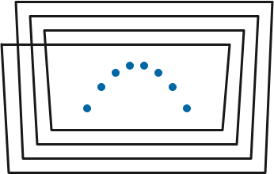
A polygon and obstacles with a long
reduced crossing sequence
In this lecture, I’ll describe another algorithm to test
contractibility of polygons in punctured planes, which is faster either
when the polygon has few self-intersections or when the number of
obstacles is significantly larger than the number of polygon vertices.
This algorithm is based on an algorithm of Cabello et al. [1], with some
improvements by Efrat et al. [2]. Variations of this algorithm compute
reduced crossing sequences without explicitly computing
non-reduced crossing sequences first.
The key observation is that we are free to modify both the
polygon and the obstacles, as long as our modifications do not
change the reduced crossing sequence. In short, we are solving a
topology problem, so we should feel free to choose whatever
geometry is most convenient for our purposes.
To make the following discussion concrete, let \(O\) be an arbitrary set \(k\) of obstacle points in the plane, and
let \(P\) be an arbitrary \(n\)-vertex polygon in \(\mathbb{R}^2 \setminus O\). As usual, we
assume these objects are in general position: no two
interesting points (obstacles, polygon vertices, or self-intersection
points) lie on a common vertical line, and no three polygon vertices lie
on a common line. In particular, no edge of \(P\) is vertical, and every point where
\(P\) self-intersects is a transverse
intersection between two edges. This assumption can be enforced with
probability \(1\) by randomly rotating
the coordinate system and randomly perturbing the vertices.
4.1 Trapezoidal decomposition
This first stage of our algorithm, like our earlier polygon
triangulation algorithm, first constructs a trapezoidal
decomposition of the input. We define the decomposition by
extending vertical segments, which we call fences, upward and
downward from each obstacle, from each vertex of \(P\), and from each self-intersection point
of \(P\), until they hit edges of \(P\) (or escape to infinity). These fences,
together with the edges of \(P\),
decompose the plane into trapezoids, some of which are unbounded and
others degenerate. See Figure 2.
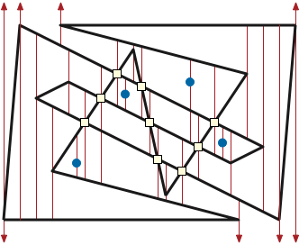
A trapezoidal decomposition of a
self-intersecting polygon and four obstacles
A classical sweepline algorithm of Bentley and Ottmann constructs
this decomposition in \(O((n + k + s)\log
(n+k))\) time, where \(s\) is
the number of self-intersection points. (There are several faster
algorithms, especially when the number of self-intersections is small,
but the Bentley-Ottmann algorithm is much simpler to describe and
implement, and using these faster alternatives would not significantly
improve the overall running time of our contractibility algorithm.)
Think of the \(n\) polygon edges and
\(k\) obstacle points as \(n+k\) line segments (\(k\) of which have length zero). Any
vertical line intersects t most \(n+1\)
of these segments. The Bentley-Ottman algorithm sweeps a vertical line
\(\ell\) across the plane, maintaining
the sorted sequence of segments intersecting \(\ell\) in a balanced binary search tree, so
that segments can be inserted or deleted in \(O(\log n)\) time. The \(x\)-coordinates where this intersection
sequence changes are called events; there are two types of
events:
vertex events, where \(\ell\) passes through a vertex of \(P\) or a point in \(O\), and
intersection events, where \(\ell\) passes through a self-intersection
point of \(P\).
The algorithm processes these events in order from left to right.
The vertices and obstacles are all known in advance, so after an
initial \(O((n+k)\log(n+k))\) sorting
phase, it is easy to find the next vertex event. Intersections are
not known in advance, and computing them by brute force in
\(O(n^2)\) time would take too long.
Instead, we observe that the next intersection event must occur
at the intersection of two consecutive segments along \(\ell\). Thus, for each consecutive pair of
segments that intersects to the right of \(\ell\), we have a potential
intersection event. We maintain these \(O(n)\) potential intersection events in a
priority queue, so that we can find the next actual
intersection event in \(O(\log n)\)
time.
At each event, we insert a single fence, perform \(O(1)\) binary-tree operations to maintain
the intersection sequence with \(\ell\), and then perform \(O(1)\) priority-queue operations. There are
\(O(n + k + s)\) events, each requiring
\(O(\log n)\) time, so including the
initial sort, the overall running time is \(O((n + k + s)\log (n + k))\).
As a by-product of the sweep-line algorithm, we obtain the complete
list of self-intersection points. We subdivide \(P\) by introducing two coincident vertices
at each self-intersection point, increasing the number of vertices from
\(n\) to \(n+2s\), and ensuring that the edges of
\(P\) intersect only at vertices.
4.2 Vertical and horizontal
ranks
Next, we replace \(P\) and \(O\) with a new orthogonal polygon
\(\bar{P}\) and a new set of obstacles
\(\bar{O}\) that define exactly the
same crossing sequence. At a high level, we replace each edge of \(P\) with a horizontal line segment and each
vertex of \(P\) with a vertical line
segment.
The \(y\)-coordinates of the
horizontal segments are determined by the following vertical
ranking of the polygon edges and obstacle points. Let \(S\) be the set of \(m = n+2s+k\) interior-disjoint segments,
consisting of the subdivided edges of \(P\) and the obstacles \(O\). For any two segments \(\sigma\) and \(\tau\) in \(S\), write \(\sigma\Uparrow\tau\) (and say “sigma is
above tau”) if there is a vertical segment with positive length whose
upper endpoint lies on \(\sigma\) and
whose lower endpoint lies on \(\tau\).
Lemma:
For any set \(S\) of
interior-disjoint non-vertical line segments, the \(\Uparrow\) relation is acyclic.
Proof:
For the sake of argument, let \(\sigma_1
\Uparrow \sigma_2 \Uparrow \cdots \Uparrow \sigma_r \Uparrow
\sigma_1\) be a minimum-length cycle of segments in \(S\). Obviously \(r \ge 2\), because no segment is above
itself. Similarly, \(r \ge 3\), because
\(\sigma_1 \Uparrow \sigma_2\) and
\(\sigma_2 \Uparrow \sigma_1\) would
imply that \(\sigma_1\) and \(\sigma_2\) have intersecting interiors.
Rotate the indices if necessary, so that the right endpoint of \(\sigma_1\) has strictly smaller \(x\)-coordinate than the right endpoint of
any other segment \(\sigma_i\) in the
cycle. In particular, the right endpoints of \(\sigma_2\) and \(\sigma_r\) are both strictly to the right
of \(\sigma_1\). Thus, the right
endpoint of \(\sigma_1\) is both
directly above some point of \(\sigma_2\) and directly below some point of
\(\sigma_r\). It follows that \(\sigma_r \Uparrow \sigma_2\), which
contradicts the minimality of the cycle.
Now write \(\sigma\uparrow \tau\)
(and say “sigma is immediately above tau”) of some fence in the
trapezoidal decomposition of \(S\)
touches both \(\sigma\) and \(\tau\), and in particular touches \(\sigma\) above the point where it touches
\(\tau\). Because \(\sigma\uparrow \tau\) immediately implies
\(\sigma\Uparrow \tau\), the relation
\(\uparrow\) is also acyclic; in fact,
our earlier relation \(\Uparrow\) is
the transitive closure of \(\uparrow\).
We can easily extract a directed acyclic graph \(G^\uparrow\) representing the relation
\(\uparrow\) (and thus its transitive
closure \(\Uparrow\)) directly from the
trapezoidal decomposition of \(S\).
(Any linear extension of \(\Uparrow\) is called a of \(D\); the previous lemma implies that such
an order always exists.)
Now index the segments \(S = \{\sigma_1,
\sigma_2, \dots, \sigma_m \}\) according to an arbitrary
topological ordering of the graph \(G^\uparrow\), so that \(\sigma_i \Uparrow \sigma_j\) implies \(i < j\). For any segment \(\sigma_i\), let \(\textsf{obsbelow}(\sigma_i)\) denote the
number of obstacle segments \(\sigma_j\) such that \(j < i\). Finally, we define the
vertical rank\(\textsf{vrank}(\sigma_i)\) as follows:
If \(\sigma_i\) is a polygon
segment, then \(\textsf{vrank}(\sigma_i) =
2\cdot \textsf{obsbelow}(\sigma_i)\).
If \(\sigma_i\) is an obstacle
segment, then \(\textsf{vrank}(\sigma_i) =
2\cdot \textsf{obsbelow}(\sigma_i) + 1\).
Thus, all vertical ranks are integers between \(0\) and \(2k\), every obstacle has odd vertical rank,
and every polygon edge has even vertical rank.
We also define the horizontal rank of any polygon vertex or
an obstacle point \(p\) as follows. Let
\(\textsf{obsleft}(p)\) to be the
number of obstacles with strictly smaller \(x\)-coordinates than \(p\).
If \(p\) is a polygon vertex, then
\(\textsf{hrank}(p) = 2\cdot
\textsf{obsleft}(p)\).
If \(p\) is an obstacle point, then
\(\textsf{hrank}(p) = 2\cdot
\textsf{obsleft}(p) + 1\).
Thus, all horizontal ranks are integers between \(0\) and \(2k\), every obstacle has odd horizontal
rank, and every polygon vertex has even horizontal rank.
4.3 Rectification
Now we define a rectified polygon \(\bar{P}\) and new obstacles \(\bar{O}\) as follows:
Replace each edge \(pq\) of
\(P\) with a horizontal segment between
\((\textsf{hrank}(p),
\textsf{vrank}(pq))\) and \((\textsf{hrank}(q), \textsf{vrank}(pq))\).
Similarly, replace each vertex \(q\) of
\(P\), with adjacent edges \(pq\) and \(qr\), with a vertical segment between \((\textsf{hrank}(q), \textsf{vrank}(pq))\)
and \((\textsf{hrank}(q),
\textsf{vrank}(qr))\). Connecting these horizontal and vertical
segments in sequence around \(P\) gives
us an orthogonal polygon \(\bar{P}\).
For each obstacle \(o\), let
\(\bar{o} = (\textsf{hrank}(o),
\textsf{vrank}(o))\). The set of all such points is our new
obstacle set \(\bar{O}\).
By construction, every vertex of \(\bar{P}\) has even integer coordinates, and
every obstacle in \(\bar{O}\) has odd
integer coordinates, so \(\bar{P}\) is
a polygon in \(\mathbb{R}^2\setminus
\bar{O}\). Moreover, the crossing sequence of the rectified
polygon \(\bar{P}\) with respect to the
new obstacles \(\bar{O}\) is
identical to the crossing sequence of the original polygon
\(P\) with respect to the original
obstacles \(O\). Thus, \(P\) is contractible in \(\mathbb{R}^2\setminus O\) if and only if
\(\bar{P}\) is contractible in \(\mathbb{R}^2\setminus \bar{O}\).
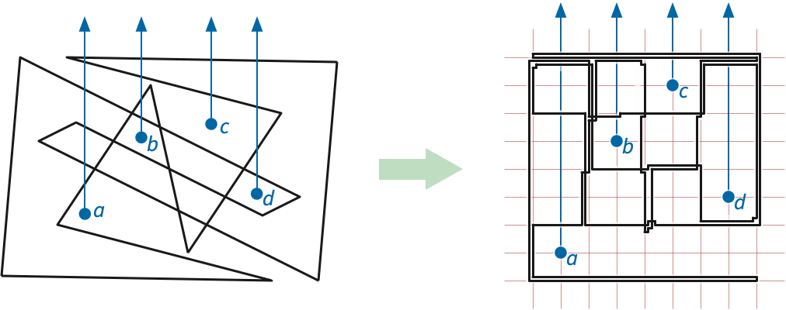
A polygon and its rectification
(perturbed to show overlapping and zero-length edges) defining the same
(trivial) crossing sequence abdDCBAabcdAaDBA
It is actually possible to construct an explicit deformation of \(P\) and \(O\) into \(\bar{P}\) and \(\bar{O}\), as a sequence of elementary
moves of two types: safe vertex moves (translate a vertex of \(P\) without touching any obstacle) and
“safe obstacle moves” (translate one obstacle in \(O\) without touching \(P\)). Moreover, we can guarantee that
throughout the entire deformation, the crossing sequence of the polygon
with respect to the obstacles remains unchanged. Fortunately, we don’t
actually need an explicit homotopy; the invariance of the crossing
sequence is enough.
4.4 Reduction
So why did we go through this madness? We have now reduced our
problem from arbitrary polygons to particularly well-behaved
orthogonal polygons. Restricting to orthogonal polygons allows
us to represent and manipulate the crossing sequence of \(\bar{P}\)implicitly using
relatively simple data structures.
Let \(\bar{n} = 2n+4s\) denote the
number of vertices in the rectified polygon \(\bar{P}\). Without loss of generality, we
can assume that the \(i\)th edge \(\bar{p}_i \bar{p}_{i+1}\) of \(\bar{P}\) is horizontal if \(i\) is even and vertical if \(i\) is odd. Thus, we can represent \(\bar{P}\) itself using an alternating
sequence of \(x\)- and \(y\)-coordinates: \[
x_0, y_1, x_2, y_3, \dots, x_{\bar{n}-2}, y_{\bar{n}-1},
\] where \(\bar{p}_i = (x_i,
y_{i+1})\) if \(i\) is even, and
\(\bar{p}_i = (x_{i+1}, y_i)\) if \(i\) is odd. We store these coordinates in
any data structure that allows us to change one coordinate or remove any
adjacent pair of coordinates \(x_i, y_{i\pm
1}\) in \(O(1)\) time—for
example, a circular doubly-linked list.
We now reduce\(\bar{P}\)
by repeatedly applying two operations, called eliding and
sliding, which simplify the polygon without changing its
homotopy class. Each operation requires \(O(\log k)\) time, and the reduction
requires at most \(O(\bar{n})\) of
these operations, so the overall reduction time is is \(O(\bar{n}\log k) = O((n+s)\log k)\). If the
reduced polygon is empty, we correctly report that \(P\) is contractible; otherwise, we
correctly report that \(P\) is not
contractible.
4.4.1 Eliding Zero-Length
Edges
This makes the pictures nicer, but it isn’t actually
necessary; consider removing.
The rectified polygon \(\bar{P}\)
can contain edges with length zero; we elide (that is, remove)
all such edges in a preprocessing phase. Geometrically, there
are two types of zero-length edges:
A bump is a zero-length edge whose previous and next edges
have the same orientation. Removing a bump merges the previous and next
edges into a single edge.
A spur is a zero-length edge whose previous and next edges
do overlap. Removing a spur replaces those two edges with their
difference, which could have length zero, making more elisions
possible.
However, our representation of \(\bar{P}\) as a list of alternating \(x\)- and \(y\)-coordinates allows us to treat these
two cases identically in \(O(1)\) time.
To remove the zero-length edge edge \(\bar{p}_{i-1}\bar{p}_i\), we delete the
\((i-1)\)th and \(i\)th coordinates from our coordinate list.
Specifically:
if \(i\) is odd, so \(y_{i-1} = y_{i+1}\) and the zero-length
edge is “horizontal”, we delete \(y_{i-1}\) and \(x_i\).
If \(i\) is even, so \(x_{i-1} = x_{i+1}\) and the zero-length
edge is “vertical”, we delete \(x_{i-1}\) and \(y_i\).
Equivalently, we can remove any zero-length edge \(\bar{p}_{i-1}\bar{p}_i\) using two safe
vertex moves:
First (formally) move \(\bar{p}_{i-1}\) to \(\bar{p}_i\), merging those two
vertices.
Then move \(\bar{p}_i\) either
\(\bar{p}_{i-2}\) and \(\bar{p}_{i+1}\), whichever is closer. It
follows that removing a zero-length edge does not change the homotopy
class of \(\bar{P}\).
We can remove all zero-length edges from \(\bar{P}\) in \(O(\bar{n})\) time using a “left-greedy”
algorithm similar to the crossing-word reduction algorithm in the
previous lecture.
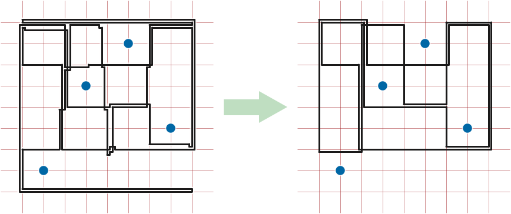
Eliding all zero-length edges in the
rectified polygon
4.4.2 Sliding Brackets
We call a positive-length edge of \(\bar{P}\) a bracket if both of its
neighboring edges are on the same side of the line through the edge.
That is, the edge and its neighbors look like \(\sqcup\), \(\sqsubset\), \(\sqcap\), or \(\sqsupset\). Sliding a bracket
moves it as far inward as possible, shortening the neighboring edges,
until at least one of two conditions is met:
The bracket has distance \(1\)
from an obstacle inside the bracket; we call such a bracket
frozen. Sliding a frozen bracket further would change the
crossing sequence of \(\bar{P}\) by
either adding or deleting a single crossing, thereby changing
the homotopy class.
At least one of the edges adjacent to the bracket has length
zero, which we can safely elide, just as in the previous phase. (If the
zero-length edge is a spur, several elisions may be required to ensure
that all edges have positive length.)
Sliding a bracket requires changing exactly one coordinate in our
alternating coordinate list, and then deleting zero or more pairs of
coordinates (to elide zero-length edges created by the slide).
The reduction algorithm ends either when all remaining brackets are
frozen (and all edges have positive length), or when no edges are left
at all. For example, if \(\bar{P}\) is
a rectangle that doesn’t not contain any obstacles, the first bracket
slide creates two zero-length edges; eliding these edges removes
every edge from the polygon.
Because each bracket slide (and ensuing elisions) either freezes a
bracket or decreases the number of polygon vertices, the reduction ends
after at most after \(O(\bar{n})\)
bracket slides. (A bracket slide can increase the number of
polygon self-intersections, but we don’t care about that; we
only needed to find self-intersections so that we could compute vertical
ranks.) The figure on the next page shows a sequence of bracket slides
contracting a rectified cycle.
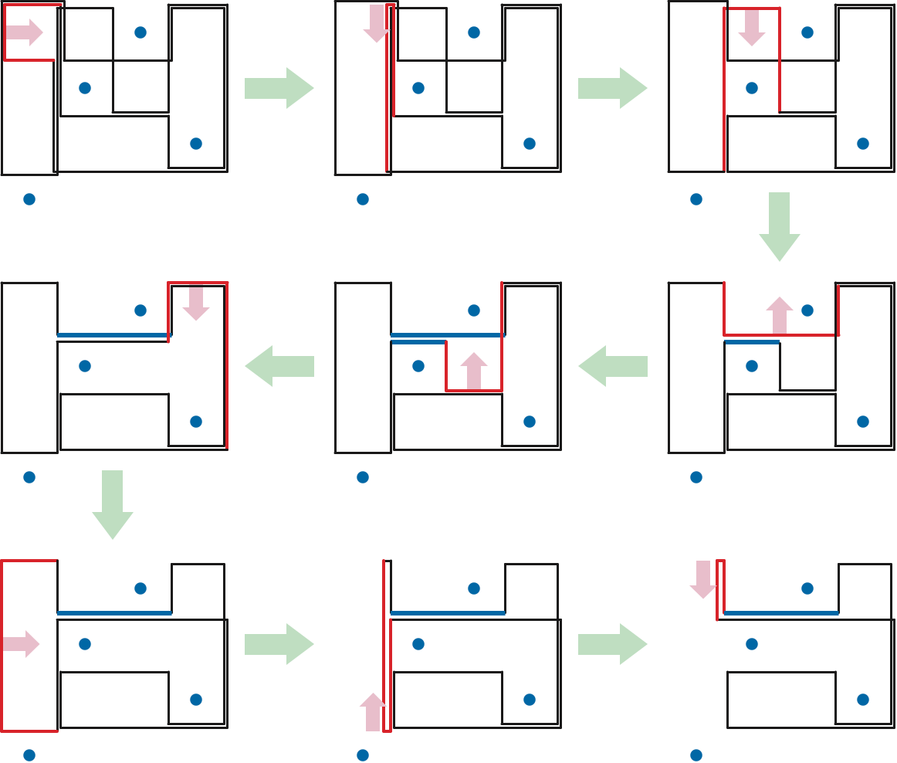
A sequence of bracket slides (and spur
elisions). Heavy blue edges are frozen.
The correctness of this algorithm rests on the following lemma.
Lemma:
The rectified polygon \(\bar{P}\) is
contractible in \(\mathbb{R}^2\setminus
\bar{O}\) if and only if it reduces to a single point.
Proof:
One direction is easy: Every sequence of elisions and bracket slides is
a homotopy. Thus, if \(\bar{P}\)
reduced to a single point, it must be contractible.
The other direction is more interesting. We actually need to reason
about the crossing sequence defined by both upward and downward
rays from each obstacle. Suppose \(\bar{P}\) is contractible. Then our earlier
arguments imply that the mixed crossing sequence of \(\bar{P}\) can be reduced to the empty
string, suing exactly the same algorithm as usual. There are two cases
to consider.
First suppose both mixed crossing sequences of \(\bar{P}\) is actually empty. Then \(\bar{P}\) does not cross the vertical line
through any obstacle. It follows that every vertex of \(\bar{P}\) has the same even \(x\)-coordinate, and thus every “horizontal”
edge of \(\bar{P}\) has length zero. It
follows by induction that \(\bar{P}\)
can be reduced to a single point by eliding every horizontal edge.
Otherwise, because \(\bar{P}\) is
contractible, its mixed crossing sequence contains an elementary
reduction. So there must be a subpath of \(\bar{P}\) that crosses the same obstacle
ray twice in a row, without crossing the vertical line through any
obstacle in between. (These two crossings would be canceled by an
elementary reduction.) Without loss of generality, suppose this subpath
crosses some upward obstacle ray from right to left, and then crosses
that same ray from left to tight. Then the leftmost vertical edge of
that subpath forms a bracket, and sliding that bracket reduces the
complexity of either the polygon or its crossing sequence. It follows by
induction that \(\bar{P}\) can be
reduced to a polygon with an empty crossing sequence, and thus to a
single point.
A close reading of this proof reveals that we only ever need to
perform horizontal bracket slides; even eliding zero-length
edges is unnecessary.
4.5 Layered Range Trees
To implement bracket slides efficiently, we preprocess the rectified
obstacles \(\bar{O}\) that supports
fast queries of the following form: Given a horizontal query segment
\(\sigma\), report the lowest obstacle
(if any) that lies directly above \(\sigma\). Symmetric data structures can
report the highest sentinel point below a horizontal segment, or the
closest sentinel points to the left and right of a vertical segment.
Lemma: Any set \(\bar{O}\) of \(k\) points in the plane can be preprocessed
in \(O(k\log k)\) time into a data
structure of size \(O(k\log k)\), so
that the lowest point (if any) above an arbitrary horizontal query
segment can be computed in \(O(\log
k)\) time.
Proof:
We use a data structure called a layered range tree, first
described by Willard [3]. The layered range tree of \(\bar{O}\) consists of a balanced binary
search tree \(T\) over the \(x\)-coordinates of \(\bar{O}\), with additional information
stored at each node. To simplify queries, the (odd) \(x\)-coordinates of \(\bar{O}\) are stored only at the leaves of
\(T\); the search keys for internal
nodes are intermediate (even) \(x\)-coordinates.
For each node \(v\) of \(T\), let \(l_v\) and \(r_v\) denote the smallest and largest \(x\)-coordinates in stored in the subtree
rooted at \(v\), and let \(\bar{O}_v\) denote the subset of obstacle
points with \(x\)-coordinates between
\(l_v\) and \(r_v\). Each node \(v\) in \(T\) stores the following information, in
addition to the search key \(x_v\).
The \(x\)-coordinates \(l_v\) and \(r_v\).
The points \(\bar{O}_v\), sorted by
\(y\)-coordinate.
For each point \(\bar{O}_v\), the
number of points in \(\bar{O}_{\textsf{left}(v)}\) with larger
\(y\)-coordinate.
For each point \(\bar{O}_v\), the
number of points in \(\bar{O}_{\textsf{right}(v)}\) with larger
\(y\)-coordinate.
It is possible to construct a layered range tree for \(\bar{O}\) in \(O(k\log k)\) time; the total size of the
data structure is also \(O(k\log
k)\).
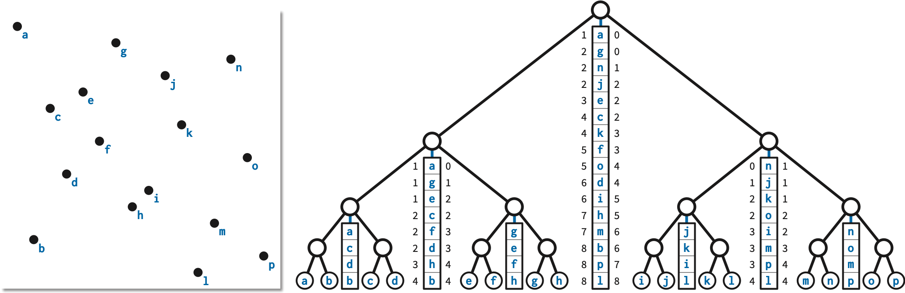
A layered range tree for 15 points (with
some internal structure omitted).
Now consider a query segment \(\sigma\) with endpoints \((l,b)\) and \((r,b)\) with \(l<r\). We call a node \(v\)active for this segment if
\(l_v\le l\) and \(r\le r_v\), but the parent of \(v\) is not active. There are at most two
active nodes at each level of the tree, so there are \(O(\log k)\) active nodes altogether. We can
easily find these active nodes in \(O(\log
h)\) time by searching down from the root.
For any node \(v\), let \(\textsf{lowest}(v,b)\) denote the index of
the lowest point in \(\bar{O}_v\) that
lies above the line \(y=b\), or \(0\) if there is no such point. We can
compute \(\textsf{lowest}(\textsf{root}(T),b)\) in
\(O(\log h)\) time by binary search;
for any other node \(v\), we can
compute \(\textsf{lowest}(v,b)\) in
\(O(1)\) time from \(\textsf{lowest}(\textsf{parent}(v), b)\)
and the left or right ranks stored at \(\textsf{parent}(v)\). Thus, we can compute
\(\textsf{lowest}(v,b)\) for every
active node \(v\) in \(O(\log h)\) time. The answer to our query
is the lowest of these \(O(\log h)\)
points.
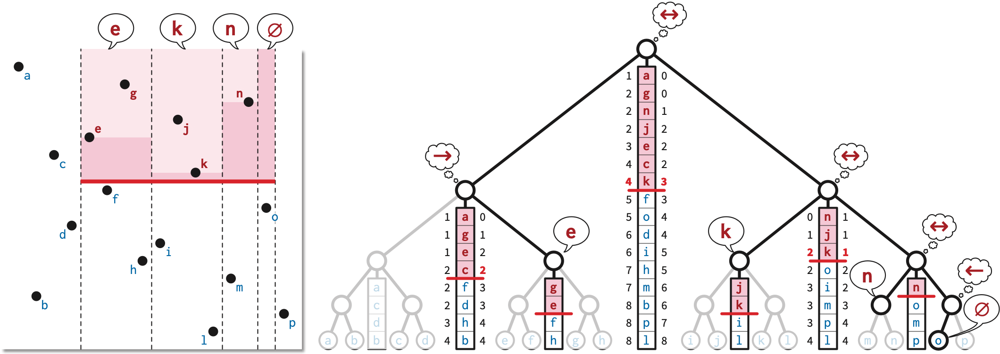
Answering a query in a layered range tree
(with some details omitted.
4.6 Final Analysis
Now let’s put all the ingredients of the algorithm together. Recall
that the original input is a set \(O\)
containing \(k\) sentinel points, and a
polygon \(P\) in \(\mathbb{R}^2\setminus O\).
First we sort the obstacles in \(O\) from left to right in \(O(k\log k)\) time.
Next we compute the trapezoidal decomposition of \(P\) and \(O\) using the Bentley-Ottmann sweepline
algorithm in \(O((n+k+s)\log (n+k))\)
time, where \(s\) is the number of
self-intersection points of \(P\). We
subdivide the edges of \(P\) at its
self-intersection points, increasing the number of vertices of \(P\) to \(m = n +
2s\).
Then we compute the vertical ranks of the obstacles and the edges
of \(P\) in \(O(m+k) = O(n+k+s)\) time. We also compute
the horizontal ranks of the obstacles and the vertices of \(P\) in \(O(m \log
m + k)\) time, by sorting the vertices of \(P\) and merging them with the sorted list
of obstacles.
Next we compute the rectified polygon \(\bar{P}\) and obstacles \(\bar{O}\) in \(O(m + k)\) time.
Then, we reduce \(\bar{P}\) as
much as possible by eliding zero-length edges and sliding brackets.
After an \(O(m)\)-time initial pass,
each elision takes \(O(1)\) time, and
each bracket slide takes \(O(\log k)\)
time. Each operation either freezes a bracket or reduces the complexity
of \(\bar{P}\), so after \(O(m)\) operations, performed in \(O(m\log k)\) time, \(\bar{P}\) is reduced as much as
possible.
Finally, we report that \(P\) is
contractible if and only if the reduced rectified polygon is
empty.
Altogether, this algorithm runs in \(O((n+k+s)\log(n+k))\) time.
This is faster than the brute-force reduction algorithm from the
previous lecture when either the polygon has few
self-intersections or the number of obstacles is significantly
larger than the number of polygon vertices. Specifically, the running
time of the new algorithm is smaller than the old running time \(O(k\log k + nk)\) whenever \(s = o(nk/\log(n+k))\). Even in the worst
case, when \(s = \Theta(n^2)\), the
running time of the new algorithm simplifies to \(O((k+n^2)\log(n+k))\), which is still
smaller than \(O(k\log k + nk)\) when
\(n = o(k/log n)\).
4.7\(\dots\) And the Aptly Named Et Cetera Ad
Nauseam
Extracting reduced crossing sequences from the reduced rectified
polygon.
Testing if a polygon made from two (almost) simple paths is
contractible.
Testing if two polygons, each with few
self-intersections, are homotopic.
Faster three-sided range query structures for integer points and
ranges.
In this lecture, we’ll consider a problem that combines both geometry
and topology that arises in VLSI design (or at least did arise
in VLSI design in the 1980s). Suppose we have an environment \(X\) that can be modeled as a polygon
with holes; this is the area bounded between a simple outer polygon
\(P_0\) and several disjoint simple
polygons or “holes” \(P_1, P_2, \dots,
P_h\), each of which lies in the interior of \(P_0\). (Yes, previously we used “polygon”
to refer to the boundary, and now we’re using “polygon with holes” to
refer to the area. Welcome to mathematical jargon.)
We are also given a polygonal path \(\pi\) in the interior of \(X\). Recall that two paths are
homotopic if one can be continuously deformed to the other within \(X\) while keeping both endpoints fixed at
all times. Our problem is to find the shortest path (that is, the path
of minimum Euclidean length) that is homotopic in \(X\) to the given path \(\pi\).
Although we could reduce to our earlier notion of homotopy by using
the vertices of \(X\) as point
obstacles, the pictures will be nicer (and the algorithms arguably
simpler) if we use \(X\) itself as our
underlying space. Our earlier formal definition of homotopy extends
directly to this setting: A homotopy between two paths \(\alpha\) and \(\beta\) in \(X\) is a continuous function \(h\colon[0,1]\times[0,1]\to X\) such that
the restrictions \(h(\cdot,0)\) and
\(h(\cdot,1)\) are constant functions,
and the restrictions \(h(0,\cdot)\) and
\(h(1, \cdot)\) are the paths \(\alpha\) and \(\beta\), respectively.
Throughout this section, \(n\)
denotes the number of vertices of the environment \(X\), and \(k\) denotes the number of vertices in the
input path \(\pi\). (Yes, this is
reversed from the previous lecture.) Let \(s\) (“source”) and \(t\) (“target”) denote the first and last
vertices of \(\pi\).
5.1 Shortest Paths in Simple
Polygons
Let’s start with the topologically trivial case where \(X\) is the interior of a simple polygon
with no holes. A strengthening of the Jordan Curve Theorem due to
Schönflies implies that \(X\) is
homeomorphic to an open circular disk. It follows that any two paths in
\(X\) with the same endpoints are
homotopic. Thus, we are now looking for the globally shortest path in
\(X\) between the endpoints of \(\pi\).
The shortest path between two points \(s\) and \(t\) in a simple polygon \(P\) is a polygonal chain, whose interior
vertices lie at concave vertices of \(P\). Imagine a taut rubber band between
\(s\) to \(t\); the rubber band will be straight
everywhere, except at concave corners that it must wrap around.
The shortest path between two points in a
simple polygon
I’ll describe an algorithm for this special case as through
the topology of the problem were non-trivial; in particular, even though
the output depends only on the endpoints of the input path \(\pi\), I will still use the entire input
path to guide the algorithm.
5.2 Triangulations and Dual
Graphs
The first step of our shortest-path algorithm is to triangulate the
polygon \(X\). We saw an algorithm in
the first lecture that computes a frugal triangulation of \(X\) in \(O(n\log
n)\) time.
The (weak) dual graph of a polygon triangulation has a
vertex for each triangle and an edge for each diagonal; two vertices are
connected by an edge in the dual graph if and only if the corresponding
triangles share a diagonal. We can draw the dual graph by placing each
vertex at the centroid of its triangle, and drawing each edge as a
polygonal path through the midpoint of the corresponding diagonal.
Lemma:
The dual graph of any frugal triangulation of a polygon without
holes is a tree.
Proof:
Suppose to the contrary that the dual graph contains a cycle \(C\). The image of \(C\) in our drawing is a simple polygon,
which I’ll also call \(C\) (at the risk
of confusing the reader). Any diagonal \(d\) whose dual edge is in \(C\) crosses \(C\) exactly once at the midpoint of \(d\). It follows that one endpoint of \(d\) is inside \(C\) and the other endpoint is outside. So
the Jordan curve theorem implies that the polygon \(X\) intersects \(C\). But that’s impossible, because \(X\) does not intersect the dual graph.
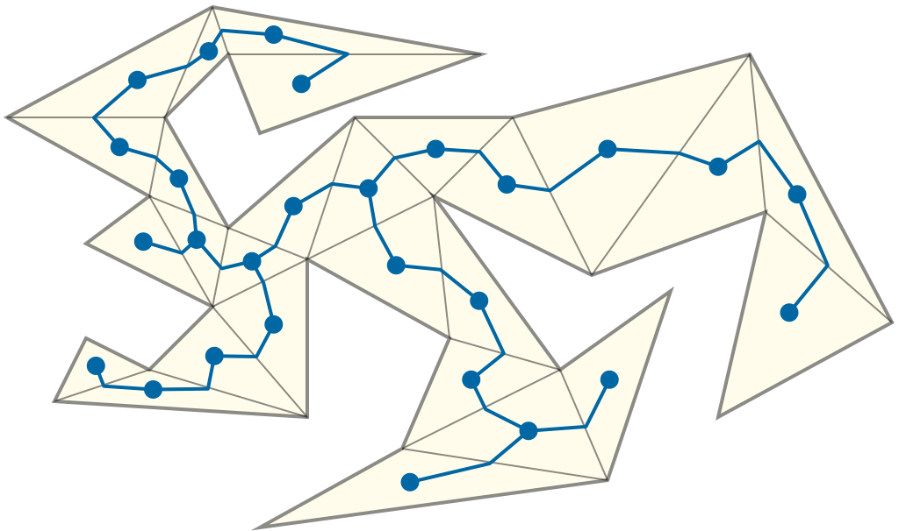
The dual graph of a polygon
triangulation
5.3 Crossing Sequences
Next we apply the same strategy that we previously used to test
contractibility. We compute the crossing sequence of \(\pi\) and then reduce it as much
as possible. (Two paths are homotopic if and only if they have identical
reduced crossing sequences.) In this setting, the crossing sequence is
the sequence of diagonals crossed by \(\pi\), in order along \(\pi\).
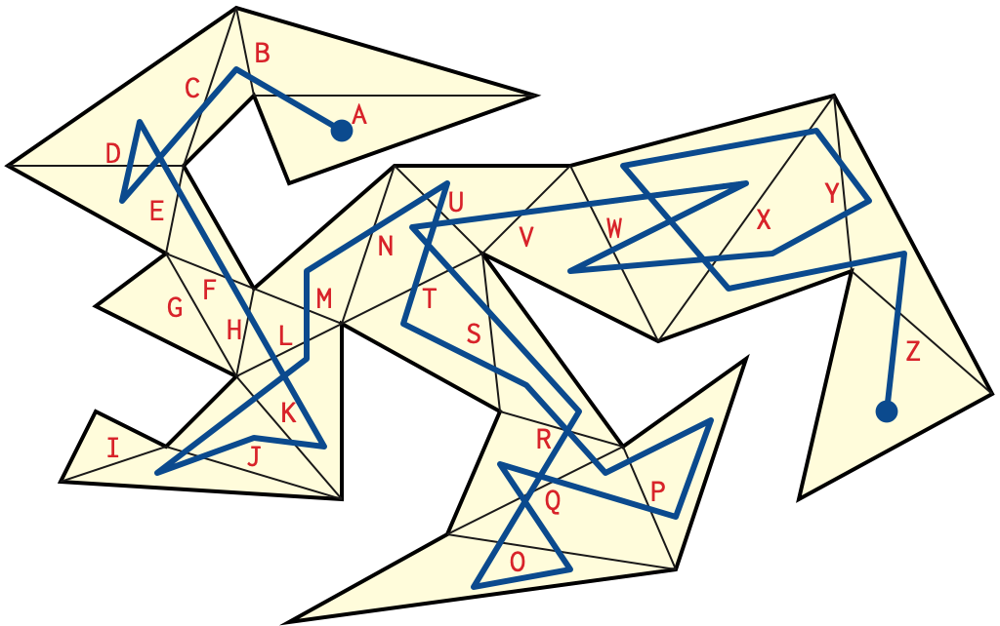
A path with crossing sequence
ABCDDDEFHLKJJKLMNUUTSRQPPQQOOQRSTUVWWWXYYXXYZ
In our earlier homotopy-testing algorithm, we also recorded the
sign of each crossing, but that information is actually
redundant in our current setting. Recall from our proof of the polygon
triangulation theorem that any interior diagonal partitions the interior
of a polygon into two disjoint subsets. Thus, if \(\pi\) crosses the same diagonal multiple
times, those crossings must alternate between positive and negative. It
also follows that we can reduce the crossing sequence by removing
arbitrary adjacent pairs of equal symbols; for any such pair,
the corresponding crossings have opposite signs. For example, the
crossing sequence
ABCDDDEFHLKJJKLMNUUTSRQPPQQOOQRSTUVWWWXYYXXYZ of the path
in the previous figure reduces to ABCDEFHMNUVWXYZ.
We can compute the crossing sequence of \(\pi\) in \(O(n +
k + x)\) time, where \(x =
O(kn)\) is the length of the crossing sequence. Specifically, we
find the triangle containing \(s\) by
brute force; then we can repeatedly find the next crossing (if any)
along the current edge of \(\pi\) in
\(O(1)\) time. Finally, we can reduce
the crossing sequence in \(O(x)\) time
using left-greedy cancellation.
(The reduced crossing sequence of \(\pi\) contains precisely the edge labels
that appear an odd number of times in the unreduced crossing sequence;
moreover, these labels appear in the same order as their first (or last)
occurrences in the unreduced crossing sequence.)
5.4 Sleeves
Let \(\bar{x}\) denote the length of
the reduced crossing sequence. The reduced crossing sequence defines a
sequence of \(\bar{x}+1\) triangles in
the triangulation of \(X\), starting
with the triangle containing the first vertex \(\pi_0\) of \(\pi\), and ending with the triangle
containing the last vertex \(\pi_k\) of
\(\pi\). The union of these triangles
is called the sleeve of the reduced crossing sequence.
The sleeve of the reduced crossing
sequence ABCDEFHMNUVWXYZ
Any path \(\alpha\) in \(X\) from \(s\) to \(t\) that leaves the sleeve must cross a
diagonal \(d\) on the boundary of the
sleeve. The endpoints \(s\) to \(t\) lie in the same component of \(X\setminus d\), so the path must cross
\(d\) and even number of times. Let
\(p\) and \(q\) be the first and last intersection
points along \(\alpha\). The line
segment \(pq\) is shorter than the
subpath of \(\alpha\) from \(p\) to \(q\), so \(\alpha\) cannot be a shortest path.
Alternatively, the crossing sequence describes a walk in the dual
graph of the triangulation, starting at the vertex dual to the triangle
containing \(s\). Reducing the crossing
sequence removes spurs from this walk—subpaths that consist of
the same edge twice in a row, necessarily in opposite directions. Thus,
the reduced crossing sequence describes a shortest
walk—in fact, the unique simple path between its endpoints—in the dual
graph. This path is also the dual graph of the induced triangulation of
the sleeve.
Note that we do not actually need to construct the sleeve;
the sequence of diagonals that the funnel crosses is exactly the reduced
crossing sequence of \(\pi\).
5.5 Growing Funnels
To compute the actual shortest path from \(s\) to \(t\), we use an algorithm independently
discovered by Tompa (1981), Chazelle (1982), Lee and Preparata (1984),
and Leiserson and Maley (1985). (My presentation most closely follows
Lee and Preparata’s.) The funnel of any diagonal \(d\) of the sleeve is the union of the
shortest paths the from the source point \(s\) to all points on \(e\).
The funnel consists of a polygonal path, called the tail,
from \(s\) to a point a called the
apex, plus a simple polygon called the fan. The tail
may be empty, in which case \(s\) is
the apex. The fan is bounded by the diagonal \(d\) and two concave chains joining the apex
to the endpoints of \(d\). The shortest
path from \(s\) to either endpoint of
\(d\) consists of the tail plus one of
the concave chains bounding the fan. Extending the edges of the concave
chains to infinite rays defines a series of wedges, which
subdivide both the fan and the triangle just beyond \(d\).
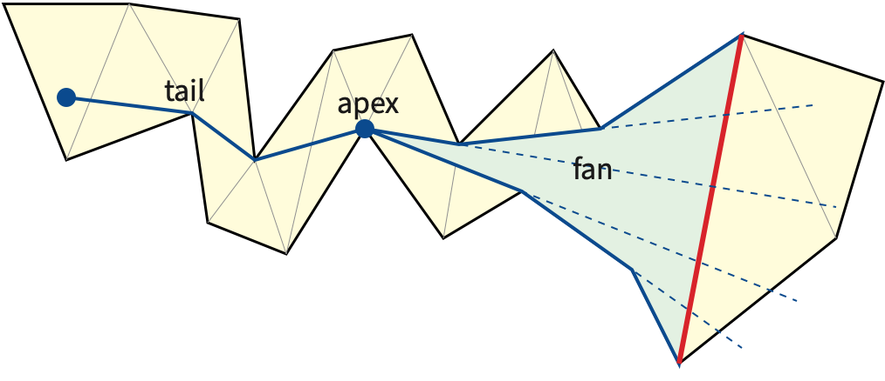
A typical funnel
Beginning with a single triangle joining \(s\) to the first edge in the reduced
crossing sequence, we extend the funnel through the entire sleeve one
diagonal at a time. Each diagonal in the sleeve shares one endpoint with
the previous diagonal; suppose we are extending the funnel from diagonal
\(pq\) to diagonal \(qr\). Let \(o\) be the predecessor of \(p\) on the shortest path from \(s\) to \(p\).
There are two cases to consider, depending on whether \(q\) and \(r\) lie on the same sides of the line
through \(o\) and \(p\) or on opposite sides. We can actually
detect this case in \(O(1)\) time with
a single orientation test.
If \(q\) and \(r\) lie on opposite sides of line \(op\), then the new endpoint \(r\) does not lie inside any wedge of the
current fan. We can detect this case in \(O(1)\) time with a single orientation test,
and then extend the tunnel in \(O(1)\)
time by inserting \(r\) as a new fan
vertex.
Growing the funnel
If \(q\) and \(r\) lie on the same side of line \(op\), we contract the funnel,
intuitively by moving \(p\)
continuously along the boundary edge \(pr\). Each time the moving point crosses
the boundary of a wedge, we remove a vertex from the fan. If the removed
vertex is the apex, the next vertex on that side of the fan (on the
shortest path from \(s\) to \(r\)) becomes the new apex. We can detect
whether the moving point will cross any wedge boundary in \(O(1)\) time using our standard orientation
test. Thus, the total time in this case is \(O(\delta + 1)\), where \(\delta\) is the number of vertices deleted
from the fan. The total number of deleted vertices cannot exceed the
total number of previously inserted vertices, so the amortized
time for this case is also \(O(1)\).
Shrinking the funnel
Let \(yz\) be the last diagonal in
the reduced crossing sequence. To end the algorithm, we treat the line
segment \(tz\) as another diagonal and
extend the funnel one more time. The shortest path homotopic to \(\pi\) then consists of the tail of the
funnel plus the concave chain of the fan containing \(t\); we can extract this shortest path in
\(O(1)\) time per edge.
Summing up, we spend \(O(n\log n)\)
time triangulating \(X\), then \(O(k+x) = O(nk)\) time computing the
crossing sequence of \(\pi\), then
\(O(x) = O(nk)\) time reducing the
crossing sequence, \(O(\bar{x}) =
O(nk)\) time growing the funnel, and finally \(O(\bar{x}) = O(nk)\) extracting the
shortest path from the final funnel.
Theorem:
Given a polygonal path \(\pi\) in a
simple polygon \(X\)without
holes, we can compute the shortest path in \(X\) homotopic to \(\pi\) in \(O(n\log n + nk)\) time.
5.6 Polygons with Holes
Now let’s consider the more general case where \(X\) has one or more holes. Perhaps
surprisingly, the previous algorithm needs no modifications
whatsoever to compute the shortest path homotopic to \(\pi\) in \(O(n\log n + nk)\) time.
Triangulate \(X\) in \(O(n\log n)\) time using the algorithm
described in the first lecture. First build a trapezoidal decomposition
using a sweep-line algorithm (such as Bentley-Ottmann). Then insert
diagonals inside every boring trapezoid in \(O(n)\) time, partitioning \(X\) into monotone mountains. Finally,
triangulate these monotone mountains in \(O(n)\) total time.
Compute the crossing sequence of \(\pi\) with respect to this triangulation in
\(O(n + k + x)\) time, where \(x\) is the number of crossings. Locate the
triangle containing \(s\) in \(O(n)\) time by brute force, then repeatedly
find the next crossing (if any) along the current edge in \(O(1)\) time.
Reduce the resulting crossing sequence in \(O(x)\) time using the left-greedy reduction
algorithm.
Extend the funnel through the sleeve of the reduced crossing
sequence in \(O(\bar{x}) = O(nk)\) time
using the standard funnel algorithm.
Finally, extract the shortest homotopic path from the final
funnel in \(O(1)\) time per
edge.
Theorem:
Given a polygonal path \(\pi\) in a
simple polygon \(X\)with
holes, we can compute the shortest path in \(X\) homotopic to \(\pi\) in \(O(n\log n + nk)\) time.
Same algorithm, same running time, same everything. This strikes many
people as counterintuitive. After all, the sleeve can runs through the
same triangle multiple times, and the funnel can self-intersect; why
doesn’t this cause any problems?
One way to answer this question is that the algorithm doesn’t
look for self-intersections, so it’s behavior can’t be affected by
them. Or said differently: the algorithm only makes local
decisions, but self-intersection is a global property. Every branch
in our algorithm is based on either a comparison between two \(x\)-coordinates or an orientation test on
some triple of points. As far as the algorithm is concerned, every time
the funnel enters a triangle, it is entering that triangle for the very
first time, or equivalently, it is entering a new copy of that
triangle. So the sleeve of the reduced crossing sequence, while not
being geometrically a triangulated simple polygon, is still
topologically a triangulated simple polygon: a collection of
triangles glued together along common edges into a topological disk.
The sleeve of a reduced path in a polygon
with holes
There is a reasonable analogy here with classical graph traversal
algorithms: depth-first search, breadth-first search, and their more
complex descendants. All of these algorithms maintain a set of vertices;
at each iteration, each algorithm pulls one vertex \(v\) out of this set, marks that
vertex, and then puts the unmarked neighbors of \(v\) into the set. Without the marking
logic, unless the input graph is a tree, these algorithms will visit at
least one vertex infinitely many times, each time treating it as a
brand-new vertex.
In fact, even the original shortest-path algorithm does not actually
require the environment \(X\) to be a
simple polygon. We only require that (1) \(X\) is assembled from any set of
Euclidean triangles by identifying disjoint pairs of equal-length edges,
(2) all triangle vertices are on the boundary of \(X\), and (3) the dual graph of the
triangulation is a tree (equivalently, \(X\) is homeomorphic to a disk in the
plane). More generally, the shortest-homotopic-path algorithm applies to
any triangulated space satisfying conditions (1) and (2); these spaces
can reasonably be called boundary-triangulated flat surfaces.
For example, without modification, our algorithm can compute shortest
homotopic paths on a triangulated Möbius band.
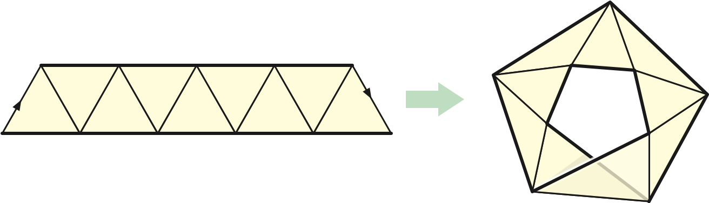
A flat Möbius band assembled from nine
Euclidean triangles
5.7 The Universal Cover
Another explanation that may be more familiar to topologists is that
our algorithm is effectively exploring the universal cover of
the input polygon. Informally, the universal cover (of universal
covering space) of \(X\) is the
infinite topological space constructed by a breadth-first search of
\(X\)without memory.
We can define the universal cover more constructively in terms of a
triangulation of \(X\) as follows. Fix
a starting point \(s\). For every
reduced crossing sequence \(w\) of a
path starting at \(s\), let \(\Delta_w\) denote an independent
copy of the triangle containing the final point in that path. For
example, \(\Delta_\varepsilon\) is a
copy of the triangle containing \(s\).
Two triangles \(\Delta_w\) and \(\Delta_x\) are neighbors if \(x = wd\) for some diagonal \(d\); glue every such pair together along
their copies of \(d\). For example, if
\(w =\)ABCB and \(x =\)ABCBD, then we would
identify the copies of edge D in \(\Delta_w\) and \(\Delta_x\). We call each triangle \(\Delta_w\) a lift of the
corresponding triangle in the triangulation of \(X\), and we call the original triangle a
projection of \(\Delta_w\).
Figure! Polygonal annulus to infinite polygonal parking
garage?
The dual graph of the universal cover of \(X\)—or equivalently, the universal cover of
the dual graph of \(X\)—has a vertex
for every possible reduced crossing sequence (of a path starting at
\(s\)), and an edge between two reduced
crossing sequences if they differ by exactly one crossing. Unless the
input polygon \(X\) has no holes, the
universal cover of the dual graph is an infinite tree. The crossing
sequence describes a walk from some vertex \(\hat{s}\) to another vertex \(\hat{t}\) in this infinite tree; removing
all spurs computes the unique path in that tree between \(\hat{s}\) and \(\hat{t}\).
Figure?
5.8 Covering Spaces
The universal cover is an example of a covering space. We
will see several other examples of covering spaces in this course, so
let me start here with some formal definitions.
A covering map is a continuous surjective function \(p\colon \widehat{X}\to X\), such that every
point \(x\in X\) has an open
neighborhood \(U\) whose preimage \(p^{-1}(U)\) is the disjoint union of open
sets \(\bigsqcup_{i\in I} U_i\), such
that the restriction of the function \(p\) to each open set \(U_i\) is a homeomorphism to \(U\). The open sets \(U_i\) are sometimes called sheets
over \(U\). If there is a covering map
from \(\widehat{X}\) to \(X\), we call \(\widehat{X}\) a covering space of
\(X\). By convention, we require
covering spaces to be connected.
The universal covering space \(\widetilde{X}\) can be defined in several
different ways:
\(\widetilde{X}\) is the unique
covering space of \(X\) that also
covers every covering space of \(X\).
\(\widetilde{X}\) is the unique
simply-connected covering space of \(X\). (Recall that a space is simply
connected if every closed curve in that space is
contractible.)
\(\widetilde{X}\) is the space
of all homotopy classes of paths from some fixed basepoint
\(s\in X\): \[
\widetilde{X} := \big\{ [\pi] \bigm| \pi\colon [0,1]\to X \text{~and~}
\pi(0) = s \big\}
\] The covering map \(p\colon
\widetilde{X}\to X\) maps each homotopy class \([\pi]\) of paths to their common final
endpoint \(\pi(1)\).
In our construction by gluing labeled triangles, the covering map
sends each triangle \(\Delta_w\) to the
corresponding triangle in the triangulation of \(X\).
Shaodi Gao, Mark Jerrum, Michael Kaufmann, Kurt Mehlhorn, and
Wolfgang Rülling. On
continuous homotopic one layer routing. Proc. 4th Ann. Symp.
Comput. Geom., 15 392–402, 1988.
Recall that a closed curve in the plane is any continuous
function from the circle to the plane. Previously we considered a common
representation of closed curves as polygons: circular sequences
of line segments joined at common endpoints. Polygons are convenient for
reasoning about intersections with other simple geometric structures
like vertical rays, trapezoidal decompositions, and triangulations, but
in other ways the geometry of the representation is irrelevant. Starting
with this lecture, I’ll consider a more abstract representation that
records only how the curve intersects itself.
A self-intersection \(\gamma(t) =
\gamma(t')\) of a closed curve \(\gamma\) is transverse if, for all
sufficiently small \(\varepsilon >
0\) the subpaths \(\gamma(t-\varepsilon, t+\varepsilon)\) and
\(\gamma(t'-\varepsilon,
t'+\varepsilon)\) are homeomorphic to two orthogonal lines. A
closed curve is generic if every self-intersection is
transverse (in particular, there are no self-tangencies or repeated
curve segments) and there are no triple self-intersections
\(\gamma(t) = \gamma(t') =
\gamma(t'')\).
A generic closed curve with eleven
crossings
Two generic curves are isotopic if one can be continuously
deformed to the other without ever changing the number of
self-intersections. For example, all simple closed curves are isotopic
to each other. A homotopy that always preserves the number of
self-intersections is called an isotopy. In fact, two planar
curves \(\gamma\) and \(\gamma’\) are isotopic if and only if there
is an orientation-preserving homeomorphism \(h\colon \mathbb{R}^2 \to \mathbb{R}^2\)
such that \(\gamma’ = h\circ \gamma\).
At least in the next few lectures, we really don’t care about the
geometry of these curves, so we won’t distinguish between
isotopic curves.
6.1 Technicalities
Generic closed curves are sometimes called immersions or
regular curves, but the latter term more commonly refers to
closed curves with continuous non-zero derivatives. In fact, the most
common word used to describe this class of closed curves is “curve”! The
definition of generic curves does not require continuous,
non-zero, or even well-defined derivatives at any point, much
less at every point. Despite this freedom, the following
standard compactness argument implies that generic curves are
well-behaved.
Lemma:Every generic closed curve has a finite
number of self-intersection points.
Proof:
Call a point \(t\in S^1\)singular if \(\gamma(t) =
\gamma(t')\) for some \(t'\ne
t\), and regular otherwise. For each point \(t\in S^1\), we define an open interval
\(U_t\) as follows:
If \(t\) is singular, let \(U_t = (t-\varepsilon, t+\varepsilon)\),
such that \(\gamma(t-\varepsilon,
t+\varepsilon)\) and some other arc \(\gamma(t'-\varepsilon,
t'+\varepsilon)\) are homeomorphic to two orthogonal
lines.
If \(t\) is regular, let \(U_t\) be any open interval that contains
\(t\) but no singular points.
The open sets \(\mathcal{C} = \{ U_t \mid
t\in S^1 \}\) clearly cover the circle, meaning \(\bigcup_{t\in S^1} U_t = S^1\). Because
\(S^1\) is compact, there must be a
finite subset \(\mathcal{F} \subset
\mathcal{C}\) that also covers \(S^1\). Let \(F
\subset S^1\) be the (necessarily finite) index set of the finite
subcover \(\mathcal{F}\), meaning \(\mathcal{F} = \{ U_t \mid t\in F \}\).
The only set in \(\mathcal{U}\) that
contains a singular point \(t\) is its
own interval \(U_t\). Thus, the finite
set \(T\) must contain every singular
point.
The adjective “generic” is justified by the observation that
every closed curve can be approximated arbitrarily closely by a
generic closed curve. Previously we argued that every closed curve can
be approximated arbitrarily closely by a polygon. (This is the
simplicial approximation theorem.) An arbitrarily small
perturbation of any polygon ensures that all vertices are distinct, no
vertex lies in the interior of an edge, and no three edges share a
common point. Any polygon satisfying these conditions is a
generic closed curve.
A more careful application of simplicial approximation and
compactness implies that any generic closed curve \(\gamma\) can be approximated arbitrarily
closely by a polygon that is isotopic to \(\gamma\). Thus, even though generic curves
are not polygons by definition, they are polygons without
loss of generality. In fact, results in future lectures imply that
each generic curve with \(n\)
self-intersection points is isotopic to a polygon with only \(O(n)\) vertices.
6.2 Image graphs
Any non-simple generic closed curve can be naturally represented by
its image graph, which is a connected 4-regular plane graph7 whose vertices are the
self-intersection points of the curve, and whose edges are curve
segments between vertices. Image graphs are not necessary
simple; they can contain loops and parallel edges. The image
graph of a simple closed curve is obviously a simple cycle.
The image graph of the curve in Figure
1
However, not every 4-regular plane graph is the image graph of a
generic closed curve. Any generic curve is a particular Euler tour of
its image graph. Recall that an Euler tour of a graph \(G\) is any closed walk that traverses each
edge of \(G\) exactly once. A closed
walk is Gaussian if, whenever the walk visits a vertex \(v\), it enters and exits \(v\) along opposing edges. A
4-regular graph is unicursal if it contains a Gaussian Euler
tour; every unicursal 4-regular plane graph is the image of a
non-simple generic curve.
Any generic planar curve partitions the plane into regions called the
faces of the curve. The Jordan-Schönflies theorem implies that
every planar curve has one unbounded face that is homeomorphic to the
complement of a closed disk, and every other face is homeomorphic to an
open disk. The faces of a curve are also the faces of its image graph. A
face is called a monogon if it has only one edge on its
boundary, a bigon if it has two boundary edges, and a
triangle if it has three boundary edges.8
More generally, a multicurve is a continuous map of the
disjoint union of circles into the plane; a multicurve is
generic if it has only transverse pairwise self-intersections.
The restriction of a multicurve to one of its circles is a generic
closed curve called a constituent of the multicurve. Every
4-regular plane graph \(G\) is the
image graph of a generic multicurve, whose constituents are the Gaussian
walks in \(G\). Most of the results
I’ll discuss in this set of lectures extend easily to multicurves, but
for ease of exposition I’ll discuss only curves explicitly.
6.3 Gauss codes and Gauss
diagrams
In the mid-1800s, Gauss developed a symbolic representation of closed
curves similar to the crossing sequences that we previously used for
homotopy testing.
Assign a unique label to each vertex of the image graph of the curve.
The Gauss code of a curve is the sequence of labels encountered
by a point moving once around the curve, starting at an arbitrary
basepoint and moving in an arbitrary direction. In other words,
a Gauss code is a self-crossing sequence. Different choices of
basepoint and direction lead to different Gauss codes. Specifically,
changing the basepoint cyclically shifts the Gauss code, and changing
direction reverses the Gauss code.
A signed Gauss code also records how the curve
crosses itself at each vertex. Imagine a point moving along the curve in
the chosen direction, starting at the chosen basepoint. The signed Gauss
code records a positive crossing whenever the point crosses the
curve from right to left, and a negative crossing whenever the
point crosses the curve from left to right. (This is exactly the same
sign convention that we used to compute winding number, from the
point of view of the polygon.) Each vertex of the image graph of a
curve appears twice in the curve’s signed Gauss code, once with each
sign. I’ll typically indicate positive and negative crossings using
upper- and lower-case letters, respectively. Again, different choices of
basepoint and direction lead to different signed Gauss codes.
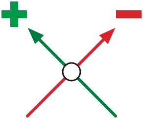
Gauss’s sign convention for positive and
negative crossings.
Figure 4 shows the curve from Figure 1, with a direction indicated by
arrows and a basepoint on the far left indicated by a white arrowhead.
Each vertex is labeled positive or negative according to the sign of the
first crossing through that vertex. The resulting signed Gauss
code is ABcdeFGChaIgDjKHbifEJK; by forgetting the signs, we
recover the unsigned Gauss code ABCDEFGCHAIGDJKHBIFEJK.
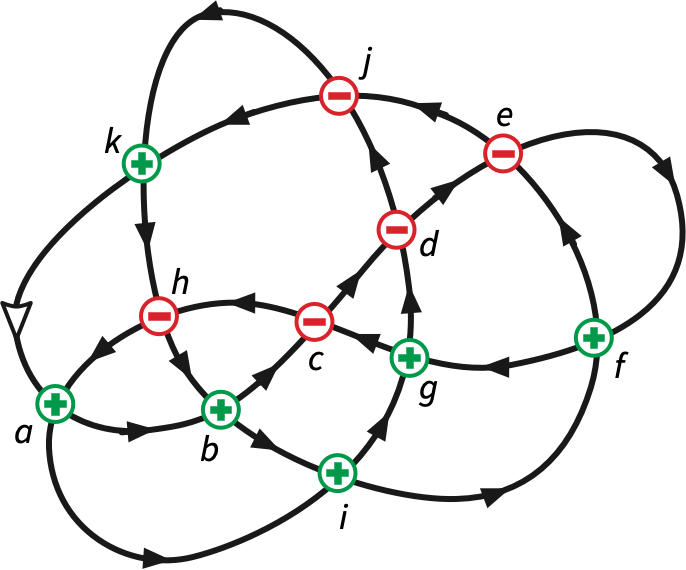
A based directed curve with signed Gauss
code ABcdeFGChaIgDjKHbifEJK.
Gauss diagrams are an equivalent graphical representation of
Gauss codes. A Gauss diagram for a curve with \(n\) self-intersections consists of an
undirected cycle of \(2n\) nodes
labeled by crossings, in the order they appear along the curve, along
with edges joining the two appearances of each crossing point, directed
from the negative crossing to the positive crossing. (Using directed
edges here is slightly non-standard.)
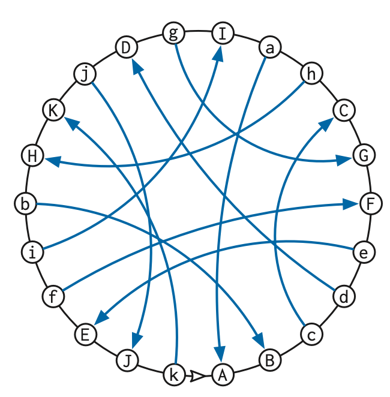
A Gauss diagram for the signed Gauss code
ABcdeFGChaIgDjKHbifEJK.
6.4 Tracing Faces
Perhaps surprisingly, we can completely recover the combinatorial
structure of a curve from its signed Gauss code. I’ll justify this claim
in more generality later, when we’ve built up more background on planar
graphs, but we can already show one example, observed by Carter in the
early 1990s [2]: The signed Gauss code implicitly encodes the
faces of the curve.
Imagine a point moving counterclockwise around the boundary of some
face (or clockwise if the face is unbounded); the face always lies just
to the left of the moving point. Between vertices, the point is either
moving forward or backward along some edge of the image graph. At each
crossing, the point turns to the left, as follows:
After entering a positive crossing forward, leave the corresponding
negative crossing backward.
After entering a negative crossing forward, leave the corresponding
positive crossing forward.
After entering a positive crossing backward, leave the corresponding
negative crossing forward.
After entering a negative crossing backward, leave the corresponding
positive crossing backward.
Similar case analysis allows us to trace a face to the right of a
moving point, in clockwise order around the face, by turning right at
every vertex.
Turning left or turning right at a
vertex.
(Pseudo)python (pseudo)code for Cater’s face-tracing algorithm is
shown below. The first function computes the matching between different
occurrences of the same crossing point; obviously this matching only
needs to be extracted once if we want to trace several faces. With
careful bookkeeping, we can extract all the faces of the curve
directly from the signed Gauss code in \(O(n)\) time. Different Gauss codes for the
same curve yield the same set of faces (but possibly with the vertices
of each face rotated and/or reflected).
# extract matching between crossings from a signed Gauss code
# input: code = signed Gauss code
# = permutation of list(range(-n,0)) + list(range(1,n+1))
# output: array match, defined by code[match[i]] = -code[i]
def indexCode(code):
N = len(code)/2
posindex = [0] * (N/2)
match = [0} * N
for i in range(N):
if code[i] > 0:
posindex[code[i] - 1] = i
for i in range(N):
if code[i] < 0:
match[i] = posindex[1 - code[i]]
match[match[i]] = i
return match
# trace the face to the right of a moving point
# code = signed Gauss code (integers)
# start = index of starting edge (basepoint edge = 0)
# forward = boolean indicating starting direction
def traceFace(code, starti, forward):
match = matchCode(code)
N = len(code)
i = starti
while True:
next = forward ? i : (i + N - 1)%N
print(code[next])
if code[next] > 0:
forward = !forward
i = match[next]
if i = starti:
break
The clockwise tracing process can be visualized on the Gauss diagram
as follows. We start by tracing just inside an arc of the outer circle.
Whenever we reach a crossing, we follow the interior edge across the
diagram to its partner. If the crossing is positive, we stay on the same
side of the interior edge; if the crossing is negative, we switch to the
opposite side of the interior edge. Again, we can visualize
counterclockwise tracing by a symmetric case analysis.
Tracing the outer face of our example
curve (to the right of the basepoint)
6.5 Homotopy moves
Every closed curve in the plane is homotopic to a point, and
therefore to every other closed curve in the plane. However, it is still
useful to study the structure of homotopies between generic
curves. Recall that the simplicial approximation theorem let us
approximate any homotopy between polygons as a finite sequence
of vertex moves. If we make sufficiently small vertex moves
that preserve genericity, each move incurs only a small local change in
the pattern of self-intersections.
Careful case analysis implies that every homotopy between generic
curves can be approximated by a finite sequence of homotopy
moves of five different types. Each homotopy move modifies the
curve only within a small neighborhood containing at most three
vertices, leaving the rest of the curve unchanged outside this
neighborhood.
\(1\mathord\to 0\): remove a
monogon
\(0\mathord\to 1\): create a
monogon
\(2\mathord\to 0\): remove a bigon
by separating two subpaths.
\(0\mathord\to 2\): create a bigon
by overlapping two subpaths.
\(3\mathord\to 3\): flip a triangle
by moving one subpath over the opposite crossing.
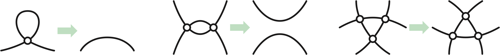
\(1\mathord\to
0\), \(2\mathord\to 0\), and
\(3\mathord\to 3\) homotopy
moves
In particular, we have the following:
Theorem:
Every generic closed curve in the plane can be transformed into a
simple closed curve by a finite sequence of homotopy moves.
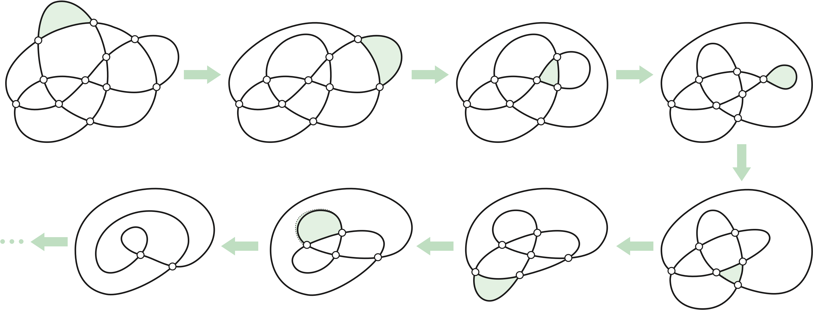
A sequence of homotopy moves simplifying
the curve in Figure 1
The proof of this theorem (via simplicial approximation) follows from
the foundational work of Alexander and Briggs [1] and Reidemeister [2]
on knot diagrams.9 This proof is fundamentally
non-constructive; the number of homotopy moves we need depends on the
geometric structure of the “given” homotopy. In a future lecture, we
will see an algorithm, implicit in the work of Steinitz [3,4] a
decade before Alexander, Briggs, or Reidemeister, that contracts any
closed curve with \(n\) vertices using
at most \(O(n^2)\) homotopy moves.
Each homotopy move can be implemented by locally modifying the Gauss
code/diagram, or the equivalent data structures, as follows.
\(1\mathord\to 0\): remove a
consecutive pair of crossings of the same vertex, for example:
···Aa···
\(2\mathord\to 0\): remove two
consecutive pairs, each with opposing signs, that cover two vertices,
for eaxmple: ···Ab···Ba··· or
···aB···Ab···
\(3\mathord\to 3\): reverse three
consecutive pairs that cover exactly three vertices, for example:
···AB···bc···aC···\(\mapsto\)···BA···cb···Ca···.
6.6 Planarity testing
Every signed Gauss code is a signed double-permutation: A
string of even length, in which each symbol appears exactly twice, once
positive and once negative. However, not every signed double-permutation
is the signed Gauss code of a planar curve. For example, no planar curve
has the signed Gauss code ABab. (This is in fact the signed
Gauss code of a closed curve on the torus!) However, signed
Gauss codes of planar curves have a very simple characterization.
Lemma:
Every generic closed curve in the plane with \(n\) vertices has exactly \(n+2\) faces.
Proof (via homotopy):
Consider two generic closed curves \(\gamma\) and \(\gamma'\) that differ by one homotopy
move. Suppose \(\gamma\) has \(n\) vertices and \(f\) faces, and \(\gamma'\) has \(n'\) vertices and \(f'\) faces.
If the move has type \(1\mathord\to
0\), then \(n' = n-1\) and
\(f' = f-1\).
If the move has type \(0\mathord\to
1\), then \(n' = n+1\) and
\(f' = f+1\).
If the move has type \(2\mathord\to
0\), then \(n' = n-2\) and
\(f' = f-2\).
If the move has type \(0\mathord\to
2\), then \(n' = n+2\) and
\(f' = f+2\).
If the move has type \(3\mathord\to
3\), then \(n' = n\) and
\(f' = f\).
In all five cases, we have \(f-n =
f'-n'\).
It follows by induction that if \(\gamma'\) is any curve reachable from
\(\gamma\) by a finite sequence of
homotopy moves, then \(f-n =
f'-n'\). In particular, if \(\gamma'\) is simple, then \(n'=0\) and (by the Jordan curve
theorem!) \(f'=2\), and therefore
\(f-n = 2\).
Proof (sketch, via smoothing):
[[Define smoothing!]] Consider two generic
closed curves \(\gamma\) and \(\gamma’\) where \(\gamma’\) is the result of smoothing one
vertex of \(\gamma\). If \(\gamma\) has \(n\) vertices and \(f\) faces, then \(\gamma'\) has \(n-1\) vertices and \(f-1\) faces. Every simple curve has \(0\) vertices and \(2\) faces. The lemma follows immediately by
induction on the number of vertices.
In fact, the converse of this lemma is also true, although we don’t
yet have the tools to prove it:
Theorem:
A signed double-permutation is the signed Gauss code of a planar
curve if and only if it has two more faces than vertices.
If you have played with played with planar graphs before, you might
recognize this theorem as an avatar of Euler’s formula\(V-E+F = 2\). Because every vertex in the
image graph of any non-simple curve has degree \(4\), the number of edges is exactly twice
the number of vertices.
6.7\(\dots\)and the Aptly Named Yadda Yadda
Knots and knot diagrams
Carter surfaces of non-planar Gauss codes
6.8 References
James W. Alexander and Garland B. Briggs. On types of knotted curves.
Ann. Math. 28(1/4):562–586, 1926–1927. Reidemeister moves,
with pictures.
J. Scott Carter. Classifying
immersed curves. Proc. Amer. Math. Soc. 111(1):281–287, 1991.
The face-tracing algorithm to reconstruct curves from signed Gauss
codes.
Kurt Reidemeister. Elementare Begründung der Knotentheorie.
Abh. Math. Sem. Hamburg 5:24–32, 1927. Reidemeister moves,
without pictures.
Ernst Steinitz. Polyeder
und Raumeinteilungen.Enzyklopädie der mathematischen
Wissenschaften mit Einschluss ihrer Anwendungen III.AB(12):1–139,
1916. Proof of “Steinitz’s theorem” — Every 3-connected planar graph
is the 1-skeleton of a convex polyhedron — using \(3\mathord\to 3\) homotopy moves in the
medial graph. I promise those words will eventually make
sense.
Ernst Steinitz and Hans Rademacher. Vorlesungen über die
Theorie der Polyeder: unter Einschluß der Elemente der Topologie.
Grundlehren der mathematischen Wissenschaften 41. Springer-Verlag, 1934.
Reprinted 1976. More detailed proof of “Steinitz’s theorem”, with
pictures.
6.9 Possible reorganization
Consider shuffling the topics in lectures 6–8:
Generic curves intro
image graphs
oriented and connected smoothing
winding numbers
signed crossings
rotation numbers: smiles and frowns, writhe (via smoothing)
Gauss codes
motivation for studying these things!
signed: Gauss diagrams, face tracing, Euler’s formula (via
smoothing)
In the last lecture, we saw a simple algorithm to test whether a
signed Gauss code is consistent with a generic curve in the plane: Count
the faces (by symbol-chasing) and return true if and only if the number
of faces is exactly two more than the number of crossings.
In his unpublished notes, written around 1840, Gauss was asked how to
determine whether an unsigned Gauss code is consistent with a
planar curve [3]. The same question was published about 40 years later
by Tait [8]. I regard this as the first problem in computational
topology. (Euler’s famous Bridges of Königsberg is the zeroth
problem in computational topology.) B oht Gauss and Tait described a
partial solution to his problem. The first complete solution
was proposed by Julius Nagy almost a century later [4].10
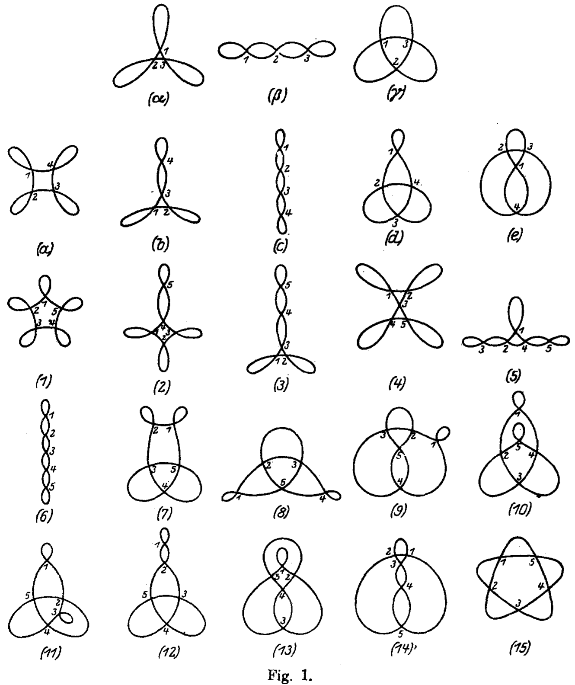
Nagy’s 1927 census of unsigned Gauss
codes of lengths 6 through 10
In this lecture, I’ll describe an \(O(n^2)\)-time algorithm originally
described by Max Dehn in 1936 [1], with some simplifications suggested
by Nagy’s solution and more modern graph algorithms, as suggested by
Read and Rosenstiehl [11], Rosenstiehl and Tarjan [12], and de Fraysseix
and Ossona de Mendez [3].11 My presentation of
Dehn’s algorithm also closely follows Kaufmann. [[Fix
reference numbers]]
7.1 Winding numbers again
Recall that the winding number of a polygon \(P\) around a point \(o\) can be computed by shooting a vertical
ray from \(o\) and counting positive
and negative crossings with the polygon. The same characterization
extends to generic curves, but it’s a little unsatisfying, for a couple
of reasons. First, we only care about curves up to isotopy, but
the ray-shooting algorithm requires choosing a specific (arbitrary)
curve in the isotopy class. We can soften this objection somewhat by
observing that we don’t really need to count crossings with a
ray; any path from \(o\) to
infinity that crosses the curve a finite number of times will work.
But there’s a more serious objection. Our representation of closed
curves (signed Gauss codes) doesn’t include any geometric information.
But how do we represent the point? We can’t give coordinates,
because different curves with the same representation have different
winding numbers around any fixed point!
Instead, we specify the obstacle point \(o\) by declaring which face of the
curve contains it. More cleanly, we define the winding number of a curve
\(\gamma\) around each of its
faces using an Alexander numbering, we defined in
Lecture 2 for polygons. For any directed edge \(e\) of the image graph, let \(\textsf{left}(e)\) and \(\textsf{right}(e)\) denote the faces
immediately to the left and right of \(e\) (relative to the orientation of \(e\)).
If \(f\) is the outer face, then
\(\textsf{wind}(\gamma, f) = 0\).
For every directed edge \(e\), we
have \(\textsf{wind}(\textsf{left}(e)) =
\textsf{wind}(\textsf{right}(e)) + 1\)
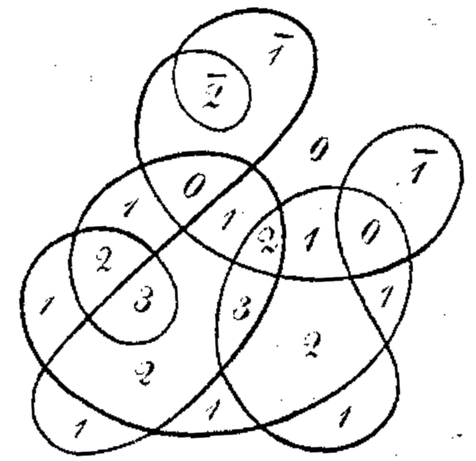
The Alexander numbering of a curve; bars
indicate negation (Listing 1847)
7.2 Smoothing
Gauss observed that we can also define winding numbers by
smoothing the curve at each vertex. Smoothing replaces a
neighborhood of a single vertex with a pair of disjoint curve segments.
In fact there are two different smoothing operations, depending on how
the disjoint curve segments are attached. One smoothing operation
disconnects the curve (or connects two constituents of a multicurve) but
preserves the direction of both subcurves. The other keeps the curve
connected, but requires the direction of part of the curve to be
reversed.
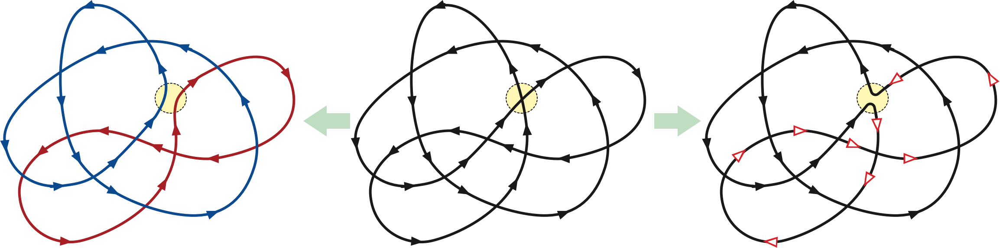
Smoothing a curve at a vertex. Left:
preserving direction. Right: preserving connection.
Gauss observed that by smoothing every vertex of a curve to
preserve direction, we can decompose the curve into a finite set of
disjoint simple curves. This collection of simple curves is
called the Seifert decomposition of the curve. Each of these
simple curves has winding number \(+1\)
or \(-1\) around its interior,
depending whether the curve is oriented counterclockwise or
clockwise.
The winding number of a curve \(\gamma\) around any point \(o\) (far from the vertices) is equal to the
sum of the winding numbers of the curves in the Seifert decomposition of
\(\gamma\) around \(o\). Equivalently, \(\textsf{wind}(\gamma, 0)\) is equal to the
number of counterclockwise cycles that contain \(o\) minus the number of clockwise cycles
that contain \(o\).
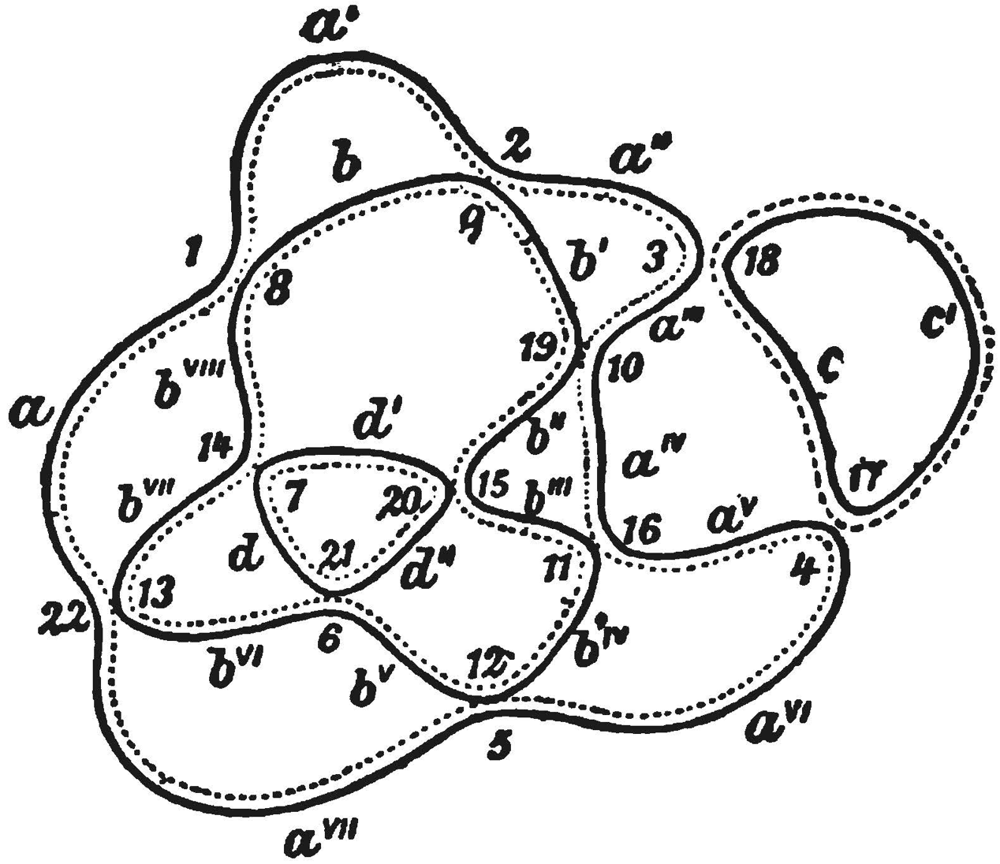
Gauss’s example of a Seifert
decomposition
7.3 Gauss’s parity condition
Gauss observed without proof that the unsigned Gauss code of every
planar curve satisfies a simple parity condition: Every substring that
starts and ends with the same symbol has even length, or equivalently,
each symbol appears once at an even index and once at an odd index. This
parity condition was first proved necessary by Nagy. The following
simpler combinatorial proof is due to Rademacher and Toeplitz.
Lemma:
Every pair of generic closed curves that intersect only transversely
intersect at an even number of points.
Proof:
Let \(\alpha\) and \(\beta\) be a transverse pair of generic
closed curves, directed arbitrarily. Imagine a point moving around \(\alpha\). Each time this point crosses
\(\beta\), the winding number of \(\beta\) around that point changes by \(1\), and therefore changes from even to odd
or vice versa. The moving point starts and ends in the same face of
\(\beta\), so its winding number change
parity an even number of times.
Now let \(X\) be a string of length
2n, in which each of the \(n\) unique
symbols appears twice.
Lemma:
If \(X\) is the Gauss code of a
planar curve, then every substring of \(X\) that starts and ends with the same
symbol has even length.
Proof:
Let \(\gamma\) be a planar closed
curve. Smoothing \(\gamma\) at any
vertex produces two subcurves \(\alpha\) and \(\beta\). Up to a cyclic shift (reflecting a
change of basepoint), the Gauss code for \(\gamma\) can be written as \(axay\), where \(a\) is the label of the vertex, substring
\(x\) encodes the crossings along \(\alpha\), and string \(y\) encodes the crossings along \(\beta\). Each self-intersection point of
\(\alpha\) is encoded in \(x\) twice, and the other symbols of \(x\) encode the intersections between \(\alpha\) and \(\beta\) We conclude that \(x\) has even length, which completes the
proof.
We can test this parity condition in \(O(n^2)\) time by brute force, but in fact,
there is a simple linear-time algorithm. Given the Gauss code \(X\), we can define a directed graph \(G(X)\), which I’ll call the Nagy
graph of \(X\), as follows:
The vertices of \(G(X)\) correspond
to the \(n\) distinct symbols in \(X\).
The edges of \(G(x)\) correspond to
(cyclic) substrings of \(X\) with
length \(2\), alternately directed
forward and backward. That is, the Nagy graph contains a forward edge
\(x_i\to x_{i+1}\) for every even index
\(i\) and a backward edge and \(x_{i+1}\to x_i\) for every odd index \(i\). For example, the Nagy graph of the
string abcdefgchaigdjkhbifejk contains the following edges:
\[
a\mathord\rightarrow b\mathord\leftarrow
c\mathord\rightarrow d\mathord\leftarrow
e\mathord\rightarrow f\mathord\leftarrow
g\mathord\rightarrow c\mathord\leftarrow
h\mathord\rightarrow a\mathord\leftarrow
i\mathord\rightarrow g\mathord\leftarrow
d\mathord\rightarrow j\mathord\leftarrow
k\mathord\rightarrow h\mathord\leftarrow
b\mathord\rightarrow i\mathord\leftarrow
f\mathord\rightarrow e\mathord\leftarrow
j\mathord\rightarrow k\mathord\leftarrow a
\]
Let me emphasize (despite the figure below) that the Nagy graph of a
string is an abstract graph, which may or may not be
planar.
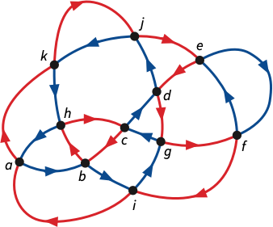
The Nagy graph of Gauss code
abcdefgchaigdjkhbifejk; compare with Figure 6.
Now imagine a point moving around the Nagy graph \(G(X)\), alternately traversing edges
forward and backward in the order they appear in \(X\). Whenever the point passes through a
vertex of \(G(X)\), it either traverses
two inward edges \(u\mathord\rightarrow
v\mathord\leftarrow w\) (one forward and one backward) or two
outward edges \(u\mathord\leftarrow
v\mathord\rightarrow w\) (one backward and one forward). The
parity condition implies that if we leave any vertex \(v\) along a forward edge \(v\mathord\to w\), we will next enter \(v\) along a backward edge \(x\mathord\leftarrow v\) and v vice versa.
In fact, these two conditions are equivalent.
Lemma:
A Gauss code \(X\) satisfies the
parity condition if and only if every vertex of its Nagy graph \(G(X)\) has in-degree 2 and out-degree \(2\).
If a Gauss code does not satisfy the parity condition, then
its Nagy graph will contain at least one vertex with in-degree 0 and
out-degree 4, and an equal number of vertices with in-degree \(4\) and out-degree \(0\).
We can easily construct the Nagy graph and check the degree of each
vertex in \(O(n)\) time, where \(X\) is the length of the given Gauss code.
(There are simpler algorithms to check the parity condition in \(O(n)\) time, but we’ll need the Nagy graph
later, so we might as well build it now.)
Gauss also observed that the sequences abcadcedbe and
abcabdecde satisfy his parity condition but cannot be
realized by planar curves, so the parity condition is not sufficient.
Tait later gave a third example abcadebdec.
7.4 Dehn’s non-crossing
condition
About 100 years after Gauss, Dehn [1] described das Gaussische
Problem der Trakte and proposed an algorithm to solve it. Dehn
observed that smoothing every vertex of a curve to keep the curve
connected results in a simple closed curve that touches
itself at every vertex. The same closed curve \(\gamma\) can have several different
connected smoothings.
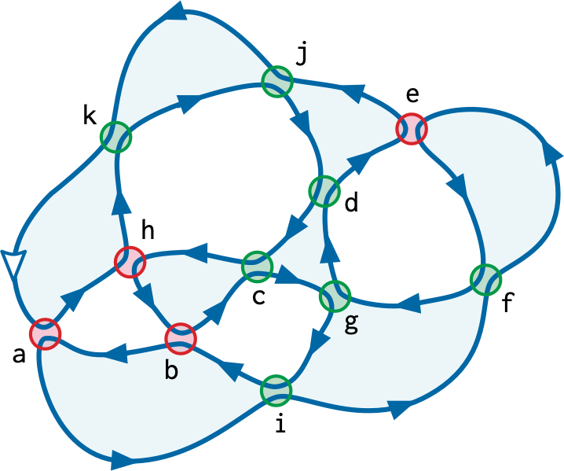
A smoothed curve with Dehn code
ahkjdchbcgibaifefgdejk
Lemma:
Every connected smoothing of a planar curve \(\gamma\) is an Euler tour of the Nagy graph
\(G(X(\gamma))\), and vice versa.
Proof:
Consider two consecutive edges \(u\mathord\to
v\mathord\to w\) of \(\gamma\)
(not edges of \(G(X(\gamma))\)). Imagine smoothing the
vertices of \(\gamma\) one at a time.
Each smoothing reverses one of the subcurves from the smoothed vertex to
itself. The edges \(uv\) and \(vw\) are reversed by all these same
smoothing except at their common vertex \(x\). Thus, exactly one of the two subpaths
\(u\mathord\to v\) or \(v\mathord\to w\) is revised in the final
Dehn smoothing. It follows that every Dehn smoothing of \(\gamma\) is an Euler tour of \(G(X(\gamma))\).
On the other hand, the edges incident to any vertex of \(G(X(\gamma))\) alternative in, out, in, out
in cyclic order. Thus, every Euler tour of \(G(X(\gamma))\) touches itself at every
vertex, but never crosses itself. It follows that every Euler tour of
\(G(X(\gamma))\) is a connected
smoothing of \(\gamma\).
Lemma:
A Gauss code \(X\) is realized by a
planar curve if and only if its Nagy graph \(G(X)\) has a planar embedding in which at
least one (and therefore every) Euler tour is weakly simple.
Proof:
An Euler tour of a planar graph can cross itself only at vertices. If
\(X\) is the Gauss code of a planar
curve \(\gamma\), the edges incident to
any vertex of \(G(X)\), embedded on top
of \(\gamma\) in the obvious way,
alternate in-out-in-out in cyclic order, which makes a crossing at that
vertex impossible.
On the other hand, suppose \(G(X)\)
has a planar embedding with a weakly simple Euler tour. Then the edges
incident to each vertex in that embedding must alternate in-out-in-out
in cyclic order. The original Gauss code \(X\) defines an undirected Euler
tour \(U\) of \(G(X)\), which traverses edges of \(G(X)\) alternately forward and backward.
\(U\) crosses itself at every vertex of
\(G(X)\). It follows immediately that
\(U\) is a closed curve with Gauss code
\(X\).
7.5 Tree-onion figures
Dehn described a symbolic algorithm to test his non-crossing
condition in terms of the sequence of self-touching points in
order along the smoothed curve \(\tilde\gamma\). Just like Gauss codes, this
sequence contains exactly two occurrences of every symbol. To
distinguish this sequence from the Gauss code of a curve, I’ll refer to
this new string as a Dehn code. We can similarly define the
Dehn diagram of \(\tilde\gamma\) as a cycle of \(2n\) vertices, corresponding to the labels
in the Dehn code, plus chords connecting identical labels.12
Dehn observed that the Dehn diagram of any connected smoothing \(\tilde\gamma\) of any planar curve \(\gamma\) is a planar graph; that
is, we can embed some of the chords of the diagram inside the circle and
the rest outside the circle, so that no pair of chords intersects.
Specifically, if we perturb \(\tilde\gamma\) slightly into a simple
curve, the neighborhood of each vertex either has connected intersection
with the interior of \(\tilde\gamma\)
or connected intersection with the exterior of \(\tilde\gamma\). These vertices correspond
to inner and outer chords, respectively.
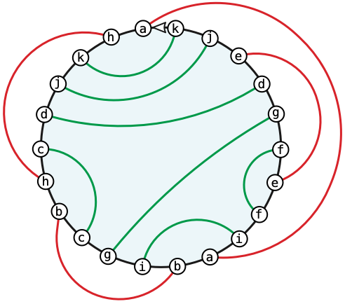
A planar Dehn diagram for the Dehn code
ahkjdchbcgibaifefgdejk; compare with the previous
figure!
Dehn playfully referred to these planar diagrams as “Baum-Zwiebel
Figuren” [“tree-onion diagrams”] and their corresponding Gauss codes as
“Baum-Zwiebel Reihen” [“tree-onion strings”]. Tree onions, also known as
walking onions or Egyptian onions, are onion cultivars that grow
clusters of small bulbs at the top of the stem, where other
Allium species have flowers. The chords of a tree-onion figure
(loosely) resemble clusters of onion layers. Coincidentally(?), the dual
graph of the inner chords (or the outer chords) of any tree-onion figure
is a tree.13
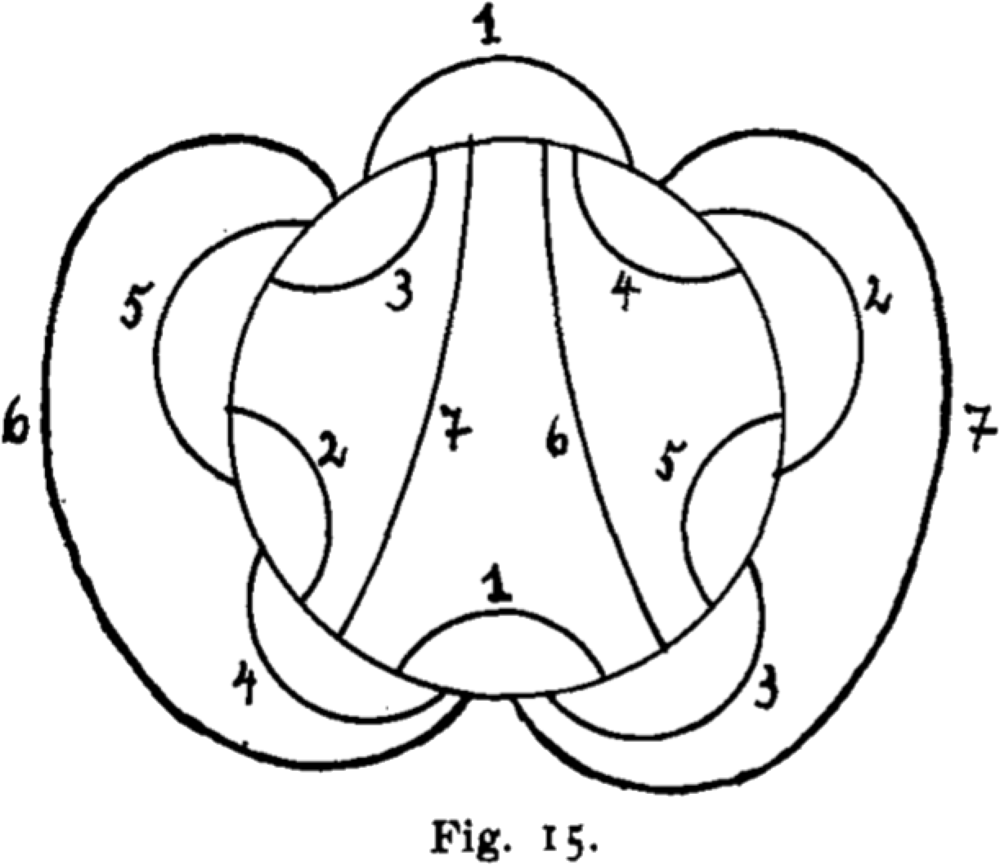
A tree-onion figure [Dehn
1936]Tree onion bulblets. [Kurt Stüber 2004,
CC BY-SA
3.0, via Wikimedia
Commons]Egyptian tree onion. From Child’s
Rare Flowers, Vegetables & Fruits (1894)
(Petersen [9] used similar diagrams in 1891 to study abstract regular
graphs. Consider a connected \(4\)-regular graph \(G\) with \(n\) vertices. Petersen defined a “stretched
graph” by representing any Euler tour of \(G\) as a cycle of length \(2n\), with additional edges connecting the
two occurrence of each vertex of \(G\).
If we alternately color the edges this cycle red and blue, every vertex
of \(G\) is incident to two edges of
each color. Thus, every \(4\)-regular
graph can be decomposed into two 2-factors. Applying Petersen’s
construction to any curve, as an Euler tour of its image graph, recovers
the forward and backward cycles in the curve’s Nagy graph.)
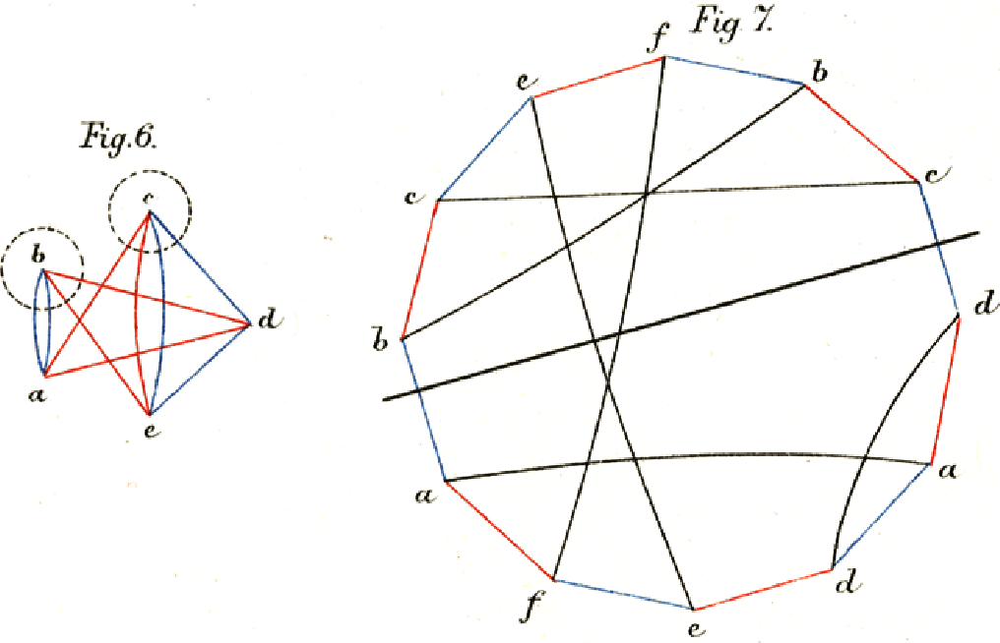
Petersen’s diagram of an Euler tour
(Petersen 1891)
7.6 Bipartite interlacement
Read and Rosenstiehl [6] observed that Dehn’s planarity condition can
verified efficiently by constructing yet another graph, called the
interlacement graph of the Dehn code. The interlacement graph
has \(n\) vertices, one for each
symbol, and an edge between any two symbols \(x\) and \(y\) whose appearances are interlaced \(x\dots y \dots x\dots y\) in the Dehn code.
Partitioning the chords of a Dehn diagram into pairwise disjoint inner
and outer chords is equivalent to partitioning the vertices of the
interlacement graph into two independent sets. In other words, a Dehn
diagram is planar if and only if its interlacement graph is
bipartite.
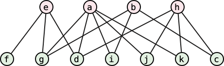
The bipartite interlacement graph for the
Dehn code ahkjdchbcgibaifefgdejk
7.7 Recrossing
To complete his algorithm, Dehn observed that we can transform the
Dehn diagram of any Euler tour of \(G(X)\) into a 4-regular graph by replacing
each chord with a pair of crossing chords with a crossing, as shown
below. Assuming the interlacement graph of the Dehn code is bipartite,
the corresponding Dehn diagram is planar, so this recrossing process
yields a single closed curve consistent with our original Gauss code
\(X\).
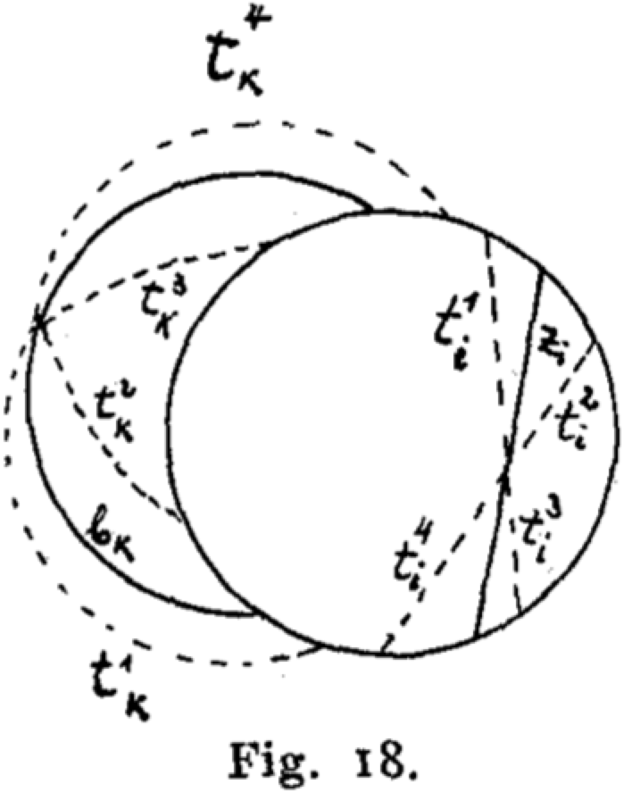
Building a closed curve from a
tree-onion-diagram (Dehn 1936)
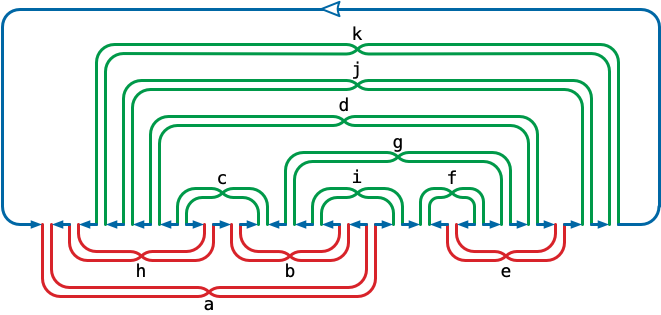
A planar curve consistent with the
original Gauss code abcdefgchaigdjkhbifejk
Putting all the pieces together, we conclude:
Theorem:
A Gauss code \(X\) can be realized
by a planar closed curve if and only if at least one (and therefore
every) Euler tour of \(G(X)\) has a
bipartite interlacement graph.
7.8 Algorithm summary
Theorem:
Given a Gauss code \(X\) of length
\(2n\), we can either construct a
planar curve consistent with \(X\) or
correctly report that no such curve exists, in \(O(n^2)\) time.
Proof:
The algorithm proceeds as follows:
Construct the Nagy graph \(G(X)\)
of \(X\). This can be done in \(O(n)\) time by brute force. If any vertex
of \(G(X)\) has no outgoing edges, halt
and report that \(X\) is not
realizable. Otherwise, \(G(X)\) is
Eulerian, and thus \(X\) satisfies
Gauss’s parity condition.
Compute any Euler tour of \(G(X)\).
This can be done in \(O(n)\) time using
the well-known algorithm of Hierholzer (not Euler!).
Construct the Dehn code \(\tilde{X}\) of this Euler tour. This can be
done in \(O(n)\) time by brute
force.
Construct the interlacement graph \(I(\tilde{X})\) of \(\tilde{X}\). This can be done in \(O(n^2)\) time by brute force.
Verify that the interlacement graph is bipartite. The interlacement
graph has \(n\) vertices and at most
\(O(n^2)\) edges, so we can verify
bipartiteness in \(O(n^2)\) time uysing
whatever-first search. If the interlacement graph is not bipartite, halt
and report that \(X\) is not
realizable.
Build a tree-onion figure for \(\tilde{X}\) from any partition of nodes in
the interlacement graph. This can be done in \(O(n)\) time by brute force.
Transform the plane Dehn diagram into a 4-regular plane graph by
replacing each chord with a pair of crossing chords, as shown in Figures
13 and 14. This can be done in \(O(n)\)
time by brute force; the result is a closed curve consistent with our
original Gauss code \(X\).
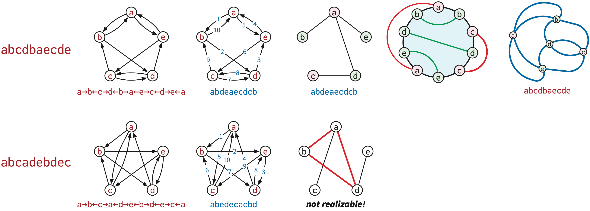
Two examples of Dehn’s Gauss-code
algorithm in action
7.9 Faster! Faster!
There are several linear-time algorithms to test the interlacement
condition without explicitly constructing the interlacement
graph, but we’re out of time.
Hubert de Fraysseix and Patrice Ossona de Mendez. A short proof of a Gauss
problem. Proc. 5th Int. Symp. Graph Drawing, 230–235, 1997.
Lecture Notes Comput. Sci. 1353, Springer.
Carl Friedrich Gauß. Nachlass. I. Zur Geometria situs.
Werke, vol. 8, 271–281, 1900. Teubner. Originally written
between 1823 and 1840.
Hans Rademacher and Otto Toeplitz. On closed self-intersecting
curves. The Enjoyment of Mathematics: Selections from Mathematics
for the Amateur, chapter 10, 61–66, 1990. Dover Publ. Originally
published by Princeton Univ. Press, 1957.
Ronald C. Read and Pierre Rosenstiehl. On the Gauss crossing
problem. Combinatorics, 843–876, 1976. Colloq. Math. Soc. János
Bolyai 18, North-Holland. Modern description of Dehn’s solution to the
Gauss code problem.
Peter Guthrie Tait. On
knots I.Trans. Royal Soc. Edinburgh 28(1):145–190,
1876–7.
8 Curve homotopy and curve
invariants\(^\alpha\)
Caveat Lector: This note is still pretty
sketchy!
In an earlier lecture we argued that any generic curve in the plane
can be continuously deformed into any other by a finite sequence of
homotopy moves. But our earlier argument was unsatisfying for a number
of reasons. First, I deliberately glossed over several details; while I
claim that these details are ultimately mechanical, you have no
reason to believe my assessment, or even that I’ve worked out the
details at all. (I have worked out the details, but my mere
claim shouldn’t be enough to convince you. Proof by Old Tenured White
Dude is not a proof at all.) Second, the proof is nonconstructive.
Third, the proof gives us no idea how many homotopy moves are
required.
8.1 Steinitz’s contraction
algorithm
The following constructive algorithm for contracting a generic curve
via homotopy moves is implicit in Steinitz’s 1916 proof of the seminal
theorem that bears his name: A graph \(G\) is the 1-skeleton of a
three-dimensional convex polyhedron if and only if \(G\) is planar and 3-connected. (I’ll
explain the connection between this algorithm and Steinitz’s theorem
later in the course.)
We first define some useful substructures of non-simple generic
curves. A loop in a curve \(\gamma\) is a simple subpath of \(\gamma\) that starts and ends at the same
vertex. A spindle is a pair of simple, interior-disjoint
subpaths of \(\gamma\) with the same
distinct endpoints. A vertex of a spindle is an endpoint of the
subpaths of \(\gamma\) that defines it.
A spindle is convex if its interior contains exactly one corner
of each vertex. A spindle is irreducible if its interior does
not contain the interior of another bigon; easy case analysis implies
that every irreducible spindle is convex. A monogon is a face
whose boundary is a loop; a bigon is a face whose boundary is a
(necessarily convex) spindle.
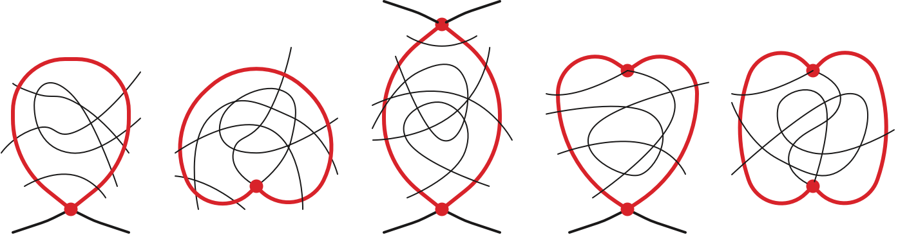
Non-minimal loops and spindles; only the
first loop and spindle are “convex”.
Lemma (Steinitz):
Let \(\gamma\) be a non-simple
curve with no monogons. There is at least one irreducible spindle in
\(\gamma\).
Proof:
Let \(x\) be the first vertex
encountered twice when traversing \(\gamma\) from an arbitrary basepoint; the
subpath of \(\gamma\) between the two
occurrences of \(x\) is a loop. Thus,
\(\gamma\) contains at least one loop.
Let \(\ell\) be the loop with the
fewest faces in its interior, breaking ties arbitrarily.
We call any maximal subpath of \(\gamma\) in the interior of \(\ell\) a strand. There must be at
least one strand, since otherwise \(\ell\) would be a monogon. The minimality
of \(\ell\) implies that each strand is
a simple path. Each strand in \(\ell\) forms a convex spindle with some
subpath of \(\ell\); thus, \(\gamma\) contains at least one spindle. Any
spindle with the fewest faces in its interior is irreducible.
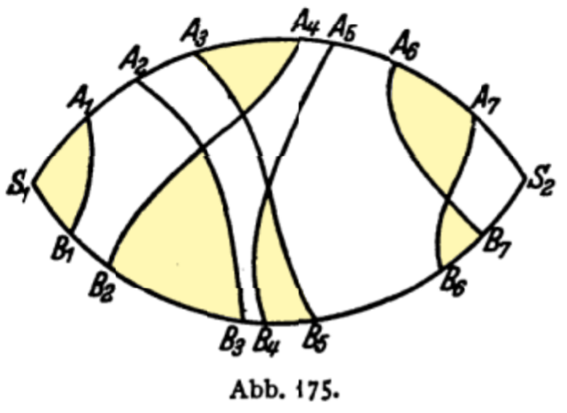
An irreducible spindle with six boundary
triangles (Steinitz and Rademacher 1934).
Lemma (Steinitz):
Let \(\gamma\) be a non-simple
curve with no monogons, and let \(\sigma\) be any irreducible spindle in
\(\gamma\). Either \(\sigma\) is a bigon, or there is a
triangular face in the interior of \(\sigma\) that shares an edge with \(\sigma\).
Proof:
Again, any maximal subpath of \(\gamma\) in the interior of \(\sigma\) a strand; there must be
at least one strand, since otherwise \(\sigma\) is a bigon. Irreducibility implies
that the strands satisfy three conditions:
Every strand is simple. (Otherwise a strand would contain a loop,
and therefore either a monogon or a smaller spindle.)
Every strand has one endpoint on each subpath defining \(\sigma\). (Otherwise, that strand would
form a smaller spindle with one side of \(\sigma\).)
Every pair of strands intersects at most once. (Otherwise, some pair
of strands would define a smaller spindle.)
Now there are two cases to consider. If no pair of strands
intersects, the faces at both vertices are triangles, each sharing
two edges with \(\sigma\).
Otherwise, imagine continuously sweeping a curve through the interior of
\(\sigma\) from one boundary subpath to
the other, and let \(x\) be the first
interior vertex that this curve sweeps over. The two strands that
intersect at \(x\) form a triangular
face with one of the boundary curves of \(\sigma\).
With these two lemmas in hand, we can now describe Steinitz’s
algorithm. Let \(\gamma\) be any
generic curve with \(n\) vertices. If
\(n=0\), the curve is simple and there
is nothing to do. If \(\gamma\)
contains a loop, remove it with a single \(1\to0\) move and recursively simplify the
remaining curve. Otherwise, let \(\sigma\) be any irreducible spindle. We
empty \(\sigma\) by repeatedly
performing \(3\to3\) moves, each time
moving a triangular face from the interior of \(\sigma\) to the exterior. Once \(\sigma\) becomes a bigon, we remove it with
a single \(2 \to 0\) move, and then
recursively simplify the remaining curve.
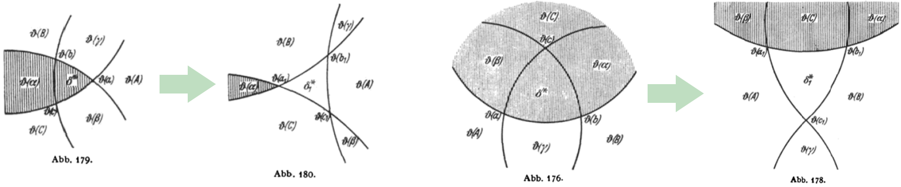
Extracting a triangle from a spindle
(Steinitz Rademacher 1934).
In the worst case, the algorithm uses \(O(n)\) moves to empty and remove each
irreducible spindle. Each phase of the algorithm removes either one or
two vertices. Thus, the algorithm runs through \(\Theta(n)\) phases, each with \(O(n)\) moves, so it makes \(O(n^2)\) moves altogether. This analysis is
tight; Steinitz’s algorithm requires \(\Omega(n^2)\) moves in the worst case.
This is not the fastest contraction algorithm known; in 2016,
Hsien-Chih Chang and I described an algorithm to contract any planar
curve Hsien using only \(O(n^{3/2})\)
homotopy moves; we also proved a matching \(\Omega(n^{3/2})\) worst-case upper bound.
However, unlike Steinitz’s algorithm, our faster algorithm sometimes
uses \(0\to2\) moves. In 2022, Santiago
Aranguri, Hsien-Chih Chang, and Dylan Fridman finally proved that any
planar curve can be contracted using a sequence of \(O(n^{3/2})\) homotopy moves that never
increases the number of vertices; the sequence includes only \(1\mathord\to 0\), \(2\mathord\to 0\), and \(3\mathord\to3\) moves.
8.2 Rotation number
Definition: winding number oof the derivative around the origin.
Always an integer. For simple curves, either \(+1\) or \(-1\); equal to the winding number around
any interior point.
For polygons, equal to sum of exterior angles. (Studied by Meister in
the 1700s, and arguably by Bradwardine in the 1300s.)
Classify points with rightward tangents as happy or
sad; rotation number = #happy \(-\) #sad. [Gauss, possibly Meister]
Gauss: Also equal to sum of rotation numbers of Seifert circles.
But our usual representation doesn’t give us access to tangents or
curvature; indeed, generic curves need not have well-defined tangents.
Instead we use a combinatorial formula known to Gauss in terms of the
writhe of the curve. The writhe is defined as the sum over all
vertices of the sign of the first crossing at that vertex; we
emphasize that writhe is a function of both the curve and the basepoint.
\[
\textsf{writhe}(\gamma) = \sum_x \textsf{sgn}(x)
\] To state Gauss’s formula succinctly, we also need to extend
the definition of winding number to points on the curve. We define the
winding number along an edge of the image graph as the average of the
winding numbers of its two incident faces; this is always a
half-integer. Similarly, we define the winding number of a curve around
one of its vertices as the average of the winding numbers of the four
faces incident to that vertex; this is always an integer. (Two of those
four faces may be the same face.) We specifically define \(\textsf{wind}_0(\gamma)\) to be the winding
number of \(\gamma\) around its
basepoint.
Moving the basepoint through a positive crossing changes it into a
negative crossing (so the writhe decreases by \(2\)), but it also increases the winding
number around the basepoint by \(1\).
(So without loss of generality, we could assume that the basepoint is on
the outer face and therefore \(\textsf{wind}_0(\gamma)= \pm 1/2\), but
this won’t be necessary.)
Any continuous deformation of the curve that does not change the
number of vertices can only create and destroy happy and sad points in
matched pairs. (Deforming the curve also deforms its derivative, and the
deformation of the derivative that avoids the origin can only create or
destroy crossings with the positive \(x\)-axis in matched positive-negative
pairs. Think in terms of homotopy moves!) So rotation number is an
isotopy invariant.
Now we argue by induction over any sequence of homotopy moves that
leads to a simple cycle. We assume the basepoint is far away from
whatever move we’re analyzing, so \(\textsf{wind}_0(\gamma)\) doesn’t
change.
\(0\mathord\to 1\): If the deleted
vertex is positive, the loop is oriented counterclockwise, so the move
decreases both the rotation number and the writhe by \(1\). Similarly, deleting a negative vertex
increases both rotation number and writhe by \(1\).
\(2\mathord\to 0\): The two
vertices have opposite signs, so the writhe doesn’t change. But the
number of happy and sad points doesn’t change either, so the rotation
number doesn’t change.
\(3\mathord\to 3\): Nothing in the
formula changes.
Finally, we observe that the formula is trivially correct when the
curve is simple.
Would it be easier to argue by induction on the number of
vertices via oriented smoothing? By induction we have \(\textsf{rot}(\gamma) = \textsf{rot}(\gamma^-) +
\textsf{rot}(\gamma^+) = 2 \cdot \textsf{wind}_0(\gamma^-) +
\textsf{writhe}(\gamma^-) + 2 \cdot \textsf{wind}_0(\gamma^+) +
\textsf{writhe}(\gamma+)\). The smoothed vertex vanishes, but it
becomes the basepoint of one of the two constituent curves. The number
of crossings between the two constituent curves \(\gamma^-\) and \(\gamma^+\) is even, with exactly half
positive and half negative. So we need to relate \(\textsf{wind}_0(\gamma^+)\) to the sign of
the smoothed vertex.
8.3 Regular homotopy
No \(1\mathord\to 0\) or \(0\mathord\to 1\) moves. So rotation number
never changes.
Nowik’s algorithm: Without loss of generality the basepoint is on the
outer face. Repeat the following until the curve consists of empty
loops:
Find a simple loop.
Empty the loop (two moves per interior vertex, plus one move for
each remaining interior strand)
Move the loop close to the basepoint
Boy’s trick: Cancel two adjacent loops on opposite sides.
When these iterations end, either all loops are inside or all loops
are outside. We can deform one canonical curve to the other using a
linear number of moves. Altogether, the algorithm requires \(O(n^2)\) moves to canonize a curve with
\(n\) vertices.
it follows that rotation number is a complete regular homotopy
invariant (just like winding number around a point is a homotopy
invariant in the once-punctured plane).
Basepoint independence: moving the basepoint across a positive vertex
\(x\) with winding number \(w\) changes \(x\) to a negative vertex (decreasing the
sum by \(2w\)), but increases \(\textsf{wind}_0\) from \(w-1/2\) to \(w+1/2\) (increasing \(\textsf{wind}_0^2(\gamma)\) by \(2w\).
Lemma:
Each \(3\to 3\) move changes
strangeness by exactly \(1\). \(2\to0\) moves do not change
strangeness.
Proof:
case analysis
Our outer-canonical curves have strangeness \(0\), because each vertex has winding number
\(0\). So the strangeness of a curve is
a lower bound on the number of moves required to canonize it. A nested
counterclockwise loop with rotation number \(r\) has \(r+1\) positive vertices and strangeness
\(r(r + 1)/2\). So Nowik’s algorithm is
optimal (up to constant factors).
Curves with maximum and minimum
strangeness (Meister 1769)
Homotopy moves change defect as follows: \(1\to 0\) moves do not change the defect.
Each \(2\to 0\) move either decreases
the defect \(2\) or leaves it
unchanged. Each \(3\to 3\) move either
increases the defect by \(2\) or
decreases the defect by \(2\).
Proof:
Case analysis.
The flat torus knot\(T(p,q)\) is defined as \[
T(p,q)(\theta) = \big(cos(q\theta)+2)cos(p\theta),
(cos(q\theta)+2)sin(p\theta) \big).
\] This curve has exactly \((p-1)q\) vertices.
So indeed, there are \(n\)-vertex
curves that require \(\Omega(n^{3/2})\)
homotopy moves to simplify, so Hsien-Chih Chang’s and my algorithm is
worst-case optimal.
8.6 Aptly Yadda Yadda
Connection to Steinitz’s theorem via medial graphs
Connection to electrical reduction via \(\Delta Y\)-transformations
Hass and Scott’s lemma for curves on orientable surfaces
Monotone planar homotopy in \(O(n^{3/2})\) moves
Simplifying curves in the annulus or torus in \(O(n^2)\) moves
\(\Omega(n^2)\) lower bound for
annular curves via winding depth
9 Planar Graphs\(^\beta\)
9.1 Abstract graphs
A graph is an abstract combinatorial structure that models pairwise
relationships. You probably have a good intuitive idea what a graph is
already. Nevertheless, to avoid subtle but pervasive differences in
terminology, notation, and basic assumptions, I will carefully define
everything from scratch. In particular, we need a definition that allows
parallel edges and loops, so we can’t use the standard
combinatorialist’s definition as a pair of sets \((V,E)\), and I don’t want to wander into
the notational quagmire of multisets. So here we go.
An abstract graph is a quadruple \(G := (V, D, \textsf{rev}, \textsf{head})\),
where
\(V\) is a non-empty set of
abstract objects called vertices;
\(D\) is a set of abstract objects
called darts;
\(\textsf{rev}\) is a permutation
of the darts \(D\) such that \(\textsf{rev}(\textsf{rev}(d)) = d \ne
\textsf{rev}(d)\) for every dart \(d\in
D\);
\(\textsf{head}\) is a function
from the darts \(D\) to the vertices
\(V\).
Darts are also called half-edges or arcs or
brins (French for “strands”).
For any dart \(d\), we call the dart
\(\textsf{rev}(d)\) the
reversal of \(d\), and we call
the vertex \(\textsf{head}(d)\) the
head of \(d\). The
tail of a dart is the head of its reversal: \(\textsf{tail}(d) :=
\textsf{head}(\textsf{rev}(d))\). The head and tail of a dart are
its endpoints. Intuitively, a dart is a directed path from its
tail to its head; in keeping with this intuition, we say that a dart
\(d\)leaves its tail and
enters its head. I often write \(u\mathord\to v\) to denote a dart with tail
\(u\) and head \(v\), even (at the risk of confusing the
reader) when there is more than one such dart.
For any dart \(d\in D\), the
unordered pair \(|d| =
\{d,\textsf{rev}(d)\}\) is called an edge of the graph.
We often write \(E\) to denote the set
of edges of a graph. The constituent darts of an edge \(e\) are arbitrarily denoted \(e^+\) and \(e^-\). The endpoints of an edge
\(e = \{ e^+, e^- \}\) are the
endpoints (equivalently, just the heads) of its constituent darts.
Intuitively, each dart is an orientation of some edge from one of its
endpoints to the other.
A vertex \(v\) and an edge \(e\) are incident if \(v\) is an endpoint of \(e\); two vertices are neighbors if
they are endpoints of the same edge. We often write \(uv\) to denote an edge with endpoints \(u\) and \(v\), even (at the risk of confusing the
reader) when there is more than one such edge.
A loop is an edge \(e\)
with only one endpoint, that is, \(\textsf{head}(e^+) = \textsf{tail}(e^+)\).
Two edges are parallel if they have the same endpoints. A graph
is simple if it has no loops or parallel edges, and
non-simple otherwise. Non-simple graphs are sometimes called
“generalized graphs” or “multigraphs”; I will just call them
“graphs”.
Let me repeat this louder for the kids in the back:
Graphs are not necessarily simple.
The degree of a vertex \(v\),
denoted \(\deg_G(v)\) (or just \(\deg(v)\) if the graph \(G\) is clear from context), is the number14 of darts whose head is \(v\), or equivalently, the number of
incident edges plus the number of incident loops. A vertex is
isolated if it is not incident to any edge.
9.2 Data structures
Here is an equivalent definition that might be clearer to computer
scientists: A (finite) graph is whatever can be stored in a
standard graph data structure.
The canonical textbook graph data structure is the incidence
list. (For simple graphs, the same data structure is more commonly
called an adjacency list.) The \(n\) vertices of the graph are represented
by distinct integers between \(1\) and
\(n\). A standard incidence list
consists of an array indexed by the vertices; each array entry in the
array points to a linked list of the darts leaving the corresponding
vertex. (The order of darts in these linked lists is unimportant; we use
linked lists only because they support certain operations quickly.) The
record for each dart \(d\) contains the
index of \(\textsf{head}(d)\) and a
pointer to the record for \(\textsf{rev}(d)\). Storing a graph with
\(n\) vertices and \(m\) edges in an incidence list requires
\(O(n + m)\) space.
If a graph is stored in an incidence list, we can insert a new edge
in \(O(1)\) time, delete an edge in
\(O(1)\) time (given a pointer to one
of its darts), and visit all the edges incident to any vertex \(v\) in \(O(1)\) time per edge, or \(O(\deg(v))\) time altogether. There are a
few standard operations that incidence lists do not support on \(O(1)\) time, the most glaring of which is
testing whether two vertices are neighbors. Surprisingly, however, most
efficient graph algorithms do not require this operation, and for those
few that do, we can replace the linked lists with hash tables.
An incidence list, with the dart records
for two edges emphasized. For clarity, most reversal pointers are
omitted.
More generally, “array” and “linked list” can be replaced by any
suitable data structures that allow random access and fast iteration,
respectively. A particularly simple and efficient implementation keeps
all data in standard arrays. For a graph with \(n\) vertices and \(m\) edges, we represent vertices by
integers between \(0\) and \(n-1\), edges by integers from \(0\) to \(m-1\), and darts by integers between \(0\) and \(2m-1\). Each edge \(e\) is composed of darts \(e^- = 2e\) and \(e^+ = 2e+1\); thus, the reversal of any
dart \(d\) is obtained by flipping its
least significant bit: \(d\oplus 1\).
The actual data structure consists of three arrays:
\(\textsf{first}[0..n-1]\), where
\(\textsf{first}[v]\) is any dart
leaving vertex \(v\).
\(\textsf{head}[0..2m-1]\), where
\(\textsf{head}[d]\) is the head of
dart \(d\).
\(\textsf{next}[0..2m-1]\), where
\(\textsf{next}[d]\) is the successor
of \(d\) in the list of darts leaving
\(\textsf{tail}(d)\).
It is convenient to treat the list of darts leaving each vertex as a
circular list; then \(\textsf{next}\) stores a permutation of the
darts, each of whose cycles is the set of darts leaving a vertex. We may
also want to store a predecessor array \(\textsf{prev}[0..2m-1]\) that stores the
inverse of this permutation. We do not need a separate \(\textsf{tail}\) array, because \(\textsf{tail}(d) = \textsf{head}[d \oplus
1]\).
An incidence array representation of the
same graph as Figure 1.
For algorithms that make frequent changes to the graph (adding and/or
deleting vertices and/or edges), we should use dynamic hash tables
instead of raw arrays. Finally, we can easily store algorithm-dependent
auxiliary data such as vertex coordinates, edge weights, distances, or
flow capacities in separate arrays (or hash tables) indexed by vertices,
edges, or darts, as appropriate.
9.3 Topological graphs
Graphs can also be formalized as topological structures rather than
purely combinatorial structures. Informally, a topological
graph consists of a set of distinct points called
vertices, together with a collection of vertex-to-vertex paths
called edges, which are disjoint and simple, except possibly at
their endpoints.
More formally, a topological graph \(G^\top\) is the quotient space of a set of
disjoint closed intervals, with respect to an equivalence relation over
the intervals’ endpoints. The projections of the intervals are the
edges of \(G^\top\); the
projections (or equivalence classes) of interval endpoints are the
vertices of \(G^\top\). Again,
for the kids in the back, topological graphs are not required to be
simple; they can contain loops and parallel edges.15
Mechanical definition-chasing implies that any topological graph
\(G^\top\) can be described by a unique
abstract graph \(G\), For example, the
darts of \(G\) are orientations of the
edges of \(G^\top\). Conversely, any
abstract graph describes a unique (up to homeomorphism) topological
graph \(G^\top\).16
9.4 Planar graphs and planar
maps
A planar embedding of a graph \(G\) represents its vertices as distinct
points in the plane (typically drawn as small circles) and its
edges as simple interior-disjoint paths between their endpoints.
Equivalently, a planar embedding of \(G\) is a continuous injective function from
the corresponding topological graph \(G^\top\) into the plane. A graph is
planar it it has at least one planar embedding. Somewhat
confusingly, the image of a planar embedding of a planar graph is also
called a plane graph.
A planar graph \(G\) and two planar embeddings of \(G\).
The components of the complement of the image of a planar embedding
are called the faces of the embedding. Assuming the embedded
graph is connected, the Jordan curve theorem implies that every bounded
face is homeomorphic to an open disk, and the unique unbounded face is
homeomorphic to the complement of a closed disk. For disconnected
graphs, at least one face is homeomorphic to an open disk with a finite
number of closed disks removed.
The faces on either side of an edge of a planar embedding are called
the shores of that edge. For any dart \(d\), the face just to the left of the image
of \(d\) in the embedding is the
left shore of \(d\), denoted
\(\textsf{left}(d)\); symmetrically,
the face just to the right is the right shore\(\textsf{right}(d)\). The left and right
shores of a dart can be the same face. An edge \(e\) and a face \(f\) are incident if \(f\) is one of the shores of \(e^+\); similarly, an vertex \(v\) and a face \(f\) are incident if \(v\) and \(f\) have a common incident edge. The
degree of a face \(f\),
denoted \(\deg_G(f)\) (or just \(\deg(f)\) if \(G\) is clear from context), is the number
of darts whose right shore is \(f\).
Let \(F\) be the set of faces of a
planar embedding of a connected graph with vertices \(V\) and edges \(E\). The decomposition of the plane into
vertices, edges, and faces, typically written as a triple \((V,E,F)\), is called a planar map.
Trapezoidal decompositions and triangulations of polygons are both
examples of planar maps. A planar map is called a triangulation
if every face, including the outer face, has degree \(3\). The underlying graph \((V, E)\) of a planar triangulation is
not necessarily simple.17
A nonsimple planar
triangulation.
9.5 Rotation systems
As usual in topology, we are not really interested in
particular embeddings or maps, but rather topological
equivalence classes of embeddings or maps. Two planar embeddings of the
same graph \(G\) are considered
equivalent if there is an orientation-preserving homeomorphism
of the plane to itself that carries one embedding to the other, or
equivalently, if one embedding can be continuously deformed to the other
through a continuous family of embeddings. Fortunately, every
equivalence class of embeddings has a concrete combinatorial
representation, called a rotation system.
Recall that a permutation of a finite set \(X\) is a bijection \(\pi\colon X \to X\). For any permutation
\(\pi\) and any element \(x\in X\), let \(\pi^0(x) := x\) and \(\pi^k(x) := \pi(\pi^{k-1}(x))\) for any
integer \(k > 0\). The
orbit of an element \(x\) is
the set \(\{\pi^k(x) \mid k\in\mathbb{N}\} =
\{x, \pi(x), \pi^2(x), \dots\}\). The restriction of \(\pi\) to any of its orbits is a cyclic
permutation; the infinite sequence \(x,\pi(x),\pi^2(x),\dots\) repeatedly cycles
through the elements of the orbit of \(x\). Thus, the orbits of any two elements
of \(X\) are either identical or
disjoint.
The successor permutation or an embedding of \(G\) is a permutation of the darts of \(G\); specifically, the successor \(\textsf{succ}(d)\) of any dart \(d\) is the successor of \(d\) in the clockwise sequence of
darts entering \(\textsf{head}(d)\).18
Finally, the rotation system of an embedding is a triple
\(\Sigma = (D, \textsf{rev},
\textsf{succ})\), where
\(D\) is the set of darts,
\(\textsf{rev}\) is is the reversal
permutation of \(D\), and
\(\textsf{succ}\) is the successor
permutation of \(D\).
More generally, a rotation system or combinatorial
map is any triple \((D, \textsf{rev},
\textsf{succ})\) where \(D\) is
a set, \(\textsf{rev}\) is a
fixed-point-free involution of \(D\),
and \(\textsf{succ}\) is another
permutation of \(D\). The
vertices of a combinatorial map are the orbits of \(\textsf{succ}\), its edges are the
orbits of \(\textsf{rev}\), and its
faces are the orbits of \(\textsf{rev}(\textsf{succ})\). The vertices
and edges define the 1-skeleton or underlying graph of
\(\Sigma\).
In other words, a rotation system is (almost) an incidence list where
the order of darts in each list actually matters! The only annoying
discrepancy is that rotation systems order darts into each
vertex, while incidence lists order darts out of each vertex,
but we can easily translate between these two standards using the
identity \(\textsf{next}(d) =
\textsf{rev}(\textsf{succ}(\textsf{rev}(d)))\).
The of any connected graph embedding are also implicitly encoded in
its rotation system. Recall that \(\textsf{rev}\) is the reversal permutation
of the darts of a graph. For any dart \(d\), the dual successor\(\textsf{succ}^*(d):=
\textsf{rev}(\textsf{succ}(d))\) is the next dart after \(d\) in counterclockwise order
around the boundary of \(\textsf{left}(d)\).
The successor and dual successor of a
dart in a planar map.Navigating around a dart. To simplify the
figure, negation is used to indicate dart reveral.
9.6 Formalities and
Trivialities
Formally, rotation systems (and their equivalent incidence lists)
describe embeddings onto the sphere\(S^2 = \{ (x,y,z) \mid x^2+y^2+z^2=1 \}\),
not onto the plane. Indeed, for many results about planar graphs, it is
actually more natural to consider spherical embeddings on the sphere
instead the plane. Fortunately, we can transfer embeddings back and
forth between the sphere and the plane using stereographic
projection.
Stereographic projection is the function \(\textsf{st}\colon S^2\setminus(0,0,1) \to
\mathbb{R}^2\) where \(\textsf{st}(x,y,z) := \big(\! \frac{x}{1-z},
\frac{y}{1-z} \!\big)\). The projection \(\textsf{st}(p)\) of any point \(p\in S^2\setminus(0,0,1)\) is the
intersection of the line through \(p\)
and the “north pole” \((0,0,1)\) with
the \(xy\)-plane. Points in the
northern hemisphere project outside the unit circle; points in the
southern hemisphere project inside the unit circle. Given any spherical
embedding, if we rotate the sphere so that the embedding avoids \((0,0,1)\), stereographic projection gives
us a planar embedding; conversely, given any planar embedding, inverse
stereographic projection immediately gives us a spherical embedding.
Thus, a graph is planar if and only if it has an embedding on the
sphere.
Stereographic projection.
To fully specify an embedding on the plane using a rotation system,
we must somehow also indicate which face of the embedding is the
outer face, or equivalently, which face of the corresponding
spherical embedding contains the north pole. The outer face can be
chosen arbitrarily.
Most of the exposition in these notes implicitly considers only
embeddings of graphs with at least one edge. Exactly one map violates
this assumption, namely the trivial map, which has one vertex,
one face, and no edges. The trivial map is represented by the
empty rotation system \((\varnothing,
\varnothing, \varnothing)\).
The trivial map of the
sphere.
9.7 Caveat Lector
“There are dinner jackets and dinner jackets. This is the
latter.”
— Vesper Lynd [Eva Green], Casino Royale (2006)
It is somewhat confusing standard practice to use the same symbol
\(G\) (and the same word “graph”) to
simultaneously denote at least six formally different structures:
the image of that embedding (which by definition is homeomorphic to
\(G^\top\)),
the rotation system \((D,\textsf{rev},\textsf{succ})\) of that
embedding, and
the planar map \((V,E,F)\) induced
by that embedding.
Even when authors do distinguish between graphs and
maps, it is standard practice to conflate abstract graphs, the
corresponding topological graphs, and images of embeddings as “graphs”.
In particular, the image of a planar graph embedding is commonly called
a plane graph. Even the phrases “abstract graph” and
“topological graph” are non-standard; the standard names for these
objects are “graph” (spoken by a combinatorialist) and “graph” (spoken
by a topologist), respectively.20 It is also standard
practice to use the word “embedding” to mean both an injective
function from \(G^\top\) to the plane
and the image of such a function, and to use the word “map” to
mean both the decomposition of the plane induced by an
embedding and the rotation system of that embedding.
I will try to carefully distinguish between these various
objects when the distinction matters, but there is a serious tension
here between formality and clarity, so I am very likely to slip
occasionally.
9.8 Duality
Recall that a combinatorial map is a triple \(\Sigma = (D, \textsf{rev},
\textsf{succ})\), where \(D\) is
a set of darts, is an involution of \(D\), and is a permutation of \(D\). For any such triple, the triple \(\Sigma^* = (D, \textsf{rev},
\textsf{rev}\circ\textsf{succ})\) is also a well-defined
combinatorial map, called the dual map of \(\Sigma\).21
The vertices of \(\Sigma^*\) are the orbits of \(\textsf{rev}\circ\textsf{succ}\), which are
also the faces of \(\Sigma\).
The edges of \(\Sigma^*\)
are the orbits of , which are also the edges of \(\Sigma\).
The faces of \(\Sigma^*\)
are the orbits of \(\textsf{rev}\circ\textsf{rev}\circ\textsf{succ} =
\textsf{succ}\), which are also the vertices of \(\Sigma\)!
In other words, each vertex \(v\),
edge \(e\), dart \(d\), or face \(f\) of the original map \(\Sigma\) corresponds to—or more
evocatively, “is dual to”—or more formally,
IS—a face \(v^*\), edge \(e^*\), dart \(d^*\), or vertex \(f^*\) of the dual map \(\Sigma^*\), respectively.
The endpoints of any primal edge \(e\) are dual to the shores of the
corresponding dual edge \(e^*\), and
vice versa. Specifically, for any dart \(d\), we have \(\textsf{head}(d^*) = \textsf{left}(d)^*\)
and \(\textsf{tail}(d^*) =
\textsf{right}(d)^*\). Intuitively, the dual of a dart is
obtained by rotating it a quarter-turn counterclockwise.
Duality is trivially an involution: \((\Sigma^*)^* = \Sigma\), because \(\textsf{rev}\circ\textsf{rev}\circ\textsf{succ} =
\textsf{succ}\). It immediately follows that for any dart \(d\), we have \(\textsf{left}(d^*) = \textsf{head}(d)^*\)
and \(\textsf{right}(d^*) =
\textsf{tail}(d)^*\).
We can also directly define the dual of a topological map
\(\Sigma\) as follows. Choose an
arbitrary point \(f^*\) in the interior
of each face \(f\) of \(\Sigma\). Let \(F^*\) denote the collection of all such
points. For each edge \(e\) of \(\Sigma\), choose a simple path \(e^*\) between the chosen points in the
shores of \(e\), such that \(e^*\) intersects \(e\) once transversely and does not
intersect any other edge of \(\Sigma\).
Let \(E^*\) denote the collection of
all such paths. These paths partition the plane into regions \(V^*\), each of which contains a unique
vertex.22 The dual map \(\Sigma^*\) is the decomposition of the
plane into vertices \(F^*\), edges
\(E^*\), and faces \(V^*\).
A planar map and its dual; one dart and
its dual are emphasized.A portion of a planar map \(\Sigma\), and the corresponding portion of
the dual map \(\Sigma^*\)
[[ add dual navigation figure ]]
When \(G\) is an embedded
graph, it is extremely common to define the dual graph\(G^*\) as the 1-skeleton of the dual map of
the embedding. This habit is a bit misleading, however; duality is a
correspondence between maps or embeddings, not between
abstract graphs. An abstract planar graph can have many non-isomorphic
planar embeddings, each of which defines a different “dual graph”.
Moreover, the dual of a simple embedded graph is not necessary
simple; any vertex of degree \(2\) in
\(G\) gives rise to parallel edges in
\(G^*\), and any bridge in \(G\) is dual to a loop in \(G^*\). This is why we don’t want graphs to
be simple by definition!
Two planar embeddings of a simple planar
graph, with non-simple, non-isomorphic dual graphs.
9.9 Self-dual data structures
[[Duality is not a transformation; it’s just a
type-cast]]
A (partial) duality dictionary.
Primal \(\Sigma\)
Dual \(\Sigma^*\)
Primal \(\Sigma\)
Dual \(\Sigma^*\)
vertex \(v\)
face \(v^*\)
\(\textsf{head}(d)\)
\(\textsf{left}(d^*)\)
dart \(d\)
dart \(d^*\)
\(\textsf{tail}(d)\)
\(\textsf{right}(d^*)\)
edge \(e\)
edge \(e^*\)
\(\textsf{left}(d)\)
\(\textsf{head}(d^*)\)
face \(f\)
vertex \(f^*\)
\(\textsf{right}(d)\)
\(\textsf{tail}(d^*)\)
\(\textsf{succ}\)
\(\textsf{rev}\circ\textsf{succ}\)
clockwise
counterclockwise
\(\textsf{rev}\)
\(\textsf{rev}\)
9.10 Endianity
There are several apparently arbitrary choices to make in the
definitions of incidence lists, rotation systems, and duality. Should we
store cycles of darts with the same head or the same tail? Should darts
be ordered in clockwise or counterclockwise order around vertices? Or
around faces? Should \(\textsf{head}(d^*)\) be defined as \(\textsf{left}(d)^*\) or \(\textsf{right}(d)^*\)? Different standards
are used by different authors, by the same authors in different papers,
and sometimes even within the same paper.23
(Mea culpa!)
Let me attempt to justify, motivate, or at least provide mnemonics
for the specific choices I use in these notes. Some of these rules will
only make sense later.
Dualizing a dart should look (and act?) like multiplying a complex
number by the imaginary unit \(i\): a
quarter turn counterclockwise. Thus, \(\textsf{head}(d^*) = \textsf{left}(d)^*\)
and \(\textsf{tail}(d^*) =
\textsf{right}(d)^*\).
Duality is an involution, dammit. Thus, \(\textsf{left}(d^*) = \textsf{head}(d)^*\)
and \(\textsf{right}(d^*) =
\textsf{tail}(d)^*\). It follows that primal and dual planes must
have opposite orientations!
Simple counterclockwise cycles have winding number \(+1\). So the dual successor function should
order darts counterclockwise around their left shores.
Thus, the primal successor function should order darts
clockwise around their heads.
Derivatives measure how much a function increases, so \(\delta\omega(d) = \omega(\textsf{head}(d)) -
\omega(\textsf{tail}(d))\). On the other hand, the directed
boundary of a face should be a counterclockwise cycle, so \(\partial\alpha(d) = \alpha(\textsf{left}(d)) -
\alpha(\textsf{right}(d))\). Hey, look, consistency!
This standard creates an annoying discrepancy between the
mathematical abstraction of a rotation system and its implementation as
an incidence list. Rotation systems order darts around their heads
because that makes the math cleaner, but incidence lists (typically)
order darts around their tails because that better fits our intuition
about searching graphs by following directed edges outward. Rather than
give up either useful intuition, we’ll rely on (and if necessary
implement) the identity \(\textsf{next}(d) =
\textsf{rev}(\textsf{succ}(\textsf{rev}(d)))\).
9.11 Other derived maps
Let \(\Sigma = (V, E, F)\) be an
arbitrary planar map. In addition to the dual map \(\Sigma^*\), there are several other useful
maps that can be derived from \(\Sigma\) in terms of two local
features.
A flag of \(\Sigma\) is
a vertex-edge-face triple \((v,e,f)\)
such that \(v\) is an endpoint of \(e\) and \(f\) is a shore of \(e\).
A corner of \(\Sigma\)
is a pair of flags that share the same vertex and the same face.
Intuitively, a corner is an incidence between a vertex and a face, or if
you prefer, a pair of edges whose darts are consecutive around a vertex,
or around a face. (Formally, a corner is just a nickname for a dart; for
each dart \(d\), the corresponding
corner is the incidence between the vertex \(\textsf{head}(d)\) and the face \(\textsf{left}(d)\), or equivalently,
between the vertex \(\textsf{tail}(\textsf{succ}^*(d))\) and the
face \(\textsf{right}(\textsf{succ}(d))\).)
The medial map\(\Sigma^\times =
(E, C, V\cup F)\) is the map whose vertices correspond to the
edges of \(\Sigma\), whose edges
correspond to the corners of \(\Sigma\), and whose faces correspond to
vertices and faces of \(\Sigma\). The
medial map of \(\Sigma\) is the image
graph of a generic planar multicurve. Specifically, two vertices are
connected by an edge in \(\Sigma^\times\) if the corresponding edges
in \(\Sigma\) are adjacent in cyclic
order around any vertex (or equivalently, around any face). Every map
\(\Sigma\) and its dual \(\Sigma^*\) share the same medial map \(\Sigma^\times\).
The dual of the medial map is called the radial map \(\Sigma^\diamond = (V\cup F, C, E)\). The
radial map can be constructed from \(\Sigma\) by placing a new vertex in the
interior of each face \(f\) of \(\Sigma\), connecting each face-vertex \(f\) to each vertex incident to \(f\) (with the appropriate multiplicity),
and then erasing the original edges. Thus, each edge of \(\Sigma\) becomes a quadrilateral face of
\(\Sigma^\diamond\). Again, every map
\(\Sigma\) and its dual \(\Sigma^*\) share the same radial map \(\Sigma^\diamond\).
Corresponding portions of the medial map
\(\Sigma^\times\) and radial map \(\Sigma^\diamond\) of the planar map in
Figure 8.
The band decomposition or ribbon decomposition of
\(\Sigma\) is a map \(\Sigma^\square\) whose vertices correspond
to the flags of \(\Sigma\). Two flags
define an edge in \(\Sigma^\square\) if
they differ in exactly one component: the same vertex and edge but a
different face, the same vertex and face but a different edge, or the
sane edge and face bu a different vertex. Every vertex of \(\Sigma^\square\) has degree \(3\). The faces of \(\Sigma^\square\) correspond to the
vertices, edges, and faces of \(\Sigma\). Every map \(\Sigma\) and its dual \(\Sigma^*\) share the same band
decomposition \(\Sigma^\square\).
The dual of the band decomposition is the barycentric
subdivision\(\Sigma^+\). This map
can be constructed by adding a new vertex in the interior of each edge,
subdividing it into two edges, adding a new vertex in the interior of
every face, and finally connecting each face-vertex to its vertices and
edge midpoints. Thus, the vertices of \(\Sigma^+\) correspond to the vertices,
edges, and faces of \(\Sigma\), and the
faces of \(\Sigma^+\) correspond to the
flags of \(\Sigma\). Every face of
\(\Sigma^+\) is a triangle. Again,
every map \(\Sigma\) and its dual \(\Sigma^*\) share the same barycentric
subdivision \(\Sigma^+\).
Corresponding portions of the band
decomposition \(\Sigma^\square\) and
the barycentric subdivision \(\Sigma^+\) of the planar map in Figure
8.
These four derived maps are formally well-defined if and only only if
the original map \(\Sigma\) has at
least one edge. It is sometimes convenient, for example in base cases of
inductive arguments, to informally extend the definitions to the trivial
map \(\bullet\) as follows:
The trivial medial map \(\bullet^\times\) and the trivial band
decomposition \(\bullet^\square\) both
consist of a single closed curve on the sphere, with no vertices and two
faces, corresponding to the vertex and face of \(\bullet\). I recommend thinking of this
object as the result of gluing two flat circular disks together around
their boundary.
The trivial radial map \(\bullet^\diamond\) and the trivial
barycentric subdivision \(\bullet^+\)
both consist of a single “edge”, with no faces and two vertices, again
corresponding to the vertex and face of \(\bullet\). I recommend thinking of this
object as an infinitely thin cylinder with its ends pinched to
points.
But let me emphasize that these extensions are informal; the objects
I’ve just described are not maps at all!
9.12 Aptly Yadda Yadda
References!
planar graphs, duality, etc
combinatorial maps / rotation systems
map data structures (half-edge, winged-edge, quad-edge, gem,
etc.)
We need to establish definitions for a few important structures in
graphs. Most of these are likely already familiar; I recommend using
this list as later reference rather than reading it as text.
Move to end of previous note?
walk:
A sequence \(\langle s, d_1, d_2, \dots, d_k,
t \rangle\) where \(s\) and
\(t\) are vertices and each \(d_i\) is a dart, such that \(\textsf{tail}(d_1) = s\) and \(\textsf{head}(d_1) = t\) and \(\textsf{head}(d_i) =
\textsf{tail}(d_{i+1})\) for each index \(i\)
length of a walk:
The number of darts in the walk. The walk \(\langle s, d_1, \dots, d_k, t \rangle\) has
length \(k\).
trivial walk:
A walk \(\langle s, s \rangle\) with
length \(0\).
closed walk:
A walk \(\langle s, d_2, \dots, d_k, t
\rangle\) such that \(s = t\).
open walk:
A walk that is either trivial or not closed
walk from \(s\) to \(t\):
A walk with specified initial vertex \(s\) and final vertex \(t\)
\(s\) can reach \(t\):
There is a walk from \(s\) to \(t\). This is an equivalence relation.
component:
An equivalence class for “can reach”
connected graph:
A graph with exactly one component
simple walk:
A walk \(\langle s, d_1, \dots, d_k, t
\rangle\) such that each vertex is the head of at most one dart
\(d_i\).
path:
A simple open walk, or the subgraph induced by a simple open walk
even subgraph:
A subgraph in which every vertex has even degree.
cycle:
A simple non-trivial closed walk, or the subgraph induced by such a
walk. A minimal non-empty even subgraph.
loop:
A cycle with length \(1\), or an edge
whose endpoints coincide.
cut:
A partition of the vertices \(V\) into
two non-empty subsets \(S\) and \(V\setminus S\)
edge cut:
All edges with one endpoint in \(S\)
and the other in \(V\setminus S\), for
some subset \(S\subseteq V\)
bond:
A minimal nonempty edge cut
bridge:
An edge cut containing a single edge; that is, a single edge whose
deletion disconnects the graph
acyclic graph:
A graph containing no cycles
10.2 Deletion and Contraction
Let’s begin by discussing two operations for modifying abstract
graphs. Let \(G\) be an arbitrary
connected (but not necessarily planar) abstract graph with
\(n\) vertices and \(m\) edges.
Deleting an edge \(e\) from
G yields a smaller graph \(G \setminus
e\) with \(n\) vertices and
\(m-1\) edges. We also write \(G \setminus v\) to denote the graph
obtained from \(G\) by deleting a
vertex \(v\) and all its incident
edges. Deleting a bridge disconnects the graph.
Symmetrically, if \(e\) is not a
loop, then contracting\(e\)
merges the endpoints of \(e\) into a
single vertex and destroys the edge, yielding a smaller graph \(G \mathbin/ e\) with \(n - 1\) vertices and \(m-1\) edges. Contracting a loop is simply
forbidden by definition. Contracting a loop is not (yet) defined. If
\(G\) contains edges parallel to \(e\), those edges survive in \(G \mathbin/ e\) as loops.
Contraction and deletion.
A subgraph of a graph \(G\)
is another graph obtained from \(G\) by
deleting edges and isolated vertices; a proper subgraph of
\(G\) is any subgraph other than \(G\) itself. (We often equate subgraphs of
\(G\) with subsets of the edges of
\(G\).) Deleting any subset of edges
\(E’ \subseteq E\)that does not
contain a bond yields a connected proper subgraph \(G \setminus E’\).
Symmetrically, contracting any subset of edges \(E’ \subseteq E\)that does not contain
a cycle yields a proper minor\(G \mathbin/ E’\). A minor of \(G\) is any graph obtained from a subgraph
of \(G\) by contracting edges; a
proper minor of \(G\) is any
minor other than \(G\) itself.
The inverse of deletion is called insertion, and the inverse
of contraction is called expansion. If \(G\) is a (proper) subgraph of another graph
\(H\), then \(H\) is a (proper) supergraph of
\(G\); similarly, if \(G\) is a (proper) minor of \(H\), then \(H\) is a (proper) major of \(G\).
10.3 Spanning trees
A spanning tree of a graph \(G\) is a connected, acyclic subgraph of
\(G\) (more more succinctly, a
subtree of \(G\)) that
includes every vertex of \(G\). We
leave the following lemma as an exercise for the reader.
Lemma:
Let \(G\) be a connected graph, and
let \(e\) be an edge of \(G\).
If \(e\) is a loop, then every
spanning tree of \(G\) excludes \(e\).
If \(e\) is not a loop, then
for any spanning tree \(T\) of \(G\mathbin/e\), the subgraph \(T\cup e\) is a spanning tree of \(G\).
If \(e\) is a bridge, then
every spanning tree of \(G\) includes
\(e\).
If \(e\) is not a bridge, then
every spanning tree of \(G \setminus
e\) is also a spanning tree of \(G\).
This lemma immediately suggests the following general strategy to
compute a spanning tree of any connected graph: For each edge \(e\), either contract \(e\) or delete \(e\). Loops must be deleted and bridges must
be contracted; otherwise, the decision to contract or delete is
arbitrary. (It is impossible for an edge to be both a bridge and a
loop!) The previous lemma implies by induction that the set of
contracted edges is a spanning tree of \(G\), regardless of the order that edges are
visited, or which non-loop non-bridge edges are deleted or
contracted.
Building a spanning tree by contraction
and deletion.
In practice, algorithms that compute spanning trees do not
actually contract or delete edges; rather, they simply label
the edges as either belonging to the spanning tree or not. In this
context, the previous lemma can be rewritten as follows:
Spanning Tree Lemma:
Let \(G\) be a connected
graph.
Each spanning tree of \(G\)
excludes at least one edge from each cycle in \(G\).
For every edge e of every cycle of \(G\), there is a spanning tree of \(G\) that excludes \(e\).
Every spanning tree of \(G\)
includes at least one edge from each bond in \(G\).
For every edge \(e\) of every
bond of \(G\), there is a spanning tree
of \(G\) that includes \(e\).
Corollary:
If the edges of a connected graph \(G\) are arbitrarily colored red or blue, so
that each cycle in \(G\) has at least
one red edge and each bond in \(G\) has
at least one blue edge, then the subgraph of blue edges is a spanning
tree of \(G\).
Given a connected graph with \(n\)
vertices and \(m\) edges, we can
compute a spanning tree in \(O(n+m)\)
time using any number of graph traversal algorithms, the most common of
which are depth-first search and breadth-first search.
These algorithms can be seen as variants of the red-blue coloring
algorithm, where the order in which edges are colored (or equivalently,
the choice of edges to delete or contract) is determined on the fly as
the algorithm explores the graph.
10.4 Deletion and Contraction in
Planar Maps
Contraction and deletion play complementary roles in planar maps. For
example, contracting any (non-loop) edge identifies its two endpoints;
deleting any (non-bridge) edge merges its two shores. This resemblance
is not merely incidental; in fact, contraction and deletion are
dual operations. Contracting an edge in any map \(\Sigma\) is equivalent to deleting the
corresponding edge in \(\Sigma^*\) and
vice versa.
Hopefully this duality is intuitively clear, but we can make it
formally trivial by describing how deletion and contraction are
implemented in planar maps. Let \(\textsf{succ}\) denote the successor
permutation of a planar map \(\Sigma\),
and let \(\textsf{succ}^* = \textsf{rev}\circ
\textsf{succ}\) denote its dual successor permutation, which is
also the successor permutation of the dual map \(\Sigma^*\). Fix an arbitrary edge \(e\) of \(\Sigma\).
Deletion:
Suppose \(e\) is not a bridge. Then
\(\Sigma \setminus e\) is a planar map
that contains every dart in \(\Sigma\)
except \(e^+\) and \(e^-\). Let \(\textsf{succ}\setminus e\) and \(\textsf{succ}^*\setminus e\) denote the
induced primal and dual successor permutations of \(\Sigma\setminus e\). Then for any dart
\(d\) in \(\Sigma\setminus e\), we have \[
(\textsf{succ}\setminus e)(d) = \begin{cases}
\textsf{succ}(\textsf{succ}(\textsf{succ}(d)))
& \text{if $\textsf{succ}(d) \in e$ and
$\textsf{succ}(\textsf{succ}(d)) \in e$,}\\
\textsf{succ}(\textsf{succ}(d))
& \text{if $\textsf{succ}(d) \in e$,}\\
\textsf{succ}(d) & \text{otherwise.}
\end{cases}
\] The first case occurs when \(e\) is an empty loop based at the head of
\(d\). See the figure below. In other
words, to find the successor of \(d\)
in \(\Sigma \setminus e\), we
repeatedly follow successor pointers until we reach a dart that is not
in the deleted edge \(e\).
It follows that the dual successor permutation changes as follows:
\[
(\textsf{succ}^*\setminus e)(d) = \begin{cases}
\textsf{succ}^*(\textsf{succ}(\textsf{succ}(d)))
& \text{if $\textsf{succ}(d) \in e$ and
$\textsf{succ}(\textsf{succ}(d)) \in e$,}\\
\textsf{succ}^*(\textsf{succ}(d))
& \text{if $\textsf{succ}(d) \in e$,}\\
\textsf{succ}^*(d) & \text{otherwise.}
\end{cases}
\]
Deleting an edge: Default case and empty
loop
Contraction:
Suppose \(e\) is not a loop. Then \(\Sigma \mathbin/ e\) is a planar map that
contains every dart in \(\Sigma\)
except \(e^+\) and \(e^-\). Let \(\textsf{succ} \mathbin/ e\) and \(\textsf{succ}^* \mathbin/ e\) respectively
denote the induced primal and dual successor permutations of \(\Sigma \mathbin/ e\). Then for any dart
\(d\) of \(\Sigma \mathbin/ e\), we have \[
(\textsf{succ}^*\mathbin/ e)(d) = \begin{cases}
\textsf{succ}^*(\textsf{succ}^*(\textsf{succ}^*(d)))
& \text{if $\textsf{succ}^*(d) \in e$ and
$\textsf{succ}^*(\textsf{succ}^*(d)) \in e$,}\\
\textsf{succ}^*(\textsf{succ}^*(d))
& \text{if $\textsf{succ}^*(d) \in e$,}\\
\textsf{succ}^*(d) & \text{otherwise.}
\end{cases}
\] The first case occurs when one endpoint of \(e\) has degree \(1\) and the head of \(d\) is the other endpoint of \(e\). See the figure below. In other words,
to find the dual successor of \(d\) in \(\Sigma\mathbin/e\), we chase dual
successor pointers until we reach a dart that is not in the contracted
edge \(e\).
It follows that the primal successor permutation changes as follows:
\[
(\textsf{succ} \mathbin/ e)(d) = \begin{cases}
\textsf{succ}(\textsf{succ}^*(\textsf{succ}^*(d)))
& \text{if $\textsf{succ}(d) \in e$ and
$\textsf{succ}^*(\textsf{succ}^*(d)) \in e$,}\\
\textsf{succ}(\textsf{succ}^*(d))
& \text{if $\textsf{succ}(d) \in e$,}\\
\textsf{succ}(d) & \text{otherwise.}
\end{cases}
\]
Contracting an edge: Default case and
leaf
Both of these formulas are trivially correct when we either delete or
contract the only edge in a one-edge map, because the resulting trivial
map has no darts. Assuming standard data structures, any edge can be
contracted or deleted in \(O(1)\)
time.
Fix a planar map \(\Sigma\), and
let \(e\) be any edge in \(\Sigma\).
If \(e\) is not a loop, then
\(e^*\) is not a bridge and \((\Sigma \mathbin/ e)^* = \Sigma^* \setminus
e^*\).
If \(e\) is not a bridge, then
\(e^*\) is not a loop and \((\Sigma\setminus e)^* = \Sigma^* \mathbin/
e^*\).
If we delete a bridge using the formulas above, the components of
\(G\setminus e\) become embedded
independently, each on its own plane/sphere; instead of merging two
faces into one, the deletion breaks one face (on either side of the
deleted edge) into two. Symmetrically, if we contract a loop using the
formula above, instead of merging two vertices into one, we split the
single endpoint of the loop into two, splitting the graph into two
independent subgraphs, one “inside” the loop and the other
“outside”.
Contraction and deletion in a planar map
\(\Sigma\) both induce smoothing in the
medial map \(\Sigma^\times\).
Fix a planar map \(\Sigma\). A
subset \(H\) of the edges of \(\Sigma\) is an even subgraph if and only if
the corresponding subset \(H^*\) of
edges in \(\Sigma^*\) is an edge
cut.
Proof:
Let \(H\) be an even subgraph of \(\Sigma\). Let \(C_1, C_2, \dots, C_k\) be edge-disjoint
cycles in \(\Sigma\) whose union is
\(H\). Color each vertex of \(\Sigma^*\) black if it lies in the interior
of an odd number of cycles \(C_i\), and
white otherwise. Then \(H\) is the
subgraph of edges with one white shore and one black shore. It follows
that \(H^*\) is the subgraph of dual
edges with one endpoint of each color; in other words, \(H^*\) is an edge cut in \(\Sigma^*\).
On the other hand, let \(H^*\) is an
edge cut in \(\Sigma^*\). Then it is
possible to color the vertices of \(\Sigma^*\) black and white, so that \(H^*\) is the subset of edges with one white
endpoint and one black endpoint. The primal subgraph \(H\) contains precisely the edges of \(\Sigma\) with one white shore and one black
shore. Every vertex of \(\Sigma\) is
incident to an even number of such edges. We conclude that \(H\) is an even subgraph of \(\Sigma\).
Corollary (cycle \(\leftrightharpoons\) bond):
A subgraph \(H\) of a planar map
\(\Sigma\) is a cycle if and only if
the corresponding subgraph \(H^*\) of
\(\Sigma^*\) is a bond.
Proof:
A cycle is a minimal non-empty even subgraph; a bond is a minimal
non-empty edge cut.
Equivalently, a cycle is a minimal subset of edges that cannot all be
contracted, and a bond is a minimal subset of edges that cannot all be
deleted.
Corollary (spanning tree \(\leftrightharpoons\) spanning
cotree):
Fix a planar map \(\Sigma = (V, E,
F)\), and let \(T \sqcup C\) be
a partition of \(E\). Then \(T\) defines a spanning tree of \(\Sigma\) if and only if \(C^* \subset E^*\) defines a spanning tree
of \(\Sigma^*\).
Proof:
Let \(T\) be an arbitrary spanning tree
of \(G\), and let \(C^* = E^*\setminus T^*\) be the
complementary dual subgraph of \(\Sigma^*\). The Spanning Tree Lemma implies
that every cycle of \(\Sigma\) excludes
at least one edge in \(T\), and every
bond of \(\Sigma\) contains at least
one edge in \(T\). Cycle-bond duality
implies that every bond of \(\Sigma^*\)
contains at least one edge in \(C^*\),
and every cycle of \(\Sigma^*\)
excludes at least one edge in \(C^*\).
We conclude that \(C^*\) is a connected
acyclic spanning subgraph of \(\Sigma^*\), or in other words, a spanning
tree of \(\Sigma^*\).
A tree-cotree decomposition of a planar
map and its dual.
The partition \(T\sqcup C\) of edges
of a planar map into primal and dual spanning trees is called a
tree-cotree decomposition. Notice that either the primal
spanning tree \(T\) or the dual
spanning tree \(C^*\) can be chosen
arbitrarily.
The duality between cycles and bonds was first proved by Hassler
Whitney. Whitney also proved the following converse result. An
algebraic dual of an abstract graph \(G\) is another abstract graph \(G^*\) with the same set of edges, such that
a subset of edges defines a cycle in \(G\) if and only if the same subset defines
a bond in \(G^*\).
Theorem (Whitney (1932)):A connected abstract
graph is planar if and only if it has an algebraic dual.
10.6 Euler’s Formula
Arguably the earliest fundamental result in combinatorial topology is
a simple formula first published by Leonhard Euler, but
described in full generality over a century earlier by René Descartes,
and described for the special case of Platonic solids by Francesco
Maurolico a century before Descartes. I’ll provide two short proofs
here, one directly inductive, the other relying on tree-cotree
decompositions.
Euler’s Formula for Planar Maps.
For any connected planar map with \(n\) vertices, \(m\) edges, and \(f\) faces, we have \(n-m+f = 2\).
Proof (by induction):
Fix an arbitrary planar map \(\Sigma\)
with \(n\) vertices, \(m\) edges, and \(f\) faces. If \(\Sigma\) has no edges, it has one vertex
and one face. Otherwise, let \(e\) be
any edge of\(\Sigma\); there are two
overlapping cases to consider.
If \(e\) is not a bridge, then
deleting \(e\) yields a planar map
\(\Sigma\setminus e\) with \(n\) vertices, \(m-1\) edges, and \(f-1\) faces. The induction hypothesis
implies that \(n-(m-1)+(f-1) =
2\).
If \(e\) is not a loop, then
contracting \(e\) yields a planar map
\(\Sigma\mathbin/e\) with \(n-1\) vertices, \(m-1\) edges, and \(f\) faces. The induction hypothesis implies
that \((n-1)-(m-1)+f = 2\).
In all cases, we conclude that \(n-m+f=2\).
Proof (von Staudt 1847):
Fix an arbitrary planar map \(\Sigma\)
with \(n\) vertices, \(m\) edges, and \(f\) faces. Let \(T\) be an arbitrary spanning tree of \(\Sigma\). Because \(T\) has \(n\) vertices, it also has \(n-1\) edges. The complementary dual
subgraph \(C^* = (E\setminus T)^*\) is
a spanning tree of \(\Sigma^*\).
Because \(C^*\) has \(f\) vertices, it also has \(f-1\) edges. Every edge in \(\Sigma\) is either an edge of \(T\) or the dual of an edge in \(C^*\), but not both. We conclude that \(m = (n-1)+(f-1)\).
There are many many other proofs of Euler’s formula. David Eppstein
has a web
page describing more than twenty of them, but even David’s list is
incomplete. For example, we can leverage our earlier proof of Euler’s
formula for planar curves, after establishing a few additional
definitions.
Recall that the medial map\(\Sigma^\times\) of a planar map \(\Sigma\) is another planar map whose
vertices correspond to edges of \(\Sigma\), whose edges correspond to corners
of \(\Sigma\), and whose faces
correspond to vertices and faces of \(\Sigma\). Every medial map \(\Sigma^\times\) is either a simple cycle or
4-regular, and therefore is the image map of a connected planar
multicurve. (Steinitz used medial maps (“\(\Theta\)-Prozeß”) to reduce his eponymous
theorem about graphs of convex polyhedra to an argument about
curves.)
The medial map of a planar
map.
Proof (via medial homotopy):
Fix an arbitrary planar map \(\Sigma\)
with \(n\) vertices, \(m\) edges, and \(f\) faces. The medial map \(\Sigma^\times\) is the image map of a
connected planar multicurve with \(2m\)
vertices and \(n+f\) faces. We already
proved by induction24 that every connected planar
multicurve with \(N\) vertices has
exactly \(N+2\) faces. We conclude that
\(n+f = 2m+2\).
10.7 The Combinatorial Gauss-Bonnet
Theorem
I’ll close this lecture by proving a powerful reformulation of
Euler’s formula.
Suppose we assign a value \(\angle
c\) to each corner \(c\) of a
planar map \(\Sigma\), called the
exterior angle at \(c\).
Intuitively, you should think of \(\angle
c\) as the signed angle between the tangent vectors to two darts
\(d\) and \(\textsf{succ}^*(d)\) at their common
endpoint \(\textsf{head}(d)\), but in
fact \(\angle c\) can be any real (or
complex!) number. As usual, we measure angles in units of circles (or
“turns”), as the gods intended.
We can then define the combinatorial curvature of a face
\(f\) or a vertex \(v\), with respect to this angle assignment,
as follows: \[
\kappa(f) := 1 - \sum_{c\in f} \angle c
\qquad\qquad
\kappa(v) := 1 - \frac{1}{2} \deg(v) + \sum_{c\in v} \angle c
\] Or more formally, equating corners with darts: \[
\kappa(f) := 1 - \sum_{d \colon \textsf{left}(d) = f} \angle d
\qquad\qquad
\kappa(v) := 1 - \sum_{d \colon \textsf{head}(d) = v}
\left(\frac12 - \angle d\right)
\]
For example, suppose every edge of \(\Sigma\) is a line segment, and we actually
measure corner angles geometrically. Then every vertex has curvature
\(0\) (because its interior corner
angles sum to one circle) and every bounded face of \(\Sigma\) has curvature \(0\) (because its total turning angle is
\(1\)). However, the the outer
face is oriented clockwise instead of counterclockwise, so its total
turning angle is \(-1\), and thus its
curvature is \(2\). That \(2\) is actually the same as the \(2\) in Euler’s formula.
Alternatively, suppose \(\Sigma\) is
actually embedded on the unit sphere, every edge is an arc of a
great circle, and angles are again measured geometrically (between
tangent vectors). Then every vertex of \(\Sigma\) has curvature zero, because
interior angles at any vertex sum to one circle, and a bit of spherical
trigonometry implies that every face of \(\Sigma\) has curvature equal to its area
divided by \(2\pi\). Because the unit
sphere has surface area \(4\pi\), the
sum of all the face curvatures is \(2\). That \(2\) is actually the same as the \(2\) in Euler’s formula! (In fact, this is
how Lagrange actually proved Euler’s formula for the first time.)
The Combinatorial Gauss-Bonnet Theorem:
For any planar map \(\Sigma = (V, E,
F)\) and for any assignment of angles to the
corners of \(\Sigma\), we have \(\sum_{v \in V} \kappa(v) + \sum_{f \in F}
\kappa(f) = 2\).
Proof:
We immediately have \(\sum_f \kappa(f) = |F| -
\sum_c \angle c\) and \(\sum_v
\kappa(f) = |V| - |E| + \sum_c \angle c\), which implies that
\(\sum_v \kappa(v) + \sum_f \kappa(f) = |V| -
|E| + |F| = 2\) by Euler’s formula. \(\qquad\square\)
As a final geometric example, suppose \(\Sigma\) is actually the complex of
vertices, edges, and faces of a three-dimensional convex polyhedron
(which is homeomorphic to a sphere), and again, angles are measured
geometrically. Each face of \(\Sigma\)
is a convex planar polygon, and therefore has curvature zero. The
interior angles at each vertex of \(\Sigma\) sum to less than a full circle, so
every vertex has positive curvature. The Combinatorial Gauss-Bonnet
Theorem implies that the sum of the vertex curvatures is exactly \(2\). In other words, the sum of the
angle defects at the vertices is two full circles, or eight
right angles.
10.8 Historical Digression
Euler’s formula has a long and convoluted history, involving
unpublished and lost manuscripts, quack medicine, boat wrecks, priority
battles, bad translations, incorrect proofs, and philosophical arguments
over the natural of mathematical proof. At the risk of adding to the
thousands of gallons of ink, seat, and blood that have already been
spilled over this history, let me briefly mention a few highlights.
The first known statement of Euler’s formula is in an unpublished
manuscript Compaginationes solidorum regularium (Combinations
of regular solids) written by Francesco Maurolico between 1536 and
1537.
Item manifestum est in unoquoque regularium solidorum, numerum
basium coniunctum cum numero cacuminum conflare numerum, qui binario
excedit numerum laterum. [It is obvious that in each of the regular
solids, the number of bases (faces) combined with the number of peaks
(vertices) is a number that exceeds the number of sides (edges) by
2.]
Maurolico only considered the five Platonic solids, for which the
formula follows by direct inspection.
René Descartes described the angle defect theorem for convex
polyhedra, and derived Euler’s formula from it, in his unpublished note
Progymnasmata de solidorum elementis [Exercises in the
Elements of Solids], written around 1630.
Ponam semper pro numero angulorum solidorum \(\alpha\) & pro numero facirum \(\varphi\dots\). Numerus verorum angulorum
planorum est \(2\varphi - 2\alpha -
4\). [I always write \(\alpha\) for the number of solid angles
(vertices) and \(\varphi\) for the
number of faces\(\dots\). The total
number of plane angles (corners) is \(2\varphi
- 2\alpha - 4\).]
It is a matter of surprisingly intense scholarly dispute whether
Descartes actually stated Euler’s formula, and therefore deserves to
share credit with Euler, or only came close, and therefore does not.
Descartes did not express his formula using the syntax \(V-E+F=2\), but in my opinion, this is
entirely a matter of notational emphasis, not content or understanding.
Elsewhere in Progymnasmata, Descartes observed that the number
of plane angles is exactly twice the number of edges, and he used the
numbers of vertices, edges, and faces of the Platonic and several
Archimedean solids to derive formulas for corresponding figurate
numbers. Had Descartes actually published his Progymnasmata, I
believe even Euler (who exhibited surprise that the formula was not
already known) would have called it “Descartes’ formula”.
Descartes traveled to Sweden in 1649 at the invitation of
then-19-year-old Queen Christina. Due to his poor health, Descartes
normally slept late, but after a few months, the young queen required
Descartes to give her lessons in philosophy three days a week, lasting
five hours per day and beginning at 5am. Within a month, Descartes fell
ill. He refused the treatments offered by the Swedish doctors,
preferring his own French doctor’s prescription of tobacco-infused wine
to induce vomiting. The treatment proved ineffective, and Descartes
eventually died of pneumonia in February 1650.
After Descartes’ death, his possessions were shipped to his friend
Claude Clerselier in Paris; upon arrival, a box of manuscripts,
including the Progymnasmata, fell into the Seine and was not
recovered for three days. Clerselier rescued Descartes’ manuscripts, and
after carefully drying them, made them available to other scholars.
Gottfried Leibniz transcribed several of Descartes’ manuscripts,
including the Progymnasmata, during a trip to Paris in 1676,
most likely in an effort to collect evidence against recent charges by
English mathematicians that his results were merely elaborations of
Descartes’ ideas. (Isaac Newton charged Leibniz of plagiarizing his
calculus later that same year.) Descartes’ original manuscript was then
lost forever. Leibniz’s hand-written copy vanished into his archives
until 1859, when it was rediscovered by Louis Alexandre Foucher de
Careil in an uncatalogued pile of Leibniz’s papers.25
Foucher de Careil published Leibniz’s transcription , but his
re-transcription introduced several significant errors, rendering it
essentially useless. An accurate transcription of the finally appeared
in
1908.
Leonhard Euler stated both his eponymous formula and the angle defect
theorem for convex polyhedra, expressing surprise that neither was
previously known, in a letter to his friend and colleague Christian
Goldbach in 1750. Two years later, he proposed an inductive proof to the
St. Petersberg Academy of Sciences; unfortunately his proof was flawed.
Similarly flawed inductive proofs were published by Karsten in 1768, by
Meister in 1785, by L’Huillier in 1811, by Cauchy in 1813, and by
Grunert in 1827. One of Cauchy’s inductive arguments is presented in
numerous textbooks as the first correct proof of Euler’s formula, but
that claim is incorrect for at least three reasons: The argument is not
original to Cauchy; the argument is not a proof; and a correct proof was
already known.26
Cauchy argued as follows: Consider a simple planar map \(\Sigma\) whose bounded faces are all
triangles and whose outer face is a simple cycle. Let \(f\) be any face that has at least one edge
on the outer face. If \(f\) shares one
edge with the outer face, then deleting that edge removes one edge and
one face. If \(f\) shares two edges
with the outer face, then removing those two edges removes one vertex,
two edges, and one face. Finally, if all three edges of \(f\) are boundary edges, the map has only
one bounded face, so \(v=e=3\) and
\(f=2\).
Unfortunately, Cauchy (and his predecessors) did not prove that one
can always choose a face \(f\) so that
the outer boundary is still a simple cycle after \(f\) is removed. This fact is not hard to
prove using a second careful induction argument (which I’ll present in
the next lecture), but neither Euler, nor Karsten, nor Meister, nor
L’Huillier, nor Cauchy, nor Grunert offered such a proof. Lakatos
noticed this lacuna in Cauchy’s argument and proposed a proof, but his
proposed proof was flawed. Most modern presentations of “Cauchy’s”
“proof”—including Wikipedia’s—either ignore this subtlety entirely, or
merely state that \(f\) must
be chosen carefully without proving that is always possible.
The first correct proof of Euler’s formula was given by
Legendre in 1794. Legendre projects the vertices and edges of the
polyhedron onto the unit sphere from an arbitrary interior point, and
then applies the already well-known fact that a spherical triangle with
interior angles \(\alpha\), \(\beta\), and \(\gamma\) has area \(\alpha+\beta+\gamma-\pi\). Suppose the
original polyhedron has \(n\) vertices
and \(f\) facets, all triangles. The
angles at each vertex of the resulting spherical triangulation sum to
exactly \(2\pi\); thus, the total area
of all \(f\) spherical triangles is
\(2\pi n - \pi f\). We immediately
conclude that \(f = 2n-4\), because the
surface area of the unit sphere is \(4\pi\). The proof for more general
polyhedra follows by triangulating the faces.
The first correct combinatorial proof of Euler’s formula is
Von Staudt’s 1847 tree-cotree proof. Von Staudt’s actual argument is
remarkably concise, despite being written in mid-19th-century academic
German, especially in comparison to the earlier inductive arguments:
Wenn nämlich der Körper \(E\)
Eckpünkte hat, so sind \(E-1\) Kanten,
von welchen die erste zwei Eckpunkte unter sich, die zweite einen
derselben mit einem dritten, die dritte einen der drei vorigen mit einem
vierten u.s.w. verbindet, hinreichend um von jedem Eckpunkte auf jeden
andern übergehen zu können. Da nun in einem solchen Systeme von Kanten
keine geschlossene Linie enthalten ist, jede der übrigen (noch freien)
Kanten aber mit zwei oder mehrern Kanten des Systems eine geschlossene
Linie bildet, so sind die übrigen Kanten hinreichend aber auch alle
erforderlich, um durch sie von jeder der \(F\) Flächen des Korpers auf jede andere
übergehen zu können, woraus man scldiessen kann, dass die Anzahl der
übrigen Kanten \(F-1\), mithin die
Anzahl aller Kanten \(E+F-2\) und
demnach \(E+F=K+2\) sey.
[When a body has \(n\) vertices,
then \(n-1\) edges are sufficient—the
first connecting two vertices, the second connecting one of those with a
third, the third connecting one of the three rpevious vertices with a
fourth, and so on—to be able to go from any vertex to any other. Such a
system of edges does not contain a closed line, but each of the
remaining edges forms a closed line with two or more edges of the
system, so the remaining edges are sufficient, but also necessary, to be
able to go through them from any of the \(f\) faces of the body to any other. It
follows that the number of remaining edges if \(f-1\); hence the number of all edges is
\(n+f-2\), and therefore \(n+f=m+2\).]
[More loosely: When a body has \(n\)
vertices, we can find \(n-1\) edges
that define a spanning tree \(T\).
Cutting the surface along every edge in \(T\) leaves the surface connected, but
additionally cutting any other edge disconnects the surface, so that
edges not in \(T\) are just enough to
keep the faces of the body connected. It follows that the number of
remaining edges if \(f-1\), so the
total number of edges is \(n+f-2\).]
All of these proofs were intended to prove Euler’s formula for
convex polyhedra, although Cauchy’s proof starts by projecting the
polyhedron to a straight-line planar map. The first proofs that
directly consider planar maps are due to Cayley and Listing, both
published in 1861.
Cayley’s argument is a prototype for our first inductive proof; he
observed that the quantity \(n-m+f\)
does not change when one inserts a new vertex in the interior of an edge
or inserts a new edge in the interior of a face. Listing repeats (and
generalizes) Cauchy’s argument, using a global counting argument instead
of induction, but again assuming without proof the existence of a
shelling order. Both proofs implicitly assume the Jordan curve theorem,
so even ignoring shelling issues, they technically only apply to
combinatorial maps.
10.9 Aptly Named
Outerplanar graphs/maps
Easy consequences of Euler’s formula:
Every simple planar graph has a vertex of degree at most \(5\).
Every planar triangulation has \(3n-6\) edges and \(2n-4\) faces.
Every simple planar graph has at most \(3n-6\) edges.
Every simple planar bipartite graph has at most \(2n-4\) edges.
Every planar map has either a vertex or a face of degree at most
\(3\).
\(K_{3,3}\) and \(K_5\) are not planar.
There are only five Platonic solids.
Every loop-free planar graph is 6-colorable.
Every planar graph has an independent set of size \(\Omega(n)\) in which every vertex has
degree \(O(1)\).
Minimum spanning trees:
Tarjan’s red-blue meta-algorithm
Borůvka’s algorithm
Mareš’s algorithm, Matsui’s algorithm
minimum spanning tree \(\leftrightharpoons\) maximum spanning
cotree
Equivalence of tree-cotree decompositions and tree-onion
figures
Random (but not uniform!) rooted planar maps via random
tree-onion figures
11 Straight-line Planar Maps\(^\beta\)
So far we have not assumed that planar embeddings are in any way
well-behaved geometrically; edges can be embedded as arbitrarily
pathological paths. It is not hard to prove using a compactness argument
(Similar to the simplicial approximation theorem for homotopy) that
every planar graph has a piecewise-linear planar embedding,
where every edge is embedded as a simple polygonal path.
But in fact, every simple planar graph has a
straight-line embedding, where every edge is represented by a
single straight line segment. More strongly, any planar
embedding is equivalent to (meaning it has the same rotation
system as) a straight-line embedding. This result was first proved
(indirectly) by Steinitz (1916), and then independently rediscovered by
Wagner (1936), [Cairns (1944)], Fáry (1948), Stein (1951), Stojaković
(1959), and Tutte (1960), so of course it’s usually called “Fáry’s
theorem”.
Non-simple planar graphs do not have straight-line embeddings; in any
such embedding, parallel edges would coincide and loops would degenerate
to points. But every planar map can be transformed into a simple map by
subdividing loops into cycles of length \(3\) and parallel edges into paths of length
\(2\). It (finally!) follows that any
generic planar curve with \(n\)
vertices is equivalent to a planar polygon with at most \(3n\) vertices.
The existence of straight-line maps for simple planar graphs finally
gives us the converse of Euler’s theorem:.
Every rotation system with \(n\)
vertices, \(m\) edges, and \(f\) faces is the rotation system of a
planar map if and only if\(n-m+f = 2\).
A signed Gauss code with \(n\)
symbols describes a planar curve if and only if it
induces \(n+2\) faces.
Moreover, all of the proofs described in this note are constructive;
in particular, they all imply linear-time algorithms to construct
straight-line embeddings from a given planar rotation system.
Theorem:
Given a planar rotation system for a planar graph \(G\) with \(n\) vertices and \(m\) edges, we can compute an equivalent
piecewise-linear embedding (or an equivalent straight-line embedding if
\(G\) is simple) in \(O(n+m)\) time.
11.1 Simple triangulations
Throughout this note, we’ll consider the special case of simple
triangulations: simple planar maps in which every face is bounded
by three edges.
Triangulation Lemma (Fáry 1948):
Every simple planar map can be extended to a simple triangulation by
adding edges between existing vertices.
Proof:
Fix a simple planar map \(\Sigma\) with
a non-triangular face \(f\), and let
\(w,x,y,z\) be any four consecutive
vertices on the boundary of \(f\). I
claim that we can add at least one new edge \(wy\) or \(xz\) inside \(f\) without creating any parallel edges.
The lemma follows form this claim by induction on the quantity \(\sum_f (\deg(f)-3)\).
For ease of presentation, assume \(f\) is bounded. Suppose \(\Sigma\) contains an edge between \(w\) and \(y\), necessarily outside \(f\). The vertices \(w\) and \(y\) subdivide the boundary of \(f\) into two paths, one through \(x\) and the other through \(z\). Adding the edge \(wy\) to those paths creates two cycles.
Without loss of generality, \(x\) lies
in the interior of the cycle \(C\) that
passes through \(z\); as shown in
Figure 1.
Now suppose for the sake of argument that \(\Sigma\) also contains an edge \(xz\), again necessarily outside \(f\). This edge passes through the exterior
of \(C\) near \(z\), but it also passes through the
interior of \(C\) near \(x\). So the Jordan Curve Theorem implies
that \(xz\) intersects \(C\), contradicting the definition of
embedding. \(\qquad\square\)
Proof of the triangulation
lemma.
To compute a straight-line map \(\overline\Sigma\) equivalent to an
arbitrary simple planar map \(\Sigma\),
it suffices to add edges to \(\Sigma\)
to obtain a simple planar triangulation \(T\), compute a straight-line map \(\overline{T}\) equivalent to \(T\), and then delete the (straightened)
added edges.
In the following sections, I’ll describe three different
constructions of straight-line triangulations equivalent to a given
triangulation \(T\).
11.2 Inner Induction (Hole
Filling)
Lemma:
Every simple planar triangulation with more than \(3\) vertices has an interior vertex with
degree at most \(5\).
Proof:
Let \(T\) be a simple planar
triangulation with \(n>3\) vertices.
Every vertex of \(T\) has degree at
least \(3\); otherwise, either \(T\) is not simple or \(T\) has a face with degree greater than
\(3\). Assign angle \(\angle c = 1/3\) to every corner of \(T\), so that every face \(f\) has discrete curvature \(\kappa(f) = 0\). Then each vertex \(v\) has curvature \(\kappa(v) = 1 - \deg(v)/6 \le 1/2\); in
particular, a vertex has positive curvature if and only if its degree is
at most \(5\). The combinatorial
Gauss-Bonnet theorem implies that \(\sum_v
\kappa(v) = 2\), so \(T\) must
have at least four vertices with positive curvature. At least one of
these is an interior vertex.
A simple polygon \(P\) is
star-shaped if there is at least one interior point \(q\) such that for each vertex \(p\) of \(P\), the segment \(pq\) does not cross any edge of \(P\). The set of all such points \(q\) is called the kernel of \(P\).
Lemma (Cairns 1944, Stojaković 1959):
Every simple polygon with at most \(5\) vertices is star-shaped.
Proof (sketch):
Every convex polygon is trivially star-shaped. Every simple
quadrilateral has at most one reflex vertex; every simple pentagon has
at most two reflex vertices, which are either adjacent or not. In every
case, we can verify by exhaustive case analysis that the kernel is
non-empty; see the figure below.
Every simple polygon with at most five
vertices is star-shaped
Straight-Line Triangulation Theorem:
Every simple planar triangulation is equivalent to a straight-line
triangulation.
Proof (Stojaković 1959):
We argue by induction on the number of vertices. Let \(T\) be any simple planar triangulation. If
\(T\) has only \(3\) vertices, then \(T\) is clearly equivalent to any
(geometric) triangle \(\overline{T}\).
So assume otherwise.
Let \(v\) be any interior vertex of
\(T\) with degree at most \(5\). Deleting \(v\) creates a face \(f\) with degree \(\deg(v)\). We extend \(T\setminus v\) to a simple triangulation
\(T’\) by adding \(\deg(v)-3\) diagonals inside \(f\), following the Triangulation Lemma. The
induction hypothesis implies that \(T’\) is equivalent to a straight-line
triangulation \(\overline{T}’\).
Deleting the diagonals yields a simple planar map \(\overline{T\setminus v}\) equivalent to
\(T\setminus v\). The face \(\overline{f}\) of \(\overline{T\setminus v}\) corresponding to
\(f\) is a simple polygon with \(\deg(v)\le 5\) vertices. Inserting a vertex
\(\overline{v}\) in the kernel of \(\overline{f}\) and connecting \(\overline{v}\) to every vertex of \(\overline{f}\) yields a straight-line
triangulation \(\overline{T}\)
equivalent to \(T\). \(\qquad\square\)
11.3 Outer Induction (Canonical
Ordering)
Here is a second inductive proof of the Straight-Line Triangulation
Theorem that does not rely on Euler’s formula, roughly
following an argument of de Fraysseix, Pach, and Pollack (1988). This
proof is close in spirit to early flawed inductive proofs of Euler’s
formula, including Euler’s own flawed proof.
We actually prove the following stronger claim: Let \(\Sigma\) be any simple planar map whose
interior faces are triangles and whose outer face is bounded by a simple
cycle of length \(h\ge 3\). Let \(v_1, v_2, \dots, v_h\) be the vertices of
the outer face of \(\Sigma\) in
counterclockwise order. Let \(P\) be
any convex polygon with vertices \(p_1, p_2,
\dots, p_h\) in counterclockwise order. Then there is a
straight-line planar map \(\overline{\Sigma}\) that is equivalent to
\(\Sigma\), whose outer face is \(P\), such that each outer vertex \(v_i\) corresponds to the polygon vertex
\(p_i\).
The proof proceeds by induction on the number of vertices of \(\Sigma\). If \(\Sigma\) is a single triangle, the claim is
trivial, so assume otherwise. There are two nontrivial cases to
consider: Either \(v_1\) and \(v_{h-1}\) are the only neighbors of \(v_h\) on the outer face, or \(v_h\) has another neighbor \(v_j\) on the outer face.
Case 1: Only two neighbors on the outer face.
In this case, we recursively compute a straight-line planar map
equivalent to \(\Sigma\setminus v_h\)
and then embed the edges incident to \(v_h\) as line segments.
Specifically, let \(w_1, w_2, \dots,
w_d\) be the neighbors of \(v_h\), indexed in order around \(v_h\) so that \(w_1 = v_{h-1}\) and \(w_d = v_1\). The vertices \(w_2, \dots, w_{d-1}\) all lie in the
complement of the outer face, and \(\Sigma\) contains the edge \(w_i w_{i+1}\) for every index \(i\). It follows that the outer face of the
submap \(\Sigma’ = \Sigma\setminus
v_h\) is bounded by a simple cycle with vertices \(v_1, v_2, \dots, v_{h-1}=w_1, w_2, \dots,
w_d=v_1\). Every bounded face of \(\Sigma’\) is also a bounded face of \(\Sigma\) and thus has degree \(3\).
Now let \(\alpha\) be a convex arc
from \(p_1\) to \(p_{h-1}\) inside the triangle \(p_1 p_h p_{h-1}\). (For example, \(\alpha\) could be a circular arc tangent to
\(p_1 p_h\) at \(p_1\) and tangent to \(p_h p_{h-1}\) at \(p_{h-1}\).) Place \(d\) evenly spaced points \(q_1, q_2, q_3, \dots, q_d\) along \(\alpha\), with \(q_1 = p_{h-1}\) and \(q_d = p_1\). Finally, let \(P'\) be the convex polygon obtained by
replacing the edges \(p_{h-1}p_h\) and
\(p_hp_1\) with the polygonal chain
\(q_1 q_2 \dots q_d\).
Case 1: Remove vertex \(v_h\) and recurse
The inductive hypothesis implies that there is a straight-line
embedding \(\overline{\Sigma’}\)
equivalent to \(\Sigma’\) with outer
face \(P'\), that maps each vertex
\(v_i\) (with \(i\ne h\)) to the corresponding point \(p_i\) and each vertex \(w_i\) to the corresponding point \(q_i\). Adding the edges \(p_h q_i\) gives us a straight-line map
\(\overline{\Sigma}\) equivalent to
\(\Sigma\) with outer face \(P\) and the required vertex
correspondences.
Case 2: More than two neighbors on the outer
face.
Now suppose \(v_h\) is adjacent to
some vertex \(v_j\) on the outer face
besides \(v_1\) and \(v_{h-1}\). In this case, we split \(\Sigma\) into two submaps along the edge
\(v_h v_j\), split the polygon \(P\) into two smaller polygons along the
diagonal \(p_hp_j\), and recursively
embed each fragment of \(\Sigma\) into
the corresponding fragment of \(P\).
Specifically, let \(\Sigma^\sharp\)
be the submap of \(\Sigma\) obtained by
deleting every vertex outside the simple cycle \((v_h, v_1, v_2, \dots, v_j, v_h)\). (The
outside of this cycle is well-defined by the Jordan Curve Theorem.)
Similarly, let \(\Sigma^\flat\) be the
submap of \(\Sigma\) obtained by
deleting every vertex outside the simple cycle \((v_h, v_j, v_{j-1}, \dots, v_{h-1}, v_h)\).
Both \(\Sigma^\flat\) and \(\Sigma^\sharp\) satisfy the conditions of
our claim.
Case 2: Split along the diagonal and
recurse twice
The line segment \(p_hp_j\)
partitions the polygon \(P\) into two
smaller convex polygons \(P^\flat\) and
\(P^\sharp\). The induction hypothesis
give us straight-line embeddings \(\overline{\Sigma^\flat}\) and \(\overline{\Sigma^\sharp}\), respectively
equivalent to \(\Sigma^\flat\) and
\(\Sigma^\sharp\), with respective
outer faces bounded by \(P^\flat\) and
\(P^\sharp\), mapping each vertex \(v_i\) to the corresponding point \(p_i\). In particular, in both straight-line
embeddings, the the line segment \(p_hp_j\) corresponds to the edge \(v_hv_j\). Combining the straight-line
embeddings \(\overline{\Sigma^\flat}\)
and \(\overline{\Sigma^\sharp}\) along
\(p_hp_j\) gives us the required
straight-line embedding \(\overline{\Sigma}\).
The second case is actually redundant. A simple recursive argument,
similar to the proof that every polygon triangulation has two ears,
implies that there are at least two non-adjacent vertices on the outer
face with exactly two neighbors on the outer face. It follows that the
vertices of \(\Sigma\) can be ordered
\(v_1, v_2, \dots, v_n\), so that after
deleting any prefix \(v_1, v_2, \dots,
v_i\) where \(i\le n-3\), the
outer face of the remaining subgraph is bounded by a simple cycle, and
the next vertex \(v_{i+1}\) lies on the
outer face. This sequence of vertices is called a canonical
ordering (or a vertex-shelling order) for \(\Sigma\)
11.4 Schnyder Woods
In 1989, Walter Schnyder discovered a significant refinement of the
previous proof, which implies that any \(n\)-vertex planar graph has a straight-line
embedding whose vertices lie on an \((n-1)\times (n-1)\) integer grid. Again, we
consider only simple planar triangulations, where all faces
have degree \(3\), including the outer
face.
Let \(T\) be a simple planar
triangulation with \(n\) vertices.
Schnyder defined two different ways to annotate features of \(T\) with the colors red, green, and blue.
The first of these is a Schnyder coloring, which colors the
interior corners subject to two conditions:
The corners of each face are colored red, green, and blue in
counterclockwise order.
The corners around each internal vertex are colored red, then green,
then blue in counterclockwise order. In particular, each internal vertex
is incident to at least one corner of each color.
A Schnyder coloring of a simple
triangulation
A Schnyder coloring can be constructed in linear time as follows.
Color the outer vertices of \(T\) red,
green, and blue in counterclockwise order. If \(T\) has a single bounded face, its three
corners inherit the colors of the incident vertices. Otherwise, choose
an arbitrary edge from a boundary vertex \(u\) to an interior vertex \(v\). There are two cases to consider.
Suppose \(v\) has exactly two
common neighbors with \(u\). The
contraction \(T/uv\) has two pairs of
parallel edges; deleting one edge in each pair yields a smaller
triangulation \(T’\). Recursively
compute a Schnyder coloring for \(T’\),
and transfer the corner colors back to \(T\). Finally, there is only one way to
consistently color the faces of \(T\)
on either side of \(uv\); specifically,
the corners incident to the boundary vertex \(u\) inherit \(u\)’s color.
If \(v\) has at least three
common neighbors with \(u\), there must
be a triangle \(uvw\) in \(T\) containing at least one vertex in its
interior. In this case, we recursively compute Schnyder colorings of the
subgraphs of \(G\) inside \(uvw\) and outside \(uvw\). In both recursive subproblems the
boundary vertex \(u\) retains its
originally assigned color, so that the resulting Schnyder colorings are
compatible.
In fact, the second case is unnecessary. By expanding the recursion
from the second case, we see that the entire construction is carried out
by a sequence of contractions; equivalently, an easy induction argument
implies that at least one edge from each boundary vertex can be
contracted immediately. The Schnyder coloring in the figure above was
computed by contacting the interior vertices toward the top (green)
vertex in the order indicated by the vertex labels.
Recursively computing a Schnyder
coloring
The second annotation, called a Schnyder wood, assigns a
direction and a color to every internal edge of \(T\). Every internal edge in \(T\) is incident to corners with all three
colors, with one color appearing twice at one endpoint. Schnyder orients
each internal edge \(e\) toward the
endpoint with the same color twice, and assigns the repeated color to
the edge. The resulting coloring and orientation has the following
useful properties:
Each boundary vertex has only incoming internal edges, all with the
same color as the vertex itself.
Every internal vertex has exactly one outgoing edge of each
color.
At every internal vertex, incident edges appear in counterclockwise
order as follows: one outgoing red, all incoming blue, one outgoing
green, all incoming red, one outgoing blue, all incoming green.
The Schnyder wood constructed from the
coloring in Figure 5
We can also construct Schnyder woods directly using a sequence of
edge contractions, just as we constructed Schnyder colorings. Expanding
an edge introduces one vertex and three edges; we orient the new edges
away from the new vertex, and assign them the only colors consistent
with the properties listed above. Conversely, every Schnyder
wood can be constructed using this algorithm, contracting toward any of
the outer vertices.
Recursively computing a Schnyder
wood
Given any Schnyder wood, we can define an equivalent Schnyder
coloring as follows. For any interior corner, if the two edges are both
leaving the corner vertex, assign the third color to the corner;
otherwise, assign the color of the incoming edge(s) to the corner.
Lemma:
In any Schnyder wood, the edges of each color induce a spanning tree
of the internal vertices, rooted at the boundary vertex with that
color.
Proof:
Without loss of generality, assume the Schnyder wood is constructed by
repeatedly contracting to the green boundary vertex. Each interior
vertex has exactly one outgoing edge of each color, either leading to
another interior vertex or the boundary vertex of that color.
Number the interior vertices by the order in which they are
contracted to the green boundary vertex, as shown in the figures. Label
the green boundary vertex \(0\) and the
other two boundary vertices \(\infty\).
Call an edge \(v\mathord\to w\)increasing if the label of \(w\) is larger than the label of \(w\) and decreasing otherwise.
Every green edge is decreasing, and every red and blue edge is
increasing. Thus, none of the red, green, or blue subgraphs contains a
cycle; starting from any interior node, following edges of any fixed
color leads to the outer vertex of that color. \(\qquad\square\)
Hey, look, we have yet another proof of Euler’s formula!
Euler’s formula:
For any planar map with \(n\)
vertices, \(m\) edges, and \(f\) faces, we have \(n-m+f=2\).
Proof:
It suffices to prove the theorem for simple planar triangulations. If
\(\Sigma\) is not a simple map, we can
make it simple by splitting each edge into a path of three edges, by
introducing two new vertices; the resulting simple graph has \(n+2m\) vertices, \(3m\) edges, and \(f\) faces. Similarly, if any face of \(\Sigma\) has degree greater than~\(3\), it must contain a path between two
non-adjacent vertices; adding this path to the embedding yields a new
planar map with \(n\) vertices, \(m+1\) edges, and \(f+1\) faces.
Consider any Schnyder wood of a simple planar triangulation \(T\) with \(n\) vertices, \(m\) edges, and \(f\) faces (including the outer face). The
edges of each color define a rooted tree with \(n-2\) vertices, and therefore \(n-3\) edges, and every interior
edgesbelongs to exactly one such tree. It immediately follows that \(m = 3(n-3)+3 = 3n-6\). Finally, because
every face is a triangle, we have \(2m = 3f =
6n-12\), so \(f = 2n-4\). We
conclude that \(n-m+f = n - (3n-6) + (2n-4) =
2\). \(\qquad\square\)
11.5 Grid embedding
Now we assign integer coordinates to every interior vertex \(v\) as follows. There is a unique path of
red edges, a unique path of green edges, and a unique path of blue edges
from \(v\) to the boundary. These three
paths partition the triangulation into three regions, which we color
red, green, and blue as shown below. Each region contains its clockwise
bounding path—for example, the green region includes the blue path,
including the blue boundary vertex—but not \(v\) itself.
For purposes of defining these regions when \(v\) is a boundary vertex, we orient the
boundary edges clockwise and color each edge according to its head.
Thus, if \(r,g,b\) are the red, green,
and blue boundary vertices, the green region of \(g\) contains every vertex except \(g\) and \(r\), the red region of \(g\) contains only \(r\), and the blue region of \(g\) is empty.
For each vertex \(v\), let \(r(v)\), \(g(v)\), \(b(v)\) respectively denote the number of
vertices in the red, green, and blue regions of \(v\). By definition, we have \(r(v) + g(v) + b(v) = n-1\) for every vertex
\(v\).
Schnyder regions for an interior vertex
with coordinates \((r,g,b) =
(2,7,4)\).
Lemma:
Schnyder’s coordinates \((r(v), g(v),
b(v))\) satisfy the following conditions:
For every red edge \(v\mathord\to
w\), we have \(r(v) < r(w)\)
and \(g(v) \ge g(w)\) and \(b(v) > b(w)\).
For every green edge \(v\mathord\to
w\), we have \(r(v) > r(w)\)
and \(g(v) < g(w)\) and \(b(v) \ge b(w)\).
For every blue edge \(v\mathord\to
w\), we have \(r(v) \ge r(w)\)
and \(g(v) > g(w)\) and \(b(v) < b(w)\).
For every triangle \({uvw}\)
whose corners at \(u\), \(v\), and \(w\) are respectively red, green, and blue,
we have \(r(u) \ge r(v) > r(w)\) and
\(g(v) \ge g(w) > g(u)\) and \(b(w) \ge b(u) > b(v)\).
Proof:
Fix an arbitrary reference vertex \(v\), Color \(v\) black, and color the other \(n-1\) vertices according to the region that
contains it. When we move the reference vertex from \(v\) to \(w\) along a green edge \(v\mathord\to w\), \(v\) changes from black to green, \(w\) changes from red to black, every green
vertex remains green, and no vertex changes from red to blue or vice
versa. (Some red or blue vertices might become green, and the set of
blue vertices might remain unchanged.) Part (b) now follows immediately;
parts (a) and (c) follow from similar arguments.
Finally, part (d) follows by straightforward case analysis. Up to a
choice of colors, there are only two cases to consider: either the edges
of \(uvw\) have distinct colors (and
therefore define a directed cycle), or two of the three edges have the
same color (so the edges do not define a directed cycle). \(\qquad\square\)
Theorem:
Any planar embedding of a simple planar graph with \(n\) vertices is equivalent to a
straight-line embedding with vertices on the \((n-1)\times (n-1)\) integer grid.
Proof:
As usual, it suffices to consider only simple triangulations. Let \(T\) be a simple planar triangulation with
\(n\) vertices. Fix an arbitrary
Schnyder coloring of \(T\), and thus an
arbitrary Schnyder wood.
Assign each vertex \(v\) of \(T\) the integer coordinates \((g(v), b(v))\). Let \(uvw\) be an arbitrary triangle whose
corners at \(u\), \(v\), and \(w\) are respectively colored red, green,
and blue by the Schnyder coloring. The orientation of the new embedding
of \(uvw\) is given by the sign of the
determinant \[
\left|\begin{matrix}
1 & g(u) & b(u) \\
1 & g(v) & b(v) \\
1 & g(w) & b(w)
\end{matrix}\right|
~=~
\big(g(v)-g(u)\big)\big(b(w)-b(u)\big) -
\big(g(w)-g(u)\big)\big(b(v)-b(u)\big).
\] The previous lemma implies that this expression is positive,
which implies that the triangle is oriented counterclockwise. Because
every triangle is oriented consistently, no two triangles in the
embedding can overlap, and therefore no pair of edges can intersect.
(The signed area of the outer triangle is equal to the sum of the signed
areas of the interior triangles; if two triangles overlapped, the sum of
the areas of the interior triangles would be strictly larger than the
unsigned area of the outer triangle!) All vertex coordinates are
integers between \(0\) and \(n-2\). \(\qquad\square\)
The following figure shows the resulting embedding for our example
graph. Instead of embedding on the square grid, I’m using a grid of
equilateral triangles, assigning each vertex \(v\)barycentric coordinates \((r(v), g(v), b(v))\).
Schnyder’s barycentric grid
embedding.
11.6 References
Eventually….
11.7 Not Appearing
Looser grid embedding from canonical ordering or Schnyder face
counts
Schnyder woods for more general planar graphs (Felsner et al.)
Weighted Schnyder embeddings
Morphing between equivalent straight-line embeddings (better via
Tutte)
Convex polyhedral embeddings (Stein, better via Tutte)
Steinitz’s theorem (better via Tutte)
Distributive lattice of 3-orientations (maybe later)
Koebe-Andreev circle packing (maybe later)
12 Tutte’s Spring Embedding
Theorem\(^\beta\)
In 1963, William Tutte published a paper ambitiously entitled “How to
Draw a Graph”. Let \(\Sigma\) be any
planar embedding of any simple planar graph \(G\).
Nail the vertices of the outer face of \(\Sigma\) to the vertices of an arbitrary
strictly convex polygon \(P\) in the
plane, in cyclic order.
Build the edges of \(G\) out of
springs or rubber bands.
Let go!
Tutte proved that if the input graph \(G\) is sufficiently well-connected, then
this physical system converges to a strictly convex planar
embedding of \(G\)!
Let me state the parameters of the theorem more precisely, in
slightly more generality than Tutte did.27 A
Tutte drawing of a planar graph \(G\) is described by a position
function \(p\colon V\to \mathbb{R}^2\)
mapping the vertices to points in the plane, subject to the two
conditions:
The vertices of the outer face \(f_\infty\) of some planar embedding of
\(G\) are mapped to the vertices of a
strictly convex polygon in cyclic order. In particular, the boundary of
\(F_\infty\) must be a simple
cycle.
Each vertex \(v\) that is not in
\(f_\infty\) maps to a point in the
interior of the convex hull of its neighbors; that is, we have \[\sum_{u\mathord\to v} \lambda_{u\mathord\to v}
(p_v - p_u) = 0\] for some positive real coefficients \(\lambda_{u\mathord\to v}\) on the darts
into \(v\).
(I will use subscript notation \(p_v\) instead of function notation \(p(v)\) throughout this chapter.) The edges
of a Tutte drawing are line segments connecting their endpoints. Let me
emphasize that that the definition of a Tutte drawing does not
require mapping edges to disjoint segments, or even mapping
vertices to distinct points. Moreover, the dart coefficients
are not required to be symmetric; it is possible that \(\lambda_{u\mathord\to v} \ne \lambda_{v\mathord\to
u}\).
A graph \(G\) is
3-connected if we can delete any two vertices without
disconnecting the graph, or equivalently (by Menger’s theorem) if every
pair of vertices is connected by at least three vertex-disjoint
paths.
Finally, a planar embedding is strictly convex if the
boundary of every face of the embedding is a convex polygon, and no two
edges on any face boundary are collinear.
Tutte’s spring-embedding theorem:
Every Tutte drawing of a simple 3-connected planar graph \(G\) is a strictly convex straight-line
embedding.
It is not hard to see that 3-connectivity is required. If \(G\) has an articulation vertex \(v\), that is, a vertex whose deleting
leaves a disconnected subgraph, then a Tutte drawing of \(G\) can map an entire component of \(G\setminus v\) to the point \(p_v\). Similarly, if \(G\) has two vertices \(v\) and \(v\) such that \(G\setminus \{u,v\}\) is disconnected, a
Tutte drawing of \(G\) can map an
entire component of \(G\setminus
\{u,v\}\) to the line segment \(p_up_v\). In both cases, the Tutte drawing
is not even an embedding, much less a strictly convex embedding.
12.1 Outer Face is Outer
Whitney (1932) proved that every simple 3-connected graph \(G\) has a unique embedding on the sphere
(up to homeomorphism), or equivalently, a unique planar rotation system.
I will describe Whitney’s proof later in this note. Thus, in every
planar embedding of \(G\), the faces
are bounded by the same set of cycles; we can reasonably call these
cycles the faces of \(G\).
The definition of a Tutte drawing requires choosing one of the faces
of \(G\) to be the outer face \(f_\infty\). We call the vertices of \(f_\infty\)boundary vertices, and
the remaining vertices of \(G\)interior vertices. Similarly, we call the edges of \(f_\infty\)boundary edges, and the
remaining edges of \(G\)interior edges. This terminology is justified by the following
observation:
Outer face lemma:
In every Tutte drawing of a simple 3-connected planar graph \(G\), every interior vertex maps to a point
in the interior of the outer face. In particular, no interior vertex
maps to the same point as a boundary vertex.
Proof:
We say that an interior vertex \(w\)directly reaches a boundary vertex \(z\), or symmetrically that \(z\) is directly reachable from
\(w\), if there is a path from \(w\) to \(z\) using only interior edges.
3-connectivity implies that every interior vertex of \(G\) can directly reach at least three
boundary vertices of \(G\).
We prove the lemma by applying Gaussian elimination to the system of
linear equations defined by condition (2). Linear system (2) expresses
the position \(p_v\) of any vertex
\(v\) as a strict convex combination of
the positions of its neighbors in \(G\), that is, a weighted average where
every neighbor of \(v\) has positive
weight. By pivoting on that row, we can remove the variables \(p_v\) from the system.
Such a pivot is equivalent to deleting vertex \(v\) from the graph and adding new edges
between the neighbors of \(v\), with
appropriate positive coefficients on their darts.28
(Of course the resulting graph may not be planar.) Pivoting out one
interior vertex does not change which boundary vertices are directly
reachable from any other interior vertex. Thus, if we eliminate all but
one interior vertex \(w\), the
remaining constraint expresses \(w\) as
a strict convex combination of at least three boundary vertices.
The same elimination argument implies that every assignment
of positive dart coefficients \(\lambda_{u\mathord\to v} > 0\) defines a
unique Tutte drawing; the linear system containing the equation
\[\sum_{u\mathord\to v} \lambda_{u\mathord\to
v} (p_v - p_u) = 0\] for every interior vertex \(v\) always has full rank.
12.2 Laplacian linear systems and
energy minimization
Tutte’s original formulation required that every interior vertex lie
at the center of mass of its neighbors; this is equivalent to requiring
\(\lambda_{u\mathord\to v} = 1\) for
every dart \(u\mathord\to v\).29 More generally, the physical
interpretation in terms of springs corresponds to the special case where
dart coefficients are symmetric.
Suppose each edge \(uv\) is to a
(first-order linear) spring with spring constant \(\omega_{uv} = \lambda_{u\mathord\to v} =
\lambda_{v\mathord\to u}\). For any vertex placement \(p \in (\mathbb{R}^2)^V\), the total
potential energy in the network of springs is \[
\Phi(p) := \frac{1}{2} \sum_{u, v}
\omega_{uv} \| p_u - p_v \|^2.
\] If we fix the positions of the outer vertices, \(\Phi\) becomes a strictly convex30 function of the interior vertex
coordinates. If we let the interior vertex positions vary, the network
of springs will come to rest at a configuration with locally minimal
potential energy. The unique minimum of \(\Phi\) can be computed by setting the
gradient of \(\Phi\) to the zero vector
and solving for the interior coordinates; thus we recover the original
linear constraints \[
\sum_v \omega_{uv} (p_u - p_v) = 0
\] for every interior vertex \(u\). The underlying matrix of this linear
system is called a weighted Laplacian matrix of \(G\). This matrix is positive definite31 and therefore non-singular, so a
unique equilibrium configuration always exists.
When the dart coefficients are not symmetric, this physical intuition
goes out the window; the linear system of balance equations is no longer
the gradient of a convex function. Nevertheless, as we’ve already
argued, any choice of positive coefficients \(\lambda_{u\mathord\to v}\) corresponds to a
unique straight-line drawing of \(G\).
None of the actual proof of Tutte’s theorem relies on any special
properties of the coefficients \(\lambda_{u\mathord\to v}\) other than
positivity.
Given the graph \(G\), the outer
convex polygon, and the dart coefficients, we can compute the
corresponding vertex positions in \(O(n^3)\) time via Gaussian elimination.
(There are faster algorithms to solve this linear system. In particular,
a numerically approximate solution can be computed in \(O(n\log n)\) time in theory, or in \(O(n\,\text{poly}\!\log n)\) time in
practice.)
12.3 Slicing with Lines
For the rest of this note, fix a simple 3-connected planar graph
\(G\) and a Tutte drawing \(p\). At the risk of confusing the reader, I
will generally not distinguish between features of the abstract graph
\(G\) (vertices, edges, faces, cycles,
paths, and so on) and their images under the Tutte drawing (points, line
segments, polygons, polygonal chains, and so on). For example, an
edge of the Tutte drawing \(p\) is the (possibly degenerate) line
segment between the images of the endpoints of an edge of \(H\), and a face of the Tutte
drawing \(p\) is the (not necessarily
simple) polygon whose vertices are the images of the vertices of a face
of \(G\) in cyclic order.
Both sides lemma:
For any interior vertex \(v\) and
any line \(\ell\) through \(p_v\), either all neighbors of \(v\) lie on \(\ell\), or \(v\) has neighbors on both sides of \(\ell\).
Proof:
Suppose all of \(v\)’s neighbors lie in
one closed halfplane bounded by \(\ell\). Then the convex hull of \(v\)’s neighbors also lies in that
halfspace, which implies that \(v\)
does not lie in the interior of that convex hull, contradicting the
definition of a Tutte drawing. \(\qquad\square\)
Halfplane lemma:
Let \(H\) be any halfplane that
contains at least one vertex of \(G\).
The subgraph of \(G\) induced by all
vertices in \(H\) is connected.
Proof:
Without loss of generality, assume that \(H\) is the halfplane above the \(x\)-axis. Let \(t\) be any vertex with maximum \(y\)-coordinate; the outer face lemma
implies that \(t\) is a boundary
vertex. I claim that for any vertex \(u\in
H\), there is a directed path in \(G\) from \(u\) to \(t\), where the \(y\)-coordinates never decrease. There are
two cases to consider:
If \(t\) and \(u\) have the same \(y\)-coordinate, the outer-face lemma
implies that either \(t=u\) or \(tu\) is an edge of the outer face. In
either case the claim is trivial.
Otherwise, \(u\) must lie below
\(t\). Let \(U\) be the set of all vertices reachable
from \(u\) along horizontal edges of
\(G\). Because \(G\) is connected, some vertex \(v\in U\) has a neighbor that is not in
\(U\). The both-sides lemma implies
that \(v\) has a neighbor \(w\) that has larger \(y\)-coordinate than \(v\). The induction hypothesis implies that
there is a \(y\)-monotone path in \(G\) from \(w
\mathord\leadsto t\). Thus, \(u\mathord\leadsto v \mathord\to w \mathord\leadsto
t\) is a \(y\)-monotone path,
which proves the claim. \(\qquad\square\)
The halfplane lemma.
12.4 No Degenerate Vertex
Neighborhoods
None of the previous lemmas actually require the planar graph \(G\) to be 3-connected. The main technical
challenge in proving Tutte’s theorem is showing that if \(G\) is 3-connected, then every Tutte
drawing of \(G\) is non-degenerate. The
assumption of 3-connectivity is necessary32—if \(G\) is 2-connected but not 3-connected,
then some subgraphs of \(G\) can
degenerate to line segments in the Tutte drawing, and if \(G\) is connected but not 2-connected, some
subgraphs of \(G\)will
degenerate to single points.
Utility lemma:
The complete bipartite graph \(K_{3,3}\) is not planar.
Proof:
\(K_{3,3}\) has \(n=6\) vertices and \(m=9\) edges, so by Euler’s formula, any
planar embedding would have exactly \(2+m-n =
5\) faces. On the other hand, because \(K_{3,3}\) is simple and bipartite, every
face in any planar embedding would have degree at least \(4\). Thus, a planar embedding of \(K_{3,3}\) would imply \(20 = 4f \le 2m = 18\), which is obviously
impossible.\(\qquad\square\)
Nondegeneracy lemma:
No vertex of \(G\) is collinear
with all of its neighbors.
Proof:
By definition, no three boundary vertices are collinear, and thus no
boundary vertex is collinear with all of its neighbors.
For the sake of argument, suppose some vertex \(u\) and all of its neighbors lies on a
common line \(\ell\), which without
loss of generality is horizontal. Let \(V^+\) and \(V^-\) be the subsets of vertices above and
below \(\ell\), respectively. Let \(U\) be the set of all vertices that are
reachable from \(u\) and whose
neighbors all lie on \(\ell\). The
halfplane lemma implies that the induced subgraphs \(G[V^+]\) and \(G[V^-]\) are connected, and the induced
subgraph \(G[U]\) is connected by
definition. Fix arbitrary vertices \(v^+\in
V^+\) and \(v^-\in V^-\).
Finally, let \(W\) denote the set of
all vertices that lie on line \(\ell\)
and are adjacent to vertices in \(U\),
but are not in \(U\) themselves. Every
vertex in \(W\) has at least one
neighbor not in \(\ell\), so by the
both-sides lemma, every vertex in \(W\)
has neighbors in both \(V^+\) and \(V^-\). Deleting the vertices in \(W\) disconnects \(U\) from the rest of the graph. Thus,
because \(G\) is
3-connected, \(W\) contains at
least three vertices \(w_1, w_2,
w_3\).
Now suppose we contract the induced subgraphs \(G[V^+]\), \(G[V^-]\), and \(G[U]\) to the vertices \(v^+\), \(v^-\), and \(u\), respectively. The resulting minor of
\(G\) contains the complete bipartite
graph \(\{v^+, v^-, u\}\times \{w_1, w_2,
w_3\} = K_{3,3}\). But this is impossible, because \(G\) is planar and therefore every
minor of \(G\) is planar. \(\qquad\square\)
A collinear vertex neighborhood implies a
\(K_{3,3}\) minor.
Both sides redux:
Every interior vertex \(v\) has
neighbors on both sides of any line through \(p_v\).
12.5 No Degenerate Faces
It remains to prove that the faces of the Tutte drawing are
nondegenerate. First we need a combinatorial lemma, similar to Fáry’s
lemma that any simple planar map can be refined into a simple
triangulation.
Geelen’s Lemma:
Let \(uv\) be any edge of \(G\), let \(f\) and \(f’\) be the faces incident to \(uv\), and let \(S\) and \(S’\) be the vertices of these two faces
other than \(u\) and \(v\). Let \(P\) be any path that starts at a vertex in
\(S\) and ends at a vertex of \(S’\). Then every path from \(u\) to \(v\) in \(G\) either consists of the edge \(uv\) or contains a vertex of \(P\).
Proof:
Fix any planar embedding of \(G\) (not
necessarily the Tutte drawing!) where \(uv\) is an interior edge. The faces
incident to \(uv\) are disjoint disks
on either side of \(uv\). Let \(s\) and \(t\) be the endpoints of \(P\). Let \(P’\) be a path from \(l\) to \(r\) through the union of the faces incident
to \(uv\), crossing the edge \(uv\) once. The closed curve \(C = P + P’\) separates \(u\) from \(v\). Thus, by the Jordan curve theorem,
every path \(Q\) from \(u\) to \(v\) crosses \(C\), which implies that either \(Q=uv\) or \(Q\) contains a vertex of \(P\). \(\qquad\square\)
Geelen’s lemma.
Split Faces Lemma:
Let \(uv\) be any interior edge of
\(G\), let \(f\) and \(f’\) be the faces incident to \(uv\), and let \(S\) and \(S’\) be the vertices of these two faces
other than \(u\) and \(v\). Finally, let \(\ell\) be any line through \(p_u\) and \(p_v\). Then \(S\) and \(S’\) lie on opposite sides of \(\ell\); in particular, no vertex in \(S\cup S’\) lies on \(\ell\).
Proof:
Without loss of generality, assume \(\ell\) is horizontal. For the sake of
argument, suppose both \(S\) and \(S’\) contain vertices \(s\) and \(t\) that lie on or below \(\ell\). If \(s\) lies on \(\ell\), the nondegeneracy lemma implies
that \(s\) has a neighbor \(s’\) strictly below \(\ell\); otherwise, let \(s’ = s\). Similarly, if \(t\) lies on \(\ell\), the nondegeneracy lemma implies
that \(t\) has a neighbor \(t’\) strictly below \(\ell\); otherwise, let \(t’ = t\). The halfspace lemma implies that
there is a path \(P’\) in \(G\) from \(s’\) to \(t’\) that lies entirely below \(\ell\). Let \(P\) be the path from \(s\) to \(t\) consisting of the edge \(ss’\) (if \(s\ne
s’\)), the path \(P’\), and the
edge \(t’t\) (if \(t\ne t’\)).
The nondegeneracy lemma also implies that \(u\) and \(v\) have respective neighbors \(u’\) and \(v’\) strictly above \(\ell\), and the halfspace lemma implies
that there is a path \(Q’\) from \(u’\) to \(v’\) that lies strictly above \(\ell\). Let \(Q\) be the path from \(u\) to \(v\) consisting of the edge \(uu’\), the path \(Q’\), and the edge \(v’v\).
The edge \(uv\) and the path \(P\) satisfy the conditions of Geelen’s
lemma. The path \(Q\) clearly avoids
the edge \(uv\), so \(Q\) must cross \(P\). But \(P\) and \(Q\) lie on opposite sides of \(\ell\). We have reached a contradiction,
completing the proof.\(\qquad\square\)
The split faces lemma.
Corollary:
No edge of \(G\) maps to a single
point.
Proof:
Suppose \(p_u=p_v\) for some edge \(uv\). Let \(\ell\) be any line through \(p_u=p_v\) and some other vertex on a face
incident to \(uv\). We immediately have
a contradiction to the previous lemma. \(\qquad\square\)
Convexity lemma:
Every face of \(G\) maps to a
strictly convex polygon.
Proof:
Let \(f\) be any face of \(G\), let \(uv\) be any edge of \(f\), and let \(\ell\) be the unique line containing \(p_u\) and \(p_v\). If \(uv\) is a boundary edge, the outer face
lemma implies that every vertex of \(f\) except \(u\) and \(v\) lies strictly on one side of \(\ell\). Similarly, if \(uv\) is an interior edge, the split faces
lemma implies that every vertex of \(f\) except \(u\) and \(v\) lies strictly on one side of \(\ell\). In particular, no other vertex of
\(f\) lies on the line \(\ell\). It follows that \(uv\) is an edge of the convex hull of \(f\). We conclude that \(f\) coincides with its convex hull. \(\qquad\square\)
Now we are finally ready to prove the main theorem.
Proof:
Call a point generic if it does not lie in the image of the
Tutte drawing. Consider any path from a generic point \(p\) out to infinity that does not pass
through any vertex in the drawing. The split faces lemma implies that
whenever the moving point crosses an edge \(e\), it leaves one face and enters another.
When the moving point reaches infinity, it is only in the outer face.
Thus, every generic point lies in exactly one face.
For the sake of argument, suppose two edges \(uv\) and \(xy\) intersect in the Tutte drawing. Then
any generic point near the intersection \(uv\cap xy\) must lie in two different
faces, which we just showed is impossible. We conclude that the Tutte
drawing is an embedding; in particular, every face is a simple polygon.
We already proved that every face in this embedding is strictly convex.
\(\qquad\square\)
12.6 Whitney’s Uniqueness
Theorem
Tutte’s theorem is as strong as possible in the following sense:
Every planar graph with a strictly convex embedding is 3-connected. This
observation follows from an earlier study of 3-connected planar graphs
by Hassler Whitney.
A planar map is polyhedral if (1) the boundary of every face
is a simple cycle, and (2) the intersection of any two facial cycles is
either empty, a single vertex, or a single edge. Every strictly convex
planar map is polyhedral.
Lemma:Every planar embedding of a 3-connected
planar graph is polyhedral.
Proof:
Fix a planar embedding \(\Sigma\) of
some graph \(G\).
Suppose the boundary of some face \(f\) is not a simple cycle. The boundary of
\(f\) must have a repeated vertex \(v\). So the radial map \(\Sigma^\diamond\) contains a cycle of
length \(2\) through \(v\) and \(f\), which has at least one other vertex of
\(\Sigma\) on either side. It follows
that \(G\setminus v\) must be
disconnected.
Suppose two faces \(f\) and \(g\) have two vertices \(u\) and \(v\) in common, but not the edge \(uv\). Then the radial map \(\Sigma^\diamond\) contains a simple cycle
with vertices \(f, u, g, v\), which has
at least one other vertex of \(G\) on
either side. It follows that \(G\setminus
\{u,v\}\) is disconnected.
We conclude that if \(\Sigma\) is
not polyhedral, then \(G\) is not
3-connected. \(\qquad\square\)
Lemma:If a graph \(G\) has a polyhedral planar embedding, then
\(G\) is 3-connected.
Proof:
Let \(G\) be any graph that is not
3-connected, and let \(\Sigma\) be any
planar embedding of \(G\). Again, there
are two cases to consider:
Suppose \(G\setminus v\) is
disconnected, for some vertex \(v\).
Then the same face of \(\Sigma\) must
be incident to \(v\) twice.
Suppose \(G\setminus \{u,v\}\) is
disconnected, for some vertices \(u\)
and \(v\). We can assume without loss
of generality that \(u\) and \(v\) are not adjacent, since otherwise \(G\setminus u\) is already disconnected.
Then some pair of faces \(f\) and \(g\) must have both \(u\) and \(v\) on their boundaries, but not the edge
\(uv\).
In both cases, we conclude that \(\Sigma\) is not polyhedral. \(\qquad\square\)
Lemma:The dual \(\Sigma^*\) of any polyhedral planar map
\(\Sigma\) is polyhedral.
Proof:
Suppose \(\Sigma\) has a face \(f\) whose boundary is not a simple cycle.
Then the boundary walk of \(f\)
encounters some vertex \(v\) more than
once; in other words, \(v\) and \(f\) are incident more than once. Thus, in
the dual map \(\Sigma^*\), the dual
vertex \(f^*\) and the dual face \(v^*\) are incident more than once, so the
boundary of \(v^*\) is not a simple
cycle.
On the other hand, suppose \(\Sigma\) has two faces \(f\) and \(g\) that share two vertices \(v\) and \(w\), but there is no dart with endpoints
\(v\) and \(w\) and shores \(f\) and \(g\). It follows that the dual faces \(v^*\) and \(w^*\) in \(\Sigma^*\) share the dual vertices \(f^*\) and \(g^*\), but there is no dart with endpoints
\(f^*\) and \(g^*\) and shores \(v^*\) and \(w^*\).
We conclude that if \(\Sigma\) is
not polyhedral, then neither is \(\Sigma^*\). \(\qquad\square\)
Lemma (Whitney):Every planar graph has at most
one polyhedral embedding.
Proof:
Let \(\Sigma\) be a polyhedral planar
embedding of some graph \(G\) (which
must be planar and 3-connected by previous lemmas), and let \(\Sigma'\) be any embedding of \(G\) that is not equivalent to \(\Sigma\). Let \(\textsf{succ}\) and \(\textsf{succ}'\) be the successor
permutations of \(\Sigma\) and \(\Sigma'\), respectively. Because \(\Sigma\) and \(\Sigma'\) are not equivalent, \(\textsf{succ}'\) is not equal to either
\(\textsf{succ}\) or \(\textsf{succ}^{-1}\).
First, suppose there is a dart \(d\)
such that \(\textsf{succ}'(d)\) is
not equal to either \(\textsf{succ}(d)\) or \(\textsf{succ}^{-1}(d)\). In other words,
suppose there is a vertex \(v =
\textsf{head}(d)\) where the cyclic orders of darts into \(v\) in the two embeddings are different.
The darts \(d\) and \(\textsf{succ}'(d)\) split the cycle of
darts around \(v\) into two non-empty
intervals; color the darts in one interval red and the other interval
blue. In particular, color \(\textsf{succ}(d)\) red and color \(\textsf{succ}^{-1}(d)\) blue. There must be
another dart \(d'\) that is red or
blue, whose successor \(\textsf{succ}'(d)\) in \(\Sigma'\) is either blue or red,
respectively.
Let \(C\) be the simple cycle in
\(G\) that bounds face \(f = \textsf{left}'(d) =
\textsf{right}'(\textsf{succ}'(d))\) in \(\Sigma'\). (If the boundary of \(f\) is not a simple cycle, then \(\Sigma'\) is not polyhedral and we are
done.) Similarly, let Let \(C'\) be
the cycle in \(G\) that bounds \(f' = \textsf{left}'(d') =
\textsf{right}'(\textsf{succ}'(d'))\) in \(\Sigma'\). The images of \(C\) and \(C'\) in the polyhedral embedding \(\Sigma\) cross each other at \(v\), and therefore (by the Jordan curve
theorem) share at least one other vertex \(w\). It follows that faces \(f\) and \(f'\) in \(\Sigma'\) share vertices \(v\) and \(w\), but do not share the edge \(vw\) (if that edge exists). We conclude
that \(\Sigma'\) is not
polyhedral.
If two embeddings disagree at a vertex,
at least one embedding is not polyhedral
On the other hand, suppose are two darts \(d\) and \(d'\) such that \(\textsf{succ}'(d) = \textsc{succ}(d)\)
and \(\textsf{succ}'(d')\) or
\(\textsf{succ}^{-1}(d')\). In
other words, suppose the dart order around \(v
= \textsf{head}(d)\) is the same in both embeddings, but the dart
order around \(w = \textsf{head}(d)\)
is reversed from one embedding to the other. Without loss of generality,
\(v\) and \(w\) are adjacent, and we can assume \(d = v\mathord\to w\) and \(d' = \textsf{rev}(d) = w\mathord\to
v\).
Let \(C\) and \(C'\) be the cycles in \(G\) that bound faces \(f = \textsf{left}'(d) =
\textsf{right}'(d')\) and \(f' = \textsf{left}'(d') =
\textsf{right}'(d)\) in \(\Sigma'\), respectively. After an
arbitrarily small perturbation, the images of \(C\) and \(C'\) in the polyhedral embedding \(\Sigma\) cross each other at the midpoint
\(vw\), and therefore share at least
one other vertex \(x\). It follows that
the faces \(f\) and \(f'\) in \(\Sigma'\) have disconnected
intersection, and therefore \(\Sigma'\) is not polyhedral. \(\qquad\square\)
If two embeddings disagree along an edge,
at least one embedding is not polyhedral
Together, the previous lemmas now imply Whitney’s unique-embedding
theorem.
Theorem (Whitney):Every 3-connected planar
graph has a unique planar embedding (up to homeomorphism), which is
polyhedral.
In light of Whitney’s observation, Tutte’s spring-embedding theorem
immediately implies the following corollary:
Convex Embedding Theorem:For every polyhedral
planar embedding, there is an equivalent strictly convex
embedding.
12.7 Not Appearing
Weakly convex faces and internal 3-connectivity
Directed version allowing zero dart weights via “strong
3-connectivity”
Colin de Verdière matrices and spherical spectral embeddings
More spectral graph algorithms!
13 Maxwell–Cremona
Correspondence\(^\beta\)
The idea of using graphs to model physical networks of springs or
ropes under tension does not originate with Tutte, but centuries
earlier.
In the late 1500s, the Dutch physicist Simon Stevin published an
influential book called The Art of Weighing. The 1605 reissue
of this book included a supplement where Stevin describes how to
calculate the forces imposed by a weight hanging from a tree of ropes.
In particular, Stevin correctly observes that as long as every vertex of
this tree has degree \(3\), there is a
unique force applied along each rope such that all forces balance
out.
A weight hanging from a tree of ropes,
from Stevin (1605).
More than a century later, the French engineer Pierre Varignon
described a method for visualising the forces acting on a planar tree of
ropes under tension. The network of ropes is sometimes called a
funicular polygon, from the Latin funiculus meaning
“small rope”, and the Greek polygonos meaning “many-angled”.
(It would be another 45 years before Meister redefined “polygon” to mean
a closed curve composed of line segments.
A force polygon (dotted) for a funicular
polygon of ropes under tension, from Varignon (1725).
Each edge in the funicular polygon is a line segment. We can
visualize the forces acting along these edges by drawing a force
polygon as follows. For each edge \(e\) in the funicular polygon, we draw a
line segment \(e^*\) perpendicular33 to \(e\) whose length is equal to the magnitude
of force being applied along \(e\). If
the system of ropes is in equilibrium, then the forces vectors into each
vertex of the funicular polygon sum to zero; equivalently, the
corresponding edges of the force polygon form a closed figure. In short,
the force polygon is the dual graph of the funicular polygon.
Outside the study of polyhedra (and especially regular
polyhedra), this may be the oldest example of planar-graph duality.34
Finally, in the mid-1800s, famed Scottish physicist James Clark
Maxwell generalized Varignon’s force diagrams to arbitrarily complex
planar graphs. Maxwell’s analysis became a key technique in the new
field of graphical statics developed by William John Macquorn
Rankine, Carl Culmann, Luigi Cremona, and others. One of the early
successes of graphical statics was the world’s tallest man-made
structure (at the time), constructed in the 1880s to celebrate the
100-year anniversary of the French Revolution by Gustave Eiffel.
13.1 Dramatis Personae
13.1.1 Graphs and Frameworks
Let \(G\) be a simple 3-connected
planar graph. Recall from the previous lecture that \(G\) has a unique planar embedding (up to
homeomorphism) and therefore has a unique dual graph \(G^*\), which is also simple, 3-connected,
and planar.
Let \(\langle uv | ab\rangle\)
denote the unique dart \(d\) in \(G\) with tail \(u\) and head \(v\), whose dual dart \(d^*\) in \(G^*\) has tail \(a\) and head \(b\). Thus, \(\langle uv | ab \rangle^* = \langle ab | uv
\rangle\) and \(\textsf{rev} \langle uv
| ab \rangle = \langle vu | ba \rangle\). Equivalently, \(\langle uv | ab \rangle\) has right shore
\(a^*\) and left shore \(b^*\) in the unique planar embedding of
\(G\).
A position function for \(G\) is a function \(p\colon V(G)\to\mathbb{R}^2\), or
equivalently a matrix \(p\in (\mathbb{R}^2)^n
= \mathbb{R}^{2\times n}\), such that \(p(u)\ne p(v)\) for every edge \(uv\). For each edge \(uv\) of \(G\), we abuse notation by writing \(p(uv)\) to denote the straight line segment
between \(p(u)\) and \(p(v)\). The pair \((G, p)\) is called a planar
framework. The displacement vector \(\Delta(d)\) of any dart \(d = \langle uv | ab \rangle\), with respect
to a fixed position function \(p\), is
\(p(v) - p(u)\).
Let me emphasize that a planar framework \((G,p)\) is a straight-line drawing
of its underlying planar graph \(G\),
but it is not necessarily an embedding; images of distinct
edges may cross, overlap, or even coincide.
13.1.2 Stresses
A stress is a function \(\omega\colon E(G)\to\mathbb{R}\), or
equivalently, a vector \(\omega\in
\mathbb{R}^m\). A stress is non-zero if \(\omega(e)\ne 0\) for at least one edge
\(e\), and strict if \(\omega(e)\ne 0\) for every edge \(e\). We frequently abuse notation by
defining \(\omega(uv)=0\) when \(uv\) is not an edge. We also extend the
function \(\omega\) to the darts of
\(G\) by defining \(\omega(\langle uv | ab \rangle) =
\omega(uv)\).
We can interpret each edge \(e\) of
a planar framework as a (first-order linear) spring with spring constant
\(|\omega(e)|\), under tension if \(\omega(e)>0\) and under compression if
\(\omega(e)<0\). Hooke’s Law implies
that each edge \(uv\) imparts a force
of \(\omega(uv) \cdot (p(v) - p(u)) =
\omega(uv)\cdot \Delta(u\mathord\to v)\) to vertex \(v\).
A stress \(\omega\) is called an
equilibrium stress (or a self-stress) if the net force
on every vertex is zero; that is, for every vertex \(v\) we have \[
\sum_u \omega(uv) \cdot (p(v) - p(u)) = \binom{0}{0}\]
Recall from the previous lecture that this linear system describes
the unique critical point of the potential energy function \[
\Phi(p) := \frac{1}{2} \sum_{u, v}
\omega(uv) \cdot \| p(u) - p(v) \|^2.
\] Because stress coefficients are allowed to be negative, this
unique critical point is no longer a local minimum, as it was in the
previous lecture.
13.1.3 1-Forms and Discrete
Integration
A discrete 1-form (or 1-cochain, or voltage
assignment, or pseudoflow) on \(G\) is an anti-symmetric function \(\phi\colon D(G) \to R\) from the darts of
\(G\) to some additive abelian group
\(R\), where anti-symmetry means \(\phi(d) = -\phi(\textsf{rev}(d))\) for
every dart \(d\). Here we consider only
1-chains over the vector spaces \(\mathbb{R}\) and \(\mathbb{R}^2\). (Let me emphasize here that
a stress is not a 1-form!)
A 1-form is exact if the sum of the values of the darts in
any directed cycle is zero. Exact 1-forms are also called
tensions; they are also said to obey Kirchhoff’s voltage
law.35
A vertex potential (or price function or
discrete \(0\)-form) is any
function \(\pi\colon V(G)\to R\) over
the vertices of \(G\). The
derivative (or coboundary) \(\delta\pi\) of a \(0\)-form \(\pi\) is the 1-form \(\delta\pi(u\mathord\to v) := \pi(v) -
\pi(u)\).
Lemma:A 1-form \(\phi\) is exact if and only if \(\phi\) is the derivative of a vertex
potential.
Proof:
The derivative \(\delta\pi\) of any
\(0\)-form \(\pi\) is clearly exact. On the other hand,
given any exact \(1\)-form \(\phi\), we can arbitrarily fix the
potential \(\pi(o)\) of an arbitrary
vertex \(o\), and then for any other
vertex define \(\pi(v)\) by summing (or
“integrating”) \(\phi\) along any path
from \(o\) to \(v\). Exactness of \(\phi\) implies that \(\pi(v)\) does not depend on which path we
choose to sum along. More generally, for any vertices \(s\) and \(t\), we can compute the potential
difference \(\pi(t)-\pi(s)\) by
“integrating” \(\phi\) along any \(s\)-to-\(t\) path.
In particular, for any fixed planar framework \((G, p)\), the displacement
function \(\Delta \colon D(G) \to
\mathbb{R}^2\) defined by \(\Delta(u\mathord\to v) = p(v) - p(u)\) is
an exact 1-form.
A 1-form over a 3-connected planar graph (or more generally, any
surface map) is closed if the sum of the values of the darts in
any face boundary of \(G\) sum
to zero. Exact 1-forms are also called cocirculations.
Lemma:
Let \(G\) be an arbitrary
3-connected planar graph. A 1-form on \(G\) is closed if and only
if it is exact.
Proof:
Every face boundary in \(G\) is a
directed cycle by definition, so every exact 1-form is trivially closed
(even if the graph \(G\) is not
planar). The Jordan curve theorem applied to any planar embedding of
\(G\) implies that every directed cycle
in \(G\) is a sum (or symmetric
difference) of directed face boundaries. \(\qquad\square\)
13.2 Reciprocal diagrams
A reciprocal diagram for a planar framework \((G, p)\) is another planar framework \((G^*, p^*)\) such that \(G^*\) and \(G\) are dual and corresponding edges in
\(G\) and \(G^*\) are mapped to orthogonal segments by
\(p\) and \(p^*\), respectively. Two reciprocal
diagrams are equivalent if one is a translation of the other.
For any vector \(v\in \mathbb{R}^2\),
let \(v^\perp\) denote the result of
rotating \(v\) a quarter turn
counterclockwise: \(\binom{x}{y}^\perp =
\binom{-y}{x}\).
Theorem [Maxwell, Whiteley]:
There is a bijection between equilibrium stresses \(\omega\) for \((G, p)\) and equivalence classes of
reciprocal diagrams \((G^*, p^*)\).
Moreover, the stress \(\omega^*(e) =
1/\omega(e)\) is an equilibrium stress for every reciprocal
diagram \((G^*, p^*)\), and the
corresponding equivalence class of reciprocal diagrams of any \((G^*, p^*)\) contains \((G,p)\).
Proof:
Let \(\omega\) be any equilibrium
stress for \((G,p)\). Define a 1-form
\(\Delta^*\colon
D(G^*)\to\mathbb{R}^2\), which might be called the dual
displacement function, by setting \[
\Delta^*(d^*)
:= \omega(d)\cdot \Delta(d)^\perp
\] for every dart \(d\) of \(G\). For any face \(v^*\) of the dual graph \(G^*\), equilibrium implies that \[\begin{aligned}
\sum_{d^* \colon v^* = \textsf{left}(d^*)} \Delta^*(d^*)
&=
\sum_{d \colon v = \textsf{head}(d)} \omega(d)\cdot\Delta(d)^\perp
\\ &=
\sum_{u} \omega(uv) \cdot \Delta(u\mathord\to v)^\perp
=
\binom{0}{0}^\perp
=
\binom{0}{0}.
\end{aligned}\] Thus, the function \(\Delta^*\) is a closed 1-form in the dual
graph \(G^*\). , it follows that \(\Delta^*\) is an exact 1-form on
\(G^*\). Thus, there is a potential
function \(p^*\) on the vertices of
\(G^*\) such that \(\Delta^*(a\mathord\to b) = p^*(b) -
p^*(a)\) for all dual darts \(a\mathord\to b\); moreover, \(p^*\) is unique up to translation. By
construction, the framework \((G^*,
p^*)\) is a reciprocal diagram of \((G,p)\).
On the other hand, let \((G^*,
p^*)\) be any reciprocal diagram for \((G,p)\). For each dart \(d = \langle uv | ab \rangle\), there is a
unique real number \(\omega(d)\) such
that \[
p^*(b) - p^*(a) = \omega(d) \cdot ( p(v) - p(u) )^\perp.
\] Kirchoff’s voltage law in \((G^*,
p^*)\) immediately implies that \(\omega\) is an equilibrium stress for \((G, p)\). \(\qquad\square\)
13.3 Polyhedral lifts
A lift of a planar framework \((G,p)\) is another height function
\(z\colon V(G)\to\mathbb{R}\), or
equivalently, a vector \(z\in
\mathbb{R}^n\). The position and height functions define a
three-dimensional position function \(\hat{p}\colon V(G)\to \mathbb{R}^3\) by
concatenation: \(\hat{p}(v) = (x(v), y(v),
z(v))\), where \((x(v), y(v)) =
p(v)\). A lift of \((G,p)\) is
polyhedral if, for each face \(f\) of \(G\), the images \(\hat{p}(v)\) of all vertices \(v\in f\) are coplanar; a polyhedral lift is
trivial if all points \(\hat{p}(v)\) are coplanar. Finally, two
polyhedral lifts \(z\) and \(z’\) are equivalent if their
difference a constant: \(z(u) - z’(u) = z(v) -
z’(v)\) for all vertices \(u\)
and \(v\). For example, every trivial
lift is equivalent to the zero lift \(h\equiv
0\).
Theorem [Maxwell, Whiteley]:
There is a bijection between reciprocal diagrams \((G^*, p^*)\) of \((G,p)\) and equivalence classes of
nontrivial polyhedral lifts of \((G,p)\).
Proof:
The radial graph \(G^\diamond\) of \(G\) is a bipartite planar graph whose
vertices correspond to the vertices and faces of \(G\), and whose edges correspond to
vertex-face incidences or corners of \(G\). The radial graph \(G^\diamond\) inherits a unique planar
embedding from the unique embeddings of \(G\) and \(G^*\). The faces of this embedding are
correspond to the edges of \(G\); in
particular, every face of \(G^\diamond\) has degree \(4\).36
Let \(z\) be any non-trivial
polyhedral lift of \((G,p)\). For each
face \(f\) of \(G\), let the equation \(z = x^*(f)\cdot x + y^*(f)\cdot y -
z^*(f)\) denote the plane supporting the lifted face \(\hat{p}(f)\), and define \(p^*(f) = (x^*(f), y^*(f))\). For every
corner \((v, f)\) in \(G\) (or equivalently, every edge \(vf\) of the radial map \(G^\diamond\)) we immediately have \[
z(v) + z^*(f)
~=~ x^*(f)\cdot x(v) + y^*(f)\cdot y(v)
~=~ p(v) \cdot p^*(f)
\] Thus, for every dart \(d = \langle
uv | ab \rangle\) of \(G\), we
have four identities: \[
\begin{aligned}
p(u)\cdot p^*(a) &= z(u) + z^*(a) \\
p(u)\cdot p^*(b) &= z(u) + z^*(b) \\
p(v)\cdot p^*(a) &= z(v) + z^*(a) \\
p(v)\cdot p^*(b) &= z(v) + z^*(b)
\end{aligned}
\] It follows that \((p(u)-p(v))\cdot(p^*(a)-p^*(b)) = 0\). We
conclude that each edge of \((G,p)\) is
orthogonal to its dual edge in \((G^*,
p^*)\).
On the other hand, let \((G^*,
p^*)\) be any reciprocal diagram for \((G,p)\). For each face \(f\) of \(G\) we interpret the dual position vector
\(p^*(f)\) as the gradient vector \((x^*(f), y^*(f))\) of the support plane of
the lifted face \(\hat{p}(f)\). We
simultaneously compute vertical offsets \(z^*(f)\) for those support planes and
heights \(z(v)\) for the vertices to
obtain a consistent polyhedral lift.
We can assign values \(z(v)\) and
\(z^*(f)\) to the vertices \(v\) and faces \(f\) of \(G\) by integrating a closed \(1\)-form over the darts of the radial map
\(G^\diamond\). Specifically, we define
the 1-form \(\phi^\diamond\colon
D(G^\diamond)\to\mathbb{R}\) by setting \[\phi^\diamond(f\mathord\to v) := p(v)\cdot
p^*(f),\] and therefore \[\phi^\diamond(v\mathord\to f) = -p(v)\cdot
p^*(f),\] for each vertex \(v\)
and face \(f\) of \(G\). For each dart \(d = \langle uv | ab \rangle\) of \(G\), reciprocality implies \[
\begin{aligned}
\phi^\diamond(a\mathord\to v) + \phi^\diamond(v\mathord\to b)
&{}
+ \phi^\diamond(b\mathord\to u) + \phi^\diamond(u\mathord\to a)
\\ &=
p(v)\cdot p^*(a) - p(v)\cdot p^*(b)
+ p(u)\cdot p^*(b) - p(u)\cdot p^*(a)
\\ &=
(p(v)-p(u)) \cdot (p^*(a) - p^*(b)) = 0.
\end{aligned}
\] Thus, \(\phi^\diamond\) is a
closed, and therefore exact, 1-form on the radial graph \(G^\diamond\). It follows that there is a
0-form \(\pi^\diamond\colon V(G^\diamond)
\to\mathbb{R}\), unique up to translation, such that \(\phi^\diamond(f\mathord\to v) = \pi^\diamond(v) -
\pi^\diamond(f)\). For each vertex \(v\) of \(G\), define \(z(v) := \pi^\diamond(v)\), and for each
face \(f\) of \(G\), define \(z^*(f) := -\pi^\diamond(f)\). By
construction, for any corner \((v, f)\)
of \(G\), we have \[
z(v) + z^*(f) = p(v)\cdot p^*(f)
\] and therefore \[
z(v) = x(v)\cdot x^*(f) + y(v)\cdot y^*(f) - z^*(f).
\] Thus, the point \(\hat{p}(v) =
(x(v), y(v), z(v))\) lies on the supporting plane of \(\hat{p}(f)\), which has equation \(z = x^*(f)\cdot f + y^*(f)\cdot y -
z^*(f)\). We conclude that the vertex heights \(z(v)\) and facet-plane offsets \(z^*(f)\) are consistent with a polyhedral
lift of \(G\). \(\qquad\square\)
13.4 A Non-Obvious Example: The
“Anticube”
Consider the planar framework \(\Gamma =
(G,p)\) shown below left, whose underlying graph \(G\) is the standard cube graph, which is
planar and 3-connected. The six faces of the cube have vertices \(1243\), \(1276\), \(2457\), \(4365\), \(3186\), and \(5687\). (Short orthogonal edges have stress
coefficient \(6\); long orthogonal
edges have stress coefficient \(3\);
diagonal edges have stress coefficient \(-4\).)
The resulting reciprocal framework \(\Gamma^* = (G^*, p^*)\) is shown on the
right, scaled down by a factor of \(6\), along with its dual equilibrium
stress. (Dual vertices \(A\) and \(F\) actually coincide, but are perturbed
apart to better illustrate the framework structure.) The dual graph
\(G^*\) is the graph of the regular
octahedron. I computed this reciprocal framework by solving the system
of linear equations \(\Delta^*(a\mathord\to b)
= p^*(b) - p^*(a)\), one for each dual edge, for the dual
position vectors \(p^*(a)\).
The anticube framework with an
equilibrium stress, the radial map of the cube, and the corresponding
reciprocal framework.
The next figure shows the polyhedral lift of the anticube
corresponding to the given equilibrium stress (scaled vertically by a
factor of \(9\)). This polyhedron
appears to consist of two triangular prisms and a tetrahedron, but in
fact it is a self-intersecting embedding of the cube; the corners of the
central tetrahedron are not actually vertices of the polyhedron. Four of
the six cube faces are embedded as planar but self-intersecting
quadrilaterals; opposite pairs of these faces intersect each other.
Again, I computed this polyhedral lift by solving the system of linear
equations \(\phi^\diamond(f\mathord\to v) =
\pi^\diamond(v) - \pi^\diamond(f)\), one for each radial edge,
for the radial vertex potentials \(z(v) =
\pi^\diamond(v)\) and \(z^*(f^*) =
\pi^\diamond(f)\).
The corresponding polyhedral lift of the
anticube.
13.5 Steinitz’s Theorem
[[Write this!]]
For embedded planar frameworks, positive-stress bars lift to locally
convex edges, and negative-stress bars lift to locally concave edges. We
can solve for negative boundary stresses that turn any Tutte drawing
into an self-stressed planar framework. The Maxwell–Cremona lift of the
resulting framework is (the boundary of) a convex polytope.
Steinitz’s Theorem:Every 3-connected planar
graph is the 1-skeleton of am essentially unique convex polytope in
\(\mathbb{R}^3\).
(In fact, Steinitz only proved that every polyhedral planar
map is equivalent to the boundary map of a convex polytope.
Steinitz proved this theorem using a direct inductive construction via
the medial map. The equivalence of 3-connected planar graphs and
polyhedral embeddings was later proved by Whitney.)
Positive interior stresses lift to convex edges; negative
interior stresses lift to concave edges.
We can’t actually solve for negative boundary stresses
for arbitrary outer faces, but we can for triangles. Every simple planar
map has either a face or a vertex of degree 3.
13.6 Non-3-connected
Frameworks
The definitions of planar framework and equilibrium stress do not
actually require the underlying graph to be planar and 3-connected. A
planar framework is a pair \((G,p)\)
where \(G\) is an
arbitrary graph and \(p\colon V(G)\to\mathbb{R}^2\) is a position
function for the vertices of \(G\). The
adjective “planar” refers to the target space of the position function
\(p\), not a the underlying graph of
the framework. Similarly, the definition of equilibrium stress has
nothing to do with the planarity or connectedness of the underlying
graph.
If the underlying graph \(G\) of a
planar framework \((G,p)\) is planar
but not 3-connected, we no longer have a bijection between equilibrium
stresses and equivalence classes of reciprocal diagrams. Instead, each
planar embedding of \(G\) yields a
different bijection between equilibrium stresses and reciprocal
diagrams. In short, reciprocal diagrams are defined for planar
embeddings, not just for abstract graphs.
The following figure shows a planar framework whose underlying graph
two different planar embeddings, obtained by swapping the two “interior”
vertices; the shaded green polygons indicate one face of each embedding.
Each embedding yields a different reciprocal diagram for the same
equilibrium stress. (The arrows indicate the rotation system around the
vertex of the reciprocal diagram dual to the shaded green face in the
primal framework.)
Two reciprocal frameworks for the same
planar framework
Each embedding similarly yields a different polyhedral lift of the
framework \((G,p)\). One embedding is a
tetrahedron with a notch carved out of one edge; the other is a
self-intersecting polyhedron with convex faces that looks like two
tetrahedra sharing an edge.
13.7 Non-Planar Frameworks
What about non-planar graphs? Every rotation system for a graph \(G\) yields a well-defined dual graph \(G^*\). But if the rotation system for \(G\) does not define a planar map, we lose
the equivalence between closed and exact 1-forms in
the resulting dual graph \(G^*\). The
equilibrium stress at each vertex of \(G\) still defines (up to translation) a
planar polygon of forces for the corresponding face of \(G^*\), but these polygons no longer
necessarily fit together consistently in the plane.
The final figures show two examples from Maxwell’s original papers.
The first figure shows a framework on the left that has \(K_{3,3}\) as a subgraph and is therefore
non-planar, together with an attempted reciprocal framework on the
right. The framework on the left has two edges \(e\) and \(e'\) (respectively, \(h\) and \(h'\)) that are dual to the same edge
\(E\) (respectively \(H\)) in the original framework,
respectively. We can complete Maxwell’s construction by identifying
these edge pairs, but the resulting structure no longer embeds in the
plane; instead, we get a well-defined reciprocal framework in the
flat torus!
A non-planar planar framework with a
toroidal reciprocal framework, from Maxwell (1864)
On the other hand, sometimes we get lucky. The last figure shows a
planar framework \((G,p)\) whose
underlying graph \(G\) is again not
planar, but that has a natural embedding on the torus as a \(4\times 4\) toroidal grid. It’s fairly easy
to construct an equilibrium stress for this framework by assigning
positive stresses to one family of disjoint 4-cycles and negative
stresses to the other family of disjoint 4-cycles. Maxwell constructs a
reciprocal framework \((G^*, p^*)\)
with respect to this toroidal embedding of \(G\) and such an equilibrium stress, and the
result is a proper planar framework!
A toroidal planar framework with a planar
reciprocal framework, from Maxwell (1870)
James Clerk Maxwell. On reciprocal figures and diagrams of
forces. Phil. Mag. (Ser. 4) 27(182):250–261, 1864.
James Clerk Maxwell. On the application of the theory of
reciprocal polar figures to the construction of diagrams of forces.
Engineer 24:402, 1867. Reprinted in [109,
pp. 313–316].
James Clerk Maxwell. On reciprocal figures, frames, and diagrams
of forces. Trans. Royal Soc. Edinburgh 26(1):1–40,
1870.
James Clerk Maxwell. The Scientific Letters and Papers of
James Clerk Maxwell. Volume 2: 1862–1873. Cambridge Univ. Press,
2009.
Ernst Steinitz. Polyeder
und Raumeinteilungen. Enzyklopädie der mathematischen
Wissenschaften mit Einschluss ihrer Anwendungen III.AB(12):1–139,
1916.
Ernst Steinitz and Hans Rademacher. Vorlesungen über die
Theorie der Polyeder: unter Einschluß der Elemente der Topologie.
Grundlehren der mathematischen Wissenschaften 41. Springer-Verlag, 1934.
Reprinted 1976.
Simon Stevin. Byvough der Weeghconst [Supplement to the Art
of Weighing]. 1605. Reprinted and translated into English in [5,
pp. 525–607].
Homological constraints for planar reciprocal frameworks
Impossible figures (cohomology, linear programming)
Resolving force loads [Rote and Schulz]
Rigidity (via LP duality)
14 Circle Packing\(^\varnothing\)
15 Multiple-Source Shortest
Paths\(^\alpha\)
15.1 Problem Statement
Let \(\Sigma = (V, E, F)\) be a
planar map with outer face \(o\), where
each edge \(e\) is assigned a
non-negative weight \(w(e)\).37 Call any vertex incident to \(o\) a boundary vertex of \(\Sigma\). The multiple-source
shortest-path problem asks for an implicit representation of the
shortest paths from \(s\) to \(t\), for all boundary vertices \(s\) and all vertices \(t\). An explicit representation of these
shortest paths, for example as a shortest-path tree rooted at every node
on the outer face, requires \(\Omega(n^2)\) space in the worst case.
Nevertheless, the multiple-source shortest-path problem can be solved in
only \(O(n\log n)\) time, in any of the
following forms:
Given a collection of \(k\)
vertex pairs \((s_i, t_i)\), where each
\(s_i\) is a boundary vertex, we can
report all \(k\) shortest-path
distances \(\textsf{dist}(s_i, t_i)\)
in \(O(n \log n + k\log n)\)
time.
Assuming the outer face \(o\)
has \(k\) vertices, we can report the
\(O(k^2)\) shortest-paths distances
between every pair of boundary vertices in \(O(n\log n + k^2)\) time.
We can preprocess \(\Sigma\) in
\(O(n\log n)\) time into a data
structure using \(O(n\log n)\) space,
that can report the shortest-path distance from an arbitrary boundary
vertex to an arbitrary vertex in \(O(\log
n)\) time.
The multiple-source shortest-path problem was first posed and solved
by Philip Klein in 2005. Here I’m describing a variant of Klein’s
algorithm published by Sergio Cabello and Erin Chambers in 2007, which
more easily generalizes to graphs on non-planar surface maps. This
algorithm plays an essential role in several efficient algorithms for
planar maps and surface maps.
To ease presentation, I will make two simplifying assumptions about
the input graph:
The boundary of the outer face \(o\) is a simple cycle. This assumption can
be enforced if necessary by inserting additional edges with very large
weight.
For every vertex \(s\) and every
vertex \(t\), there is
exactly one shortest path from \(s\) to \(t\). (Thus, the algorithm I’ll describe
here cannot be used verbatim on unweighted graphs.) I’ll describe two
easy methods to enforce this assumption at the end of this note.
15.2 Shortest paths and slacks
The MSSP algorithm relies on a characterization of shortest paths
developed by Lester Ford in the mid-1950s. Fix a source vertex
\(s\). For each vertex \(v\), let \(\textsf{dist}(v)\) denote the shortest-path
distance from \(s\) to \(v\). Let \(\textsf{pred}(v)\) denote the predecessor
of vertex \(v\) (if any) in the unique
shortest path from \(s\) to \(v\). Let \(T_s\) denote the tree of shortest paths
from \(s\) to other vertices, defined
so that \(\textsf{pred}(v)\) is the
parent of \(v\) in \(T_s\). Finally, define the slack
of each dart \(u\mathord\to v\) as
\[
\textsf{slack}(u\mathord\to v) :=
\textsf{dist}(u) + w(u\mathord\to v) - \textsf{dist}(v)
\] A dart whose slack is negative is called tense.
Ford’s generic single-source shortest path algorithm starts by
assigning \(\textsf{dist}(s) = 0\) and
tentatively assigning \(\textsf{dist}(v) = \infty\) for every
vertex \(v\ne s\). Then as long as the
graph contains at least one tense dart, the algorithm relaxes
one tense dart \(u\mathord\to v\) by
reassigning \(\textsf{dist}(v) \gets
\textsf{dist}(u) + w(u\mathord\to v)\) and \(\textsf{pred}(v) \gets u\). When no more
darts are tense, every value \(\textsf{dist}(v)\) is the correct
shortest-path distance, and the predecessor pointers define a correct
shortest-path tree \(T_s\).
Lemma (Ford 1956):
The following invariants hold for any shortest-path tree \(T_s\) in any edge-weighted graph \(G\):
Every dart in \(G\) has
non-negative slack.
Every dart in a shortest path tree \(T_s\) (directed away from \(s\)) has slack zero.
If shortest paths are unique, then every dart that is not in the
unique shortest-path tree \(T_s\) has
positive slack.
15.3 Compact Output
Disk-tree Lemma:
Let \(T\) be any tree embedded on a
disk with boundary cycle \(B\); call
any vertex in \(T\cap B\) a boundary
vertex. Let \(e\) be any edge of \(T\), and let \(U\) and \(W\) be the components of \(T\setminus e\). Either \(U\) contains no vertices, or \(U\) contains every boundary vertex, or
boundary vertices in \(U\) induce a
path in \(B\).
Proof:
Let \(\Sigma\) be the planar map
induced by \(T \cup B\). Trivially,
\(T\) is a spanning tree of \(\Sigma\). The complementary dual spanning
tree \(C^*\) of \(\Sigma^*\) is a star, with the outer face
of \(\Sigma\) at the center and other
faces of \(\Sigma\) at the leaves.
The dual subgraph \(C^* / e^*\)
contains a cycle \(\gamma\) of length
\(2\) that separates all vertices in
\(U\) from all vertices in \(W\). If \(\gamma\) does not intersect \(B\), then \(U\) either contains every boundary vertex
or none. Otherwise, \(\gamma\)
intersects \(B\) exactly twice, so
\(U\) contains an interval of boundary
vertices. \(\qquad\square\)
The disk-tree lemma.
Now suppose our original planar map \(\Sigma\) has \(h\) boundary vertices, indexed \(s_0, s_1, s_2, \dots, s_{h-1}\) in cyclic
order. For each index \(i\), let \(T_i\) denote the shortest-path tree rooted
at \(s_i\).
Corollary:
Every directed edge \(x\mathord\to
y\) is either in every shortest path tree \(T_i\), in no shortest path tree \(T_i\), or in an interval of shortest path
trees \(T_i, T_{i+1 \bmod h}, \dots, T_{i+j
\bmod h}\).
Proof:
Let \(T\) be the unique tree of
directed shortest paths into vertex \(y\), and apply the disk-tree lemma to the
components of \(T - xy\). \(\qquad\square\).
It follows that we can encode all \(k\) shortest paths using only \(O(n)\) space, either by recording the first
and last trees \(T_i\) that contain
each directed edge, or by recording the initial tree \(T_1\) followed by the differences \(T_2\setminus T_1, T_3\setminus T_2\dots
T_h\setminus T_{h-1}\).
15.4 Parametric Shortest Paths
[[Double- and triple-check directions for consistency:
Source vertex \(x\) moves ccw around
boundary. Darts pivoting into \(T_\lambda\) point from new parent to child.
Dual dart \(d^*\) is \(\textsf{right}(d) \mathord\to
\textsf{left}(d)\). But left and right are reversed in the dual
plane!]]
To solve the multiple-source shortest path problem, imagine moving
the source vertex \(s\)continuously around the outer face and maintaining the
shortest-path tree \(T_s\) rooted at
\(s\). Although the shortest-path
distances vary continuously as \(s\) moves, the structure of the
shortest-path tree changes only at discrete events. (This approach is a
variant of the parametric shortest-path problem first proposed
by Karp and Orlin (1981).)
Now consider a single edge \(uv\) on
the outer face. Suppose we have already computed the shortest-path tree
\(T_u\) rooted at \(u\), and we want to maintain the shortest
path tree \(T_s\) as the source vertex
\(s\) moves along \(uv\) from \(u\) to \(v\). We insert \(s\) as a new vertex, partitioning \(uv\) into two edges \(us\) and \(sv\) with parametric weights \[
w_\lambda(us) = \lambda \cdot w(uv)
\qquad\text{and}\qquad
w_\lambda(sv) = (1-\lambda) w(uv)
\] Every other edge \(xy\) has
constant parametric weight \(w_\lambda(xy) =
xy\). We then maintain the shortest-path tree \(T_\lambda\) rooted at \(s\), with respect to the weight function
\(w_\lambda\), as the parameter \(\lambda\) increases continuously from \(0\) to \(1\). The initial shortest-path tree \(T_0\) is equal to \(T_u\), and the final tree \(T_1\) is equal to \(T_v\).
Fix a parameter value \(\lambda \in
[0,1]\). For any vertex \(x\),
let \(\textsf{dist}_\lambda(x)\) denote
the shortest-path distance from \(s\)
to \(x\) with respect to the weight
function \(w_\lambda\). Similarly, for
any dart \(x\mathord\to y\), let \[
\textsf{slack}_\lambda(x\mathord\to y) =
\textsf{dist}_\lambda(x)
+ w_\lambda(x\mathord\to y)
- \textsf{dist}_\lambda(y).
\] Color each vertex \(x\)red if \(\textsf{dist}_\lambda(x)\) is an increasing
function of \(\lambda\) (with
derivative \(1\)), and blue if
\(\textsf{dist}_\lambda(x)\) is an
decreasing function of \(\lambda\)
(with derivative \(-1\)). For generic
values of \(\lambda\), every vertex
except \(s\) is either red or blue.
Finally, call a dart \(x\mathord\to y\)active if \(\textsf{slack}_\lambda(x\mathord\to y)\) is
a decreasing function of \(\lambda\).
Lemma:
The following invariants hold for all \(\lambda\in [0,1]\):
If \(s\mathord\to v \not\in
T_\lambda\), then every vertex except \(s\) is red, and the only active dart is
\(s\mathord\to v\).
If \(s\mathord\to u \not\in
T_\lambda\), then every vertex except \(s\) is blue, and there are no active
darts.
Otherwise, every descendant of \(u\) is red, every descendant of \(v\) is blue, and \(x\mathord\to y\) is active if and only if
\(x\) is blue and \(y\) is red.
Without loss of generality, assume \(o =
\textsf{right}(u\mathord\to v)\) is the outer face of \(\Sigma\). Let \(p
= \textsf{left}(u\mathord\to v)\) be the other face incident to
\(uv\). Let \(C^*_\lambda = (E\setminus T_\lambda)^*\)
denote the spanning tree of \(\Sigma^*\) complementary to \(T_\lambda\). Finally, let \(\pi_\lambda\) denote the unique directed
path in \(C^*_\lambda\) from \(o^*\) to \(p^*\).
Lemma:
If \(T_\lambda\) has both red and
blue vertices, then a dart is active if and only if its dual is in the
directed path \(\pi_\lambda\).
A single pivot in a planar shortest-path
tree.
Corollary:
If \(T_\lambda\) has both red and
blue vertices, the next dart to become tense (if any) is the dart with
minimum slack whose dual is in the directed path \(\pi_\lambda\).
Thus, we can execute a single phase of the MSSP algorithm as follows.
Initially, we set \(s = u\). We
repeatedly find the tensest active dart \(d =
x\mathord\to y\), move \(s\)
distance \(\textsf{slack}(d)/2\) along
\(uv\), increase all red distances and
decrease all blue distances by \(\textsf{slack}(d)/2\), decrease the slacks
of all active darts and increase the slacks of their reversals by \(\textsf{slack}(d)\), and finally pivot
\(d\) into the tree by assigning \(\textsf{pred}(y) \gets x\). The loop ends
either when there are no more active darts, or when the source vertex
\(s\) reaches \(v\).
Each pivot changes at least one node \(y\) from red to blue, and no pivot changes
any node from blue to red. Thus, once a dart is pivoted into the
shortest-path tree, it is not pivoted out during that phase. Thus, the
darts that are pivoted into the tree are precisely the darts in \(T_v \setminus T_u\). The disk-tree lemma
now immediately implies that the total number of pivots over
all phases is only linear.
Lemma:
The MSSP algorithm performs a total of \(O(n)\) pivots.
15.5 Dynamic Forest Data
Structures
To achieve a running time of \(O(n\log
n)\), we need to perform each pivot quickly. We maintain both the
shortest-path tree \(T_\lambda\) and
the complementary dual spanning tree \(C^*_\lambda\) in data dynamic
forest data structures that implicitly maintain dart values
(slacks) or vertex values (distances) under edge insertions, edge
deletions, and updates to the values in certain substructures.
We maintain the shortest path tree \(T_\lambda\) as a directed tree rooted at
\(s\), with \(\textsf{dist}\) values associated with each
vertex, in a data structure that supports the following operations:
\(\textsf{Cut}(x\mathord\to
y)\): Remove the edge \(x\mathord\to
y\) from \(T_\lambda\), breaking
it into two rooted trees. The component containing \(x\) is still rooted at \(s\); the other component is rooted at \(y\).
\(\textsf{Link}(x, y)\): Add a
directed edge from \(x\) to \(y\). This operation assumes that \(y\) a root. We always call \(\textsf{Link}\) immediately after \(\textsf{Cut}\) so that \(T_\lambda\) remains a single spanning
tree.
\(\textsf{GetDist}(x)\): Return
the distance value associated with vertex \(x\).
\(\textsf{AddSubtreeDist}(x)\):
For every descendant \(y\) of \(x\), add \(\Delta\) to \(\textsf{dist}(y)\).
Similarly, we maintain the complementary dual spanning tree \(C^*_\lambda\) as an undirected unrooted
tree, with \(\textsf{slack}\) values
associated with every dart, in a data structure that supports the
following operations.
\(\textsf{Cut}(xy)\): Remove the
edge \(xy\) from \(C^*_\lambda\), breaking it into two
trees.
\(\textsf{Link}(x, y, \alpha,
\beta)\): Add the edge \(xy\)
and assign \(\textsf{slack}(x\mathord\to y) =
\alpha\) and \(\textsf{slack}(y\mathord\to x) = \beta\).
We always call \(\textsf{Link}\)
immediately after \(\textsf{Cut}\) so
that \(C^*_\lambda\) remains a single
dual spanning tree.
\(\textsf{GetSlack}(x\mathord\to
y)\): Return the slack value associated with dart \(x\mathord\to y\).
\(\textsf{MinPathSlack}(\Delta, x,
y)\): Return the \(d\) on the
directed path from \(x\) to \(y\) such that \(\textsf{slack}(d)\) is minimized.
\(\textsf{AddPathSlack}(\Delta, x,
y)\): For each dart \(d\) on the
directed path from \(x\) to \(y\), add \(\Delta\) to \(\textsf{slack}(d)\) and subtract \(\Delta\) from \(\textsf{slack}(\textsf{rev}(d))\).
There are several dynamic-forest data structures that support the
operations we need in \(O(\log n)\)
amortized time each; my favorite is Tarjan and Werneck’s
self-adjusting top tree. (Most of the others also have Tarjan’s
name on them.) A description of self-adjusting top trees (or the
splay trees they use under the hood) is unfortunately beyond
the scope of this note (or this course).
15.6 The Pivoting Algorithm
With these data structures in hand, we can identify the tensest
active dart and perform the necessary updates to pivot it into \(T_\lambda\) in \(O(\log n)\) amortised time. The following
figure shows the algorithm to perform the next pivot, with all data
structure operations in place.
The MSSP pivoting algorithm.
As we already argued, the total number of pivots is \(O(n)\), so the overall MSSP algorithm runs
in \(O(n\log n)\) time, as claimed.
15.7 Applications
Computing all \(k^2\)
boundary-to-boundary distances \(O((n +
k^2)\log n)\) time is straightforward.
[[More detail. Reduce time to \(\boldsymbol{O(n\log n + k^2)}\). Say
anything at all about persistence?]]
15.8 Enforcing Unique Shortest
Paths
So far our presentation has assumed that there is a unique
shortest path between any two vertices of \(\Sigma\); in particular, for any source
vertex \(s\), there is a
unique shortest-path tree \(T_s\). More subtly, we have also assumes
that there is always a unique tensest active dart. These assumption
obviously do not hold in general, but we can enforce them if necessary
using any of several standard perturbation techniques. I’ll
describe two such techniques here, but there are other
possibilities.
Standard perturbation methods either explicitly or implicitly define
a secondary weight \(w’(u\mathord\to
v)\) for each each dart \(u\mathord\to
v\) in \(\Sigma\). The
perturbed weight of a dart \(d\) is then defined as \[
\tilde{w}(d) :=
w(d) + w’(d)\cdot \varepsilon
\] for some sufficiently small real number \(\varepsilon>0\). Rather than computing a
particular value of \(\varepsilon\), we
consider the limiting behavior as \(\varepsilon\) approaches zero. Thus, we can
consider each perturbed weight \(\tilde{w}(d)\) to be an ordered pair or
vector \[
\tilde{w}(d) := ( w(d), w’(d) ).
\] We compute lengths of paths by summing these vectors normally,
but we compare path lengths lexicographically. That is, we
consider one path \(\pi\) to be shorter
than another path \(\pi’\) if either of
the following conditions holds:
\(w(\pi) < w(\pi’)\)
\(w(\pi) = w(\pi’)\) and \(w’(\pi) < w’(\pi’)\)
15.8.1 Random Perturbation
The simplest perturbation method chooses random secondary
weights for each edge. For example, if we choose each secondary weight
\(w’(e)\) uniformly at random from the
real interval \([0,1]\), then the
lengths of all simple paths (indeed, the lengths of all finite walks)
are distinct with probability \(1\).
Somewhat more realistically, the following lemma implies that we can
choose small random integers for the secondary weights.
Isolation Lemma (Mulmuley, Vazirani, and Vazirani
1987):Let \(\mathcal{F}\)
be any family of subsets of \([n]\).
For each index \(i\in [n]\), let \(w’(i)\) be chosen independently and
uniformly at random from \([N]\).
Define the weight \(w’(S)\) of any
subset \(S\subseteq[n]\) as \(w’(S) = \sum_{i\in S} w’(i)\). With
probability at least \(1-n/N\), the
minimum-weight set in \(\mathcal{F}\)
is unique.
[[Include the proof, which is relatively
straightforward]]
Corollary:If each perturbation weight \(w’(e)\) is chosen independently and
uniformly at random from \([n^4]\),
then with probability \(1 - 1/O(n)\),
all shortest paths with respect to the perturbed weight function \((w, w’)\) are unique.
Let me emphasize that the Isolation Lemma only implies that
shortest paths are distinct; other pairs of paths may still
have equal length, even after perturbation.
[[We also need unique tensest darts!!]]
15.8.2 Cotree Perturbation
Let \(T\sqcup C\) be a tree-cotree
decomposition of \(\Sigma\). Root the
dual spanning tree \(C^*\) at the dual
of the outer face \(o^*\), and direct
all edges of \(C^*\) away from the
root. We define the weight \(w’(d)\) of
each dart \(d\) of \(\Sigma\) as follows:
If \(d^*\in C^*\), let \(w’(d)\) be the number of descendants of
\(\textsf{head}(d^*) =
\textsf{left}(d)^*\) in \(C^*\).
If \(\textsf{rev}(d^*)\in C^*\),
let \(w’(d) =
-w’(\textsf{rev}(d))\).
Otherwise, let \(w’(d) = 0\).
Equivalently, for any dart \(d\not\in
T\), let \(\textsf{cycle}_T(d)\)
be the unique directed cycle in \(T +
d\). Then \(w’(d)\) is the
number of faces of \(\Sigma\) inside
\(\textsf{cycle}_T(d)\) if that cycle
is oriented counterclockwise, the negation of the number of interior
cycles if the cycle is clockwise, and zero if \(d\) is in \(T\).
Winding Lemma:
For any closed walk \(W\) in \(\Sigma\), we have \(\sum_{d\in W} w’(d) = \sum_{f\in F}
\textsf{wind}(W, f)\).
Proof:
This is essentially the shoelace algorithm. We can compute the winding
number of \(W\) around \(f\) by traversing the path in \(C^*\) from \(f^*\) to \(o^*\) and counting crossings. We can write
\(W\) as the sum of the fundamental
directed cycles determined by the non-tree edges of \(W\).
[[Incomplete]]
The previous lemma implies that although the secondary weights \(w’\) depend on the choice of tree-cotree
decomposition, the resulting shortest paths do not!
Corollary:
For any two paths \(\pi\) and \(\pi’\) with the same endpoints, and any two
spanning trees \(T\) and \(T’\), we have \(w’_T(\pi) < w’_T(\pi’)\) if and only if
\(w’_{T’}(\pi) < w’_{T’}(\pi’)\).
Thus, shortest paths with respect to \(w’_T\) and \(w’_{T’}\) coincide.
[[Figure!]]
Theorem:
Cotree perturbation makes shortest paths unique.
Proof:
Let \(\pi\) and \(\pi’\) be two shortest paths from some
vertex \(s\) to some other vertex \(t\). By definition, we have \(w(\pi) = w(\pi’)\) and \(w’(\pi) = w’(\pi’)\). The latter condition
implies that \(\sum_{f\in F}
\textsf{wind}(\pi-\pi’, f) = 0\). There are two cases to
consider.
First, suppose \(\pi\) and \(\pi’\) do not cross. Then the closed walk
\(\pi - \pi’\) is a weakly simple
closed curve, which implies that the non-zero winding numbers \(\textsf{wind}(\pi-\pi’, f)\) are either all
\(1\) or all \(-1\). It follows that \(\textsf{wind}(\pi-\pi’, f) = 0\) for
every face \(f\), which is
only possible if \(\pi\) and \(\pi’\) use the same subset of edges. In
other words, \(\pi = \pi’\).
Now suppose \(\pi\) and \(\pi’\) cross at some vertex \(x\). The prefixes \(\alpha = \pi[s, x]\) and \(\alpha’ = \pi’[s, x]\) must be shortest
paths, otherwise we could shorten one of \(\pi\) and \(\pi’\). Similarly, the suffixes \(\beta = \pi[x,t]\) and \(\beta’ = \pi’[x,t]\) must be shortest
paths. The inductive hypothesis now implies that \(\alpha = \alpha’\) and \(\beta = \beta’\). Again, we conclude that
\(\pi = \pi’\). \(\qquad\square\)
[[We also need unique tensest darts!!]]
15.9 Leftmost shortest paths
In fact, we can implement cotree perturbation without explicit
secondary weights. Suppose \(\pi\) and
\(\pi’\) are two paths with the same
endpoints. We say that \(\pi\) is
to the left of \(\pi’\) if the
closed walk \(\pi-\pi’\) winds
negatively (clockwise) around at least one face, but does not wind
positively (counterclockwise) around any face. If \(\pi\) is to the left of \(\pi’\), we immediately have \(w’(\pi) < w’(\pi’)\).
It is not hard to show that for any two paths \(\pi\) and \(\pi’\) with the same endpoints, either one
path is the left of the other, or a third path is to the left of both of
them. Thus, shortest paths with respect to cotree perturbation are
always leftmost shortest paths.
We can simulate cotree perturbation by always breaking ties to the
left. In the MSSP algorithm, we always pivot the leafmost
tensest active dart.
[[Need more details here]]
15.9.1 Caveat Emptor!
Cotree perturbation is attractive both because it is deterministic
and because it can often be implemented implicitly, but its asymmetry
can be a disadvantage. Unless shortest paths are already unique, cotree
perturbation yields shortest paths that are not symmetric, even when the
original graph is undirected. The reversal of the leftmost
shortest path from \(s\) to \(t\) is the rightmost shortest path
from \(t\) to \(u\). Thus, algorithms that rely on the
usual behavior of undirected shortest paths cannot automatically use
this technique.
As a simple example, consider the non-crossing shortest
paths problem. Given an undirected planar map \(\Sigma\) with weighted edges and several
pairs of vertices \((s_1, t_1), \dots, (s_k,
t_k)\) on the outer face, we want to compute shortest paths
between each pair \(s_i\) and \(t_i\) that are pairwise non-crossing. If
shortest paths in \(\Sigma\) are
already unique, then it suffices to independently compute the shortest
path in \(\Sigma\) from \(s_i\) to \(t_i\) for each index \(i\). But suppose the terminals appear in
order \(s_1, t_1, s_2, t_2\) on the
outer face, and we use cotree perturbation to enforce
uniqueness. Then the shortest path from \(s_1\) to \(t_1\) might cross the shortest path from
\(s_2\) to \(t_2\).
Leftmost shortest paths in undirected
planar graphs can cross
Robert E. Tarjan and Renato F. Werneck. Self-adjusting top
trees. Proc. 16th Ann. ACM-SIAM Symp. Discrete Algorithms,
813–822, 2005.
15.11 Sir not appearing
Subtleties for directed graphs and/or graphs with negative edge
lengths.
Post-hoc distance and path queries via persistence
Klein’s leafmost pivot strategy
Unweighted MSSP in linear time [Eisenstat Klein]
\(\Omega(n\log n)\) lower bound
[Eisenstat Klein]
Space-time tradeoff for Klein’s algorithm (but not CCE)
using different dynamic-forest data structures: \(O(kn^{1+1/k})\) preprocessing time and
\(O(k\log\log n)\) query time. [Long
Pettie 2021]
In a recent breakthrough, Das, Kipouridis, Probst Gutenberg, and
Wulff-Nilsen described an alternative algorithm that solves the planar
multiple-source shortest path problem using a relatively simple
divide-and-conquer strategy. Their algorithm theoretically runs in \(O(n\log h)\) time, where \(h\) is the number of vertices on the outer
face, which improves the \(O(n\log n)\)
time of Klein’s algorithm when \(h\) is
small. Moreover, this running time is worst-case optimal as a function
of both \(n\) and \(h\).
A better expression for the running time is \(O(S(n)\log h)\), where \(S(n)\) is the time to compute a
single-source shortest path tree.
If we use Dijkstra’s algorithm off the shelf, the running time is
\(O(n\log n \log h)\).
If we use the \(O(n\log\log
n)\)-time algorithm that we will see in Lecture 15,38 the running time is \(O(n\log h\log\log n)\).
If we use the \(O(n)\)-time
algorithm of Henzinger et al.,39 the running time is
the optimal \(O(n\log h)\).
The new algorithm is simpler in the sense that it uses only black-box
shortest-path algorithms, completely avoiding complex dynamic forest
data structures that are inefficient in practice, at least for small
graphs.40 On the other hand, the new
algorithm requires a subtle divide-and-conquer algorithm with weighted
\(r\)-divisions, which is also
inefficient in practice, to achieve its best possible running time \(O(n\log h)\). On the gripping hand, Klein’s
algorithm has been observed to require a sublinear number of pivots for
many inputs, so the \(O(n\log n)\) time
bound, while tight in the worst case, is usually conservative; whereas,
the \(O(n\log h)\) time bound for the
new algorithm is tight for all inputs. It would be interesting
to experimentally compare Klein (or CCE) using linear-time dynamic trees
against the new algorithm using Dijkstra as a black box.
16.1 Problem formulation
It will be convenient to describe the inputs and outputs of the MSSP
problem slightly differently than in the previous lecture.
The input consists primarily of a directed planar map \(\Sigma = (V, E, F)\) with a distinguished
outer face \(o\) and a non-negative
weight \(\ell(u\mathord\to v)\) for
every directed edge/dart \(u\mathord\to
v\), which could be infinite (to indicate that a directed edge is
missing from the graph). The weights are not necessarily symmetric; we
allow \(\ell(u\mathord\to v) \ne
\ell(v\mathord\to u)\).
Let \(s_0, s_1, \dots, s_{h-1}\) be
any subsequence of \(h\) vertices in
counterclockwise order around the outer face, and let \(S = \{s_0, s_1, \dots, s_{h-1}\}\). Our
goal is to compute an implicit representation of the shortest paths from
each source \(s_i\) to every original
vertex of \(\Sigma\). See Figure 1.
For ease of presentation, I will make a few minor technical
assumptions:
Every source vertex \(s_i\in S\)
has out-degree \(1\) and in-degree
\(0\). We can enforce this assumption
if necessary by adding a new artificial source vertex \(s'_i\) and a single directed edge \(s'_i \mathord\to s_i\) with weight
\(0\).
\(\Sigma\) is simple. We can
enforce this condition if necessary by resolving parallel edges and
deleting loops in \(O(n)\) time using
hashing.41
The graph of \(\Sigma \setminus S\)
is strongly connected. Thus, the shortest path tree rooted at each
source vertex \(s_i\) includes every
non-source vertex. We can enforce this assumption if necessary by adding
new infinite-weight edges.
All shortest paths are unique. If necessary, we can enforce this
assumption either by randomly perturbing the edge weights or by choosing
leftmost shortest paths, just as in the previous lecture.
Setup for the recursive MSSP
algorithm.
For any index \(j\) and any vertex
\(v\), let \(\mathit{path}_j(v)\) denote the shortest
path in \(\Sigma\) from \(s_j\) to \(v\), let \(\mathit{dist}_j(v)\) denote the length of
this shortest path, and let \(\mathit{pred}_j(v)\) denote the predecessor
of \(v\) in this shortest path.
The main recursive algorithm \(\textsf{MSSP-Prep}\) preprocesses the map
\(\Sigma\) into a data structure that
implicitly encodes the single-source shortest path trees rooted at every
source \(s_j\). A separate query
algorithm \(\textsf{MSSP-Query}(s_j,
v)\) returns \(\mathit{dist}_j(v)\).
16.2 Overview
The preprocessing algorithm uses a divide-and conquer-strategy. The
input to each recursive call \(\textsf{MSSP-Prep}(H, i, k)\) consists of
the following:
A planar map \(H\), which is a
simple weighted minor of the top-level input map \(\Sigma\).
Two indices \(i\) and \(k\). To simplify presentation, we
implicitly assume that \(s_i, s_{i+1}, \dots,
s_k\) are the only source vertices in \(H\).
For each index \(j\), let \(T_j\) denote the tree of shortest paths in
\(H\) from \(s_j\) to every other vertex of \(H\). The recursive call \(\textsf{MSSP-Prep}(H, i, k)\) computes an
implicit representation of all \(k-i+1\) shortest path trees \(T_1, T_{i+1}, \dots, T_k\). The top-level
call is \(\textsf{MSSP-Prep}(\Sigma, 0,
h-1)\).
\(\textsf{MSSP-Prep}\) invokes a
subroutine \(\textsf{Filter}(H, i, k)\)
that behaves as follows:
Compute the shortest path trees \(T_i\) and \(T_k\) rooted at \(s_i\) and \(s_k\).
Identify directed edges that are shared by all shortest path trees
\(T_j\) with \(i\le j\le k\).
Contract shared edges and update nearby weights to maintain shortest
path distances.
Return the resulting contracted planar map.
Finally, ignoring base cases for now, \(\textsf{MSSP-Prep}(H,i,k)\) has four
steps:
Set \(H’ \gets \textsf{Filter}(H, i,
k)\).
Set \(j \gets \lfloor (i+k)/2
\rfloor\).
Recursively call \(\textsf{MSSP-Prep}(H’,
i, j)\).
Finally, \(\textsf{MSSP-Prep}(H,i,k)\) returns a
record storing the following information:
the indices \(i\) and \(k\)
data about each vertex in \(H\)
computed by \(\textsf{Filter}\)
pointers to the records returned by the recursive calls
Said differently, \(\textsf{MSSP-Prep}\) returns a data
structure that mirrors its binary recursion tree; every record in this
data structure stores information computed by one invocation of \(\textsf{Filter}\).
The time and space analysis of \(\textsf{MSSP-Prep}\) hinges on the
observation that the total size of all minors \(H\) at each level of the resulting
recursion tree is only \(O(n)\). The
depth of the recursion tree is \(O(\log
h)\), so the total size of the data structure is \(O(n\log h)\). Similarly, aside from
recursive calls, the time for each subproblem with \(m\) vertices is \(O(S(m))\), so the overall running time is
\(O(S(n)\log h)\).
Finally, the query algorithm recovers the shortest-path distance from
any source \(s_j\) to any vertex \(v\) by traversing the recursion tree of
\(\textsf{MSSP-Prep}\) in \(O(\log h)\) time.
In the rest of this note, I’ll consider each of the component
algorithms in more detail.
16.3 Properly shared edges
Now I’ll describe the filtering algorithm \(\textsf{Filter}(H, i, k)\) in more detail.
For any index \(j\) and any vertex
\(v\), define the following:
\(T_j\) is the shortest-path tree
in \(H\) rooted at source vertex \(s_j\).
\(\mathit{dist}_j(v)\) is the
shortest-path distance in \(H\) from
\(s_j\) to \(v\).
\(\mathit{pred}_j(v)\) is the
predecessor of \(v\) on the shortest
path in \(H\) from \(s_j\) to \(v\).
Our filtering algorithm \(\textsf{Filter}(H, i, k)\) begins by
computing the distances \(\mathit{dist}_i(v)\) and \(\mathit{dist}_k(v)\) and predecessors \(\mathit{pred}_i(v)\) and \(\mathit{pred}_k(v)\) for every vertex \(v\), using two invocations of your favorite
shortest-path algorithm. The algorithm also initializes two variables
for every vertex \(v\), which will
eventually be used by the query algorithm:
A representative vertex \(\mathit{rep}(v)\), initially equal to \(v\).
A non-negative real offset\(\mathit{off}(v)\), initially equal to \(0\).
Call any directed edge \(u \mathord\to
v\)properly shared by \(T_i\) and \(T_k\) if it satisfies the following
recursive conditions:
\(\mathit{pred}_i(v) = \mathit{pred}_k(v)
= u\); in other words, \(u \mathord\to
v\) is an edge in both \(T_i\)
and \(T_k\).
If \(\mathit{pred}_i(u) =
\mathit{pred}_k(u)\), then the edge \(\mathit{pred}_i(u)\mathord\to u\) is
properly shared.
Otherwise, vertices \(\mathit{pred}_i(u)\), \(v\), \(\mathit{pred}_k(u)\) are ordered clockwise
around \(u\).
We say that a properly shared edge \(u
\mathord\to v\) is exposed if \(\mathit{pred}_i(u) \ne
\mathit{pred}_k(u)\). For example, in Figure 2, both heavy black
edges on the left are properly shared, but only the lower edge is
exposed; the heavy black edges on the right are not properly shared.
Shortest paths that share two edges.
Left: Properly shared. Right: Improperly shared.Two shortest path trees with five
properly shared edges, four of which are exposed.
Lemma:If \(u\mathord\to v\) is properly shared by
\(T_i\) and \(T_k\), then \(\mathit{pred}_j(v) = u\) for all \(i\le j\le k\).
Proof:
First suppose \(u\mathord\to v\) is
properly shared and exposed. Let \(\gamma\) be a simple closed curve obtained
by concatenating \(\mathit{path}_k(u)\), the reversal of \(\mathit{path}_i(u)\), and a simple path
from \(s_i\) to \(s_k\) through the outer face. (The shaded
yellow region Figure 2 is the interior of \(\gamma\).) Each source vertex \(s_j\) is inside \(\gamma\), and \(v\) is outside \(\gamma\). So the Jordan curve theorem
implies that \(\mathit{path}_j(v)\)
must cross \(\gamma\). Uniqueness of
shortest paths implies that \(\mathit{path}_j(v)\) cannot cross either
\(\mathit{path}_i(v)\) or \(\mathit{path}_k(v)\). It follows that \(\mathit{path}_j(v)\) must contain \(u\), and thus \(\mathit{pred}_j(v) = u\).
Now suppose \(u\mathord\to v\) is
properly shared but not exposed. Let \(p\) be the first vertex on \(\mathit{path}_i(v)\) that is also in \(\mathit{path}_k(v)\), and let \(p\mathord\to q\) be the first edge on the
shortest path from \(p\) to \(v\) in \(H\). Our recursive definitions imply that
\(p\mathord\to q\) is properly shared
and exposed, so by the previous paragraph, for any index \(j\), we have \(\mathit{pred}_j(q) = p\) for all \(i\le j\le k\). It follows that \(T_j\) contains the entire shortest path
from \(p\) to \(v\), and in particular, the edge \(u\mathord\to v\). \(\qquad\square\)
The converse of the previous lemma is not necessarily true; it is
possible for \(\mathit{pred}_j(v) = u\)
for every index \(j\) even though \(u\mathord\to v\) is not properly shared.
Consider the reversed shortest path tree \(\overline{T}_v\) rooted at \(v\). Let \(s_l\) and \(s_r\) be the leftmost and rightmost source
vertices in the subtree of \(\overline{T}_v\) rooted at \(u\). If this subtree contains
every source vertex \(s_j\),
then \(l = r+1 \bmod h\); intuitively,
the subtree wraps around \(u\mathord\to
v\) and meets itself at the boundary. See Figure 4 for an
example. Edges of this form are not detected by the filtering
algorithm.
The black edge is shared by all
shortest-path trees, but not properly shared by \(T_i\) and \(T_k\).
Let \(m\) denote the number of
vertices in \(H\). We can identify all
properly shared edges in \(H\) in \(O(m)\) time using a preorder traversal of
either \(T_i\) or \(T_k\). In particular, we can find all
exposed edges leaving vertex \(u\) in \(\deg(u)\) time by visiting the darts into
\(u\) in clockwise order—following the
successor permutation—from \(\mathit{pred}_i(u)\mathord\to u\) to \(\mathit{pred}_k(u)\mathord\to u\).
16.4 Contraction
The main work of the filtering algorithm is contracting
properly shared edges so that they need not be passed to recursive
subproblems. Intuitively, we contract the edge \(u\mathord\to v\) into its tail \(u\), changing the tail of each directed
edge \(v\mathord\to w\) from \(v\) to \(u\). Here are the steps in detail:
Set \(\mathit{rep}(v) \gets
u\)
Set \(\mathit{off}(v) \gets
\ell(u\mathord\to v)\)
For every edge \(w\mathord\to v\):
Set \(\ell(w\mathord\to v) \gets
\infty\)
For every edge \(v\mathord\to w\):
Set \(\ell(v\mathord\to w) \gets
\mathit{off}(v) + \ell(v\mathord\to w)\)
If \(\mathit{pred}_i(w)=v\), set
\(\mathit{pred}_i(w)\gets u\)
If \(\mathit{pred}_k(w)=v\), set
\(\mathit{pred}_k(w)\gets u\)
Contract \(uv\) to \(u\)
The actual edge-contraction (in the second-to-last step) merges the
successor permutations of \(u\) and
\(v\) in \(O(1)\) time, as described in Lecture
10.
Contracting an exposed properly shared
dart.Edge weights before and after contraction
and cleanup
If \(u\) and \(v\) have any common neighbors, contracting
\(v\) into \(u\) creates parallel edges, which we must
resolve before passing the contracted map to \(\textsf{MSSP-prep}\). After all properly
shared edges are contracted, we perform a global cleanup that identifies
and resolves all families of parallel edges. Specifically, for each pair
of neighboring vertices \(u\) and \(v\) in the contracted map, we choose on
edge \(e\) between \(u\) and \(v\), change the dart weights of \(e\) to match the lightest darts \(u\mathord\to v\) and \(v\mathord\to u\), and then delete all other
edges between \(u\) and \(v\). If we use hashing to recognize and
collect parallel edges, the entire cleanup phase takes linear time.42
Contracting \(u\mathord\to v\)
preserves the shortest-path distance from every source \(s_j\) to every other vertex (except the
contracted vertex \(v\)). Moreover, for
every source vertex \(s_j\) and every
vertex \(w\) in the original map \(H\)including \(v\), contraction also maintains the
following invariant, which allows us to recover shortest-path distances
during the query algorithm. Let \(\mathit{dist}_j(w)\) denote the
shortest-path distance from \(s_j\) to
\(w\) in the original map \(H\), and let \(\mathit{dist}’_j(w)\) denote the
corresponding distance in the current contracted map.
Key Invariant:For every vertex \(w\) of \(H\) and for every index \(j\) such that \(i\le j\le k\), we have \(\mathit{dist}_j(w) =
\mathit{dist}’_j(\mathit{rep}(w)) + \mathit{off}(w)\).
When \(\textsf{Filter}\) begins, we
have \(\mathit{dist}_j(w) =
\mathit{dist}’_j(w)\) and \(\mathit{rep}(w) = w\) and \(\mathit{off}(w)=0\), so the Key Invariant
holds trivially.
We contract properly shared edges in the same order they were
discovered, following a preorder traversal of \(T_i\). This contraction order conveniently
guarantees that we only contract exposed edges; contracting one
exposed edge \(u \mathord\to v\)
transforms each properly shared edge leaving \(v\) into an exposed properly
shared edge leaving \(u\). This
contraction order also guarantees that after contracting \(u\mathord\to v\), no edge into \(u\) will ever be contracted. It follows
that we change the tail of each edge (and therefore the predecessors of
each vertex) at most once, and the Key Invariant is maintained. We
conclude:
Lemma:\(\textsf{Filter}(H, i, k)\) identifies and
contracts all properly shared edges in \(H\) in \(O(S(m) +
m)\) time, where \(m = |V(H)|\).
Moreover, after \(\textsf{Filter}(H, i,
k)\) ends, the Key Invariant holds.
Contracting all properly shared directed
edges and recursing.Recursive subproblems after contraction
become more and more birdlike.
16.5 Distance Queries
Each call to \(\textsf{Filter}(H,i,k)\) creates a record
storing the following information:
shortest-path distances \(\mathit{dist}_i(v)\) and \(\mathit{dist}_k(v)\)
the representative vertex \(\mathit{rep}(v)\)
the offset \(\mathit{off}(v)\).
The recursive calls to \(\textsf{MSSP-Prep}\) assemble these records
into a binary tree, mirroring the tree of recursive calls, connected by
\(\mathit{left}\) and \(\mathit{right}\) pointers.
The query algorithm \(\textsf{MSSP-query}(\mathit{Rec},j,v)\)
takes as input a recursive-call record \(\mathit{Rec}\), a source index \(j\), and a vertex \(v\), satisfying two conditions:
\(\mathit{Rec}.i \le j\le
\mathit{Rec}.k\)
\(v\) is a vertex of the input map
\(H\) to the recursive call to \(\textsf{MSSP-Prep}\) that created \(\mathit{Rec}\).
The output of \(\textsf{MSSP-query}(\mathit{Rec},j,v)\) is
the shortest-path distance from \(s_j\)
to \(v\) in \(\Sigma\). The query algorithm follows
straightforwardly from the Key Invariant:
if \(j=i\), return \(\mathit{Rec}.\mathit{dist}_i[v]\)
else if \(j=k\), return \(\mathit{Rec}.\mathit{dist}_k[v]\)
Because the recursion tree has depth \(O(\log h)\), the query algorithm runs in
\(O(\log h)\) time.
16.6 Space and Time Analysis
It remains only to bound the size of our data structure and the
running time of \(\textsf{MSSP-Prep}\).
The key claim is that the total size of all input maps at any level of
the recursion tree is \(O(n)\).
Contraction sharing lemma:Contracting one
properly shared edge neither creates nor destroys other properly shared
edges.
Proof:
Fix a map \(H\) and source indices
\(i\) and \(k\). Let \(u\mathord\to v\) be an edge in \(H\) that is properly shared by \(T_i\) and \(T_k\). Let \(H’ =
H / u{\to}v\), with dart weights adjusted as described above, and
let \(T’_i\) and \(T’_k\) denote the shortest path trees
rooted at \(s_i\) and \(s_k\) in \(H’\).
First, because contraction preserves shortest paths, we can easily
verify that \(T’_i = T_i / u{\to}v\)
and \(T’_k = T_k / u{\to}v\). It
follows that an edge in \(H\) is shared
by \(T_i\) and \(T_k\) if and only if the corresponding edge
in \(H’\) is shared by \(T’_i\) and \(T’_k\).
Now consider any edge \(x{\to}y \in T_i
\cap T_k\) that is not \(u{\to}v\). We must have \(y\ne v\), because each vertex has only one
predecessor in any shortest-path tree. Let \(w\) be the first node on the shortest path
from \(s_i\) to \(x\) in \(H\) that is also on the shortest path from
\(s_k\) to \(x\), so the entire shortest path from \(w\) to \(y\) is shared by \(T_i\) and \(T_k\). Consider three paths:
\(\alpha =\) the shortest path from
\(s_i\) to \(w\)
\(\beta =\) the reverse of the
shortest path from \(w\) to \(y\)
\(\gamma =\) the shortest path from
\(s_k\) to \(w\)
Then \(x{\to}y\) is properly shared
if and only if (the last edges of) \(\alpha\), \(\beta\), and \(\gamma\) are incident to \(w\) in clockwise order. The definition of
properly shared implies \(v=w\), so
\(w\) is also a vertex in \(H’\). Contracting \(u{\to}v\) might shorten one of the three
paths to \(w\), but it cannot change
their cyclic order around \(w\). We
conclude that \(x{\to}y\) is properly
shared in \(H\) if and only if \(x{\to}y\) (or \(u{\to}y\) if \(x=v\)) is properly shared in \(H’\). \(\qquad\square\)
The contraction sharing lemma implies by induction that every call to
\(\textsf{Filter}(H, i, k)\) outputs
the same contracted map as \(\textsf{Filter}(\Sigma, i, k)\). In
particular, an edge \(u\mathord\to v\)
in \(H\) is properly shared by two
shortest-oath trees in \(H\) if and
only if the corresponding edge in \(\Sigma\) (which may have a different tail
vertex) is properly shared by the corresponding trees in \(\Sigma\). So from now on, “properly shared”
always implies “in the top level map \(\Sigma\)”.
Corollary:For all indices \(i\le i’<k’\le k\), if \(u{\to}v\) is properly shared by \(T_i\) and \(T_k\), then \(u{\to}v\) is properly shared by \(T_{i’}\) and \(T_{k’}\).
Corollary:The vertices of \(\textsf{Filter}(\Sigma, i, k)\) are
precisely the vertices \(v\) such that
no edge into \(v\) is properly shared
by \(T_i\) and \(T_k\).
Fix any vertex \(v\) of \(\Sigma\). We call an index \(j\)interesting if \(\mathit{pred}_j(v)\mathord\to v\) is
not properly shared by \(T_j\)
and \(T_{j+1}\).
Lemma:Every vertex \(v\) of \(\Sigma\) has at most \(\deg(v)\) indices.
Proof:
Equivalently, \(j\) is interesting to
\(v\) if either of the following
conditions holds:
\(\mathit{pred}_0(v) = \mathit{pred}_1(v)
= \cdots = \mathit{pred}_{h-1}(v) = u\) and the paths \(\mathit{path}_j(u)\) and \(\mathit{path}_{j+1}(u)\) “wrap around”
\(u \mathord\to v\).
The Disk-Tree Lemma implies that the first condition holds for at
most \(\deg(v)\) indices \(j\). If the first condition never holds
(that is, if \(\mathit{pred}_j(v)\) is
the same for index \(j\)), then the
second condition holds for exactly one index \(j\); otherwise the second condition never
holds. \(\qquad\square\)
Lemma:Each vertex \(v\) appears in at most \(2\deg(v)\) subproblems at each level of the
recursion tree.
Proof:
The children \(\mathit{Rec}.\mathit{left}\) and \(\mathit{Rec}.\mathit{right}\) of any
recursion record \(\mathit{Rec}\) store
information about \(v\) and if and only
if at least one index \(j\) such that
\(\mathit{Rec}.i\le j\le
\mathit{Rec}.k\) is interesting to \(v\). \(\qquad\square\)
Theorem:\(\textsf{MSSP-Prep}(\Sigma, 0, h-1)\) builds
a data structure of size \(O(n\log h)\)
in \(O(S(n)\log h)\) time.
Proof:
The total number of vertices in all subproblems at the same level of the
recursion tree is at most \(\sum_v 2\deg(v)
\le 4\cdot|E(\Sigma)| \le 4(3n-6) = 12n-24\) by Euler’s formula,
since \(\Sigma\) is a simple planar
map. Each recursion record uses \(O(1)\) space per vertex, so the total space
used at any level is \(O(n)\).
Similarly, the time spent in any subproblem is at most \(O(S(n)/n)\) per vertex, so the total time
spent in each level of the recursion tree is \(O(S(n))\).
Finally, the recursion tree has \(O(\log
h)\) levels. \(\qquad\square\)
Jacob Holm, Giuseppe F. Italiano, Adam Karczmarz, Jakub Łącki,
Eva Rotenberg, and Piotr Sankowski. Contracting a planar
graph efficiently. Proc. 25th Ann. Europ. Symp. Algorithms,
50:1–50:15, 2017. Leibniz Int. Proc. Informatics 87, Schloss
Dagstuhl–Leibniz-Zentrum für Informatik. arXiv:1706.10228.
Let \(\Sigma\) be an arbitrary
planar map, with non-negative weights on its vertices, edges, and/or
faces that sum to \(W\). A simple cycle
\(C\) in a planar map \(\Sigma\) is a balanced cycle
separator if the total weight of all vertices, edges, and faces on
either side of \(C\) is at most \(3W/4\). As long as each vertex, edge, or
face of \(\Sigma\) has weight at most
\(W/4\), there is a balanced cycle
separator with at most \(O(\sqrt{n})\)
vertices; moreover, we can compute such a cycle in \(O(n)\) time.
17.1 Tree separators
Before we consider separators in planar graphs, let’s consider the
simpler case of trees. Here a balanced separator is a single edge that
splits the tree into two subtrees of roughly equal weight. Tree
separators were first studied by Camille Jordan
Let \(T = (V, E)\) be an unrooted
tree in which every vertex has degree at most \(3\). Intuitively, \(T\) is a “binary” tree, but without a root
and without a distinction between left and right children. (This
bounded-degree assumption is necessary.) Assign each vertex \(v\) a non-negative weight \(w(v)\) and let \(W := \sum_v w(v)\).
Tree-separator lemma:
If every vertex has weight at most \(W/4\), there is an edge \(e\) in \(T\) such that the total weight in either
component of \(T\setminus e\) is at
most \(3W/4\).
Proof:
Pick an arbitrary leaf \(r\) of \(T\) as the root, and direct all edges away
from \(r\), so every vertex in \(T\) has at most two children. By attaching
leaves with weight zero, we can assume without loss of generality that
every non-leaf vertex has exactly two children.
For any vertex \(v\), let \(W(v)\) denote the total weight of \(v\) and its descendants; for example, \(W(r) = W\). For any non-leaf vertex \(v\), label its children \(\textsf{heft}(v)\) and \(\textsf{lite}(v)\) so that \(W(\textsf{heft}(v)) \ge
W(\textsf{lite}(v))\) (breaking ties arbitrarily).
Starting at the root \(r\), follow
pointers down to the first vertex \(x\)
such that \(W(\textsf{heft}(x)) \le
W/4\). Then we immediately have \[
\begin{aligned}
W/4 &< W(x)
\\ &= W(\textsf{heft}(x)) + W(\textsf{lite}(x)) + w(x)
\\ &\le 2\cdot W(\textsf{heft}(x)) + w(x)
\\ &\le 3W/4.
\end{aligned}
\] Let \(e\) be the edge between
\(x\) and its parent. The two
components of \(T\setminus e\) have
total weight \(W(x) \le 3W-4\) and
\(W - W(x) < 3W/4\). \(\qquad\square\).
It’s easy to see that the upper bounds on vertex degree and vertex
weight are both necessary. This separator lemma has several variants;
I’ll mention just a few without proof:
Unweighted tree-separator lemma:
For any \(n\)-vertex tree \(T\) with maximum degree \(3\), there is an edge \(e\) such that the each component of \(T\setminus e\) has at most \(2n/3\) vertices.
Edge-weight tree-separator lemma:
For any tree \(T\) with maximum
degree \(3\) and any weights on the
edges of \(T\) that
sum to \(W\), there is an edge \(e\) such that both components of \(T\setminus e\) have total edge weight at
most \(2W/3\).
Vertex tree-separator lemma:
For any tree \(T\) and any weights
on the vertices of \(T\) that sum to
\(W\), there is a
vertex\(v\) such that
every component of \(T\setminus v\) has
total weight at most \(W/2\).
17.2 Fundamental cycle
separators
Now let \(\Sigma\) be a planar
triangulation. Assign each face \(f\) a non-negative weight \(w(f) \le W/4\), where \(W := \sum_f w(f)\). (Again, the upper
bounds on face degree and face weight are both necessary.) A cycle \(C\) in \(\Sigma\) is a balanced separator
if the total weight on either side of \(C\) is at most \(3W/4\).
Let \(T\) be an arbitrary spanning
tree of \(\Sigma\). For any non-tree
edge \(e\), the fundamental
cycle\(\textsf{cycle}(T, e)\) is
the unique cycle in \(T+e\), consisting
of \(e\) and the unique path in \(T\) between the endpoints of \(e\).
Lemma:
At least one fundamental cycle \(\textsf{cycle}(T, e)\) is a balanced
separator for \(\Sigma\).
Proof:
Let \(C^*\) be the spanning tree of
\(\Sigma^*\) complementary to \(T\). Because \(\Sigma\) is a triangulation, every vertex
of \(C^*\) has degree at most \(3\). Suppose each vertex of \(C^*\) inherits its weight from the
corresponding face of \(\Sigma\). The
tree-separator lemma implies that there is some edge \(e\) such that each component of \(C^*\setminus e^*\) has at most \(3/4\) the total weight of the vertices of
\(C^*\). It follows that \(\textsf{cycle}(T, e)\) is a balanced
separator. \(\qquad\square\)
We can extend this lemma to the setting where vertices and edges also
have weights, in addition to faces. Let \(w\colon V\cup E\cup F \to \mathbb{R}_+\) be
the given weight function. Define a new face-weight function \(w’\colon F\to\mathbb{R}_+\) by moving the
weight of each vertex and edge to some incident face.
Unfortunately, fundamental cycles can be quite long. For any
particular map \(\Sigma\), we can
minimize the maximum length of all fundamental cycles using a
breadth-first search tree from the correct root vertex as our
spanning tree \(T\), but in the worst
case, every balanced fundamental cycle separator has length
\(\Omega(n)\).
For most applications of balanced separators, breadth-first
fundamental cycles are usually the best choice in practice; see
the detailed experimental analysis by Fox-Epstein et al. [1].
17.3 Breadth-first level
separators
A second easy method for computing separators is to consider the
levels of a breadth-first search tree. For the moment, let’s assume that
the vertices of \(\Sigma\) are
weighted. For each integer \(\ell\),
let \(V_\ell\) denote the vertices
\(\ell\) steps away from the root
vertex of \(T\). By computing a
weighted median, we can find a level \(V_m\) such that the total vertex weight in
any component of \(\Sigma\setminus
V_m\) is at most \(W/2\).
There are two obvious problems with this separator construction. The
less serious problem is that the medial level \(V_m\) is not a cycle; it’s just a cloud of
vertices. Many applications of planar separators don’t actually require
cycle separators, but most of the applications we’ll see in
this class do. The more serious problem is size; in the worst case, the
set \(V_m\) could contain a constant
fraction of the vertices.
When Richard Lipton and Robert Tarjan introduced planar separators in
1979, they did not consider cycle separators. Rather, they proved that
there is always a subset \(S\) of \(O(\sqrt{n})\) vertices such that any
component of \(\Sigma\setminus S\) has
at most \(2n/3\) vertices. Lipton and
Tarjan’s construction combines fundamental cycle separators and
BFS-level separators. I will not describe their construction in detail,
partly because we really do need cycles, and partly because most of
their ideas show up in the next section.
17.4 Cycle separators
Gary Miller was the first to prove that small balanced cycle
separators exist, in 1986. The following refinement of Miller’s
algorithm is based on later proofs by Philip Klein, Shay Mozes, and
Christian Sommer (2013) and Sariel Har-Peled and Amir Nayyeri (2018).
Miller’s key idea was to generalize our notion of “level” from vertices
to faces.44
As in our earlier setup, Let \(\Sigma\) be a simple planar triangulation
with weighted faces, where no individual face weight is too large. Let
\(T_0\) be a breadth-first search tree,
and suppose the fundamental cycle \(\textsf{cycle}(T_0, xy)\) is a balanced
separator. If this cycle has length \(O(\sqrt{n})\), we are done, so assume
otherwise.
Let \(r\) denote the least common
ancestor of \(x\) and \(y\), and let \(T\) be a breadth-first search tree rooted
at \(r\). The cycle \(\textsf{cycle}(T, xy) = \textsf{cycle}(T_0,
xy)\) is still a balanced separator.
For any vertex \(v\), let \(\textsf{level}(v)\) denote the
breadth-first distance from \(r\) to
\(v\). Without loss of generality,
assume \(\textsf{level}(x) \le
\textsf{level}(y)\). Then for any face \(f\), let \(\textsf{level}(f)\) denote the maximum
level among the three vertices of \(f\). A face at level \(\ell\) has vertices only at levels \(\ell\) and \(\ell-1\). Let \(o\) denote the outer face of \(\Sigma\), and without loss of generality,
assume that \(L = \textsf{level}(o) = \max_f
\textsf{level}(f)\).
For any integer \(\ell\), let \(U_{\le\ell}\) denote the union of all faces
with level at most \(\ell\), and let
\(C_\ell\) be the outer boundary of
\(U_{\le\ell}\). Trivially \(U_{\le 0} = \varnothing\) and therefore
\(C_0 = \varnothing\). Similarly, fr
any \(\ell\ge L\), we have \(U_{\le \ell} = \mathbb{R}^2\) and therefore
\(C_\ell = \varnothing\).
Lemma:
Every vertex in \(C_\ell\) has
level \(\ell\).
Every non-empty subgraph \(C_\ell\) is a simple cycle.
The cycles \(C_\ell\) are
pairwise vertex-disjoint.
The fundamental cycle \(\textsf{cycle}(T, xy)\) intersects \(C_\ell\) in at most two vertices
Proof:
Part (a) follows directly from the definitions.
By construction \(C_\ell\) consists
of one or more simple cycles, any two of which share at most one vertex.
Let \(C\) be the simple cycle in \(C_\ell\) that contains \(r\) in its interior. and let \(v\) be any vertex of \(C_\ell\setminus C\). Let \(u\) be the second-to-last vertex on the
shortest path from \(r\) to \(v\). Vertex \(u\) has level \(\ell-1\) and therefore does not lie on
\(C\); moreover, because \(v\not\in C\), vertex \(u\) cannot lie in the interior of \(C\). The Jordan curve theorem implies that
the shortest path from \(u\) to \(r\) crosses \(C\), but this is impossible, because levels
decrease monotonically along that path. We conclude that \(C_\ell = C\), proving part (b).
Part (c) follows immediately from part (a).
Finally, the vertices of \(\textsf{cycle}(T, xy)\) lie on two shortest
paths from \(r\), one to \(x\) and the other to \(y\). Levels increase monotonically along
any shortest path from \(r\). Thus, by
part (a), the shortest paths from \(r\)
to \(x\) and \(y\) each share at most one vertex with
\(C_\ell\). \(\qquad\square\)
Depth contours in a plane triangulation.
The starred vertex is the root \(r\).
Faces with even depth are shaded. Cycles \(C_\ell\) are black. Green cycles are other
portions of the boundary of sublevel sets \(U_\ell\).
Let \(m\) be the largest integer
such that the total weight of all faces inside \(C_m\) is at most \(W/2\). Then the total weight of the faces
outside\(C_{m+1}\) is also at
most \(W/2\). If either of these cycles
is a balanced cycle separator of length \(O(\sqrt{n})\), we are done, so assume
otherwise. We choose two level cycles \(C^-\) and \(C^+\) as follows.45
Consider the set of cycles \(\mathcal{C}^- = \{C_\ell \mid m-\sqrt{n} < \ell
\le m\}\). These \(\sqrt{n}\)
cycles contain at most \(n\) vertices,
and therefore some cycle \(C^-\) in
this set must have length less than \(\sqrt{n}\). By construction, the total
weight of all faces inside \(C^-\) is
at most \(W/2\).
Similarly, consider the set \(\mathcal{C}^+ = \{C_\ell \mid m < \ell \le m +
\sqrt{n}\}\). These \(\sqrt{n}\)
cycles contain at most \(n\) vertices,
and therefore some cycle \(C^+\) in
this set must have length less than \(\sqrt{n}\). By construction, the total
weight of all faces outside \(C^+\) is
at most \(W/2\).
Let \(\pi_x\) denote the portion of
the shortest path from \(r\) to \(x\) with levels between \(a\) and \(b\), and define \(\pi_y\) similarly. By construction, each of
these paths has length at most \(2\sqrt{n}\). Let \(\Theta\) denote the graph \(C^- \cup C^+ \cup \pi_x \cup \pi_y\), as
shown in the figure below. This subgraph of \(\Theta\) has at most \(4\sqrt{n}\) vertices and edges. We label
the four faces of \(\Theta\) as
follows:
\(A\) is the interior of \(C^-\).
\(B\) is the exterior of \(C^+\).
\(C\) is the region between \(C^+\) and \(C^-\) and outside \(\textsf{cycle}(T, xy)\).
\(D\) is the region between \(C^+\) and \(C^-\) and inside \(\textsf{cycle}(T, xy)\).
Regions in the cycle-separator
algorithm.
Let \(W(S)\) denote the total weight
of the set of faces \(S\). By
construction we have \[
\begin{aligned}
W(A) & \le W/2, &&&
W(B) & \le W/2, &&&
W(C) & \le 3W/4, &&&
W(D) & \le 3W/4.
\end{aligned}
\] At least one of these four regions contains total weight at
least \(W/4\); the boundary of that
region is a balanced cycle separator of length \(O(\sqrt{n})\).
Most divide-and-conquer algorithms that use cycle separators do not
delete the separator vertices to obtain smaller subgraphs. Rather, the
algorithms slice the planar map along the cycle separator to
obtain smaller maps, called pieces of the original
map, one containing the faces inside the cycle and the other containing
the faces outside. Both pieces contain a copy of the \(O(\sqrt{n})\) vertices and edges of the
separator. Thus, the total size of all subproblems is larger at deeper
levels of the recursion tree, but because that increase is sublinear, we
can ignore it when solving the resulting divide-and-conquer
recurrences.
17.5 Good \(r\)-divisions and Subdivision
Hierarchies
An \(r\)-division is a decomposition
of a planar map into \(n/r\)pieces, each of which has \(O(r)\) vertices and \(O(\sqrt{r})\) boundary vertices (shared
with other pieces). An \(r\)-division
is good if each piece is a disk with \(O(1)\) holes. For any \(r\), we can construct a good \(r\)-division by recursively slicing the
input triangulation along balanced cycle separators. In fact, this
subdivision strategy computes a subdivision hierarchy that
includes good \(r\)-divisions for
arbitrary values of \(r\).
In each recursive call, we are given a region \(R\), which is a connected subcomplex of the
original triangulation \(\Sigma\). Any
face of the region \(R\) that is not a
face of \(\Sigma\) is called a
hole; any vertex of \(R\) that
is incident to a hole is a boundary vertex of \(R\). To split \(R\) into two smaller regions, we first
triangulate \(R\) by inserting an
artificial vertex \(v_h\) inside each
hole \(h\), along with artificial edges
connecting \(v_h\) to each corner of
\(h\). We then compute a cycle
separator in the resulting triangulation \(R’\), splitting it into two smaller
triangulated regions \(R’_0\) and \(R’_1\). Finally, we delete the artificial
vertices and edges from \(R’_0\) and
\(R’_1\) to get the final regions \(R_0\) and \(R_1\).
A region with three holes, a cycle
separator for the triangulated region, and the resulting smaller
regions.
To simultaneously bound the number of vertices, the number of
boundary vertices, and the number of holes in the final regions, we
cycle through three different vertex weights at different levels of
recursion. Specifically, at recursion depth \(l\), we weight the vertices as follows:
If \(l\bmod 3 = 0\), we give
natural vertices weight \(1\) and
artificial vertices weight \(0\), so
that the separator splits natural vertices evenly.
If \(l\bmod 3 = 1\), we give
boundary vertices weight \(1\) and all
other vertices weight \(0\), so that
the separator splits boundary vertices evenly.
If \(l\bmod 3 = 2\), we give
artificial vertices weight \(1\) and
natural vertices weight \(0\), so that
the separator splits holes evenly.
Let \(T_r(n, b, h)\) denote the time
to compute a good \(r\)-division for a
region with \(n\) vertices, \(b\) boundary vertices, and \(h\) holes. Expanding out three levels of
recursion, we have \[
T_r(n, b, h)
=
O(n + h) + \sum_{i=1}^8 T_r(n_i, b_i, h_i),
\] where \[
\begin{aligned}
\sum_{i=1}^8 n_i &\le n + O(\sqrt{n})
& \sum_{i=1}^8 b_i &\le b + O(\sqrt{n})
& \sum_{i=1}^8 h_i &\le h + O(1)
\\
\max_i n_i &\le 3n/4 + O(\sqrt{n})
& \max_i b_i &\le 3b/4 + O(\sqrt{n})
& \max_i h_i &\le 3h/4 + O(1)
\end{aligned}
\] for suitable absolute big-Oh constants. The recursion stops
when the number of vertices in each piece is \(O(r)\). Every leaf in the recursion tree
has depth at most \(O(\log (n/r))\),
and there are at most \(O(n/r)\) such
leaves. One can prove by induction that in every recursive subproblem,
the number of boundary vertices is at most \(O(\sqrt{r})\) and the number of holes is at
most \(O(1)\), so we end with a good
\(r\)-division. We perform \(O(n)\) work at every level of recursion, so
the overall running time of the algorithm is \(T_r(n, 0, 0) = O(n \log(n/r))\). In
particular, if \(r = O(1)\), the entire
algorithm runs in \(O(n\log n)\)
time.
Theorem:Given a planar triangulation \(\Sigma\) with \(n\) vertices, we can compute a recursive
subdivision of \(\Sigma\), containing
good \(r\)-divisions of \(\Sigma\) for every \(r \ge r_0\), in \(O(n \log (n/r_0))\) time.
Corollary:Given a planar triangulation \(\Sigma\) with \(n\) vertices and an integer \(r\), we can compute a good \(r\)-division of \(\Sigma\) in \(O(n
\log (n/r))\) time.
Some applications of separators actually require a nested sequence of
good \(r\)-divisions with exponentially
decreasing values of \(r\). For any
vector \(\vec{r} = (r_1, r_2, \dots,
r_t)\) where \(r_i <
r_{i-1}/\alpha\) for some suitable constant \(\alpha\), a good \(\vec{r}\)-division of a planar map
\(\Sigma\) consists of a good \(r_1\)-division \(\mathcal{R}_1\) of \(\Sigma\) and (unless \(t=1\)) a good \((r_2, \dots, r_t)\)-division of each piece
of \(\mathcal{R}_1\). We can easily
extract a good \(\vec{r}\)-division
from any good subdivision hierarchy in \(O(n)\) time.
Corollary:Given a planar triangulation \(\Sigma\) with \(n\) vertices, and any exponentially
decreasing vector \(\vec{r} = (r_1, r_2,
\dots, r_t)\), we can construct a good \(\vec{r}\)-division of \(\Sigma\) in \(O(n
\log (n/r_t))\) time.
17.6 History
Greg Frederickson introduced \(r\)-divisions (based on non-cycle
separators) in 1989. The current definition of good \(r\)-division was proposed by Philip Klein
and Sairam Subramanian in 1998. The three-phase algorithm I’ve just
described was first proposed by Jittat Fakcharoenphol and Satish Rao in
2006, and extended to \(\vec{r}\)-divisions by Philip Klein, Shay
Mozes, and Christian Sommer in 2013.
This is not the fastest algorithm known for computing good \(r\)-divisions. A different algorithm for
constructing a good \(r\)-division in
\(O(n\log r + O(n/\sqrt{r})\log n)\)
time was described by Giuseppe Italiano, Yahav Nussbaum, Piotr
Sankowski, and Christian Wulff-Nilsen in 2011.
In 1996, Lyudmil Aleksandrov and Hristo Djidjev described an \(O(n)\)-time algorithm to construct \(r\)-divisions based on Lipton-Tarjan
separators, for any given \(r\). In
2013, Lars Arge, Freek van Walderveen, and Norbert Zeh described an
algorithm to construct a single good\(r\)-division in \(O(n)\) time. [[[How do these
algorithms work?]]]
The first linear-time algorithm for building a subdivision
hierarchy containing \(r\)-divisions for every \(r\) was described by Michael Goodrich in
1996. Klein, Mozes, and Sommer described a similar algorithm to compute
a good subdivision hierarchy in \(O(n)\) time.46
Both of these algorithms use dynamic forest data structures (to maintain
tree-cotree decompositions of the pieces, identify fundamental cycle
separators, compute least common ancestors, and compute the weight
enclosed by short cycles), along with several other data structures.
In the next lecture we’ll see how to use good \(r\)-divisions to compute shortest paths
quickly.
Details of \(r\) divisions (and
recursive \(r\)-divisions) in \(O(n)\) time.
18 Branch Decompositions\(^\varnothing\)
18.1 Branchwidth
18.2 Treewidth
18.3 Width versus diameter
18.4 Local approximation
18.5 Aptly Named Sir Not
19 Fast Shortest Paths in Planar
Graphs\(^\beta\)
19.1 Dense Distance Graphs
One of the most important applications of separators and \(r\)-divisions in planar graphs is faster
algorithms to computer shortest paths. Most of these faster algorithms
rely on an implicit representation of shortest-path distances called the
dense distance graph, first explicitly described by Jittat
Fakcharoenphol and Satish Rao in 2001, but already implicit in Lipton,
Rose, and Tarjan’s 1979 nested dissection algorithm, which we will
discuss shortly.
Let \(\Sigma\) be a simple planar
map with weighted darts; for now we’ll assume that all edge weights are
non-negative. If necessary, add infinite-weight edges so that \(\Sigma\) is a simple triangulation. Recall
that a good \(r\)-division of
\(\Sigma\) is a subdivision of \(\Sigma\) into \(O(n/r)\)pieces\(R_1, R_2, \dots\) satisfying three
conditions:
Each piece has \(O(r)\)
vertices.
Each piece has \(O(\sqrt{r})\)
boundary vertices (that is, vertices that are shared with other
pieces).
Each piece has \(O(1)\)holes (faces of the piece that are not faces of \(\Sigma\)).
Fix a good \(r\)-division \(\mathcal{R}\). For each piece \(R_i \in \mathcal{R}\), let \(X_i\) be a complete directed graph over the
boundary vertices of \(R_i\), where
each dart \(u{\to} v\) is weighted by
the shortest-path distance in \(R_i\)
from its tail \(u\) to its head \(v\). The dense distance graph is the union
of these \(O(n/r)\) weighted cliques.
Altogether, the dense distance graph has \(n’
= O(n/\sqrt{r})\) vertices—only the boundary vertices of the
pieces of the \(r\)-division—and \(m’ = O(n)\) weighted darts.
Assuming all dart weights are non-negative, we can compute all \(O(r)\) boundary-to-boundary shortest-path
distances in each piece \(R_i\) in
\(O(r\log r)\) time, by running the
multiple-source shortest-path algorithm once for each hole in \(R_i\), using Dijkstra’s algorithm to
compute the initial shortest-path tree. Thus, the overall time to
compute the dense-distance graph is \(O(n\log
r)\).
19.2 Beating Dijkstra
Theorem:
Given any planar map \(\Sigma\)
with non-negative lengths on its edges, we can compute the shortest path
from any vertex \(s\) to every other
vertex of \(\Sigma\) in \(O(n\log\log n)\) time.
Proof:
We begin by triangulating \(\Sigma\) in
\(O(n)\) time, building a good \(r\)-division for the resulting
triangulation in \(O(n)\) time, and
building the dense distance graph for the \(r\)-division in \(O(n\log r)\) time, for some parameter \(r\) to be determined. In the top-level
recursive call to build the good \(r\)-division, we artificially declare \(s\) to be a boundary vertex, so that it
survives as a vertex in the dense-distance graph.
Next we compute the shortest-path distance from \(s\) to every boundary vertex of the \(r\)-division by running Dijkstra’s
algorithm in the dense distance graph. If we implement Dijkstra’s
algorithm using Fibonacci heaps, this step takes \(O(n’\log n’ + m’) = O((n/\sqrt{r})\log n +
n)\) time.
Finally, for each piece \(P\), we
attach an artificial course \(s’\) to
each boundary vertex \(u\) with an edge
with length \(\textsf{dist}(s,u)\), and
compute a shortest path tree in \(P\)
from \(s’\) using Dijkstra’s algorithm.
This step takes \(O(r\log r)\) time per
piece, or \(O(n\log r)\) time
overall.
The overall running time of our algorithm is \(O(n\log r + (n/\sqrt{r})\log n)\). In
particular, if we set \(r = O(\log^2
n)\), the running time is \(O(n\log\log
n)\). \(\qquad\square\)
Let me reiterate that this analysis assumes that we are using the
parametric multiple-source shortest path algorithm to construct
the dense-distance graph. If we try to use the more recent
contraction-based MSSP algorithm of Das et al. instead, we end
up with two mutually recursive algorithms, one computing single-course
shortest paths, the other computing multiple-source shortest paths. The
running time of the resulting single-source shortest-path algorithm is
\(O(n\,\log\log n\, \log\log\log n\,
\log\log\log\log n\cdots)\).
The idea to use \(r\)-divisions to
speed up planar shortest paths is due to Greg Frederickson, who
described an algorithm that runs in \(O(n\sqrt{\log n})\) time in 1987. Ten years
later, Monika Henzinger, Philip Klein, Satish Rao, and Sairam
Subramanian described an algorithm that runs in \(O(n)\) time. Both of these algorithms
predate both good \(r\)-divisions and
Klein’s multiple-source shortest-path algorithm. Instead, these
algorithms are variants of Dijkstra’s algorithm that recursively relax
pieces of a carefully chosen recursive separator decomposition, instead
of relaxing individual edges. Unlike the \(O(n\log\log n)\) algorithm I’ve described
above, which relies on good\(r\)-divisions and planarity, the \(O(n)\)-time algorithm of Henzinger et
al. generalizes directly to any minor-closed family of graphs with
bounded vertex degrees; the bounded-degree restriction was later removed
by Tazari and Müller-Hannemann.
19.3 Beating Bellman-Ford: Nested
Dissection
Depending on which textbook you read, Dijkstra’s algorithm is either
no longer correct or no longer efficient when some darts of the input
graph have negative weight. In particular, if \(\Sigma\) contains negative darts, we can no
longer solve the multiple-source shortest-path problem in \(O(n\log n)\) time, because we don’t know
how compute the initial shortest-path trees that quickly.47
The standard shortest-paths algorithm for graphs with negative edges
is Bellman-Ford, which runs in \(O(mn)\) time; in particular, for simple
planar graphs with \(n\) vertices,
Bellman-Ford runs in \(O(n^2)\) time.
But just as we beat Dijkstra’s algorithm, we can beat Bellman-Ford when
the underlying graph is planar.
The following generalized nested dissection algorithm,
proposed by Richard Lipton, Donald Rose, and Robert Tarjan in 1979, was
one of the earliest applications of planar separators. (The original
nested dissection algorithm, proposed by Alan George in 1973, applied
only to square grid graphs.) Although their algorithm was originally
designed for abstract planar graphs rather than planar
maps, the presentation and analysis are simpler if we use good
\(r\)-divisions, which require a planar
embedding.
We are given a simple planar graph (sic) \(G\) with asymmetrically weighted darts,
where some of the darts weights may be negative, and a source vertex
\(s\). At a very high level, our
strategy is to delete one vertex of \(G\) using a star-mesh
transformation, compute shortest-path distances from \(s\) to every remaining vertex of \(G\), and finally compute the shortest-path
distance from \(s\) to \(v\). A star-mesh transformation adds or
reweights edges between the neighbors of the deleted vertex \(v\) to restore shortest-path distances.
Specifically, if there is no edge \(uw\) between two neighbors \(u\) and \(w\), we add one with dart weights \[
\begin{aligned}
\ell(u{\to}w) &\gets \ell(u{\to}v) + \ell(v{\to}w)\\
\ell(w{\to}u) &\gets \ell(w{\to}v) + \ell(v{\to}u);
\end{aligned}
\] on the other hand, if edge \(uw\) already exists, we change its dart
weights as follows: \[
\begin{aligned}
\ell(u{\to}w)
&\gets \min \big\{ \ell(u{\to}w),~
\ell(u{\to}v) + \ell(v{\to}w) \big\}
\\
\ell(w{\to}u)
&\gets \min\big\{ \ell(w{\to}u),~
\ell(w{\to}v) + \ell(v{\to}u) \big\}
\end{aligned}
\] These changes preserve shortest-path distances from any vertex
except \(v\) to any other vertex except
\(v\).48
With the appropriate graph data structures, deleting \(v\) takes \(O(\deg(v)^2)\) time.
After the Recursion Fairy computes distances from \(s\) to all other vertices, we can recover
the distance from \(s\) to \(v\) by brute force in \(O(\deg(v))\) time: \[
\textsf{dist}(v)
\gets \min_{u{\to}v} \big\{\textsf{dist}(u) +
\ell(u{\to}v)\big\}
\] In both running times, \(\deg(v)\) refers to the degree of \(v\)when \(v\) is eliminated, not in the original
graph \(G\). Different elimination
orders can lead to different vertex degrees and therefore different
running times. Star-mesh transformations do not preserve planarity, but
this elimination process works for arbitrary graphs.
Lipton, Rose, and Tarjan recursively construct an elimination order
for planar graphs as follows. Let \(S\) be a balanced separator that contains
the source vertex \(s\), and let \(A\) and \(B\) be a partition of the vertices \(V\setminus S\) so that there is no edge
directly from \(A\) to \(B\). We first recursively eliminate all
vertices in \(A\), then recursively
eliminate all vertices in \(B\), and
finally eliminate all vertices in \(S\)except \(s\) in arbitrary
order. Opening up the recursive calls, the algorithm construct a
complete separator hierarchy, and then eliminates vertices using a
postorder traversal of the decomposition tree.
If we only eliminate the interior vertices of each piece of a fixed
\(r\)-division in this hierarchy, the
result is precisely the dense-distance graph defined by Fakcharoenphol
and Rao!
Suppose we build a good separator hierarchy using the
algorithm of Klein, Mozes, and Sommer. Let \(T_\downarrow(r)\) denote the worst-case
time to eliminate all interior vertices in a piece with \(r\) vertices, and let \(T_\uparrow(r)\) denote the time to compute
distances to the interior vertices in a piece with \(r\) vertices after distances to the
boundary vertices are known. The separation algorithm guarantees that
each piece of size \(r\) has \(O(\sqrt{r})\) boundary vertices and a
separator of size \(O(\sqrt{r})\).
Thus, after recursively eliminating the interior vertices of the
subpieces, each interior vertex on the separator has degree \(O(\sqrt{r})\). It follows that the
functions \(T_\downarrow\) and \(T_\uparrow\) satisfy the recurrences \[
\begin{aligned}
T_\downarrow(r) &= T_\downarrow(r_L) + T_\downarrow(r_R) +
O(r^{3/2})
\\[0.5ex]
T_\uparrow(r) &= T_\uparrow(r_L) + T_\uparrow(r_R) + O(r)
\end{aligned}
\] where \(r_L + r_R < r\)
and \(\max\{r_L, r_R\} \le 3r/4\).49 These recurrences solve to \(T_\downarrow(r) = O(r^{3/2})\) and \(T_\uparrow(r) = O(r\log r)\).
Theorem:Given a planar graph \(G\) with weighted darts, some of which may
be negative, and a source vertex \(s\),
we can compute the shortest path from \(s\) to every other vertex of \(G\) in \(O(n^{3/2})\) time.
19.4 Aside: Computing Spring
Embeddings
Almost exactly the same nested-dissection algorithm can be used to
solve any \(n\times n\) system of
linear equations whose support matrix is the adjacency matrix of a
planar graph, in \(O(n^{3/2})\) time.
The only differences are that we use stress coefficients instead of
lengths, addition instead of minimization, and multiplication instead of
addition.
In particular, we can compute Tutte spring embeddings in \(O(n^{3/2})\) time as follows. Recall that
the input consists of a planar graph \(G\), where every dart \(u{\to}v\) has a positive weight \(\lambda(u{\to}v)\). Without loss of
generality, suppose \(\sum_{x{\to}y}
\lambda(x{\to}y) = 1\) for every vertex \(y\). When we eliminate any vertex \(v\), we adjust the stress coefficients
between neighbors of \(v\) by setting
\[
\lambda(u{\to}w)
\gets \lambda(u{\to}w) + \lambda(u{\to}v) \cdot \lambda(v{\to}w)
\] for every pair of neighbors \(u\) and \(w\), and setting \(\lambda(v{\to}w) \gets 0\) for every
neighbor \(w\). (These adjustments
preserve the invariant \(\sum_{x{\to}y}
\lambda(x{\to}y) = 1\) at every vertex \(y\).) On the way back up, we can recover
the position of vertex \(v\) using the
equilibrium equation \[
p(v) \gets \sum_{u{\to}v} \lambda(u{\to}v)\cdot p(u).
\] This elimination and recovery procedure is normally called
Gaussian elimination.50 Precisely the same
analysis as the previous theorem immediately implies:
Theorem:Given a planar graph \(G\) with positively weighted darts, with
one face identified with a convex polygon, we can compute the Tutte
embedding of \(G\) in \(O(n^{3/2})\) time.
The running time of generalized nested dissection can be further
improved to \(O(n^{\omega/2})\) using a
fast-matrix multiplication algorithm in place of eliminating separator
vertices. On the other hand, Lipton, Rose, and Tarjan’s algorithm cannot
solve arbitrary planar linear systems over arbitrary fields;
the underlying matrix must satisfy some subtle algebraic restrictions,
and the field must have characteristic zero (\(\mathbb{Q}\), \(\mathbb{R}\), or \(\mathbb{C}\)).51
In 2010 Noga Alon and Raphael Yuster described a more complex variant
that avoids these restrictions.
19.5 Repricing
More recent planar shortest-path algorithms improve Lipton, Rose, and
Tarjan’s \(O(n^{3/2})\) time bound to
near-linear. One of the key components of these faster algorithms is a
standard repricing technique first52
proposed independently for minimum-cost flows by Nobuaki Tomizawa in
1971, and Jack Edmonds and Richard Karp in 1972, but first applied
specifically to shortest paths by Donald Johnson in 1973.
Suppose each vertex \(v\) has an
associate price\(\pi(v)\). We
can assign a new edge-length function \(\ell’\) as follows: \[
\ell’(u\mathord\to v) := \pi(u) + \ell(u\mathord\to v) - \pi(v).
\] Then for any path \(s\leadsto
t\) in \(G\), we have a
telescoping sum \[
\ell’(s\leadsto t) := \pi(s) + \ell(s\leadsto t) - \pi(t).
\] Because the length of every path from \(s\) to \(t\) changes by the same amount, the
shortest paths from \(s\) to \(t\) with respect to \(\ell\) and \(\ell’\) coincide! Thus, if we can find a
pricing function that makes all new edge lengths \(\ell’(u\mathord\to v)\) non-negative, we
can compute shortest-path distances with respect to \(\ell’\) using Dijkstra’s algorithm in \(O(n\log n)\) time, or its more efficient
planar replacement in \(O(n\log\log
n)\) time, and then recover distances with respect to \(\ell\) as follows: \[
\textsf{dist}(s, t) := \textsf{dist}’(s,t) - \pi(s) + \pi(t).
\]
For example, suppose \(\pi(v) =
\textsf{dist}(s, v)\) for some fixed source vertex \(s\), where \(\textsf{dist}\) denotes shortest-path
distance with respect to \(\ell\). Then
we have \[
\ell’(u\mathord\to v) := \textsf{dist}(s, u) + \ell(u\mathord\to v)
- \textsf{dist}(s, v).
\] Ford’s formulation of shortest paths implies that the
expression on the right is non-negative. Thus, once we’ve computed
shortest paths from one source, we can efficiently compute
shortest paths from any other source in near-linear time.
19.6 Nested Dissection
Revisited
Now let’s consider a different shortest-path algorithm based on
nested dissection, based on a 1983 algorithm of Kurt Mehlhorn and Bernd
Schmidt, but with some optimizations proposed by later authors.
As before, we are given a simple \(n\)-vertex planar triangulation \(\Sigma\) with asymmetrically (and possibly
negatively) weighted darts and a source vertex \(s\), and we want to compute the
shortest-path distance from \(s\) to
every other vertex in \(\Sigma\). To
simplify presentation, I’ll assume that no cycle in \(\Sigma\) has negative total length, so that
shortest-path distances are well-defined.
I will use the notation \(\textsf{dist}_P(X, Y)\) to denote the set
of all shortest-path distances in subgraph \(P\) from vertices in \(X\) to vertices in \(Y\); our goal is to compute \(\textsf{dist}(s, \Sigma)\).
The algorithm starts by computing a balanced cycle separator \(S\) for \(\Sigma\). Let \(A\) and \(B\) be the pieces of \(\Sigma\) obtained by slicing along \(S\), and let \(r\) be any vertex in \(S\). The algorithm has five stages.
Recursively compute \(\textsf{dist}_A(r, A)\) and \(\textsf{dist}_B(r, B)\). How the Recursion
Fairy does this is none of your business.
Compute \(\textsf{dist}_A(S,
S)\) and \(\textsf{dist}_B(S,
S)\). Because \(S\) is a simple
cycle, we can compute all separator-to-separator distances within each
piece time using either of our multiple-source shortest-path algorithms.
There are \(O(n)\) vertices in each
piece, and we want to compute \(k = |S|^2 =
O(n)\) boundary-to-boundary distances within each piece, so our
MSSP algorithms run in \(O(n\log n + k\log n)
= O(n\log n)\) time.53
Compute \(\textsf{dist}_\Sigma(r,
S)\). Build a complete directed graph \(\hat{S}\) with vertices \(S\), where each dart \(u \mathord\to v\) has length \(\min \{ \textsf{dist}_A(u,v), \textsf{dist}_B(u,v)
\}\). The graph \(\hat{S}\) has
\(O(\sqrt{n})\) vertices and \(O(n)\) edges, so we can compute \(\textsf{dist}_\Sigma(r, S) =
\textsf{dist}_{\hat{S}}(r, S)\) using Bellman-Ford in \(O(r^{3/2})\) time.
Compute \(\textsf{dist}_\Sigma(r,
\Sigma)\) using Johnson’s repricing trick. We construct a graph
\(H\) from the disjoint union \(A\sqcup B\) as follows. First we add an
artificial source vertex \(\hat{r}\).
Then for each separator vertex \(v\in
S\), we add directed edges \(\hat{r}\mathord\to v_A\) and \(\hat{r}\mathord\to v_B\) to the copies of
\(v\) in \(A\) and \(B\), both with length \(\textsf{dist}_\Sigma(r, v)\), which we
computed in step 3. For any target vertex \(t\), we have \(\textsf{dist}_\Sigma(r, t) =
\textsf{dist}_H(\hat{r}, t)\). Now we define prices for the
vertices of \(H\) using the distances
we computed in step 2: \[
\pi(v) = \begin{cases}
\textsf{dist}_A(r, v) & \text{if $v$ is a vertex of $A$} \\
\textsf{dist}_B(r, v) & \text{if $v$ is a vertex of $B$} \\
\infty & \text{if $v = \hat{r}$.}
\end{cases}
\] Here \(\infty\) is a symbolic
placeholder for some sufficiently large value.54
Straightforward calculation implies that all darts in \(H\) have non-negative repriced length.
\(H\) is a planar graph with \(O(n)\) vertices and edges, so we can
compute shortest paths in \(H\) in
\(O(n\log n)\) time via Dijkstra’s
algorithm, or in \(O(n\log\log n)\)
time using our faster algorithm based on \(r\)-divisions.55
Finally, compute \(\textsf{dist}_\Sigma(s,
\Sigma)\) using Johnson’s repricing trick, this time using the
prices \(\pi(v) =
\textsf{dist}_\Sigma(r,v)\). Again, it is not hard to verify that
every dart in \(\Sigma\) has
non-negative length after repricing. Thus, we can compute \(\textsf{dist}_\Sigma(s,\Sigma)\) in \(O(n\log n)\) time using Dijkstra’s
algorithm, or in \(O(n\log\log n)\)
time using our faster algorithm based on \(r\)-divisions.
Computing planar shortest paths by nested
dissection
The overall running time \(O(n^{3/2})\) is dominated by the
application of Bellman-Ford in stage 3. Any further improvements require
speeding up Bellman-Ford, which is exactly what we’re going to do
next!
19.7 Monge arrays and SMAWK
A two-dimensional array \(M\) is
Monge if \[
M[i, j] + M[i’, j’] \le M[i, j’] + M[i’, j]
\] for all array indices \(i<i’\) and \(j<j’\). Monge arrays are named after the
French geometer and civil engineer Gaspard Monge, who described an
equivalent geometric condition in his 1781 Mémoire sur la Théorie
des Déblais et des Remblais. Monge observed that if \(A, B, b, a\) are the vertices of a convex
quadtrilateral in cyclic order, the triangle inequality implies that
\(|Aa| + |Bb| < |Ab| + |aB|\).
Monge’s observation: Non-crossing paths
are shorter
Monge Structure Lemma:
The following arrays are Monge:
Any array with constant rows.
Any array with constant columns.
Any array that is all 0s except for an upper-right rectangular
block of 1s.
Any array that is all 0s except for an lower-left rectangular
block of 1s.
Any positive multiple of any Monge array.
The sum of any two Monge arrays.
The transpose of any Monge array.
In 1987, Alok Aggarwal, Maria Klawe, Shlomo Moran, Peter Shor, and
Robert Wilber described an elegant recursive algorithm that finds the
minimum element in every row of an \(n\times
n\) Monge array in \(O(n)\)
time, now usually called the SMAWK algorithm after the
suitably-permuted initials of its authors. In 1990, Maria Klawe and
Daniel Kleitman described an extension to the SMAWK algorithm that finds
row-minima in partial Monge matrices, where some entries are
undefined, but the Monge inequality holds whenever all four entries are
defined. Klawe and Kleitman’s algorithm runs in \(O(n\,\alpha(n))\) time, where \(\alpha(n)\) is the slowly-growing inverse
Ackermann function. Very recently, Timothy Chan described a randomized
algorithm that find all row-minima in a staircase-Monge matrix in \(O(n)\) expected time.
A description of these algorithms is beyond the scope of this class,
but you can find a complete description and analysis of the basic SMAWK
algorithm in my algorithms
lecture notes.
19.8 Planar distance matrices are
(almost) Monge
In the same 2001 paper where they defined dense distance graphs,
Fakcharoenphol and Rao described how to use SMAWK to compute shortest
paths in planar maps more quickly.
Let \(\Sigma\) be a planar map with
weighted edges. Let \(s_1, s_2, \dots,
s_k\) be the sequence of vertices on the boundary of the outer
face of \(\Sigma\), in cyclic order.
(If the outer face boundary is not a simple cycle, the same vertex may
appear multiple times in this list.) Let \(D\) be the \(k\times k\) array where \(D[i,j] = \textsf{dist}_\Sigma(s_i,
s_j)\).
Lemma:
The distance array \(D\) can be
decomposed into two partial Monge matrices.
Proof:
Fix four vertices \(u, v, w, x\) in
cyclic order around the boundary of the outer face of \(\Sigma\). The Jordan curve theorem implies
that the shortest paths from \(u\) to
\(w\) and from \(v\) to \(x\) must cross; let \(z\) be any vertex in the intersection of
these two shortest paths. The triangle inequality implies \[
\begin{aligned}
\textsf{dist}(u, w) + \textsf{dist}(v, x)
& =
(\textsf{dist}(u, z) + \textsf{dist}(z, w)) ~+~
(\textsf{dist}(v, z) + \textsf{dist}(z, x)) \\
& =
(\textsf{dist}(u, z) + \textsf{dist}(z, x)) ~+~
(\textsf{dist}(v, z) + \textsf{dist}(z, w)) \\
& \le
\hphantom{(\textsf{dist}(u, z) + {}}
\textsf{dist}(u, x)\; ~+~ \;\textsf{dist}(v, w)
\end{aligned}
\] (omitting subscript \(\Sigma\)’s everywhere).
It follows that the Monge inequality \[
M[i, j] + M[i’, j’] \le M[i, j’] + M[i’, j];
\] holds for any indices \(i, i’, j,
j’\) that appear in that cyclic order (possibly with ties) modulo
\(k\). In particular, the Monge
inequality holds whenever \(i\le i’\le j\le
j’\), which implies that the portion of \(M\) on or below the main diagonal is Monge.
Symmetrically, the portion of \(M\) on
or above the main diagonal is Monge. These two partial Monge matrices
cover \(M\). \(\qquad\square\)
Perhaps a better way to express this analysis is that the \(k\times 2k\) partial array defined by \[
D[i,j] := \begin{cases}
\textsf{dist}_G(s_i, s_{j \bmod k})
& \text{if $i\le j\le i+k$} \\
\text{undefined}
& \text{otherwise}
\end{cases}
\] is a single partial Monge array.
For any planar map, the array of
boundary-to-boundary distances both splits into two partial Monge arrays
(left) and unrolls into a single partial Monge array
(right)
19.9 Beating Nested Dissection
Now recall that the third phase of our nested-dissection algorithm
computes the distances \(\textsf{dist}_\Sigma(r, S)\) by running
Bellman-Ford on a weighted directed clique \(\hat{S}\) over the vertices in \(S\). Let \(s_1,
s_2, \dots, s_k\) denote the vertices of the cycle separator
\(S\), in order around the cycle. It
will be more convenient to think of \(\hat{S}\) as the overlay of two directed
cliques \(\hat{S}_A\) and \(\hat{S}_B\), in which each edge \(s_i\mathord\to s_j\) has lengths \(\ell_A(s_i\mathord\to s_j) = \textsf{dist}_A(s_i,
s_j)\) and \(\ell_B(s_i\mathord\to s_j)
= \textsf{dist}_B(s_i, s_j)\), respectively.
The Bellman-Ford algorithm has the following simple structure. After
initializing \(\textsf{dist}[r] = 0\)
and \(\textsf{dist}[v] = \infty\) for
all \(v\ne r\), the algorithm
repeatedly identifies and then relaxes all tense edges in \(\hat{S}\). The algorithm terminates after
\(O(k)\) relaxation phases, where \(k = O(\sqrt{n})\) is the number of vertices
in \(S\).
Here is some pseudo-Python for a single relaxation phase:
for i in range(k):
for j in range(k):
if dist[j] < dist[i] + l[i,j]
dist[j] = dist[i] + l[i,j]
As written, this block of code runs in \(O(k^2)\) time. Because the order that we
scan the edges doesn’t matter, let’s first scan all edges in \(\hat{S}_A\) and then all edges in \(\hat{S}_B\):
for i in range(k):
for j in range(k):
if dist[j] < dist[i] + lA[i,j]
dist[j] = dist[i] + lA[i,j]
for i in range(k):
for j in range(k):
if dist[j] < dist[i] + lB[i,j]
dist[j] = dist[i] + lB[i,j]
Now I’m going to do something a little weird to the first block of
code. For each vertex \(v\), I’ll first
figure out the minimum value of dist[i] + lA[i,j] and only
compare that minimum value to dist[j] at the end.
for j in range(k):
bestcost = math.inf
for i in range(k):
if dist[i] + lA[i,j] < bestcost:
best[j] = i
bestcost = dist[i] + lA[i,j]
for j in range(k):
if dist[j] < bestcost:
dist[j] = bestcost
The first (outer) for-loop is choosing the minimum element in every
column of a \(k\times k\)
matrix \(M\), where \[
M[i,j] := \textsf{dist}(s_i) + \textsf{dist}_A(s_i, s_j)
\]\(M\) is the sum of a matrix
with constant columns (which is Monge) and the boundary-to-boundary
distance matrix in \(A\). Thus, \(M\) can be split into two partial Monge
arrays, and therefore so can its transpose. It follows that we can
compute best[j] (and therefore dist[j]) for
all \(j\) in \(O(k\alpha(k))\) time using Klawe and
Kleitman’s algorithm, or in \(O(k)\)
expected time using Chan’s algorithm.
The same modification relaxes every tense edge in \(\hat{S}_B\) in \(O(k\alpha(k))\) time, or \(O(k)\) expected time.
With this optimization in place, Bellman-Ford computes all
shortest-path distances \(\textsf{dist}_\Sigma(r, S)\) in \(O(k) \cdot O(k\alpha(k)) = O(n\alpha(n))\)
time, or in \(O(n)\) expected time.
This accelerated version of Bellman-Ford is now commonly called
“FR-Bellman-Ford” after Fakcharoenphol and Rao, who described a similar
but slightly slower reduction to the original SMAWK algorithm.[^fr]
With all these improvements in place, we obtain a shortest-path
algorithm described by Philip Klein, Shay Mozes, and Oren Weimann in
2009.
Recursively compute \(\textsf{dist}_A(r,
A)\) and \(\textsf{dist}_B(r,
B)\)
Compute \(\textsf{dist}_A(S,S)\)
and \(\textsf{dist}_B(S,S)\) using MSSP
in \(O(n\log n)\) time.
Compute \(\textsf{dist}_\Sigma(r,S)\) using
FR-Bellman-Ford in \(O(n\alpha(n))\)
time.
Compute \(\textsf{dist}_\Sigma(r,\Sigma)\) using
reweighting and \(r\)-divisions in
\(O(n\log\log n)\) time.
Compute \(\textsf{dist}_\Sigma(s,\Sigma)\) using
reweighting and \(r\)-divisions in
\(O(n\log\log n)\) time.
The overall running time satisfies the recurrence \[
T(n) \le T(n_A) + T(n_B) ~+~ O(n\log n)
\] where (after a suitable domain transformation) \(n_A + n_B = n\) and \(\max\{n_A, n_B\} \le 3n/4\). We conclude
that the algorithm runs in \(O(n\log^2
n)\) time; our invocation of MSSP in stage 2 is (just barely) the
bottleneck.
In 2010, Shay Mozes and Christian Wulff-Nilsen improved this
algorithm even further by using a good \(r\)-division at each level of recursion
(with \(r \approx n/\log n\)) instead
of just one separator cycle; their improved algorithm runs in \(O(n\log^2n /\log\log n)\). I will describe
their improvement at the end of the next lecture note.
Carl Gustav Jacob Jacobi. De aequationum differentialum systemate
non normali ad formam normalem revocando (Ex Ill. C. G. J. Jacobi
manuscriptis posthumis in medium protulit A. Clebsch). C. G. J.
Jacobi’s gesammelte Werke, fünfter Band, 485–513, 1890. Bruck und
Verlag von Georg Reimer. English translation in [8].
Let \(G\) be an arbitrary graph, and
let \(s\) and \(t\) be two vertices of \(G\). An \((s,
t)\)-cut (or more formally, an \((s,t)\)-edge-cut) is a subset \(X\) of the edges of \(G\) that intersects every path from \(s\) to \(t\) in \(G\). A minimum \((s,t)\)-cut is an \((s,t)\)-cut of minimum size, or of minimum
total weight if the edges of \(G\) are
weighted. (In this context, edge weights are normally called
capacities.)
The fastest method to compute minimum \((s,
t)\)-cuts in arbitrary graphs is to compute a maximum
\((s, t)\)-flow and then exploit the
classical proof of the maxflow-mincut theorem. In undirected
planar graphs, however, this dependency is reversed; the
fastest method to compute maximum flows actually computes minimum cuts
first.
20.1 Duality: Shortest essential
cycle
Let \(\Sigma\) be an undirected
planar map, each of whose edges \(e\) has a non-negative capacity \(c(e)\), and let \(s\) and \(t\) be vertices of \(\Sigma\). The first step in our fast
minimum-cut algorithm is to view the problem through the lens of
duality. It is helpful to think of the source vertex \(s\) and the target vertex \(t\) as punctures or
obstacles — points that are missing from the plane — and
similarly to think of the corresponding faces \(s^*\) and \(t^*\) as holes in the dual map
\(\Sigma^*\). In other words, we should
think of the dual map \(\Sigma^*\) as a
decomposition of the annulus\(A =
\mathbb{R}^2 \setminus (s^*\cup t^*)\) rather than a map on the
plane or a disk. Without loss of generality, assume that \(t^*\) is the outer face of \(\Sigma^*\).
A simple cycle \(\gamma\) in \(\Sigma^*\) is essential if it
satisfies any of the following equivalent conditions:
\(\gamma\) separates \(s^*\) from \(t^*\).
\(\gamma\) has winding number \(\pm 1\) around \(s^*\).
\(\gamma\) is homotopic in \(A\) to the boundary of \(s^*\).
\(\gamma\) is homotopic in \(A\) to the boundary of \(t^*\).
Each edge \(e^*\) in the dual map
\(\Sigma^*\) has a cost or
length\(c^*(e^*)\) equal to
the capacity of the corresponding primal edge \(e\). Whitney’s duality between simple
cycles in \(\Sigma\) and and minimal
cuts (bonds) in \(\Sigma^*\)
immediately implies the following:
Lemma:
A subset \(X\) of edges is a
minimum \((s,t)\)-cut in \(\Sigma\) if and only if the corresponding
set \(X^*\) of dual edges is a
minimum-cost essential cycle in \(\Sigma^*\).
A minimum \((s,t)\)-cut in a planar graph is dual to a
shortest essential cycle in the annular dual map.
20.2 Crossing at most once
Now let \(\pi\) be a shortest path
in \(\Sigma^*\) from any vertex of
\(s^*\) to any vertex of \(t^*\). We can measure the winding number of
any directed cycle \(\gamma\) in \(\Sigma^*\) by counting the number of times
\(\gamma\) crosses \(\pi\) in either direction. We have to
define “crossing” carefully here, because \(\gamma\) and \(\pi\) could share edges.
Suppose \(\pi = p_0\mathord\to
p_1\mathord\to \cdots \mathord\to p_k\), where \(p_0\) lies on \(s^*\) and \(p_k\) lies on \(t^*\). To simplify the following
definition, we add two “ghost” darts \(p_{-1}\mathord\to p_0\) and \(p_k\mathord\to p_{k+1}\), where \(p_{-1}\) lies inside \(s^*\) and \(p_{k+1}\) lies inside \(t^*\). We say that a dart \(q\mathord\to p_i\)enters \(\pi\) from the left (resp. from
the right) if the darts \(p_{i-1}\mathord\to p_i\), \(q\mathord\to p_i\), and \(p_{i+1}\mathord\to p_i\) are ordered
clockwise (resp. counterclockwise) around \(p_i\). Symmetrically, we say that a dart
leaves \(\pi\) to the left
(resp. to the right) if its reversal enters \(\pi\) from the left (resp. from the right).
The same dart can leave \(\pi\) to the
right and enter \(\pi\) to the left, or
vice versa.
Edges incident to both sides of \(\pi\).
A positive crossing between \(\pi\) and \(\gamma\) is a subpath of \(\gamma\) that starts with a dart entering
\(\pi\) from the right and ends with a
dart leaving \(\pi\) to the left, and a
negative crossing is defined similarly. Intuitively, for
purposes of defining crossings, we are shifting the path \(\pi\) very slightly to the left, so that it
intersects the edges of \(\Sigma^*\)
transversely. It follows that the winding number \(\textsf{wind}(\gamma, s^*)\) is the number
of darts in \(\gamma\) that leave \(\pi\) to the left, minus the number of
darts in \(\gamma\) that enter \(\pi\) from the left.
Crossing Lemma [Itai and Shiloach (1979)]:
The shortest essential cycle in \(\Sigma^*\) crosses \(\pi\) exactly once.
Proof:
We follow the same intuition that we used for shortest homotopic paths
in the plane. Let \(\gamma\) be any
essential cycle in \(\Sigma^*\),
directed so that \(\textsf{wind}(\gamma, s^*)
= 1\), that crosses \(\pi\) more
than once. Then somewhere \(\gamma\)
must have be a negative crossing followed immediately by a positive
crossing. It follows that \(\gamma\)
has a subpath \(p_i\mathord\to
q\mathord\to\cdots\mathord\to r\mathord\to p_j\), where \(p_i\mathord\to q\) leaves \(\pi\) to the right, \(r\mathord\to p_j\) enters \(\pi\) from the right. Let \(\gamma’\) be the cycle obtained from \(\gamma\) by replacing this subpath with the
subpath of \(\pi\) from \(p_i\) to \(p_j\). Because \(\pi\) is a shortest path, \(\gamma’\) must be shorter than \(\gamma\). We conclude that \(\gamma’\) is not the shortest
essential cycle in \(\Sigma^*\). \(\qquad\square\)
Any essential cycle that crosses \(\pi\) more than once can be
shortened.
20.3 Slicing along a path
Now let \(\Delta := \Sigma^*
\backslash\!\!\backslash \pi\) denote the planar map obtained by
slicing the annular map \(\Sigma^*\) along path \(\pi\). The slicing operation replaces \(\pi\) with two copies \(\pi^+\) and \(\pi^-\). Then for every vertex \(p_i\) of \(\pi\), all edges incident to \(p_i\) on the left are redirected to \(p_i^+\), and all edges incident to \(p_i\) on the left are redirected to \(p_i^-\). The channel between two two paths
\(\pi^+\) and \(\pi^-\) joins \(s^*\) and \(t^*\) into a single outer face. Thus, we
should think of \(\Delta\) as being
embedded on a disk. Every face of \(\Sigma^*\) except \(s^*\) and \(t^*\) appears as a face in \(\Delta\).
Slicing along \(\pi\).
For any index \(i\), let \(\sigma_i\) denote the shortest path in
\(\Delta\) from \(p_i^+\) to \(p_i^-\). The shortest essential cycle \(\gamma\) in \(\Sigma^*\) appears in \(\Delta\) as one of the shortest paths \(\sigma_i\). Thus, to compute the minimum
\((s,t)\)-cut in our original planar
map \(\Sigma\), it suffices to compute
the length of every shortest path \(\sigma_i\) in \(\Delta\).
Slicing along \(\pi\) transforms the shortest essential
cycle into a shortest path between clones of some vertex of \(\pi\).
20.4 Algorithms
The simplest way to compute these \(k\) shortest-path distances is to run
Dijkstra’s algorithm at each vertex \(p_i^+\). Assuming \(\pi\) has \(k\) edges, so there are \(k+1\) terminal pairs \(p_i^\pm\), this algorithm runs in \(O(kn\log n)\) time, which is \(O(n^2\log n)\) time in the worst case. We
can reduce the running time to \(O(kn\log\log
n)\) using the faster shortest-path algorithm we described in the
previous lecture note, or even to \(O(kn)\) using a linear-time shortest-path
algorithm.
Alternatively, we can compute all \(k\) of these shortest paths using a
multiple-source shortest-paths algorithm. The parametric MSSP algorithms
of Klein and Cabello et al. both require \(O(n\log n)\) time, which is faster in the
worst case than \(O(kn)\), but slower
when \(k\) is small. In particular,
even when \(k=2\), that algorithm could
require \(\Omega(n)\) pivots. The more
recent recursive contraction algorithm runs in \(O(n\log n\log k)\) time if we use
Dijkstra’s algorithm to compute shortest paths, or in \(O(n\log k)\) time if we use a linear-time
shortest-path algorithm.
An older and simpler divide-and-conquer algorithm, proposed by John
Reif in 1983, exactly matches the recursive contraction MSSP algorithm.
Reif’s algorithm computes the median shortest path \(\sigma_m\), where \(m = \lfloor k/2 \rfloor\), and then
recurses in each component of the sliced map \(\Delta \backslash\!\!\backslash \sigma_m\).
One of these components contains the terminal pairs \(p_0^\pm, p_1^\pm, \dots, p^\pm_m\); the
other contains the terminal pairs \(p_m^\pm,
p_{m+1}^\pm, \dots, p_k^\pm\).
Reif’s algorithm: Slice along the median
shortest path and recurse.
Reif’s algorithm falls back on Dijkstra’s algorithm in two base
cases. First, if \(k\le 2\), we can
obviously compute each of the \(k\)
shortest paths directly. A more subtle base case happens when the
“floor” and “ceiling” paths collide. Let \(\alpha\) denote the boundary path from
\(p_0^+\) to \(p_0^-\), and let \(\beta\) denote the boundary path from \(p_k^+\) to \(p_k^-\). If \(\alpha\) and \(\beta\) share a vertex \(x\), then for every index \(i\) we have \(\textsl{dist}(p_i^+, p_i^-) = \textsl{dist}(p_i^+,
x) + \textsl{dist}(x, p_i^-)\); thus, instead of recursing, we
can compute all \(k\) shortest-path
distances by computing a single shortest-path tree rooted at \(x\). (This second base case is not
necessary for the correctness of Reif’s algorithm, but it is necessary
for efficiency.)
Base case of Reif’s
algorithm.
Let \(T(n,k)\) denote the running
time of Reif’s algorithm, where \(k+1\)
is the number of terminal pairs and \(n\) is the total number of vertices in the
map \(\Delta\). This function obeys the
recurrence \[
T(n,k) = T(n_1, \lfloor k/2 \lfloor) + T(n_1, \lceil k/2 \rceil) +
O(n\log n).
\] where \(n_1\) and \(n_2\) are the number of vertices in the two
components of \(\Delta
\backslash\!\!\backslash \sigma_m\). The second base case ensures
that each vertex and edge of \(\Delta\)
appears in at most \(O(1)\) subproblems
at any level of the recursion tree.56 Thus, the total work
at any level of recursion is \(O(n\log
n)\). The recursion tree has depth at most \(O(\log k)\), so the overall algorithm runs
in \(O(n\log n\log k)\) time.
If we use a linear-time shortest-path algorithm instead of Dijkstra,
the running time improves to \(O(n\log
k)\). This improvement was first described by Greg Frederickson
in 1987, as one of the earliest applications of \(r\)-divisions.
20.5 Faster Shortest Paths with
Negative Lengths
[[[This is still really sketchy!]]]
In the previous lecture note, we described a 2009 algorithm by Klein,
Mozes, and Weimann to compute shortest paths in directed planar maps,
possibly with negative dart lengths, in \(O(n\log^2 n)\) time. In 2010, Shay Mozes
and Christian Wulff-Nilsen improved this algorithm even further by using
a good \(r\)-division at each level of
recursion (with \(r \approx n/\log n\))
instead of just one separator cycle; their improved algorithm runs in
\(O(n\log^2n /\log\log n)\).
Recall the high-level description of the Klein-Mozes-Weimann
algorithm:
Split the map \(\Sigma\) into two
smaller maps \(A\) and \(B\) along a single cycle separator \(S\).
Recursively compute \(\textsf{dist}_A(r,
A)\) and \(\textsf{dist}_B(r,
B)\)
Compute \(\textsf{dist}_A(S,S)\)
and \(\textsf{dist}_B(S,S)\) using MSSP
in \(O(n\log n)\) time.
Compute \(\textsf{dist}_\Sigma(r,S)\) using
FR-Bellman-Ford in \(O(n\alpha(n))\)
time.
Compute \(\textsf{dist}_\Sigma(r,\Sigma)\) using
reweighting and \(r\)-divisions in
\(O(n\log\log n)\) time.
Compute \(\textsf{dist}_\Sigma(s,\Sigma)\) using
reweighting and \(r\)-divisions in
\(O(n\log\log n)\) time.
Steps 1, 4, and 5 of Mozes and Wulff-Nilsen’s faster algorithm are
identical. In step 2, the only minor different is that we need to run
MSSP around the boundary of each hole of each piece, instead of just
once around the sole cycle separator. The total time for each piece is
\(O(r\log r)\), so the total time for
this step across the entire \(r\)-division is \(O(n/r)\cdot O(r\log r) = O(n\log r)\).
The only major change to the algorithm is in step 3; we need to
modify FR-Bellman-Ford to deal with holes in each piece of the \(r\)-division.
In step 2, we compute all boundary-to-boundary distances within each
piece of the \(r\)-division using MSSP.
Specifically, within each piece \(P\),
we run MSSP around each of the \(O(1)\)
boundary cycles of \(P\). The total
time for each piece is \(O(r\log r)\),
so the total time for this step across the entire \(r\)-division is \(O(n/r)\cdot O(r\log r) = O(n\log r)\).
Modifying step 3 is more interesting. Recall that a good \(r\)-division \(\mathcal{R}\) breaks \(\Sigma\) into \(O(n/r)\) pieces, each with \(O(r)\) vertices, \(O(\sqrt{r})\) boundary vertices, and \(O(1)\) holes; thus, overall, \(\mathcal{R}\) has \(O(n/\sqrt{r})\) boundary vertices,
organized into \(O(n/r)\) cycles. We
construct a complete directed multigraph \(\hat{R}\) over the boundary vertices of the
\(r\)-division, with an edge \(u{\to}v\) with weight \(\textsf{dist}_P(u,v)\) for every piece
\(P\) containing both \(u\) and \(v\).
Bellman-Ford computes shortest-path distances in \(\hat{R}\) in \(O(n/\sqrt{r})\) phases; in each phase, we
find and relax all tense edges. Our modification of FR-Bellman-Ford
breaks each relaxation phase into subphases:
for each piece P:
for each boundary cycle S of P:
for each boundary cycle T of P:
relax every edge within P from S to T
We already described how to relax every edge in \(P\) from a boundary cycle to
itself in \(O(k\alpha(k))\) time
(or \(O(k)\) expected time). It remains
to show how to relax all edges from one boundary cycle \(S\) to a different boundary cycle \(T\).
Without loss of generality, let’s assume that \(S\) and \(T\) are the only two boundary cycles in
\(P\); we’ll treat any other boundary
cycles as faces of \(P\). Thus, \(P\) is a map of an annulus. Let
\(s_1, s_2, \dots, s_k\) and \(t_1, t_2, \dots, t_l\) denote the sequences
of vertices of \(S\) and \(T\), respectively.
Let \(\pi\) be the shortest path in
\(P\) from \(s_1\) to \(t_1\), and let \(\Delta = P \mathbin{\backslash\!\!\backslash}
\pi\) be the map obtained by slicing \(\Sigma\) along the path \(\pi\). As before, the slicing operation
duplicates the path \(\pi\) and merges
the faces \(S\) and \(T\) into a single outer face.
Let \(\Delta’\) be a duplicate of
\(\Delta\), and let \(\Delta^2\) denote the map obtained by
gluing the “right” copy of \(\pi\) in
\(\Delta\) to the “left” copy of \(\pi\) in \(\Delta’\).
Lemma:For all indices \(i\) and \(j\), we have \[\textsf{dist}_P(s_i,t_j) = \min\big\{
\textsf{dist}_{\Delta^2}(s_i,t_j),~ \textsf{dist}_{\Delta^2}(s’_i,t_j),~
\textsf{dist}_{\Delta^2}(a_i,b’_j) \big\}\].
[[[This is already claimed, but without proof, in the
next lecture note.]]]
Reducing the boundary-to-boundary
distance array of an annulus to a Monge array; compare with Figure
5.
The matrix of distances from the “top edge” of \(\Delta^2\) to the “bottom edge” of \(\Delta^2\) is Monge! So we can relax all
the edges from \(A\) to \(B\) in \(O(k+l)\) time with one invocation of
SMAWK.
Suppose \(P\) has \(h = O(1)\) holes, with \(k_1, k_2, \dots, k_h\) boundary vertices;
recall that \(k = \sum_i k_i =
O(\sqrt{r})\). Then the total time to relax all
boundary-to-boundary edges in \(P\) is
\[
\sum_{i=1}^h O(k_i\alpha(k_i))
+
\sum_{i=1}^h \sum_{j=1}^h O(k_i + k_j)
~=~
O(k\alpha(k) + kh)
~=~
O(\sqrt{r}\,\alpha(r)).
\] It follows that the time to relax all edges of \(\mathcal{R}\) is \(O((n/\sqrt{r})\alpha(r)) = o(n)\)
20.6 Faster Minimum Cuts:
FR-Dijkstra
Frederickson held the record for fastest planar minimum-cut algorithm
for almost two and a half decades; the record was finally broken in 2011
by two independent pairs of researchers, who ultimately published their
result jointly: Giuseppe Italiano, Yahav Nussbaum, Piotr Sankowski, and
Christian Wulff-Nilsen. Their \(O(n\log\log
n)\)-time algorithm relies on an improvement to Dijkstra’s
algorithm in dense distance graphs, proposed by Jittat Fakcharoenphol
and Satish Rao in 2001, and now usually called FR-Dijkstra.
Recall from the previous lecture on shortest paths that we can
compute a dense distance graph for a nice \(r\)-division in \(O(n\log r)\) time. The dense distance graph
has \(O(n/\sqrt{r})\) vertices—the
boundary vertices of the pieces of the \(r\)-division—and \(O(n)\) edges. So Dijkstra’s algorithm with
a Fibonacci heap runs in \(O(E + V\log V) =
O(n + (n/\sqrt{r})\log n)\) time.
FR-Dijkstra removes the \(O(n)\)
term from this running time. Specifically, within each piece of the
\(r\)-division, the algorithm exploits
the Monge structure in the boundary-to-boundary distances to avoid
looking at every pair of boundary vertices. This is the same high-level
strategy that we previously used with FR-Bellman-Ford, but with one
significant difference: We do not know the relevant Monge arrays in
advance. Instead, portions of each Monge array are revealed each time
the Dijkstra wavefront touches the corresponding piece of the \(r\)-division.
I’ll discuss FR-Dijkstra in detail, along with the faster planar
minimum-cut algorithm, in the next lecture.
Recall that a two-dimensional array \(M\) is Monge if the inequality
\(M[i,j] + M[i’,j’] \le M[i’,j] +
M[i,j’]\) holds for all indices \(i<i’\) and \(j<j’\). Any array where the columns are
constant is Monge, and the sum of any two Monge arrays is Monge.
Suppose we are given a \(k\times k\)
Monge array \(D\), and we are
promised that there is a \(k\)-dimensional vector \(c\). Then no matter what values \(c\) contains, the array \(M\) defined by \(M[i,j] = D[i,j] + c[j]\) is Monge.
A Monge heap is a data structure that allows us to extract
information from the array \(M\) as the
coefficients of \(c\) are revealed.
Specifically, a Monge heap supports the following three operations:
\(\textsf{Reveal}(j, x)\): Declare
that \(c[j] = x\), thereby revealing
the \(j\)th column of \(M\).
\(\textsf{FindMin}()\): Return the
smallest visible element in \(M\). We
are guaranteed that this element is the smallest element in its row of
\(M\), not just the smallest
visible element of that row.
\(\textsf{Hide}(i)\): Hide the row
\(i\) of \(M\), which must contain the smallest
visible element of \(M\) (which is also
the smallest element of its row of \(M\))
Over the lifetime of the data structure, we will \(\textsf{Reveal}\) at most \(k\) columns and \(\textsf{Hide}\) at most \(k\) rows.
An element of \(M\) is
visible if its column has been \(\textsf{Reveal}\)ed but its row has not
been \(\textsf{Hid}\)d\(\textsf{e}\)n. We call an element of \(M\)active if it is the smallest
visible element in a visible row. Each visible column of \(M\) contains zero or more contiguous
intervals of \(M\), which we call
active intervals. Each active interval is specified by a triple
of indices \((j, i_{\min},
i_{\max})\).
Operations on a Monge heap, initially
with four visible columns and no hidden rows.
A Monge heap consists of three component data structures (described
in more detail below):
A priority queue storing all live intervals within the visible
columns of \(M\)
A balanced binary search tree storing the live intervals in
lexicographic order
A range-minimum query structure for each column of \(D\) (sic)
These data structures support each \(\textsf{Reveal}\) in \(O(\log k)\) amortized time, \(\textsf{FindMin}\) in \(O(1)\) time, and \(\textsf{Hide}\) in \(O(\log k)\) time. Over the lifetime of the
data structure, we call each of these operations at most \(k\) times, thereby finding the minimum
elements in some subset of the rows of \(M\) in \(O(k\log
k)\) time. (This is slower than the \(O(k)\) running time of SMAWK, but that
algorithm requires the entire array \(M\) to be visible from the beginning.)
21.1.1 The main priority queue
At all times, the submatrix (or minor) of visible elements in \(M\) is Monge. This implies that the minimum
visible elements in the visible rows of \(M\) are monotone: The index of the
row minimum is a non-decreasing function of the row index. More
explicitly: For any indices \(i<i’\)
of visible rows, if \(M[i,j]\) is the
minimum (visible) element of row \(i\),
and \(M[i’,j’]\) is the minimum
(visible) element of row \(i’\), then
\(j\le j’\).
Thus, each visible column \(j\) of
\(M\) contains the smallest elements of
a interval of visible rows, which may be broken into smaller intervals
by hidden rows. Each live interval can be described by a triple
of indices \((j, i_{\min}, i_{\max})\),
indicating that \(M[i,j]\) is the
minimum element in every row \(i\) such
that \(i_{\min}\le i\le i_{\max}\), and
moreover none of those rows has been hidden. The live intervals
partition the visible rows of \(M\), so
there are at most \(k\) of them at any
time.
We maintain the live intervals \((j,
i_{\min}, i_{\max})\) in a priority queue, implemented as a
standard binary min-heap, where the priority of any interval is its
smallest element. In particular, the smallest visible element in \(M\) is the priority of the live interval at
the root of the heap, so we can support \(\textsf{FindMin}\) in \(O(1)\) time.
21.1.2 Range-minimum queries
The smallest element in any live interval \((j, i_{\min}, i_{\max})\) depends only on
the known Monge matrix \(D\). To
compute these minimum elements quickly, we preprocess each column \(D[\cdot, j]\) into a data structure that
supports range-minimum queries of the following form:
\(\textsf{RMQ}(j, i_{\min},
i_{\max})\): Return the index \(i_{\min}\le i\le i_{\max}\) that minimizes
\(D[i,j]\).
The range-minimum data structure consists of a static balanced binary
search tree with \(k\) leaves. The
\(i\)th leaf stores \(D[i,j]\), and every internal node stores
the minimum value of its two children, along with the index of the leaf
storing that value. This data structure is constructed once at the start
of the algorithm, in \(O(k)\) time, and
it answers any range-minimum query in \(O(\log
k)\) time.
Whenever we \(\textsf{Insert}\) a
new live interval \((j, i_{\min},
i_{\max})\) into the priority queue, we perform a range-minimum
query to determine the priority of that interval. Thus, the overall
\(\textsf{Insert}\)ion time is \(O(\log k)\). The other priority queue
operations \(\textsf{ExtractMin}\) and
\(\textsf{Delete}\) also take \(O(\log k)\) time.
21.1.3 Revealing a column
\(\textsf{Reveal}(j, x)\) is
implemented in \(O(\log k)\) amortized
time as follows:
Find the live intervals \(I^- = (j^-,
i_{\min}^-, i_{\min}^-)\) and \(I^+ =
(j^+, i_{\min}^+, i_{\min}^+)\) immediately before and after
\((j, \cdot, \cdot)\) in lexicographic
order, in \(O(\log k)\) time, by
querying the balanced binary search tree.
While \(M[i_{\min}^-, j] <
M[i_{\min}^-, j^-]\), replace \(I^-\) with its predecessor in lexicographic
order. Then binary search for the smallest index \(i_{\min}\) such that \(M[i_{\min}, j] < M[i_{\min},
j^-]\).
While \(M[i_{\min}^+, j] <
M[i_{\min}^+, j^+]\), replace \(I^+\) with its successor in lexicographic
order. Then binary search for the smallest index \(i_{\max}\) such that \(M[i_{\max}, j] < M[i_{\min},
j^+]\).
Delete any live intervals \((j^\pm,
\cdot, \cdot)\) that overlap \((j,
i_{\min}, i_{\max})\) from the priority queue.
Insert the new live intervals \((j,
i_{\min}, i_{\max})\), \((j^-, \cdot,
i_{\min}-1)\), and \((j^+, i_{\max}+1,
\cdot)\) into the priority queue.
To obtain the claimed \(O(\log k)\)
amortized time bound, we charge the time to delete any interval from the
priority queue to its earlier insertion. The requirement that we only
\(\textsf{Hide}\) rows when their
minimum elements are visible implies that there is exactly one live
interval in the \(\textsf{Reveal}\)ed
column.
21.1.4 Hiding a row
Finally, \(\textsf{Hide}(i)\) is
implemented in \(O(\log k)\) time as
follows:
Extract the live interval \((j,
i_{\min}, i_{\max})\) from the root of the priority queue.
Because row \(i\) contains the smallest
visible element in \(M\), that smallest
element is \(M[i,j]\) and \(i_{\min}\le i\le i_{\max}\).
Find the smallest element \(M[i,j]\) in that interval using a
range-minimum query.
Insert the live intervals \((j,
i_{\min}, i-1)\) and \((j, i+1,
i_{\max})\) into the priority queue.
21.2 Monge structure of nice \(r\)-divisions
Suppose we are given a planar map \(\Sigma\) (called \(\Delta\) in the previous lecture) with
non-negatively weighted edges. Recall that a nice \(r\)-division partitions \(S\) into \(O(n/r)\)pieces, each with \(O(r)\) vertices and \(O(\sqrt{r})\) boundary vertices, and each
with the topology of a disk with \(O(1)\) holes.
Let \(D\) denote the array of
boundary-to-boundary distances for a single piece \(R\) of this \(r\)-division. I claim that we can represent
\(D\) using a small number of Monge
arrays. We need to consider two types of boundary-to-boundary distances,
depending on whether the two vertices lie on the same hole of \(R\) or on different holes.
First, consider two holes in \(R\),
with boundaries \(\alpha\) and \(\beta\). Think of \(R\) as a map on the annulus, with boundary
cycles \(\alpha\) and \(\beta\). Let \(\pi\) be the shortest path from any vertex
\(a_1 \in \alpha\) to any vertex \(b_1\in \beta\). For any vertices \(a_i\in \alpha\) and \(b_j\in \beta\), the shortest path in \(R\) from \(s\) to \(t\) either does not cross \(\pi\) at all, crosses \(\pi\) positively once, or crosses \(\pi\) negatively once. Let \(\Delta = R\setminus\!\!\setminus \pi\), and
let \(\Delta^2\) be the map obtained by
gluing two copies of \(\Delta\)
together along \(\pi\), as shown in the
figure below. Then we have \[
\textsf{dist}_R(a_i, b_j) =
\min\left\{
\begin{gathered}
\textsf{dist}_\Delta(a_i, b_j) \\[0.25ex]
\textsf{dist}_{\Delta^2}(a_i^+, b_j^-) \\
\textsf{dist}_{\Delta^2}(a_i^-, b_j^+)
\end{gathered}
\right\}
\] where \(v^+\) and \(v^-\) denote the two copies of vertex \(v\) in \(\Delta^2\). Thus, the array \(D(\alpha,\beta)\) of pairwise distances
between vertices of \(\alpha\) and
vertices of \(\beta\) is the
element-wise minimum of three Monge arrays.
Three types of boundary-to-boundary
shortest paths in an annulus.
Next consider a single hole in \(R\)
with boundary \(\alpha\); by
construction \(\alpha\) has at most
\(O(\sqrt{r})\) vertices. As we saw two
lectures ago, the array \(D(\alpha)\)
of pairwise distances in \(R\) between
vertices in \(\alpha\) is
almost Monge. Instead of splitting this array into
partial Monge arrays, we recursively partition it into \(O(\sqrt{r})\) square Monge subarrays.
Specifically, the upper right and lower left quadrants of \(D(\alpha)\) are both Monge, and we
recursively subdivide the lower left and upper right quadrants. Every
row or column of \(D(\alpha)\)
intersects at most \(O(\log r)\) of
these square subarrays. The total perimeter of these Monge arrays is
\(O(\sqrt{r} \log r)\).
Recursive partition of a circular Monge
array into square Monge subarrays.
Putting these two cases together, we can represent the
boundary-to-boundary distances within each piece \(R\) using \(O(\sqrt{r})\) Monge arrays, with total area
\(O(r)\) and total perimeter \(O(\sqrt{r}\log r)\). Altogether there are
\(O(n/\sqrt{r})\) Monge arrays
associated with the entire \(r\)-division, with total area \(O(n)\) and total perimeter \(O((n/\sqrt{r})\log r)\).
Finally, suppose we associate a Monge heap with every Monge array in
every piece of our \(r\)-division. Then
the total number of \(\textsf{Reveal}\)
and \(\textsf{Hide}\) operations we can
perform is \(O((n/\sqrt{r})\log r)\),
and each of those operations takes \(O(\log
r)\) amortized time. Thus, the total time spent constructing and
maintaining all Monge heaps, over their entire lifetimes, over the
entire \(r\)-division, is \(O((n/\sqrt{r}) \log^2 r)\).
21.3 FR-Dijkstra
Fakcharoenphol and Rao implement their improvement to Dijkstra’s
algorithm as follows. We begin by computing a nice \(r\)-division for \(\Sigma\) and the dense-distance graph for
that \(r\)-division in \(O(n\log r)\) time, for some value of \(r\) to be determined later.
The query phase of FR-Dijkstra solves the single-source shortest path
problem in the dense distance graph: Given a boundary vertex \(s\) in our \(r\)-division, compute the shortest-path
distance to every other boundary vertex in the \(r\)-division. The algorithm mirrors the
Dijkstra’s algorithm, but using a nested collection of heaps instead of
a standard priority queue:
\(O(\sqrt{r})\) Monge heaps for
each piece of the \(r\)-division, once
for each Monge array in the decomposition described above.
A standard priority queue, called a piece heap, for each
piece of the \(r\)-division, containing
the minimum elements of every Monge heap associated with that piece. We
automatically update the piece heap whenever the minimum element of a
Monge heap changes.
A standard priority queue, called the global heap,
containing the minimum elements of the piece heaps. We automatically
update the global heap whenever the minimum element of a piece heap
changes.
To begin the algorithm, we initialize all the component heaps to
empty, call \(\textsf{Reveal}(s, 0)\)
and \(\textsf{Hide}(s)\) inside every
Monge heap containing the source vertex \(s\). In alter iterations, whenever we
extract the next closest vertex \(v\)
from the global priority queue, we call \(\textsf{Reveal}(v, \textsf{dist}(v))\) and
\(\textsf{Hide}(v)\) in every Monge
heap containing vertex \(v\). By
induction, the vertex at the top of the global heap is always the
closest boundary vertex beyond the current Dijkstra wavefront.
The running time of the algorithm is dominated by the time spent
maintain the three different levels of heaps.
As we argued above, the total time spent managing all Monge heaps
is \(O((n/\sqrt{r}) \log^2
r)\).
For each piece \(R\), we perform
\(O(\log r)\) operations in \(R\)’s piece heap for each boundary vertex
of \(R\). Thus, the number of
piece-heap operations across the entire \(r\)-division is \(O((n/\sqrt{r}) \log r)\); each piece-heap
operation takes \(O(\log r)\)
time.
Finally, each iteration of Dijkstra’s algorithm removes one
vertex \(v\) from the global heap and
performs at most one deletion and one inserti on for each piece
containing \(v\). Said differently, for
each piece \(R\), we perform \(O(1)\) global-heap operations for boundary
vertex of \(R\). So the total number of
global-heap operations is \(O(n/\sqrt{r})\); each global-heap operation
takes \(O(\log n)\) time.
Thus, the overall running time of the query phase of FR-Dijkstra is
\(O((n/\sqrt{r})(\log^2r + \log n))\).
(The final \(\log n\) term can be
eliminated with more effort.)
Theorem:
After \(O(n\log r)\) preprocessing
time, we can compute the shortest-path distance between any two vertices
in a dense distance graph in \(O((n/\sqrt{r})(\log^2r + \log n))\)
time.
21.4 Back to minimum cut
In the previous lecture, we reduced computing minimum \((s,t)\)-cuts to the following problem.
Given a planar map \(\Sigma\) with
non-negatively weighted weighted edges, and vertices \(s_0, s_1, \dots, s_k, t_k, \dots, t_1,
t_0\) in cyclic order on the outer face, compute the shortest
path distance \(\textsf{dist}(s_i,
t_i)\) for every index \(i\).
Reif’s algorithm solves this problem in \(O(n\log k)\) time by computing the
median shortest path \(\pi_m\)
from \(s_m\) to \(t_m\), where \(m=\lfloor k/2 \rfloor\), and then recursing
on both sides of the sliced map \(\Sigma
\backslash\!\!\backslash \pi_m\).
The more efficient algorithm of Italiano et al. follows Reif’s
divide-and-conquer strategy, in three phases.
In the initialization phase, we construct a nice \(r\)-division of \(\Sigma\), construct its dense distance
graph by running MSSP in each piece, and initialize the range-minimum
trees needed to support FR-Dijkstra. This phase runs in \(O(n\log r)\) time.
Let \(\lambda = \lfloor \log_2 k
\rfloor\). In the coarse divide-and-conquer phase, we
compute shortest paths from \(s_{i\lambda}\) to \(t_{i\lambda}\) for all indices \(0\le i\le \lfloor i/\lambda \rfloor\),
using Reif’s divide-and-conquer strategy, using FR-Dijkstra to compute
each shortest path.
Finally, in the fine divide-and-conquer phase, we run
Reif’s algorithm within each of the \(O(k/\lambda)\) slabs left by the previous
phase, using the linear-time shortest path algorithm to compute each
shortest path. Since each slab has only \(\lambda = O(\log k)\) terminal pairs on its
boundary, the total time for this phase is \(O(n\log\log k)\).
Crudely, the coarse divide-and-conquer phase stops after \(O(\log(k/\lambda)) = O(\log n)\) levels of
recursion, and the total time spent at each level is \(O((n/\sqrt{r})(\log^2r + \log n))\) time at
each level. It follows that the overall time for this phase is \(O((n/\sqrt{r})(\log^2r + \log n)\log k) =
O((n/\sqrt{r})\log^3 n)\), and thus the overall running time of
the overall algorithm is \[
O\left(n\log r + \frac{n}{\sqrt{r}}\log^3 n + n\log \log k\right).
\] Setting \(r = \log^6 n\)
gives us a final running time of \(O(n\log\log
n)\). (With more effort, this time bound can be reduced to \(O(n\log\log k)\).)
21.4.1 Technical Details
The previous high-level description and analysis overlooks several
technical details which are crucial for the efficiency of the algorithm.
Here I’ll give only a brief sketch of the most significant outstanding
issues and how to resolve them.
Arguably the most significant detail is that the pieces of the \(r\)-division do not respect the slab
boundaries. The the running time of the query phase of FR-Dijkstra
within any slab depends on the total size of all pieces that
intersect that slab, and a single piece could intersect several (or even
all) slabs at any level of recursion. To avoid blowing up the
running time, we must slice pieces (and their underlying collections of
Monge arrays) along the shortest paths we compute. This can be
done.
Just as in Reif’s algorithm, we stop the course recursion early
whenever any vertex of the dense-distance graph appears on both the
“floor” and “ceiling” paths of a slab. All \(s_i\)-to-\(t_i\) distances through that slab will be
computed in \(O(n)\) time in the fine
phase of the algorithm. If we ignore these collapsed slabs,
then at every level of recursion, each boundary vertex appears in at
most two slabs, so the sum over all sub-pieces of the number of boundary
nodes in that sub-piece is in fact \(O(n/\sqrt{r})\).
Another important technical detail is that after the coarse phase
ends, we need to translate the shortest paths in the dense-distance
graph into explicit shortest paths in \(\Sigma\). In particular, we need to
translate each boundary-to-boundary distance within a single
piece, as computed by MSSP, into an explicit boundary-to-boundary
path. If we record the execution of the MSSP algorithm as a
persistent data structure, we can extract the last edge of the shortest
path from any boundary node \(s\) to
any internal node \(v\) in \(O(\log\log\deg(v))\) time. Thus, a shortest
path consisting of \(\ell\) edges can
be extracted in \(O(\ell\log\log n)\)
time. If we assume (as Italiano et al. do) that
These \(O(k/\log k)\) shortest paths
in \(\Sigma\) can overlap; in the worst
case, the sum of their complexities is \(\Omega(nk/\log k)\). The union of these
\(O(k/\log k)\) shortest paths is a
forest \(F\); Italiano et al. describe
how to compute \(F\) in \(O(n\log\log n)\) time.
Finally, at the beginning of the fine phase of the algorithm, suppose
the floor \(\alpha\) and ceiling \(\beta\) of some slab coincide. We can
compute the endpoints \(x\) and \(y\) of the shared path \(\alpha\cap\beta\) by performing
least-common-ancestor queries in the forest \(F\). Then every \(s_i\)-to-\(t_i\) shortest path in that slab consists
of the shortest path from \(s_i\) to
\(x\), the unique path in \(F\) from \(x\) to \(y\), and the shortest path from \(y\) to \(t_i\). Thus, we can compute all \(s_i\)-to-\(t_i\) distances in that slab in linear
time, by computing shortest path trees at \(x\) and \(y\).
21.5 Aptly Named Sir Not
Faster global minimum cuts (dual to shortest weighted cycle)
22 Distributive Flow Lattices\(^\varnothing\)
Status: Unwritten
22.1 Pseudoflows and
Circulations
Let \(\Sigma\) be a planar map. A
pseudoflow in \(\Sigma\) is an
antisymmetric function \(\phi\colon
D(\Sigma)\to \mathbb{R}\) from the darts of \(\Sigma\) to the reals; here antisymmetry
means \(\phi(d) =
-\phi(\textsf{rev}(d))\) for every dart \(d\).57 Pseudoflows in \(\Sigma\) define a real vector space \(C_1(\Sigma)\), unimaginatively called the
chain space of \(\Sigma\),
whose dimension is equal to the number of edges of \(\Sigma\). If we arbitrarily fix a
reference dart\(e^+\) for
every edge \(e\), then we can specify a
unique 1-chain by assigning arbitrary values to the reference darts.
A circulation is a pseudoflow that obeys Kirchhoff’s
current law: For every vertex \(v\), the values assigned to darts into
\(v\) sum to zero. (We previously
called circulations closed discrete 1-forms) More generally,
the boundary\(\partial\phi\)
of any pseudoflow is the function \(\partial\phi\colon V(\Sigma)\to\mathbb{R}\)
defined by \[\partial\phi(v) =
\sum_{u\mathord\to v} \phi(u\mathord\to v) = \sum_{d\colon
\textsf{head}(d)=v} \phi(v).\] (At the risk of confusing the
reader, I will use the first summation notation even when \(\Sigma\) has parallel edges.)
Fix a tree-cotree decomposition \((T,C)\) of \(\Sigma\). For any non-tree edge \(e\in C\), the fundamental cycle\(\textsf{cycle}_T(e^+)\) is the
directed cycle consisting of the reference dart \(e^+\) and the directed path in \(T\) from \(\textsf{head}(e^+)\) to \(\textsf{tail}(e^+)\).
Lemma:Fix an arbitrary planar map \(\Sigma\) and an arbitrary tree-cotree
decomposition \((T, C)\) of \(\Sigma\). Every circulation \(\phi\) in \(\Sigma\) satisfies the identity \[ \phi = \sum_{e\in C} \phi(e^+) \cdot
\textsf{cycle}_T(e^+) \].
22.2 Aptly Named Sir Not
23 Maximum Flow\(^{\varnothing/\alpha}\)
Harris and Ross’s map of the Warsaw-Pact
railway network.
23.1 Background
Here I’ll provide a brief overview of standard definitions related to
the maximum flow problem. For a more thorough and gentler introduction,
see chapters 10 and 11 in my algorithms textbook.
Pseudoflows, flows, and
circulations
Recall that a pseudoflow (or 1-chain, or
discrete 1-form) in a graph \(G\) is any function \(\phi \colon D(G) \to \mathbb{R}\) on the
darts of \(G\) that is antisymmetric,
meaning \(\phi(d) = -
\phi(\textsf{rev}(d))\) for every dart \(d\). Intuitively, the value \(\phi(u{\to}v)\) represents the rate of flow
of some divisible substance like water, train cars, or network packets
from \(u\) to \(v\) along the undirected edge \(uv\). In particular, a negative value
indicates that the substance is flowing backward from \(v\) to \(u\).58
The boundary\(\partial\phi\colon
V(G)\to \mathbb{R}\) of a pseudoflow \(\phi\) that intuitively describes the total
net flow into each vertex \(v\): \[
\partial\phi(v) := \sum_u \phi(u{\to}v).
\] A circulation is a pseudoflow \(\phi\) whose boundary \(\partial\phi\) is identically zero.
Intuitively, circulations are pseudoflows that respect conservation of
mass; any positive flow into \(v\) must
be balanced by negative flow into \(v\)
(that is, positive flow out of \(v\)).
For two fixed vertices \(s\) and
\(t\), an \((s,t)\)-flow is a pseudoflow \(f\) such that \(\partial f(v) = 0\) for all \(v\) except possibly \(s\) and \(t\). The value of an \((s,t)\)-flow \(\phi\) is the total net flow into \(t\) or out of \(s\): \[
|\phi| := \partial \phi(t) = -\partial \phi(s).
\] Intuitively, \((s,t)\)-flows
model some substance being injected into a network of pipes at \(s\) and being extracted at \(t\), with conservation at every other
vertex. Every circulation is an \((s,t)\)-flow with value \(0\).
Lemma:For any two \((s,t)\)-flows \(\phi\) and \(\psi\) in the same graph \(G\) and any two real numbers \(\alpha\) and \(\beta\), the function \(\alpha\phi + \beta\psi\) is an \((s,t)\)-flow in \(G\) with value \(\alpha|\phi| + \beta|\psi|\). In
particular, if \(\phi\) and \(\psi\) are circulations, then \(\alpha\phi + \beta\psi\) is also a
circulation. Thus, circulations and \((s,t)\)-flows in any graph \(G\) define vector spaces.
We can regard any directed cycle \(\gamma\) as a circulation: \[
\gamma(d) = \begin{cases}
1 & \text{if $d \in \gamma$} \\
-1 & \text{if $\textsf{rev}(d) \in \gamma$} \\
0 & \text{otherwise}
\end{cases}
\] Similarly, we can regard any directed path \(\pi\) from \(s\) to \(t\) as an \((s,t)\)-flow: \[
\pi(d) = \begin{cases}
1 & \text{if $d \in \pi$} \\
-1 & \text{if $\textsf{rev}(d) \in \pi$} \\
0 & \text{otherwise}
\end{cases}
\]
Lemma:Every circulation is a weighted sum of
simple directed cycles. Every \((s,t)\)-flow is a weighted sum of simple
directed \((s,t)\)-paths and simple
directed cycles.
Capacities
and residual graphs
A capacity function for a graph \(G\) is any function \(c\colon D(G)\to\mathbb{R}\) from the darts
to the reals. Capacities are not necessary either symmetric,
antisymmetric, or non-negative. A flow network is a graph \(G\) together with a capacity function \(c\).
A pseudoflow (or circulation or \((s,t)\)-flow) \(\phi\) is feasible with respect to
\(c\) if and only if \(\phi(d) \le c(d)\) for every dart \(d\). In particular, we allow the capacity
of a dart to be negative; a negative dart capacity is equivalent to a
positive lower bound on the amount of flow through the reversal
of the dart. The zero flow \(\phi\equiv
0\) is feasible if and only if every dart has non-negative
capacity.
Given a graph \(G\), capacity
function \(c\), and two vertices \(s\) and \(t\) as input, the maximum flow problem asks
for a feasible \((s,t)\)-flow in \(G\) with the largest possible value.
Fix a graph \(G\) and a capacity
function \(c\). Any pseudoflow \(\phi\) in \(G\) induces a residual capacity
function \(c_\phi\colon D(G)\to
\mathbb{R}\), defined simply as \(c_\phi(d) = c(d) - \phi(d)\). A pseudoflow
\(\phi\) is feasible if and only if
every dart has non-negative residual capacity. The residual
graph\(G_\phi\) is just the
original graph \(G\) but with the new
capacity function \(c_\phi\). A
residual path (respectively, residual cycle) is a
directed path (respectively, directed cycle) in \(G_\phi\) in which every dart has
positive residual capacity.
The standard textbook algorithm for maximum flows, proposed by Lester
Ford and Delbert Fulkerson in 1953, is the augmenting path
method. The method starts by finding an initial feasible \((s,t)\)-flow \(\phi\); typically all capacities are
non-negative, so we can start with the zero flow \(\phi\equiv 0\). Then we repeatedly
augment the flow \(\phi\) by
pushing more flow along paths from \(s\) to \(t\). Specifically, at each iteration, we
find a residual path \(\pi\) and
augment the flow by setting \(\phi’ \gets \phi
+ \min_{d\in\pi} c_\phi(d) \cdot \pi\); here I’m treating \(\pi\) both as a sequence of darts and as an
\((s,t)\)-flow. Straightforward
definition-chasing implies that if the original flow \(\phi\) is feasible, then the augmented flow
\(\phi’\) is also feasible. When \(G_\phi\) contains no more residual paths,
\(\phi\) is a maximum \((s,t)\)-flow. More generally:
Lemma:Let \(\phi\) and \(\phi’\) be any (not necessarily feasible)
\((s,t)\)-flows in \(G\).
\(\phi’\) is a feasible \((s,t)\)-flow in \(G\) if and only if \(\phi’-\phi\) is a feasible \((s,t)\)-flow in the residual graph \(G_\phi\).
In particular, if \(|\phi| =
|\phi’|\), then \(\phi’\) is a
feasible \((s,t)\)-flow in \(G\) if and only if \(\phi’-\phi\) is a feasible
circulation in \(G_\phi\).
In particular, \(\phi’\) is a
maximum\((s,t)\)-flow
in \(G\) if and only if \(\phi’-\phi\) is a maximum\((s,t)\)-flow in \(G_\phi\).
23.2 Planar Circulations
Flows and circulations have particularly nice structure in planar
graphs, or more accurately, in planar maps.
Fix an arbitrary circulation \(\phi\) in an arbitrary planar map \(\Sigma\), with a distinguished outer face
\(o\). The winding number of
\(\phi\) around each face \(f\) of \(\Sigma\), denoted \(\textsf{wind}(\phi, f)\) can be defined by
extending the definition of the Alexander numbering of a curve:
\(\textsf{wind}(\phi, o) = 0\)
For every dart \(d\), we have \(\textsf{wind}(\phi, \textsf{left}(d)) = \phi(d) +
\textsf{wind}(\phi, \textsf{right}(d))\).
Conservation at each vertex \(v\)
implies that this st of constraints has a unique solution. Equivalently,
for any path (in fact, any walk) \(\pi\) in the dual map \(\Sigma^*\) from dual of the outer face
\(o^*\) to the dual vertex \(f^*\), we have \[
\textsf{wind}(\phi, f) = \sum_{d^*\in\pi} \phi(d).
\] The second definition is independent of the choice of dual
path \(\pi\), again by conservation. A
third equivalent definition uses the fact that \(\phi\) is a weighted sum of simple cycles:
\[
\phi = \sum_i \alpha_i\cdot \gamma_i
\implies
\textsf{wind}(\phi, f) = \sum_i \alpha_i\cdot
\textsf{wind}(\gamma_i, f);
\] This definition is independent of the chosen decomposition of
\(\phi\) into cycles \(\gamma_1, \gamma_2, \dots\).
Alexander numbering is an example of a face potential (or
\(2\)-chain); more generally, a face
potential in \(\Sigma\) is any function
\(\alpha\colon F(\Sigma)\to\mathbb{R}\)
assigning a real number to each face of \(\Sigma\). The boundary of a face
potential \(\alpha\) is the circulation
\(\partial\alpha\colon D(\Sigma)\to
\mathbb{R}\) defined by setting \[
\partial\alpha(d) = \alpha(\textsf{left}(d)) -
\alpha(\textsf{right}(d))
\] for every dart \(d\). It
should be easy to verify that \(\partial\alpha\) is indeed a circulation.
Moreover, the boundary operator \(\partial\) is linear; for all face
potentials \(\alpha\) and \(\beta\) and real numbers \(a\) and \(b\), we have \(\partial(a\cdot\alpha + b\cdot\beta) =
a\cdot\partial\alpha + b\cdot\partial\beta\).
The following lemma is a natural generalization (and consequence) of
the Jordan Curve Theorem.
Lemma:Every circulation in a planar map is a
boundary circulation.
Proof:
For any circulation \(\phi\), routine
definition-chasing implies \(\phi = \partial
(\textsf{wind}(\phi))\). That is, \(\phi = \partial\alpha\), where \(\alpha(f) = \textsf{wind}(\alpha, f)\) for
every face \(f\). \(\qquad\square\)
Corollary:The difference between any two \((s,t)\)-flows with the same value in the
same planar map \(\Sigma\) is a
boundary circulation in \(\Sigma\).
23.3 Feasible Planar Circulations
and Shortest Paths
Now suppose we endow our planar map \(\Sigma\) with a capacity function \(c\colon D(\Sigma)\to\mathbb{R}\). Every
dart \(d^*\) in the dual map \(\Sigma^*\) has a cost or
length\(c(d^*)\) equal to the
capacity of the corresponding primal dart \(d\); in short, we have \(c(d^*) = c(d)\).
Lemma [Venkatesan]:Let \(\Sigma\) be any planar map, and let \(c\colon D(\Sigma)\to\mathbb{R}\) be any
capacity function for \(\Sigma\). There
is a feasible circulation in \(\Sigma\)
if and only if the dual map \(\Sigma^*\) has no negative cycles.
Proof:
First, consider an arbitrary circulation \(\phi\) in \(\Sigma\) and an arbitrary cycle \(\lambda^*\) in the dual map \(\Sigma^*\) with negative total cost.
Without loss of generality, assume \(\lambda^*\) is simple and oriented
counterclockwise. Whitney’s duality theorem implies that the set \(\lambda\) of primal darts whose duals lie
in \(\lambda^*\) define a directed
edge cut. Specifically, let \(A\)
denote the vertices of \(\Sigma\) whose
corresponding dual faces lie inside \(\lambda^*\). Then \(\lambda\) is the set of all darts in \(\Sigma\) such that \(\textsf{head}(d)\in A\) and \(\textsf{tail}(d) \not\in A\).
Straightforward calculation implies \[
\begin{aligned}
\sum_{d\in \lambda} \phi(d)
&=
\sum_{\textsf{head}(d)\in A} \phi(d)
& \text{because $\phi(d) = -\phi(\textsf{rev}(d))$}
\\ &=
\sum_{v\in A\vphantom{[}} ~ \sum_{\textsf{head}(d) = v} \phi(d)
\\ &=
\sum_{v\in A} \partial\phi(v)
& \text{by definition of $\partial$}
\\ &=
\sum_{v\in A} 0
& \text{because $\phi$ is a circulation}
\\ &= 0
\\ & > \sum_{d\in \lambda} c(d).
\end{aligned}
\] (In the first step, we are adding \(\phi(d)\) for all darts with both endpoints
in \(A\).) We conclude that \(\phi(d) > c(d)\) for at least one dart
\(d\in\lambda\); in short, \(\phi\) is not feasible.
On the other hand, suppose shortest-path distances are well-defined
in \(\Sigma^*\). For any dual vertex
\(p\), let \(\textsf{dist}(p)\) denote the shortest-path
distance from the outer face \(o\) to
\(p\). We can interpret the function
\(\textsf{dist}\) as a face potential
function for \(\Sigma\). I claim that
the boundary circulation \(\partial\textsf{dist}\) is feasible. For
any dart \(d\), we have \[
\phi(d)
~=~
\textsf{dist}(\textsf{left}(d)^*) - \textsf{dist}(\textsf{right}(d)^*)
\] Now define the slack of every dart \(d\) as \[
\begin{aligned}
\textsf{slack}(d)
& := c(d) - \phi(d)
\\
& =
c(d) - \textsf{dist}(\textsf{left}(d)^*) +
\textsf{dist}(\textsf{right}(d)^*)
\\
& =
\textsf{dist}(\textsf{tail}(d^*)) + c(d^*) -
\textsf{dist}(\textsf{head}(d^*))
\end{aligned}
\] The definition of shortest paths implies that \(\textsf{slack}(d) \ge 0\) for every dart
\(d\), and thus \(\phi(d) \le c(d)\) for every dart \(d\). We conclude that \(\phi\) is feasible.
Corollary:Given a planar map \(\Sigma\) with \(n\) vertices and arbitrary dart capacities,
we can compute either a feasible circulation in \(\Sigma\) or a negative-cost cycle in \(\Sigma^*\) in \(O(n\log^2 n)\) time.
Proof:
Run the shortest-path algorithm of Klein, Mozes, and Weimann, starting
at the vertex \(o^*\) dual to the outer
face \(o\). If shortest-path distances
in \(\Sigma^*\) are well-defined, set
\(\phi(d) = \textsf{dist}(\textsf{left}(d)^*)
- \textsf{dist}(\textsf{right}(d)^*)\) for every dart \(d\). Otherwise, the algorithm finds a
negative cycle in \(\Sigma^*\). In both
cases, the algorithm runs in \(O(n\log^2
n)\) time.
23.4 Our First Planar Max-flow
Algorithm
The previous lemma can also be used to find feasible \((s,t)\)-flows with particular values. Fix
two vertices \(s\) and \(t\) in \(G\).
Corollary:Let \(\phi\) be an arbitrary (not necessarily
feasible) \((s,t)\)-flow in \(\Sigma\). There is a feasible \((s,t)\)-flow in \(G\) with value \(|\phi|\) if and only if the dual residual
map \(\Sigma^*_\phi\) has no negative
cycles.
Corollary:Given a planar map \(\Sigma\) with \(n\) vertices, arbitrary dart capacities,
and a real number \(\lambda\), we can
either compute a feasible \((s,t)\)-flow in \(\Sigma\) with value \(\lambda\), or correctly report that no such
flow exists, in \(O(n\log^2 n)\)
time.
Proof:
Let \(\pi\) be any path from \(s\) to \(t\) in \(\Sigma\) with value \(\lambda\), and let \(\phi\) be the flow \(\lambda\cdot\pi\). Then \(\phi’\) is a feasible\((s,t)\)-flow with value \(\lambda\) if and only if \(\phi’-\phi\) is a feasible circulation in
the residual map \(\Sigma_\phi\). \(\qquad\square\)
Corollary:Given a planar map \(\Sigma\) with \(n\) vertices, non-negative
integer dart capacities \(c(d)\), we can compute a maximum \((s,t)\)-flow in \(\Sigma\) in \(O(n\log^2 n \log (nU))\) time, where \(U = \max_d c(d)\).
Proof:
Suppose every dart in \(\Sigma\) has an
integer capacity between \(0\) and
\(U\). Because all capacities are
non-negative, we know that the zero circulation is a feasible flow with
value \(0\), and the upper bound on
individual capacities implies that every feasible flow has value at most
\(nU\). If there is a feasible flow
with any value \(\lambda\), we can
scale it down to a feasible flow with any value smaller than \(\lambda\). Finally, Ford and Fulkerson’s
augmenting-path algorithm implies by induction that the maximum flow in
a network with integer capacities has integer value. Thus, we can
compute a maximum flow in \(\Sigma\) by
performing a binary search over the \(nU\) possible flow values, running the
\(O(n\log^2 n)\)-time decision
algorithm at each iteration. \(\qquad\square\)
I find this algorithm deeply unsatisfying, in part because it
requires integer capacities, but it does at least serve as a proof of
concept. Hassin and Johnson proved that for undirected planar
graphs, where every dart has the same capacity as its reversal, we can
compute a maximum \((s,t)\)-flow by
first running Reif’s minimum-cut algorithm and then running Dijkstra’s
algorithm in a modified dual graph. Using Reif’s original algorithm,
this approach funds maximum flows in \((n\log^2 n)\) time; this running time can
be improved to \(O(n\log n)\) using
either the linear-time shortest-path algorithm of Henzinger et al inside
Reif’s algorithm, or by replacing Reif’s algorithm with multiple-source
shortest paths.
Unfortunately, this approach does not extend to directed planar
graphs, because we do not have a similar divide-and-conquer minimum-cut
algorithm in that setting. In 1997, Karsten Weihe described an algorithm
to compute maximum flows in directed planar graphs in \(O(n\log n)\) time, generalizing his earlier
\(O(n)\)-time algorithm for undirected
unit-capacity planar graphs. However, his algorithm assumes that every
dart in the input graph appears in at leas one simple path from \(s\) to \(t\). Darts that do not satisfy this
criterion can be safely removed from the input graph, but an efficient
algorithm to find all such “useless” darts was only found in 2017, by
Jittat Fakcharoenphol, Bundit Laekhanukit, and Pattara Sukprasert.
Meanwhile, in 2006, Glencora Borradaile and Philip Klein discovered a
much cleaner algorithm to compute planar maximum flows in \(O(n\log n)\) time. In the rest of this
lecture note I will describe a reformulation of their algorithm that I
published in 2010.
23.5 Parametric Shortest Paths
We formulate the planar maximum-flow problem as a parametric
shortest-path problem, similar to our first multiple-source
shortest-path problem. Fix an arbitrary path \(\pi\) from \(s\) to \(t\). We are trying to find the largest
value \(\lambda\) such that \(\Sigma\) supports and \((s,t)\)-flow with value \(\lambda\). Equivalently, by the arguments
in the last two sections, we are looking for the largest value \(\lambda\) such that the dual residual map
\(\Sigma^*_{\lambda\cdot\pi}\) does not
contain a negative cycle. The algorithm maintains a shortest-path tree
in the dual residual map \(\Sigma^*_{\lambda\cdot\pi}\) as the
parameter \(\lambda\) continuously
increases from \(0\). At critical
values of \(\lambda\), darts \(p{\to}q\) in \(\Sigma^*\) become tense and pivot into the
shortest-path tree, replacing earlier darts \(p’{\to}q\). The algorithm halts when a
pivot introduces a cycle into the shortest-path tree, which would become
negative if we increased \(\lambda\)
any further. (That cycle is dual to the minimum cut!)
Again, we fix an arbitrary path \(\pi\) from \(s\) to \(t\); we treat this path as a flow with
value \(1\): \[
\pi(d) = \begin{cases}
1 & \text{if $d \in \pi$} \\
-1 & \text{if $\textsf{rev}(d) \in \pi$} \\
0 & \text{otherwise}
\end{cases}
\] We also fix a vertex \(o\) in
the dual map \(\Sigma^*\). Let’s
establish some notation.
\(\Sigma_\lambda\) is just
shorthand for the residual graph \(\Sigma_{\lambda\cdot\pi}\).
\(c(\lambda, d) = c(\lambda, d^*) = c(d) -
\lambda\cdot\pi(d)\) is the capacity of \(d\) in the residual graph \(\Sigma\), and therefore the cost of \(d^*\) in the dual residual map \(\Sigma_\lambda^*\).
\(T_\lambda\) is the single-source
shortest-path rooted at \(o\) in \(\Sigma_\lambda^*\).
\(\textsf{dist}(\lambda, p)\) is
the shortest-path distance from \(o\)
to \(p\) in \(\Sigma_\lambda^*\).
\(\textsf{path}(\lambda, p)\) is
the shortest path from \(o\) to \(p\) in \(\Sigma_\lambda^*\).
\(\textsf{pred}(\lambda, p)\) is
the second-to-last vertex of \(\textsf{path}(\lambda, p)\).
\(\textsf{cycle}(\lambda,
p{\to}q)\) is the closed walk obtained by concatenating \(\textsf{path}(\lambda, p)\), \(p{\to}q\), and \(\textsf{rev}(\textsf{path}(\lambda,q))\).
A dart \(d\) of \(\Sigma_\lambda\) is tense if \(\textsf{slack}(\lambda, d^*) = 0\).
An edge \(e\) of \(\Sigma_\lambda\) is loose if
neither of its darts is tense.
\(L_\lambda\) is the subgraph of
all loose edges in \(\Sigma_\lambda\).
A dart \(d\) in \(\Sigma_\lambda\) is active if
\(\textsf{slack}(\lambda, d^*)\) is
decreasing at \(\lambda\).
\(LP_\lambda\) is the set of all
active darts in \(\Sigma_\lambda\).
Except at critical values of \(\lambda\), subgraph \(L_\lambda\) is a spanning tree of \(\Sigma_\lambda\), and in fact \((L_\lambda, T_\lambda)\) is a tree-cotree
decomposition of \(\Sigma\).
Lemma:\(LP_\lambda\) is the unique path from \(s\) to \(t\) in \(L_\lambda\).
Lemma:\(LP_\lambda\) is the set of all active darts
in \(\Sigma_\lambda\).
23.6 Active Darts
23.7 Fast Pivots
23.8 Universal Cover Analysis
23.9 References
Therese C. Biedl, Bronǎ Brejová, and Tomáš Vinař. Simplifying flow
networks. Proc. 25th Symp. Math. Found. Comput. Sci.,
192–201, 2000. Lecture Notes Comput. Sci. 1893,
Springer-Verlag.
David Eppstein and Kevin A. Wortman. Optimal embedding
into star metrics. Proc. 11th Algorithms Data Struct. Symp.
(WADS), 290–301, 2009. Lecture Notes Comput. Sci. 5664, Springer.
Another application of parametric shortest paths.
Lester R. Ford and Delbert R. Fulkerson. Flows in
Networks. Princeton University Press, 1962. First published as
Research
Memorandum R-375-PR, The RAND Corporation, Santa Monica, California,
August 1962.
Recall that a planar map is the decomposition of the plane
(or by standard abuse of terminology, the sphere) induces by an
embedding of a graph in the plane. Any planar map can be represented by
a rotation system\(\Sigma = (D,
\textsf{rev}, \textsf{succ})\) where \(D\) is the set of darts of the embedded
graph, \(\textsf{rev}\) is the reversal
involution for those darts, and \(\textsf{succ}\) is a permutation of the
darts whose orbits describe the darts into each vertex of the embedded
graph in clockwise order. The orbits of the permutation \(\textsf{rev}(\textsf{succ})\) describe the
counterclockwise order of darts around the boundary of each face. A
rotation system with \(n\) vertices,
\(m\) edges, and \(f\) faces is planar if and only if
\(n-m+f = 2\).
But what if \(n-m+f \ne 2\)? In that
case, \(\Sigma\) represents a map on a
more complex surface.
24.1 Surfaces, Polygonal Schemata,
and Cellular Embeddings
A surface (or 2-manifold) is a (compact,
second-countable, Hausdorff) topological space that is locally
homeomorphic to the plane. That is, every point lies in an open
subset of the space that is homeomorphic to \(\mathbb{R}^2\). (Later we will also
consider surfaces with boundary, spaces where every point lies
in an open neighborhood homeomorphic to either the plane or a closed
halfplane.)
The simplest method to construct surfaces is to glue disks together
along their boundary segments. A polygonal schema is a finite
set of polygons with labeled edges, where each label appears exactly
twice. We can construct a surface by identifying every pair of edges
with the same label; specifically, if the edges of each polygon are
oriented counterclockwise around its interior, we identify each edge
with the reversal of the other edge with the same label. The
vertices and edges of the polygons become the vertices and edges of a
graph; the interiors of the polygons become the faces of the resulting
embedding.
Formally, an (abstract) polygonal schema is a triple \((D, \textsf{rev}, \textsf{succ}^*)\), where
\(D\) is a set of darts (representing
the sides of the polygons), is an involution of those darts
(representing pairs of sides with matching labels), and \(\textsf{succ}^*\) is a permutation
describing the counterclockwise order of darts around each face/polygon.
Hopefully it’s clear that “abstract polygonal schema” is just a synonym
for “dual rotation system”.
To transform an abstract polygonal schema \(\Pi\) into a topological space, let \(F\) denote a set of disjoint closed disks
in the plane, one for each orbit of \(\textsf{succ}^*\). For each orbit of length
\(d\), we subdivide the
counterclockwise boundary of the corresponding disk into \(d\) paths. We identify those paths with the
darts, so that \(\textsf{succ}^*(d)(0) =
d(1)\) for every dart/path \(d\). Then the space \(\mathcal{S}(\Pi)\) is the quotient space
\(\bigsqcup F / \sim\), where \(d(t) \sim \textsf{rev}(d)(1-t)\) for every
dart/path \(d\) and \(t\in[0,1]\). In other words, we identify
each dart with the reversal of its reversal! It is not hard to verify
that the space \(\mathcal{S}(\Pi)\) is
always a 2-manifold; the vertices, edges, and faces constitute a map
\(\Sigma(\Pi)\) of this surface.59
Moving in the other direction, recall that an embedding of a
graph \(G = (V, \textsf{rev},
\textsf{head})\) on a surface \(\mathcal{S}\) is a continuous injective
function from \(G\) (as a topological
graph) into \(\mathcal{S}\). The
components of the complement of the image of the embedding are the
faces of the embedding. An embedding is cellular if
every face is homeomorphic to an open disk. The vertices, edges, and
faces of an embedding define a surface map if and only if the embedding
is cellular; in particular, the embedded graph must be connected.
24.2 Orientability
Any discussion of rotation systems or polygonal schemata for surface
maps assumes a priori that the underlying surface is
orientable, meaning it is possible to consistently define
“clockwise” and “counterclockwise” everyone on the surface. As we’ll
prove in the next lecture, every orientable surface can be constructed
from the sphere by attaching one or more “handles”; the number of
handles is called the genus of the surface. More formally, the
genus of a surface \(\mathcal{S}\) is
the maximum number of closed curves \(\gamma_1, \dots, \gamma_g\) in \(\mathcal{S}\) whose complement \(\mathcal{S} \setminus (\gamma_1 \cup \cdots \cup
\gamma_g)\) is connected.
However, not all 2-manifolds are orientable. The simplest example of
a non-orientable surface (with boundary) is the Möbius band,
which can be constructed from a strip of paper by gluing opposite ends
with a half-twist. More formally, the Möbius band is the quotient space
\([0,1]^2 / \sim\) where \((0, t) \sim (1, 1-t)\) for all \(t\in[0,1]\). In fact, Möbius bands are the
only obstruction to orientability; a surface is orientable if
and only if it does not contain (a subspace homeomorphic to) a Möbius
band.
In one of Lewis Carroll’s lesser-known works, one character explains
to another how to sew three square handkerchiefs into “Fortunatus’s
Purse” (so called because “Whatever is inside that Purse, is
outside it; and whatever is outside it, is
inside it. So you have all the wealth of the world in that
leetle Purse!”). His instructions can be interpreted as a signed
polygonal schema for a non-orientable surface map of genus 1.
Mein Herr’s instructions for sewing
Fortunatus’s Purse. Sewing the first two squares along edges \(a\) and \(b\) yields a Möbius band; so does sewing
the last two squares along \(f\) and
\(d\), or sewing the first and last
square along \(c\) and \(e\).Another signed polygonal schema for
Fortunatus’s Purse.
We can’t represent non-orientable surface maps using rotation
systems, so we need a different combinatorial representation. It is
possible to define signed versions of both rotation systems and
polygonal schemata, but their navigation requires awkward bookkeeping
and case analysis. Instead we consider a more elegant but slightly more
verbose combinatorial representation that works for both orientable and
non-orientable surfaces.
24.3 Band Decompositions
Let \(\Sigma = (V, E, F)\) be an
arbitrary map of some surface \(\mathcal{S}\), which may or may not be
orientable. We construct a related surface map \(\Sigma^\square\), called a band
decomposition, intuitively by shrinking each face of \(\Sigma\) slightly, expanding each vertex of
\(\Sigma\) into a small closed disk,
and replacing each edge of \(\Sigma\)
with a closed quadrilateral “band”.
Each vertex of \(\Sigma^\square\)
correspond to a blade in \(\Sigma\), which is an edge with a chosen
direction (specifying its head) and an independent orientation
(specifying its “left” shore).
There are three types of edges in \(\Sigma^\square\), corresponding to the
sides, corners, and darts of \(\Sigma\).
There are three types of faces in \(\Sigma^\square\), corresponding to the
vertices, edges, and faces of \(\Sigma\).
Every vertex of \(\Sigma^\square\)
is incident to exactly one edge and one face of each type.
If a surface map \(\Sigma\) has
\(n\) vertices, \(m\) edges, and \(f\) faces, then its band decomposition
\(\Sigma^\square\) has \(4m\) vertices, \(6m\) edges (\(2m\) of each type), and \(n+m+f\) faces.
A band decomposition (black) of a surface
map (white).
Lemma:A surface map \(\Sigma\) is orientable if and only if the
graph of its band decomposition \(\Sigma^\square\) is bipartite.
24.4 Reflection Systems
Band decompositions immediately suggest the following combinatorial
representation of surface maps. A reflection system.60 is a quadruple \(\Xi = (\Phi, a, b, c)\) with the following
components:
\(\Phi\) is a finite set of
abstract objects called blades or flags.
\(a\colon \Phi\to\Phi\) is an
involution of \(\Phi\), whose orbits
are called sides.
\(b\colon \Phi\to\Phi\) is an
involution of \(\Phi\), whose orbits
are called corners.
\(c\colon \Phi\to\Phi\) is an
involution of \(\Phi\), whose orbits
are called darts.
The involutions \(a\) and \(c\) commute, and their product \(ac = ca\) is an involution
To simplify notation, I’ll use concatenation to denote compositions
of the involutions \(a\), \(b\), and \(c\); thus, for example, \(ac\) is shorthand for the permutation \(a \circ c\), and \(abc(\phi)\) is shorthand for \(a(b(c(\phi)))\).
Each blade in \(\Sigma\) can be
associated with a triple \((v, e, f)\),
where \(e\) is an edge of \(\Sigma\), \(v\) is one of \(e\)’s endpoints, and \(f\) is one of \(e\)’s shores. Intuitively, each of the
involutions \(a\), \(b\), \(c\), changes one of the components of this
triple: \(a\) changes the vertex (or
apex); \(b\) changes the edge
(or border); \(c\) changes the
face (of chamber). More formally, the orbits of the permutation
group \(\langle b,c \rangle\) are the
vertices of the reflection system; the orbits of \(\langle a,c \rangle\) are its
edges; and the orbits of \(\langle
a,b \rangle\) are its faces.
Operations on blades in a reflection
system.
Every reflection system represents a unique surface map with
corresponding blades, sides, corners, darts, vertices, edges, and faces.
(In particular, the trivial reflection system with \(\Phi = \varnothing\) represents the trivial
map.) Conversely, every surface map is represented by a unique
reflection system.
Corresponding vertices and edges in the
band decomposition.
Just as rotation systems are mathematical abstractions of incidence
lists, reflection systems can also be encoded as a simple data structure
for surface maps, which has one record for every blade \(\phi\), each containing the index of its
head and pointers to its neighboring blades \(a(\phi)\), \(b(\phi)\), \(c(\phi)\), along with an array indexed by
vertices pointing to an arbitrary blade into each vertex. (It may also
be convenient to store the index of each blade’s “left” shore, and a
face-indexed array pointing one blade for each face.)
A particularly simple implementation represents blades by integers
from \(0\) to \(4m-1\), such that for any blade \(\phi\), the neighboring blades \(a(\phi)\) and \(c(\phi)\) are obtained by flipping the two
least significant bits, for example, by defining \(a(\phi) = \phi\oplus 2\) and \(c(\phi) = \phi\oplus 1\). Thus, edge \(e\) consists of blades \(4e, 4e+1, 4e+2, 4e+3\), and blade \(\phi\) belongs to edge \(\lfloor \phi/4 \rfloor\). Then any static
surface map can be represented using five arrays:
\(\textsf{vany}[0\,..\,n]\) storing
an arbitrary blade for each vertex;
\(\textsf{fany}[0\,..\,f]\) storing
an arbitrary blade for each face;
\(\textsf{vert}[0\,..\,4m-1]\)
storing the “head” vertex of each blade;
\(\textsf{face}[0\,..\,4m-1]\)
storing the “left” face of each blade;
\(B[0\,..\,4m-1]\) storing the
involution \(b\).
Notice that \(\textsf{vert}(\phi) =
\textsf{vert}(c(\phi)) = \textsf{vert}(\phi\oplus 1)\) and \(\textsf{face}(\phi) = \textsf{face}(a(\phi)) =
\textsf{face}(\phi\oplus 2)\), so in principle, exactly half of
the \(\textsf{vert}\) and \(\textsf{face}\) arrays are redundant.
A reflection system for Fortunatus’s
Purse.
24.5 Equivalence
Transforming a rotation system of a surface map into an equivalent
reflection system or vice versa (if the map is orientable) is
straightforward.
Let \(\Sigma = (D, \textsf{rev},
\textsf{succ})\) be a rotation system. Then setting \(\Phi := D\times \{-1, +1\}\) and defining
the involutions as follows gives us an equivalent reflection system:
\[
\begin{aligned}
a((d, +1)) & := (\textsf{rev}(d), -1)
&
a((d, -1)) & := (\textsf{rev}(d), +1)
\\
b((d, +1)) & := (\textsf{succ}(d), -1)
&
b((d, -1)) & := (\textsf{succ}^{-1}(d), +1)
\\
c((d, +1)) & := (d, -1)
&
c((d, -1)) & := (d, +1)
\end{aligned}
\]
Conversely, let \(\Xi = (\Phi, a, b,
c)\) be an orientable reflection system. Because \(\Xi\) is orientable, we can partition \(\Phi\) into two subsets \(\Phi^+\) and \(\Phi^-\), so that each of the involutions
\(a,b,c\) is a bijection between the
two subsets. We can construct a rotation system equivalent to \(\Xi\) by setting \(D := \Phi^+\) and \(\textsf{rev} := a\circ c\) and \(\textsf{succ} := b\circ c\).
24.6 Duality
Duality generalizes naturally from planar maps to surface maps. Two
surface maps \(\Sigma\) and \(\Sigma^*\) of the same underlying surface
are duals if (up to homeomorphism) each face of \(\Sigma\) contains exactly one vertex of
\(\Sigma^*\), each face of \(\Sigma^*\) contains exactly one vertex of
\(\Sigma\), and each edge of \(\Sigma\) crosses exactly one edge of \(\Sigma^*\).
Just as in the planar setting, the dual of a rotation system \(\Sigma = (D, \textsf{rev}, \textsf{succ})\)
is obtained by replacing the successor permutation \(\textsf{succ}\) with \(\textsf{succ}^* :=
\textsf{rev}(\textsf{succ})\); that is, \(\Sigma^* = (D, \textsf{rev},
\textsf{rev}(\textsf{succ}))\). Thus, the darts in any
orientable surface map \(\Sigma\) are dual to (or more formally,
are) the darts in the dual map \(\Sigma^*\).
Duality for reflection systems is similarly straightforward. Suppose
\(\Xi = (\Phi, a, b, c)\) is the
reflection system for a surface map \(\Sigma\); exchanging the involutions \(a\) and \(c\), gives us the dual reflection system
\(\Xi^* = (\Phi, c, b, a)\), which is
the reflection system of its dual map \(\Sigma^*\). (As a mnemonic device, we could
refer to the vertices, edges, and faces of the dual map \(\Sigma^*\) as areas,
borders, and centroids, respectively.) In this
representation, darts in a surface map are dual to (or more formally,
are) sides in its dual map, rather than darts.
Lemma:
Every surface map \(\Sigma\) and
its dual \(\Sigma^*\) have the same
band decomposition: \(\Sigma^\square =
(\Sigma^*)^\square\).
For orientable surface maps, we have exactly the same
correspondences between features in primal and dual rotation systems as
we do for planar maps.
A (partial) duality dictionary for rotation systems of
orientable surface maps
Primal \(\Sigma\)
Dual \(\Sigma^*\)
Primal \(\Sigma\)
Dual \(\Sigma^*\)
vertex \(v\)
face \(v^*\)
\(\textsf{head}(d)\)
\(\textsf{left}(d^*)\)
dart \(d\)
dart \(d^*\)
\(\textsf{tail}(d)\)
\(\textsf{right}(d^*)\)
edge \(e\)
edge \(e^*\)
\(\textsf{left}(d)\)
\(\textsf{head}(d^*)\)
face \(f\)
vertex \(f^*\)
\(\textsf{right}(d)\)
\(\textsf{tail}(d^*)\)
\(\textsf{succ}\)
\(\textsf{rev}\circ\textsf{succ}\)
clockwise
counterclockwise
\(\textsf{rev}\)
\(\textsf{rev}\)
There is a similar but slightly more complex correspondence between
primal and dual reflection systems. In particular, the dual of
a directed map (where every edge has a preferred “head” vertex)
on a non-orientable surface is not another directed graph, but rather an
sided map (where every edge has a preferred face).
A (partial) duality dictionary for reflection systems
Primal \(\Sigma\)
Dual \(\Sigma^*\)
Primal \(\Sigma\)
Dual \(\Sigma^*\)
vertex \(v\)
face \(v^*\)
\(a\)
\(c\)
blade \(\phi\)
blade \(\phi^*\)
\(b\)
\(b\)
dart \(d\)
side \(d^*\)
\(c\)
\(a\)
side \(\sigma\)
dart \(\sigma^*\)
\(\textsf{vert}(\phi)\)
\(\textsf{face}(\phi^*)\)
edge \(e\)
edge \(e^*\)
\(\textsf{face}(\phi)\)
\(\textsf{vert}(\phi^*)\)
face \(f\)
vertex \(f^*\)
24.7 Loops and Isthmuses; Deletion
and Contraction
Recall that a loop in a graph is an edge that is incident to
only one vertex, and a bridge is an edge whose deletion
disconnects the graph. An isthmus in a surface map is an edge
that is incident to only one face. As in planar maps, every bridge in a
surface map is also an isthmus. The Jordan curve theorem implies that
every isthmus in a planar map is also a bridge, but because the
Jordan curve theorem does not extend to maps on other surfaces, an an
isthmus in a surface map is not necessarily a bridge. Moreover,
unlike in planar graphs, the same edge in a surface map can be
both a loop and an isthmus.
Let \(\Sigma = (V, E, F)\) be an
arbitrary surface map. Deleting any edge \(e\) that is not an isthmus yields a simpler
map \(\Sigma\setminus e\)of the
same surface with the same vertices, one less edge, and with the
two faces on either side of \(e\)
replaces with their union. Similarly, contracting any edge \(e\) that is not a loop yields a simpler map
\(\Sigma / e\)of the same
surface with the endpoints of \(e\) merged into a single vertex, one less
edge, and the same number of faces.
Contraction and deletion modify the rotation system of an orientable
surface map exactly as they do in planar maps: \[
(\textsf{succ}\setminus e)(d) = \begin{cases}
\textsf{succ}(\textsf{succ}(\textsf{succ}(d)))
\hphantom{^{**}}
& \text{if $\textsf{succ}(d) \in e$ and
$\textsf{succ}(\textsf{succ}(d)) \in e$,}\\
\textsf{succ}(\textsf{succ}(d))
& \text{if $\textsf{succ}(d) \in e$,}\\
\textsf{succ}(d) & \text{otherwise.}
\end{cases}
\]\[
(\textsf{succ} \mathbin/ e)(d) = \begin{cases}
\textsf{succ}(\textsf{succ}^*(\textsf{succ}^*(d)))
& \text{if $\textsf{succ}(d) \in e$ and
$\textsf{succ}^*(\textsf{succ}(d)) \in e$,}\\
\textsf{succ}(\textsf{succ}^*(d))
& \text{if $\textsf{succ}(d) \in e$,}\\
\textsf{succ}(d) & \text{otherwise.}
\end{cases}
\] The first deletion case occurs when the deleted edge is an
empty loop; the first contraction case occurs when one endpoint of the
contracted edge is a leaf (has degree \(1\)).
Deletion and contraction can be similarly implemented in reflection
systems, even in non-orientable maps. If we equate \(e\) with the corresponding set of four
flags in \(\Phi\), then the reflection
systems \(\Xi\setminus e = (\Phi\setminus e,
a, b\setminus e, c)\) and \(\Xi\mathbin/ e = (\Phi\setminus e, a, b\mathbin/
e, c)\), which respectively represent the maps \(\Sigma\setminus e\) and \(\Sigma\mathbin/ e\), can be defined as
follows, for all \(\phi \in \Phi\setminus
e\): \[
(b\setminus e)(\phi) :=
\begin{cases}
\mathit{b c b c b}(\phi)\quad{}
& \text{if~ $b(\phi) \in e$
~and~ $\mathit{b c b}(\phi) \in e$} \\
\mathit{b c b}(\phi)
& \text{if~ $b(\phi) \in e$} \\
b(\phi) & \text{otherwise}
\end{cases}
\]\[
(b\mathbin/ e)(\phi) :=
\begin{cases}
\mathit{babab}(\phi)\quad{}
& \text{if~ $b(\phi) \in e$
~and~ $\mathit{bab}(\phi) \in e$} \\
\mathit{bab}(\phi)
& \text{if~ $b(\phi) \in e$} \\
b(\phi) & \text{otherwise}
\end{cases}
\] Again, the complicated first cases correspond to the only edge
incident to a vertex or an edge. We emphasize the involutions \(a\) and \(c\) from the original reflection system
\(\Xi\) appear verbatim (except for
their smaller domains) in \(\Xi\setminus
e\) and \(\Xi\mathbin/ e\).
Typical contraction, expansion, deletion,
and insertion in the band decomposition.Deleting or inserting an empty
loop.Contracting or expanding a
leaf.Deleting or contracting a twisted
loop/isthmus.
Sóstenes Lins. Graph-encoded
maps. J. Comb. Theory Ser. B 32:171–181, 1982.
24.9 Sir Not Appearing
Henry Slade and the “Afghan Bands”
Mein Herr explains to Lady Muriel how to
sew Fortunatus’ Purse.
25 Surface Classification\(^\beta\)
In this lecture, we will prove that up to homeomorphism, surfaces are
uniquely identified by two pieces of data: their genus and
their orientability.
The genus of a surface \(\mathcal{S}\) is the maximum number of
simple disjoint cycles that can be deleted without disconnecting the
surface.
A surface \(\mathcal{S}\) is
orientable if it does not contain a subspace homeomorphic to a
Möbius band.
A difficult theorem of Kerékjártó (1923) and Rado (1925) states that
every compact 2-manifold is the underlying surface of some map.61 In light of this result, it
suffices to consider an arbitrary surface map\(\Sigma\), represented by a reflection
system, and argue that the underlying surface of \(\Sigma\) is determined by its genus and
orientability. By assumption all surface maps are connected.
For any vertex \(v\), edge \(e\), or face \(f\) of \(\Sigma\), let \(v^\square\), \(e^\square\), or \(f^\square\) denote the corresponding face
of the band decomposition \(\Sigma^\square\).
25.1 Tree-Cotree Decompositions and
Systems of Loops
A tree-cotree decomposition of a surface map \(\Sigma\) is a partition of the edges \(E = T\sqcup L\sqcup C\), where \(T\) is a spanning tree of \(\Sigma\), \(C^*\) is a spanning tree of the dual map
\(\Sigma^*\), and \(L = E\setminus (C\cup T)\) is the set of
leftover edges.
Because \(\Sigma\) is connected,
\(\Sigma\) has a spanning tree \(T\), and we can contract all edges in \(T\) to obtain a single-vertex map \(\Sigma \mathbin/ T\). The dual map \((\Sigma \mathbin/ T)^*\) is also connected,
so it has a spanning tree \(C\); we can
delete the corresponding primal edges \(C^*\) to obtain a map \(\Sigma \mathbin/ T \setminus C\) that has
one vertex, one face, and zero or more edges. Thus, every surface map
has a tree-cotree decomposition.
When \(\Sigma\) is a planar (or
spherical) map, every tree-cotree decomposition has \(L = \varnothing\). Tree-cotree
decompositions were first studied for orientable surface maps by Norman
Biggs and for arbitrary surface maps by Bruce Richter and Herbert Shank;
however, David Eppstein was apparently the first to call the three-way
edge partition \((T,L,C)\) a
“tree-cotree decomposition”.
We call any map with a single vertex and a single face a system
of loops. Trivially, every edge in a system of loops is both a loop
(incident to only one vertex) and an isthmus (incident to only one
face). Because contraction and deletion do not change the underlying
surface of a map, the Kerékjártó-Rado theorem implies that every surface
supports a system of loops. Thus, for purposes of proving the surface
classification theorem, we can assume without loss of generality that
the original map \(\Sigma\) is
a system of loops.
For any edge \(e\) in a system of
loops, the union \(e^\square \cup
v^\square\) is either a Möbius band or an annulus. If \(e^\square \cup v^\square\) is an Möbius
band, we call \(e\) a
one-sided loop; otherwise, \(e\) is a two-sided loop.
25.2 Handles
A handle in a surface \(\mathcal{S}\) is an annulus \(A\) whose complement \(\mathcal{S}\setminus A\) is connected. The
Jordan curve theorem implies that the sphere has no handles, but this
theorem does not extend to other surfaces. To detach the handle, we
delete it from \(\mathcal{S}\) and glue
disks to the two resulting boundary circles, as shown in the figure
below.
Detaching or attaching a
handle.
Now suppose our system of loops \(\Sigma\) is orientable, or equivalently,
that every loop in \(\Sigma\) is
two-sided. Let \(e\) be any loop in
\(\Sigma\), and let \(v\) be its only vertex. Then the band
decomposition \(\Sigma^\square\)
contains a handle \(H_e\), composed of
\(e^\square\) and the rectangle in
\(v^\square\) connecting the four
vertices of \(e^\square\); see Figure 2
below.
The two endpoints of \(e\) cannot be
adjacent around \(v\), because then
\(e\) would be the boundary of an empty
loop on one side and another face on the other, contradicting the facet
that \(\Sigma\) has only one face.
Normally, we are not allowed to contract loops, but for the sake of
argument, consider the map \(\Sigma \mathbin/
e\) obtained by contracting \(e\) using the usual formula for contraction
in a reflection system. If \((\Phi, a, b,
c)\) is a reflection system for \(\Sigma\), then \((\Phi\setminus e, a, b\mathbin/ e, c)\) is
a reflection system for \(\Sigma \mathbin/
e\), where for any dart \(\phi \in
\Phi\setminus e\), \[
(b\mathbin/ e)(\phi) :=
\begin{cases}
\mathit{b a b a b}(\phi)\quad{}
& \text{if~ $b(\phi) \in e$
~and~ $\mathit{b c b}(\phi) \in e$} \\
\mathit{b a b}(\phi)
& \text{if~ $b(\phi) \in e$} \\
b(\phi) & \text{otherwise}
\end{cases}
\] Combinatorially, contracting \(e\) splits its sole endpoint \(v\) of \(e\) into two vertices, each incident to the
darts that enter \(v\) from one side or
the other of \(e\). (This
counterintuitive behavior is exactly why we normally forbid contracting
loops.) Topologically, the contraction detaches the handle \(H_e\). The resulting map \(\Sigma\mathbin/ e\) has two vertices but
still only one face.
Detaching a handle by contracting a
two-sided loop.
Symmetrically, because \(e\) is also
an isthmus, deleting\(e\)
also detaches a handle in the band decomposition, this time consisting
of \(e^\square\) and a rectangle inside
\(f^\square\). The resulting map \(\Sigma\setminus e\) has two faces but still
only one vertex.
Theorem:
Every orientable surface can be reduced to a sphere by detaching
zero or more handles.
Proof:
Let \(\Sigma\) be any system of loops
on an orientable surface \(\mathcal{S}\). If \(\Sigma\) has no edges, then \(\mathcal{S}\) is the sphere. Otherwise, let
\(e\) be any loop in \(\Sigma\). Contracting \(e\) detaches a handle from \(\mathcal{S}\) and leaves a map \(\Sigma\mathbin/ e\) with two vertices and
one face. \(\Sigma\mathbin/ e\) must
contain an edge \(e’\) between its two
vertices; otherwise, \(\Sigma\mathbin/
e\) would be disconnected and thus have more than one face. The
map \(\Sigma\mathbin/ e \setminus e’\)
is a smaller system of loops. By the inductive hypothesis, the
underlying surface of \(\Sigma\mathbin/ e
\setminus e’\) can be reduced to a sphere by detaching handles.
\(\qquad\square\).
This theorem is more commonly stated in terms of attaching
handles. For any integer \(g\ge 0\),
let \(\mathcal{S}(g, 0)\) denote the
surface obtained from the sphere by attaching \(g\) handles. For example, \(\mathcal{S}(0, 0)\) is the sphere and \(\mathcal{S}(1, 0)\) is the torus. Up to
homeomorphism, it does not matter where or in what order the handles are
attached, as long as they are attached in a way that preserves the
orientability of the surface (as shown in Figure 1).
Theorem:
Every orientable surface is homeomorphic to \(\mathcal{S}(g, 0)\) for some integer \(g\ge 0\).
The integer \(g\) is called the
genus of the surface \(\mathcal{S}(g,
0)\), or the genus of any map on that surface.
25.3 Twists
A twist in a surface \(\mathcal{S}\) is any subspace \(M\subset\mathcal{S}\) homeomorphic to a
Möbius band. Because \(M\) has only one
boundary edge, the complement \(\mathcal{S}\setminus M\) is always
connected. To detach the twist, we delete it from \(\mathcal{S}\) and glue a disk to the
resulting boundary circle, as shown in the figure below. (Here I am
drawing the Möbius band as a self-intersecting surface called a
cross-cap, whose boundary is a standard circle, instead of the
usual embedding as a twisted paper strip.)
Detaching or attaching a
twist.
Now suppose our system of loops \(\Sigma\) is non-orientable, or
equivalently, that \(\Sigma\) contains
at least one one-sided loop. Let \(e\)
be any one-sided loop in \(\Sigma\).
Then the band decomposition \(\Sigma^\square\) contains a twist \(M_e\), composed of \(e^\square\) and the rectangle in \(v^\square\) connecting the four vertices of
\(e^\square\); see Figure 4 below. In
this case, the two endpoints of \(e\)can be adjacent around \(v\).
Detaching a handle by contracting a
one-sided loop.
Once again, consider the map \(\Sigma
\setminus e\) obtained by contracting \(e\) using the usual formula for contraction
in a reflection system. Combinatorially, contracting \(e\) reverses the cyclic order of the
incoming darts on one side of \(e\).
(If the darts of \(e\) are adjacent
around \(v\), then all other darts into
\(v\) are on the same side of \(e\), so nothing gets reversed.)
Topologically, the contraction detaches the twist \(M_e\). The resulting map \(\Sigma\mathbin/ e\) is still a system of
loops.
Symmetrically, because \(e\) is also
an isthmus, deleting\(e\)
also detaches a twist in the band decomposition, this time consisting of
\(e^\square\) and a rectangle inside
\(f^\square\). The resulting map \(\Sigma\setminus e\) is actually isomorphic
(not just homeomorphic!) to \(\Sigma\mathbin/
e\).
Theorem:
Every surface can be reduced to a sphere by detaching zero or more
twists, and then detaching zero or more handles.
For any integers \(g\ge 0\) and
\(h\ge 0\), let \(\mathcal{S}(g, h)\) denote the surface
obtained from the sphere by attaching \(g\) handles and \(h\) twists. Up to homeomorphism, it does
not matter where or in what order the handles and twists are attached.
In particular, if \(h>0\), we can
even attach disorienting handles that destroy the orientability
of the surface. The surface \(\mathcal{S}(g,
h)\) is orientable if and only if \(h=0\).
Detaching or attaching a disorienting
handle.
Theorem:
Every non-orientable surface is homeomorphic to \(\mathcal{S}(g, h)\) for some integers \(g\ge 0\) and \(h
> 0\).
25.4 Dyck’s Surface
Our classification of surfaces into classes \(\mathcal{S}(g, h)\) is not yet complete,
because the same non-orientable surface can have multiple
classifications, depending on the order in which we contract one-sided
loops.
Consider the following example, called Dyck’s surface after
its discoverer Walter von Dyck (1888).62
Let \(\Sigma\) be a system of three
one-sided loops \(x, y, z\) incident to
the unique vertex in the order \(x, y, x, z,
y, z\). Contracting \(y\) gives
us an orientable system of loops on the torus \(\mathcal{S}(1, 0)\), implying that \(|\Sigma| = \mathcal{S}(1, 1)\). On the
other hand, contracting either \(x\) or
\(z\) yields a non-orientable system of
loops on the Klein bottle \(\mathcal{S}(0,
2)\), implying that \(|\Sigma| =
\mathcal{S}(0, 3)\). We conclude that \(\mathcal{S}(1, 1)\) and \(\mathcal{S}(0, 3)\) are actually the same
surface.
Contracting different one-sided loops on
Dyck’s surface yields either a torus (top) or a Klein bottle
(bottom).
A straightforward inductive argument now implies the following more
general equivalence, which in turn implies a simpler classification of
non-orientable surfaces.
Lemma (Dyck):\(\mathcal{S}(g,h) = \mathcal{S}(0,h+2g)\)
for all positive integers \(g\) and
\(h\).
Theorem:
Every non-orientable surface is homeomorphic to \(\mathcal{S}(0, g)\) for some positive
integer \(g > 0\).
Again, the integer \(g\) is called
the genus of the surface \(\mathcal{S}(0, g)\), or of any map on that
surface.
25.5 Canonical Polygonal
Schemata
Write this
25.6 “Oiler’s” Formula
The Euler characteristic\(\chi(\Sigma)\) of a surface map \(\Sigma = (V, E, F)\) is the integer \(|V|-|E|+|F|\). Euler’s formula states that
every planar map has Euler characteristic \(2\). The following generalization, first
proposed63 by the French mathematician Simon
Antoine Jean l’Huillier in 1811, implies that the Euler characteristic
is actually an invariant of the underlying surface.
Theorem:
Every map on the surface \(\mathcal{S}(g,
h)\) has Euler characteristic \(2-2g-h\).
Proof:
Contraction and deletion preserve both the underlying surface and the
Euler characteristic, so it suffices to consider a system of loops \(\Sigma\). There are three cases to
consider:
The trivial map (with one vertex, one face, and no edges) on the
sphere \(\mathcal{S}(0,0)\) clearly has
Euler characteristic \(2\).
Suppose \(\Sigma\) is orientable but
not planar. Let \(e\) be any loop in
\(\Sigma\), and let \(e’\) be any edge between the two vertices
of \(\Sigma\mathbin/ e\). The system of
loops \(\Sigma\mathbin/ e \setminus
e’\) has two fewer loops than \(\Sigma\), and therefore has Euler
characteristic \(\chi(\Sigma) + 2\). It
follows by induction that \(\chi(\mathcal{S}(g, 0)) = 2-2g\).
Finally, suppose \(\Sigma\) is
non-orientable. Let \(e\) be any
one-sided loop in \(\Sigma\). The
system of loops \(\Sigma\mathbin/ e\)
has one fewer loops than \(\Sigma\),
and therefore has Euler characteristic \(\chi(\Sigma) + 1\). It follows by induction
that \(\chi(\mathcal{S}(g, h)) =
\chi(\mathcal{S}(g, 0)) - h = 2-2g-h\). \(\qquad\square\)
Corollary:
Two surface maps lie on the same underlying 2-manifold if and only
if (1) they are either both orientable or both non-orientable and (2)
their Euler characteristics (or their genera) are equal.
Corollary:
For any tree-cotree decomposition \((T, L,
C)\) of any surface map \(\Sigma\), we have \(|L|= 2 - \chi(\Sigma)\). Thus, \(|L| = 2g\) if \(\Sigma\) is orientable, and \(|L| = g\) if \(\Sigma\) is not orientable.
In contexts where both orientable and non-orientable surface maps are
being discussed, it is often convenient to use the Euler genus\(\overline{g}\) instead of the
standard genus \(g\). The Euler genus
of a map \(\Sigma\) is equal to the
number of leftover edges in any tree-cotree decomposition of \(\Sigma\): \[
\overline{g} ~:=~ |L| ~=~ 2 - \chi ~=~
\begin{cases}
2g & \text{if $\Sigma$ is orientable} \\
g & \text{if $\Sigma$ is not orientable}
\end{cases}
\]
The Combinatorial Gauss-Bonnet theorem also immediately generalizes
from planar maps to surface maps. Let \(\Sigma\) be any surface map. Assign an
arbitrary real value \(\angle c\) to
each corner \(c\) of a planar map \(\Sigma\), called the exterior
angle at \(c\). Recall that
combinatorial curvature of a face \(f\) or a vertex \(v\), with respect to this angle assignment,
is defined as follows: \[
\kappa(f) := 1 - \sum_{c\in f} \angle c
\qquad\qquad
\kappa(v) := 1 - \frac{1}{2} \deg(v) + \sum_{c\in v} \angle c
\]
The Combinatorial Gauss-Bonnet Theorem:
For any surface map \(\Sigma = (V, E,
F)\) and for any assignment of angles to the corners of \(\Sigma\), we have \(\sum_{v \in V} \kappa(v) + \sum_{f \in F}
\kappa(f) = \chi(\Sigma)\).
Proof:
We immediately have \(\sum_f \kappa(f) = |F| -
\sum_c \angle c\) and \(\sum_v
\kappa(f) = |V| - |E| + \sum_c \angle c\), which implies that
\(\sum_v \kappa(v) + \sum_f \kappa(f) = |V| -
|E| + |F| = \chi(\Sigma)\) by definition. \(\qquad\square\).
There’s not a lot in this section about algorithms, but
there is a lot of important structure. Everything described in
this note is based on tree-cotree decompositions.
Recall from the previous lecture that a tree-cotree
decomposition of a surface map \(\Sigma\) is a partition of the edges \(E\) into three disjoint subsets \(T\sqcup L\sqcup C\), where
\(T\) is a spanning tree of \(\Sigma\),
\(C^*\) is a spanning tree of the
dual map \(\Sigma^*\), and
\(L = E\setminus (C\cup T)\) is the
set of leftover edges.
Every surface map has a tree-cotree decomposition \((T,L,C)\). In fact, we can choose either
the spanning tree \(T\) or the
complementary dual spanning tree \(C\)
arbitrarily, just as we did for tree-cotree decompositions of planar
maps.
More generally, suppose we modify a map \(\Sigma\) by repeatedly either (1)
contracting an arbitrary non-loop edge or (2) deleting an arbitrary
non-isthmus edge, until eery edge is both a loop and an isthmus. Let
\(T\) be the set of contracted edges,
let \(V\) be the set of deleted edges,
and let \(L\) be the final set of
isthmus-loops (loop-isthmuses?). Then \((T,L,C)\) is a tree-cotree decomposition of
the original map \(\Sigma\).
Equivalently, suppose we color the edges of \(\Sigma\) red, green, or blue in arbitrary
order so that (1) every cycle contains at least one blue edge, (2) every
edge cut contains at least one red edge, and (3) an edge is green if and
only if it cannot be colored either red or blue. Then the red, green,
and blue edges respectively define the spanning tree, leftover edges,
and spanning cotree of a tree-cotree decomposition.
[[[Figure! Running example on a genus-2
map?]]]
26.1 Cut Graphs
A cut graph of a map \(\Sigma\) on surface \(\mathcal{S}\) is any subgraph \(X\) of \(\Sigma\) such that \(\mathcal{S} \setminus X\) an open
topological disk. (Let me emphasize that here \(\setminus\) means to remove the points from
the space, not merely deleting the edges from the map.)
Alternatively, we can define cut graphs in terms of a generalization
of the slicing operation we already saw in the context of
separators and minimum cuts. Slicing a map \(\Sigma\) along a subgraph \(X\) produces a new map \(\Sigma\mathbin{\backslash\!\!\backslash}
X\) which contains \(\deg_X(v)\)
copies of every vertex \(v\) of \(X\), two copies of every edge of \(X\), and at least one new face in addition
to the faces of \(\Sigma\). By
convention, we think of the faces of \(\Sigma\mathbin{\backslash\!\!\backslash}
X\) that are not faces of \(\Sigma\) as holes that are missing
from the surface; thus, \(\Sigma\mathbin{\backslash\!\!\backslash}
X\) is always a map of a surface with boundary. At least
intuitively, \(\Sigma\mathbin{\backslash\!\!\backslash}
X\) is the map obtained by gluing together the faces of \(\Sigma\) along every edge that is
not in \(X\). Then a cut graph
of \(\Sigma\) is any subgraph \(X\) such that \(\Sigma\mathbin{\backslash\!\!\backslash}
X\) is a closed disk.
[[[Figure]]]
For any tree-cotree decomposition \((T,L,C)\) of \(\Sigma\), the subgraph \(T\cup L\) is a cut graph of \(\Sigma\). Typically the cut graph \(X = T\cup L\) will contain several vertices
with degree \(1\); removing any such
vertex from \(X\) yields a smaller cut
graph. A reduced cut graph is a cut graph with no degree-1
vertices at all; equivalently, a reduced cut graph is a minimal
subgraph \(X\) such that \(\Sigma \mathbin{\backslash\!\!\backslash}
X\) is a disk. We can reduce any cut graph by repeatedly
removing degree-1 vertices until none are left.64
In any surface map with Euler genus \(\bar{g} = 2-\chi > 1\), every reduced
cut graph can be further decomposed into at most \(2\bar{g}-2\)cut paths between at
most \(3\bar{g}-3\) vertices with
degree at least \(3\), called
branch points. In particular, if every branch point has degree
exactly \(3\), there are exactly \(3\bar{g}-3\) branch points and \(2\bar{g}-2\) cut paths. (The only two
exceptional surfaces are the projective plane (non-orientable genus
\(1\)), where every reduced cut graph
is a single one-sided cycle, and the sphere (orientable genus \(0\)), where by convention every reduced cut
graph is a single vertex.)
[[[Figure!]]]
26.2 Systems of Loops and
Homotopy
Fix an arbitrary vertex \(x\),
called the basepoint. For each vertex \(v\), let \(\textsf{path}(v)\) denote the unique
directed path in the spanning tree \(T\) from \(x\) to \(v\). For every dart \(d\), let \(\textsf{loop}(d)\) denote the following
directed closed walk: \[
\textsf{loop}(d)
:=
\textsf{path}(\textsf{tail}(d))
\cdot d
\cdot \textsf{rev}(\textsf{path}(\textsf{head}(d))).
\] Notice that \(\textsf{loop}(\textsf{rev}(d)) =
\textsf{rev}(\textsf{loop}(d))\).
Finally, let \(\mathcal{L} = \{
\textsf{loop}(e^+) \mid e\in L \}\), where \(e^+\) denotes an arbitrary
reference dart for edge \(e\).
The set \(\mathcal{L}\) is called a
system of loops for \(\Sigma\).
Recall that two closed curves in some space \(X\) are (freely) homotopic if one
curve can be continuously deformed into the other on \(X\). Similarly, two paths in \(X\) with the same endpoints are
homotopic if one path can be continuously deformed into the
other while keeping the endpoints fixed. A system of loops gives us the
necessary structure to decide whether two curves are homotopic,
similarly to the “fences” in our planar homotopy-testing algorithm.
26.3 What’s a “curve”?
But before we can start talking concretely about algorithms, we have
to nail down the phrase “given two curves” and “given a surface”. Our
planar homotopy algorithm assumes that input curves are given as
polygons, specified as a sequence of vertex coordinates; while
it is possible to impose coordinates on surfaces that would
permit a natural generalization of “polygons”, imposing geometry is
almost always both wasteful and unnecessary.65
It is usually simpler and more efficient to treat curves on surfaces
purely combinatorially, representing surfaces as maps (using
rotation systems or reflection systems), and representing curves using
one of two natural combinatorial models:
Traversal: We consider only curves that are walks in the
graph of \(\Sigma\); curves cannot
intersect faces, and if a curve intersects an edge, it must traverse
that edge monotonically from one end to the other. We can represent any
such curve as an alternating sequence of vertices and darts (directed
edges). If the edges of \(\Sigma\) are
weighted, the length of a curve \(\alpha\) is the sum of the weights of the
edges that \(\alpha\) traverses,
counted with appropriate multiplicity.
Crossing: We consider only curves that intersect the
edges of \(\Sigma\) transversely, away
from the vertices, and whose intersection with each face of \(\Sigma\) is simple (injective). We can
represent any such curve as an alternating sequence of faces and knives
(oriented edges). If the edges of \(\Sigma\) are weighted, the length
of a curve \(\alpha\) is the sum of the
weights of the edges that \(\alpha\)
crosses, counted with appropriate multiplicity.
These two models are clearly dual to each other; a crossing curve in
\(\Sigma\) is equivalent to—or more
formally, IS—a traversing curve in the dual map \(\Sigma^*\), and vice versa. Which curve
model we choose is strictly a matter of convenience. For the rest of
this lecture, I’ll use the traversal model.
26.4 Spur and Face Moves
Even though we do not allow the input curves to intersect
the interiors of faces, we cannot impose the same restriction on
homotopies. Recall that we can think of any homotopy as a
continuously deforming curve. Even though the deforming curve starts and
ends on the vertices and edges of \(\Sigma\), it may pass through faces in some
or all intermediate stages.
However, just as with generic curves in the plane, it turns out that
any homotopy between traversal curves in surface maps can be decomposed
into a finite sequence of combinatorial moves, of two
types:
A spur move either inserts or deletes a subpath
consisting of a dart followed by its reversal; we call such a subpath a
spur (or sometimes a spike).
A face move replaces a subpath of the boundary of some
face \(f\) with the complementary
subpath on the boundary of \(f\).
Traversal homotopy moves: A spur move
followed by a face move.
Thus, asking whether a closed walk \(W\) in some map \(\Sigma\) is contractible is a purely
combinatorial problem: Is there a sequence of spur and face moves that
transforms \(W\) into a trivial
walk?
There is a dual pair of homotopy moves for crossing curves. The dual
of a spur move, called a bigon move, deforms the curve to
either insert or remove two consecutive crossings of the same edge. The
dual of a face move, called a vertex move, deforms the curve
across one vertex.
Crossing homotopy moves: A bigon move
followed by a vertex move.
26.5 Characterizing Homotopy
Lemma:Let \((T,L,C)\) be an arbitrary tree-cotree
decomposition of a surface map \(\Sigma\), and let \(x\) be a vertex of \(\Sigma\). Every directed walk from \(x\) to \(x\) in \(\Sigma\) is homotopic to a directed walk
from \(x\) to \(x\) in the cut graph \(T\cup L\).
Proof:
It suffices to prove that any dart \(d\) in \(C\) (or more formally, any dart whose edge
is in \(C\)) is homotopic to a walk in
\(T\cup L\) from \(\textsl{tail}(d)\) to \(\textsl{head}(d)\).
Consider the fundamental domain \(\Delta =
\Sigma \mathbin{\backslash\!\!\backslash} (T\cup L)\). The dart
\(d\) is a boundary-to-boundary chord
through the interior of \(\Delta\).
Using a sequence of face moves, we can deform \(d\) to a path \(\pi\) around the boundary of \(\Delta\) from \(\textsf{tail}_\Delta(d)\) to \(\textsf{head}_\Delta(d)\). This boundary
path \(\pi\) projects to a walk in the
cut graph \(T\cup L\) from \(\textsf{tail}_\Sigma(d)\) to \(\textsf{head}_\Sigma(d)\). \(\qquad\square\)
Let \(\mathcal{L}^*\) denote the set
of all loops formed by concatenating a finite sequence of loops in \(\mathcal{L}\) and their reversals. That is,
\(\ell \in \mathcal{L}^*\) if and only
if one of the following recursive conditions is satisfied:
\(\ell\) is the empty loop
\(\ell = \textsf{loop}(e^+) \cdot
\ell’\) for some edge \(e\in L\)
and some loop \(\ell’ \in
\mathcal{L}^*\).
\(\ell = \textsf{loop}(e^-) \cdot
\ell’\) for some edge \(e\in L\)
and some loop \(\ell’ \in
\mathcal{L}^*\).
Lemma:Let \((T,L,C)\) be an arbitrary tree-cotree
decomposition of a surface map \(\Sigma\), and let \(x\) be a vertex of \(\Sigma\). Every directed walk from \(x\) to \(x\) in \(\Sigma\) is homotopic to a loop in \(\mathcal{L}^*\).
Proof:
In light of the previous lemma, it suffices to consider only walks in
the cut graph \(T\cup L\). Consider the
closed walk \(w =
v_0{\to}v_1{\to}v_2{\to}\cdots{\to}v_L\), where \(v_0 = v_L = x\). We easily observe that
\(w\) is homotopic to the concatenation
of paths \[
\begin{aligned}
\textsf{path}(v_0)
\cdot v_0{\to}v_1
\cdot \textsf{rev}(\textsf{path}(v_1))
&\cdot
\textsf{path}(v_1)
\cdot v_1{\to}v_2
\cdot \textsf{rev}(\textsf{path}(v_2))
\cdots
\\
&\cdots
\textsf{path}(v_{i-1})
\cdot v_{i-1}{\to}v_i
\cdot \textsf{rev}(\textsf{path}(v_i)) \cdots
\\
&\cdots
\textsf{path}(v_{L-1})
\cdot v_{L-1}{\to}v_L
\cdot \textsf{rev}(\textsf{path}(v_L))
\\
= \textsf{loop}(v_0{\to}v_1)
\cdot \textsf{loop}(v_1{\to}v_2)
\cdots & \textsf{loop}(v_{i-1}{\to}v_i)
\cdots \textsf{loop}(v_{L-1}{\to}v_L)
\end{aligned}
\] because the initial path \(\textsf{path}(v_0)\) and final path \(\textsf{rev}(\textsf{path}(v_L))\) are both
empty, and every intermediate path through \(T\) is immediately followed by its
reversal.
Thus, it suffices to argue that every fundamental loop \(\textsf{loop}(d)\) is homotopic to a loop
in \(\mathcal{L}^*\). Again, in light
of the previous lemma, there are only two cases to consider:
If \(|d|\in L\), then by definition
either \(\textsf{loop}(d) \in
\mathcal{L}\) or \(\textsf{rev}(\textsf{loop}(d)) =
\textsf{loop}(\textsf{rev}(d)) \in \mathcal{L}\).
Suppose \(|d| \in T\). Then \(\textsf{loop}(d) = \textsf{path}(v) \cdot
\textsf{rev}(\textsf{path}(v))\), where \(v\) is one of the endpoints of \(d\), so we can deform \(\textsf{loop}(d)\) to the empty loop,
through a finite sequence of spur moves. \(\qquad\square\)
[[[Figure!]]]
This lemma does not uniquely characterize homotopy classes
of loops; in fact, every loop based at \(x\) is homotopic to infinitely
many loops in \(\mathcal{L}^*\). In the
next lecture, we’ll develop an efficient algorithm to decide whether two
loops are homotopic, in effect by defining a canonical loop in
\(\mathcal{L}^*\) for each homotopy
class.
26.6 References
26.7 Aptly Named Sir
Pants decompositions (except possibly in passing)
27 Planarization and
Separation\(^{\alpha/\beta}\)
In this note I’ll describe how to generalize several results about
planar separators to more complex surface maps. These generalizations
imply reductions from several problems on arbitrary surface maps to
related (or even identical) problems on planar graphs, possibly with
larger complexity.
The first step in any such reduction is to either delete or slice a
subgraph of the input map to remove any interesting topology. We’ve
already seen one example of such a subgraph: A cut graph in a
surface map \(\Sigma\) is a subgraph
\(X\) such that the sliced surface
\(\Sigma \mathbin{\backslash\!\!\backslash}
X\) is a disk. Unfortunately, it is easy to construct surface
maps in which every cut graph uses a constant fraction of the edges, and
we need sublinear complexity to support efficient reductions.
So instead we consider a weaker structure. A planarizing or
degenerating66 subgraph of \(\Sigma\) is any subgraph \(X\) such that the sliced surface \(\Sigma \mathbin{\backslash\!\!\backslash}
X\) has genus \(0\), but
possibly with more than one boundary cycle. Once we have planarizing
subgraphs with sublinear complexity, we can use standard
planar-separator techniques to balanced separators with sublinear
complexity.
Throughout this note, we fix a surface triangulation\(\Sigma\) with \(n\) vertices and Euler genus \(\bar{g} = o(n)\). (Surface maps with Euler
genus \(\Omega(n)\) do not have small
planarizing subgraphs or small separators.) Euler’s formula implies that
\(\Sigma\) has exactly \(3n-6+3\bar{g} < 6n\) edges and \(2n-4+2\bar{g} < 4n\) faces.
27.1 Multiple Short Cycles
Lemma:Let \(\sigma\) and \(\tau\) be cycles in a surface map \(\Sigma\). If either \(\sigma\) or \(\tau\) is a separating cycle, then \(\sigma\) and \(\tau\) cross an even number of times.
Equivalently, if \(\sigma\) and \(\tau\) cross an odd number of times, both
\(\sigma\) and \(\tau\) are nonseparating.
Lemma [Albertson and Hutchinson]:Every
orientable surface triangulation contains a nonseparating cycle of
length at most \(2\sqrt{n}\).
Proof:
Let \(\Sigma\) be an orientable surface
triangulation, and let \(\sigma\) be
the shortest nonseparating cycle in \(\Sigma\). Let \(\sigma^\flat\) and \(\sigma^\sharp\) denote the two copies of
\(\sigma\) in the sliced map \(\Sigma\mathbin{\backslash\!\!\backslash}
\sigma\), and let \(m\) denote
the number of vertices in \(\sigma\).
Let \(S\) be the smallest subset of
vertices of \(\Sigma\mathbin{\backslash\!\!\backslash}
\sigma\) that separates \(\sigma^\flat\) and \(\sigma^\sharp\). The subgraph of \(\Sigma\) induced by \(S\) must contain (and therefore must
be) a cycle \(\tau\) that is
homologous with \(\sigma\) and
therefore nonseparating. Thus, \(\tau\)
has at least \(m\) vertices. Menger’s
Theorem now immediately implies that there are at least \(m\) vertex-disjoint paths from \(\sigma^\flat\) to \(\sigma^\sharp\) in \(\Sigma\mathbin{\backslash\!\!\backslash}
\sigma\).
On the other hand, let \(\pi\) be
the shortest path in \(\Sigma\mathbin{\backslash\!\!\backslash}
\sigma\) from a node in \(\sigma^\flat\) to its clone in \(\sigma^\sharp\). The edges of \(\pi\) comprise a cycle in \(\Sigma\) that crosses \(\sigma\) once and thus is nonseparating. It
follows that \(\pi\) has length at
least \(m\). At most \(m/2\) edges in \(\pi\) lie in either \(\sigma^\flat\) or \(\sigma^\sharp\). Thus, every path from
\(\sigma^\flat\) to \(\sigma^\sharp\) has at least \(m/2\) edges.
We conclude that \(n\ge m^2/2\).
\(\qquad\square\)
Alberston and Hutchinson’s proof requires orientability. If \(\sigma\) is a one-sided cycle in a
nonorientable surface map \(\Sigma\),
the sliced map \(\Sigma
\mathbin{\backslash\!\!\backslash} \sigma\) has a single boundary
cycle that covers \(\sigma\) twice.
However, a similar result can be proved for nonorientable surface maps
by considering the oriented double cover \(\Sigma^2\).
Corollary [Gilbert, Hutchinson, and Tarjan]:Any
surface map \(\Sigma\) with \(n\) vertices and genus \(g\) can be transformed into a genus-\(0\) map by slicing along \(g\) cycles of total length \(O(g\sqrt{n})\).
Proof:
Let \(\Sigma\) be an orientable surface
map with genus \(g\). Without loss of
generality, we can assume that \(\Sigma\) is a simple triangulation;
otherwise, remove all loops, remove all but one edge in every family of
homotopic parallel edges, and triangulate every face with more than
three sides. If \(g=0\), there is
nothing to do, so assume otherwise. Let \(\sigma\) be the shortest noncontractible
cycle in \(\Sigma\). The map \(\Sigma’ = \Sigma\mathbin{\backslash\!\!\backslash}
\sigma\) has at most \(n +
2\sqrt{n}\) edges has genus \(g-1\). The result now follows by induction.
\(\qquad\square\)
Hutchinson proved that every orientable surface triangulation
contains a noncontractible cycle of length \(O(\sqrt{n/g} \log g)\); the same inductive
argument implies that we can planarize any orientable surface map by
slicing along \(g\) cycles of total
length \(O(\sqrt{ng} \log g)\). Colin
de Verdière, Hubard, and Lazarus proved that there are surface maps in
which every noncontractible cycle has length at least \(\Omega(\sqrt{n/g} \log g)\); so
Hutchinson’s bound is tight in the worst case. Nevertheless it is
possible to compute (slightly) smaller planarizing subgraphs.
27.2 Slabification
The following construction of a smaller planarizing subgraph is based
on results of David Eppstein, which refines an earlier construction of
Aleksandrov and Djidjev; similar techniques were also described by
Hutchinson and Miller. Eppstein’s construction uses the same notion of
depth contours as Miller’s planar cycle-separator algorithm,
which we saw in Chapter 12.
Without loss of generality, assume that \(\Sigma\) is a simple triangulation. We
start by building a tree-cotree decomposition \((T, L, C)\), where \(T\) is a breadth-first spanning tree rooted
at an arbitrary source vertex \(s\).
For any vertex \(v\), let \(\textsf{depth}(v)\) denote the unweighted
shortest-path distance from \(s\) to
\(v\), and define the depth of an edge
or face to be the maximum depth of its vertices.
For any index \(j\), the \(j\)th depth contour\(D_j\) of \(\Sigma\) is the subgraph induced by edges
incident to both a face with depth \(j\) and a face with depth \(j+1\).
For any integers \(i<j\), let
\(\Sigma[i,j]\) denote the subcomplex
of \(\Sigma\) containing all faces
\(f\) such that \(i < \textsf{depth}(f) \le j\), along
with their incident edges and vertices; notice that the range of
face-depths excludes the lower index \(i\). We refer to \(\Sigma[i,j]\) as a slab of \(\Sigma\). In particular, \(\Sigma[0,j]\) is the subcomplex of
vertices, edges, and faces with depth at most \(j\), or equivalently, the component of
\(\Sigma \mathbin{\backslash\!\!\backslash}
D_j\) containing \(s\). The
boundary of \(\Sigma[i,j]\) naturally
partitions into its upper boundary \(D_{i-1}\) and its lower boundary
\(D_j\).
For any subset \(L’ \subseteq L\),
let \(Q(L’) = \bigcup \{ \textsf{loop}_T(\ell)
\mid \ell\in L’ \}\). In particular, \(Q(L)\) is a (possibly unreduced) \(Q\)ut graph of \(\Sigma\), and \(Q(\varnothing)\) is the empty subgraph.
Finally, for all indices \(i<j\),
let \(L[i,j] = L\cap \Sigma[i,j]\) and
\(Q[i,j] = \Sigma[i,j] \cap
Q(L[i,j])\). Each subgraph \(Q[i,j]\) contains all edges \(\ell\in L[i,j]\), along with shortest paths
(through \(T\)) from the endpoints of
\(\ell\) “up” to the depth contour
\(D_{i-1}\).
Lemma:For all indices \(i<j\), \(Q[i,j]\) is a planarizing subgraph of \(\Sigma[i,j]\).
Proof:
Every submap of a genus-\(0\) map has
genus \(0\), so it suffices to consider
the spacial case \(i=0\). Let \(\Sigma’\) be the surface map obtained from
\(\Sigma[0,j]\) by gluing a disk to
each boundary cycle.
The intersection \(T’ = T \cap
\Sigma’\) is a breadth-first spanning tree of \(\Sigma[0,j]\), consisting of the first
\(j\) levels of the global
breadth-first spanning tree tree \(T\).
The intersection \(C \cap \Sigma’\)
defines a forest in the dual map \((\Sigma’)^*\), which spans every face
except the caps. We can extend this coforest to a spanning cotree \(C’\) by adding edges that are not in \(T’\) (in fact, only edges on the boundary
of \(\Sigma[0,j]\)).
Thus, we have a tree-cotree decomposition \((T’, L’, C’)\) of \(\Sigma’\), where \(L’ = E(\Sigma’) \setminus (C’ \cup T’) \subseteq
L[0,j]\). It follows that \(Q’ =
Q(L’)\) is a cut graph for \(\Sigma’\). On the other hand, \(Q’\) is a subgraph of \(Q[i,j]\). \(\qquad\square\)
For any integers \(0 \le i < k\),
let \(D(i,k) = \bigcup\{D_j \mid j\bmod k =
i\}\). Slicing \(\Sigma\) along
these depth contours patitions it into several slabs: \[
\Sigma \mathbin{\backslash\!\!\backslash} D(i,k)
=
\bigcup_a \Sigma[ak+i, (a+1)k+i].
\] Let \(Q(i,k)\) denote the
corresponding subgraph of the cut graph \(Q(L)\): \[
Q(i,k) = \bigcup_a Q[ak+i, (a+1)k+i].
\] Finally, let \(P(i,k) = D(i,k) \cup
Q(i,k)\). The previous lemma implies that \(P(i,k)\) is a planarizing subgraph of \(\Sigma\), for all indices \(i\) and \(k\).
Lemma:For some integers \(i\) and \(k\), the subgraph \(P(i,k)\) has at most \(2\sqrt{\bar{g}n}\) vertices.
Proof:
For each endpoint \(v\) of each edge in
\(L\), the subgraph \(Q(i,k)\) contains the shortest path from
\(v\) to its nearest ancestor in \(T\) that lies on the depth contour \(D(i,k)\). This path has length \((\textsf{depth}(v) - i) \bmod k\).
Moreover, \(Q(i,k)\) is the union of
all \(\bar{g}\) such subpaths with
\(L\). It follows that for any fixed
\(k\), we have \[
\sum_{i=0}^{k-1} |V(Q(i,k))|
\le
\sum_{v\in V(L)} \sum_{i=0}^{k-1} (\textsl{depth}(v) - i)\bmod k
=
\bar{g} k(k-1) < \bar{g}k^2.
\] Each vertex and edge of \(\Sigma\) belongs to at most one depth
contour \(D_i\), so \[
\sum_{i=0}^{k-1} |V(D(i,k))| \le n.
\] We conclude that \[
\sum_{i=0}^{k-1} |V(P(i,k))| \le \bar{g}k^2 + n
\] which implies that for some index \(i\), the subgraph \(P(i,k)\) has at most \(\bar{g}k + n/k\) vertices. In particular,
some subgraph \(P(i,\sqrt{n/\bar{g}})\)
has at most \(2\sqrt{\bar{g}n}\)
vertices.67\(\qquad\square\)
Let \(k^* = \sqrt{n/\bar{g}}\), and
let \(i^*\) be the index \(i\) that minimizes the number of vertices
in \(P(i, k^*)\). Euler’s formula
implies that \(P(i^*, k^*)\) has at
most \(12\sqrt{\bar{g}n}\) edges.
Theorem:Every surface triangulation \(\Sigma\) with \(n\) vertices and Euler genus \(\bar{g} < n\) has a planarizing subgraph
\(P(i^*, k^*)\) with \(O(\sqrt{\bar{g}n})\) vertices and edges,
which can be computed in \(O(n)\)
time.
Proof:
We can compute the breadth-first spanning tree \(T\) and the depths of every vertex, edge,
and face of \(\Sigma\) in \(O(n)\) time via (surprise, surprise)
breadth-first search. Computing the depth contours \(D_j\), the number of vertices in each
subgraph \(D(i,k^*)\), and the optimal
index \(i^*\) in \(O(n)\) time is straightforward. Then for
each endpoint \(v\) of each edge in
\(L\), we walk upward in \(T\) marking edges, until we encounter
either a marked edge or a vertex in \(D(i^*,k^*\))$. Because each edge of \(\Sigma\) is marked at most once, the total
time to find the marked edges is their number plus \(O(\bar{g})\), which is \(O(n)\). The marked edges and \(L\) comprise the subgraph \(Q(i^*,k^*)\). \(\qquad\square\)
Corollary:Every surface triangulation \(\Sigma\) with \(n\) vertices and Euler genus \(\bar{g} < n\) has a \((3/4)\)-separator with \(O(\sqrt{\bar{g}n})\) vertices and edges,
which can be computed in \(O(n)\)
time.
Proof:
The sliced surface \(\Sigma
\mathbin{\backslash\!\!\backslash} P(i^*, k^*)\) has at most one
component with more than \(3/4\) of the
faces of \(\Sigma\). If there is such a
component, apply the planar separator theorem within that component.
\(\qquad\square\).
27.3 Nice \(r\)-divisions
A nice \(r\)-division of a
surface map \(\Sigma\) is a subdivision
of \(\Sigma\) into subcomplexes called
pieces with the following properties:
Every face of \(\Sigma\) lies in
exactly one piece.
There are \(O(n/r)\) pieces.
Each piece has \(O(r)\)
vertices.
Each piece has \(O(\sqrt{r})\)boundary vertices.
Each piece has \(O(1)\)holes (boundary cycles).
Each piece has genus \(0\).
This definition is identical to our definition of nice \(r\)-divisions of planar maps, except for
the last condition, which is obviously redundant if \(\Sigma\) has genus \(0\). The definition implies that any nice
\(r\)-division has a total of \(O(n/\sqrt{r})\) boundary vertices.
Now suppose we wanted to extend our planarizing subgraph \(P(i^*, k^*)\) to obtain a nice \(r\)-division. The number of vertices in
\(P(i^*, k^*)\) suggests we should try
\(r = O(n/\bar{g})\). Unfortunately,
the partition \(\Sigma
\mathbin{\backslash\!\!\backslash} P(i^*, k^*)\) has \(\Theta(\sqrt{\bar{g}n})\) face-connected
componentnts, which is more than the \(O(\bar{g})\) pieces we need for a nice
\(O(n/\bar{g})\)-division. Moreover, we
have no control over the number of vertices, boundary vertices, and
holes in each individual piece of \(\Sigma
\mathbin{\backslash\!\!\backslash} P(i^*, k^*)\).
We can modify \(P(i^*, k^*)\) to
obtain a nice \(r\)-division, first by
removing redundant cycles, and then by adding cycles to make the pieces
nice.
First, consider the face-connected fragments of the map \(\Sigma \mathbin{\backslash\!\!\backslash} D(i^*,
k^*)\) obtained by slicing only along the short depth contours
\(D(i^*,k^*)\). We call each fragment
interesting if it contains at least one path through \(T\) from an endpoint of an edge in \(L\) to the upper boundary of that fragment.
There are clearly at most \(2\bar{g}\)
interesting fragments. Let \(U(i^*,k^*)\) denote the Union of the Upper
boundaries of the interesting fragments, and let \(P’(i^*,k^*) = U(i^*,k^*) \cup
Q(i^*,k^*)\).
Lemma:\(P’(i^*,k^*)\) is a planarizing subgraph of
\(\Sigma\) with \(O(\sqrt{\bar{g}n})\) vertices and edges.
Moreover, \(\Sigma
\mathbin{\backslash\!\!\backslash} P’(i^*, k^*)\) consists of
\(O(\bar{g})\) face-connected
fragments.
The subgraph \(P’(i^*, k^*)\)
induces a partition \(\mathcal{P}\) of
\(\Sigma\) into \(O(\bar{g})\) genus-\(0\) pieces, with a total of \(O(\sqrt{\bar{g}n})\) boundary vertices and
\(O(\bar{g})\) holes. But the vertices,
boundary vertices, and holes are not distributed evenly among the
pieces, so we do not yet have a nice \(O(n/\bar{g})\)-division. We apply a variant
of the algorithm of Klein, Mozes, and Sommer to construct a nice \(O(n/bar{g})\)-division of each
face-connected fragment of \(\Sigma
\mathbin{\backslash\!\!\backslash} P’(i^*, k^*)\) in three
phases.
We repeatedly split pieces with more than \(n/\bar{g}\) vertices using balanced cycle
separators, until every piece has at most \(n/bar{g})\) vertices. This phase requires
at most \(O(\bar{g})\) splits. Naively,
if we compute each cycle separator independently, the total time for
this phase of the algorithm is \(O(n\log
g)\), but the time reduces to \(O(n)\) if we use the faster
Klein-Mozes-Sommer algorithm. The total number of boundary vertices at
the end of this phase is \(O(\sqrt{\bar{g}n})\).
Next, we repeatedly split pieces whose boundary has more than
\(\sqrt{n/\bar{g}}\) vertices until no
such pieces remain. We split each piece by giving each boundary vertex
weight \(1\) and each interior vertex
weight \(0\), and then computing a
balanced cycle separator. Finding a cycle separator in a piece with
\(O(n/\bar{g})\) vertices takes \(O(n/\bar{g})\) time. This phase requires at
most \(O(\bar{g})\) splits to evenly
partition the \(O(\sqrt{\bar{g}n})\)
boundary vertices, so the total time for this phase is \(O(n)\), even if we compute each cycle
separator independently.
Finally, we repeatedly split pieces that have more than (say)
\(20\) boundary cycles until no such
pieces remain. We split each piece by triangulating each hole with one
additional vertex, giving the added vertices weight \(1\) and all other vertices weight \(0\), and then computing a balanced cycle
separator. Finding a cycle separator in a piece with \(O(n/\bar{g})\) vertices takes \(O(n/\bar{g})\) time. This phase requires at
most \(O(\bar{g})\) splits to evenly
partition the \(O(\bar{g})\) holes, so
the total time for this phase is \(O(n)\).
Theorem:Given a surface map \(\Sigma\) with \(n\) vertices and Euler genus \(\bar{g} = o(n)\), we can compute a nice
\((n/\bar{g})\)-division of \(\Sigma\) in \(O(n)\) time.
We can now compute \(r\)-divisions
for smaller values of \(r\), or even
hierarchies of such $r$0divisions, by applying planar algorithms to the
individual pieces of this \((n/\bar{g})\)-division.
Corollary:Given a surface map \(\Sigma\) with \(n\) vertices and Euler genus \(\bar{g} = o(n)\), and any integer \(r < n/\bar{g}\), we can compute a nice
\(r\)-division of \(\Sigma\) in \(O(n)\) time.
Corollary:Given a planar triangulation \(\Sigma\) with \(n\) vertices, and any exponentially
decreasing vector \(\vec{r} = (r_1, r_2,
\dots, r_t)\) with \(r_1 <
n/\bar{g}\), we can construct a good \(\vec{r}\)-division of \(\Sigma\) in \(O(n)\) time.
27.4 Applications
This construction allows us to extend several algorithms for planar
maps to surface maps with no change in the running time, provided the
genus is sufficiently small. For example, using the planar algorithms
described earlier in these notes, we obtain the following:
Corollary:Given a surface map \(\Sigma\) with \(n\) vertices and genus \(g = o(n/\log^2 n)\), with non-negatively
weighted darts, we can compute a single-source shortest path tree in
\(\Sigma\) in \(O(n\log\log n)\) time.
(This time bound can be improved to \(O(n)\).)
Corollary:Given a surface map \(\Sigma\) with \(n\) vertices and genus \(g = o(n/\log^2 n)\), with arbitrarily
weighted darts, we can compute either a single-source shortest path tree
or a negative cycle in \(\Sigma\) in
\(O(n\log^2 n/\log\log n)\)
time.
The only significant subtlety in generalizing the planar algorithms
is some pieces in the relevant \(r\)-divisions can be adjacent to themselves
across one of the paths in \(Q(i^*,k^*)\). Thus, “boundary vertex” does
not mean “vertex that belongs to more than one piece”; rather, pieces
are defined by slicing the surface map along certain paths and cycles,
and “boundary vertex” means a vertex on one of these slicing curves. The
dense-distance graph of a piece is defined by shortest
boundary-to-boundary paths within the piece, even though there
may be shorter paths that use only vertices and edges of the piece but
that that cross the boundary of the piece.
Let’s return to one of the earliest problems we saw this semester:
Given two curves in the same surface, decide whether they are
homotopic, meaning one can be continuously deformed into the
other. Here I’ll describe a linear-time algorithm that slightly improves
a classical algorithm of Max Dehn (1911).
To keep things simple, I’ll focus on the following special case:
Given a closed curve \(\gamma\) in some surface \(\mathcal{S}\), is \(\gamma\)contractible in \(\mathcal{S}\)? That is, can \(\gamma\) be continuously deformed on the
surface \(\mathcal{S}\) to a single
point?
This question is obviously trivial in the plane or the sphere, and it
turns out to be easy on the projective plane, torus, or Klein bottle, so
without loss of generality, I will assume that the underlying surface
has negative Euler characteristic \(\chi<0\). Let \(\bar{g} = 2-\chi\) denote the Euler
genus of the input surface; recall that the Euler genus is equal to
the standard genus if the surface is non-orientable, and twice the
standard genus otherwise.
28.1 Reducing to a System of
Loops
Let \(W\) be a given closed walk
through some surface map \(\Sigma\).
Like every other surface-map algorithm, we begin by computing an
arbitrary tree-cotree decomposition \((T, L,
C)\) of \(\Sigma\). We then
reduce \(\Sigma\) to a system of \(\bar{g}\) loops \(\Lambda = \Sigma \mathbin / T \setminus C\)
by contracting every edge in \(T\) and
then deleting every edge in \(C\).
simultaneously modifying the closed walk \(W\) as follows:
When we contract edges in \(T\),
we simply remove any darts of \(T\)
from \(W\). After all edges in \(T\) are contracted, all remaining edges are
loops.
Then when we delete edges in \(C\), we replace each dart in \(W\) whose edge is in \(C\) with a walk around the boundary of the
unique face of \(\Lambda\), as shown in
the figure below.
Reducing to a system of
loops.
The reduction takes \(O(n + \ell’) = O(n +
\bar{g}\ell)\) time to compute, where \(n\) is the complexity of the input map
\(\Sigma\), \(\ell\) is the length of the input walk
\(W\) in \(\Sigma\), and \(\ell’\) is the length of the transformed
walk \(W’\) in \(\Lambda\). (Later I’ll remove the factor of
\(\bar{g}\) by reducing to a slightly
different map.)
We have now reached the special case of the homotopy problem that
Dehn actually solved in 1911: Given a closed walk in a system of loops,
is there a sequence of spur and face moves that reduce it to a trivial
walk?
28.2 Universal Cover
The universal cover \(\tilde\Lambda\) of \(\Lambda\) is an infinite planar map
obtained by gluing an infinite lattice of copies of the single face of
\(\Lambda\) along corresponding edges.
Combinatorially, \(\tilde\Lambda\) is
isomorphic to a regular tiling of the hyperbolic plane by
regular \(2\bar{g}\)-gons meeting \(2\bar{g}\) at each vertex. For example, if
the input map \(\Sigma\) is an
orientable map with genus \(2\), and
therefore Euler genus \(4\), we reduce
\(\Sigma\) to a system of loops \(\Lambda\) containing four loops. The
universal cover \(\tilde\Lambda\) of
\(\Lambda\) is an \(8\)-regular hyperbolic tiling by
octagons.
The universal cover of an orientable
system of loops with genus \(2\).
Formally, a covering map is a continuous surjection \(\pi\colon X’\to X\) between topological
spaces, such that each point \(x\in X\)
lies in an open neighborhood \(U\subset
X\) whose preimage \(\pi^{-1}(U)\) is the disjoint union of open
sets \(\bigsqcup_{i\in I} U_i\), where
the restriction of \(\pi\) to each set
\(U_i\) is a homeomorphism to \(U\). Space \(X'\) is called a covering
space of \(X\) if there is a
covering map from \(X'\) to \(X\). By convention, covering spaces are
assumed to be connected.
Covering maps can also be formulated combinatorially as follows. A
map-covering map is a surjective function \(\pi\colon \Sigma’\to\Sigma\) between
surface maps that sends vertices to vertices, darts to darts,
and faces to faces, and that preserves degrees of vertices and faces.
For example, if the maps \(\Sigma’\)
and \(\Sigma\) are represented rotation
systems \((D’, \textsf{rev}’,
\textsf{succ}’)\) and \((D,
\textsf{rev}, \textsf{succ})\), a covering map is a function
\(\pi\colon D’\to D\) such that \(\textsf{rev}\circ \pi = \pi\circ
\textsf{rev}’\) and \(\textsf{succ}\circ \pi = \pi\circ
\textsf{succ}’\), and \(\pi\)
sends every orbit of \(\textsf{succ}’\)
or \(\textsf{rev}’(\textsf{succ})’\)bijectively to an orbit of \(\textsf{succ}\) or \(\textsf{rev}(\textsf{succ})\),
respectively. There is a similar combinatorial formulation for
reflection systems.
A lift of any vertex \(v\)
of \(\Sigma\) to a covering space \(\Sigma’\) is a vertex \(v’\) of \(\Sigma’\) such that \(\pi(v’)=v\). Lifts of darts, edges, and
faces are defined similarly. Locally, it is impossible to distinguish
between a feature of \(\Sigma\) and any
of its lifts in \(\Sigma’\).
The universal cover of a space \(X\) is the unique (connected) covering
space \(\tilde{X}\) that is
simply connected, meaning all closed curves are contractible.
The universal cover \(\tilde{X}\) is
also the “largest” (connected) covering space of \(X\), meaning \(\tilde{X}\) is a covering space of every
(connected) covering space of \(X\).
For almost all surfaces, the universal cover is homeomorphic to the
plane. (The only exceptions are the sphere, which is its own universal
cover, and the projective plane, whose universal cover is the sphere.)
Similarly, universal cover of any surface map\(\Sigma\) is a spherical map if \(\Sigma\) lies on the sphere or the
projective plane, and an infinite planar map otherwise.
Lemma:
A closed walk \(W\) in a surface
map \(\Sigma\) is contractible if and
only if \(W\) is the projection of a
closed walk \(\tilde{W}\) in the
universal cover \(\tilde\Sigma\).
Proof:
Let \(\pi\colon\tilde\Sigma\to\Sigma\)
denote the universal covering map.
First, let \(\tilde{W}\) be any
closed walk in \(\tilde\Sigma\), and
let \(W = \pi(\tilde{W})\). Because
\(\tilde\Sigma\) is simply connected,
\(\tilde{W}\) must be contractible.
Consider any sequence of spur moves and face moves \(\tilde{W}_0 \to \tilde{W}_1 \to \tilde{W}_2 \to
\cdots \to \tilde{W}_N\) that reduces \(\tilde{W} = \tilde{W}_0\) to a trivial
closed walk \(\tilde{W}_N\). For each
index \(i\), let \(W_i = \pi(\tilde{W}_i)\). Then \(W_0 \to W_1 \to W_2 \to \cdots \to W_N\) is
also a sequence of spur moves and face moves that reduces \(W = W_0\) to a trivial walk \(W_N\). Specifically, if \(\tilde{W}_{i-1}\to \tilde{W}_i\) is a spur
move on some edge \(\tilde{e}\), then
\({W}_{i-1}\to {W}_i\) is a spur move
on the edge \(\pi(\tilde{e})\), and if
\(\tilde{W}_{i-1}\to \tilde{W}_i\) is a
face move on some edge \(\tilde{f}\),
then \({W}_{i-1}\to {W}_i\) is a face
move on the edge \(\pi(\tilde{f})\). We
conclude that \(W\) is
contractible.
Conversely, let \(W\) be
any closed walk in \(\Sigma\).
Formally, \(W\) is an alternating
sequence \(v_0, d_1, v_1, d_2, \dots, d_\ell,
v_\ell\) of vertices and darts, where \(v_\ell = v_0\) and for each index \(i\), we have \(v_{i-1} = \textsf{tail}(d_i)\) and \(v_i = \textsf{head}(d_i)\). We can
iteratively lift \(W\) to a (not
necessarily closed) walk \(\tilde{W}\)
as follows. First, let \(\tilde{v}_0\)
be any lift of \(v_0\), and then for
each index \(i>0\), let \(\tilde{d}_i\) be the unique lift of \(d_i\) whose tail is \(\tilde{v}_{i-1}\), and let \(\tilde{v}_i =
\textsf{head}(\tilde{d}_i)\).
Now suppose \(W\) is contractible.
Then there is a sequence \(W_0 \to W_1 \to W_2
\to \cdots \to W_N\) of spur and face moves transforming some
trivial walk \(W_0\) into \(W_N = W\). (Yes, we are expanding here
rather than contracting.) Fix an arbitrary lift \(\tilde{W}_0\) of \(W_0\). Then for each index \(j\), let \(\tilde{W}_j\) be the closed walk in \(\tilde{X}\) obtained from \(\tilde{W}_{j-1}\) by lifting the move \(W_{j-1}\to W_j\). Specifically, if \(W_{j-1}\to W_j\) inserts a spur \(v_i\mathord\to w\mathord\to v_i\) into
\(W_{j-1}\) at its \(i\)th vertex \(v_i\), then \(\tilde{W}_j\) is obtained by inserting a
spur \(\tilde{v}_i\mathord\to
\tilde{w}\mathord\to \tilde{v}_i\) into \(\tilde{W}_{j-1}\) at its \(i\)th vertex \(\tilde{v}_i\), where \(\tilde{v}_i\mathord\to \tilde{w}\) is the
unique lift of dart \(v_i\mathord\to
w\) whose tail is \(\tilde{v}_i\). Face moves can be lifted
similarly. By induction, each of the resulting walks \(\tilde{W}_j\) is closed, and therefore the
final walk \(\tilde{W}_N\) is a closed
walk such that \(\pi(\tilde{W}_N) =
W\). \(\qquad\square\)
With this lemma in hand, we can now phrase the contractibility
problem in the form that Dehn’ considered it. Given a closed walk
\(W\) in some system of loops \(\Lambda\), is \(W\) the projection of a closed walk in the
universal cover \(\tilde\Lambda\)?
28.3 Dehn’s Lemma
We use a version of the combinatorial Gauss-Bonnet theorem for
surfaces with boundary (some faces marked as missing). Here curvature is
defined as \[
\kappa(f) = 1 - \sum_{c\in f}\angle c
\qquad
\kappa(v) = 1 - \frac{1}{2} \deg(v) + \sum_{c\in v}\angle c
\] where \(\deg(v)\) is the
number of darts incident to \(v\), not the number of corners. Then as
usual we have \(\sum_v \kappa(v) + \sum_f
\kappa(f) = \chi\). In our application, we will always set \(\angle c = 1/4\), so \[
\kappa(f) = 1 - \frac{1}{4}\deg(f)
\qquad
\kappa(v) = 1 - \frac{1}{2}\deg(v) + \frac{1}{4}\deg_2(v)
\] where \(\deg_2(v)\) is the
number of corners incident to \(v\).
Lemma:
Every nontrivial closed walk \(\tilde{W}\) in \(\tilde\Lambda\) contains either a spur or
at least \(2\bar{g}-2\) consecutive
edges on the boundary of some face.
Proof:
First consider the special case where \(\tilde{W}\) is a nontrivial simple
closed walk; in particular, \(\tilde{W}\) has no spurs. Let \(\Delta = (V, E, F)\) denote the map of the
disk consisting of faces inside \(\tilde{W}\). Assign every corner of \(\Delta\) the angle \(1/4\).
For any face \(f\), we have \(\kappa(f) = 1 - \deg(f)/4 = 1 - \bar{g}/2 <
0\).
For any interior vertex \(v\), we
have \(\deg_2(v) = \deg(v)\) and
therefore \(\kappa(v) = 1 - \deg(v)/4 = 1 -
\bar{g}/2 < 0\).
For any boundary vertex \(v\), we
have we have \(\deg_2(v) = \deg(v)-1\)
and therefor \(\kappa(v) = 3/4 -
\deg(v)\).
Call a boundary vertex of \(\Delta\)convex if it is incident to exactly one face of \(\Delta\). Every convex boundary vertex has
degree \(2\) in \(\Delta\) and therefore has curvature \(1/4\); all other vertices of \(\Delta\) have curvature at most \(0\).
The combinatorial Gauss-Bonnet theorem implies that \(\sum_v\kappa(v) + \sum_f\kappa(f) = 1\),
which implies that \[
\left(1-\frac{\bar{g}}{2}\right) |F| + \frac{1}{4} |V_+| \ge 1
~\implies~
|V_+| \ge (2\bar{g}-4) |F| + 4
\] where \(V_+\) is the set of
convex vertices. It follows that some face \(f\) is incident to \(2\bar{g}-3\) convex boundary vertices.
These must be consecutive around the boundary of \(f\). We conclude that \(f\) has \(2\bar{g}-2\) consecutive edges on the
boundary of \(\Delta\). In fact, there
must be at least two such face, unless \(\Delta\) consists of a single face.
Now suppose \(\tilde{W}\) is a
non-simple closed walk in \(\tilde\Lambda\). If \(\tilde{W}\) contains a sure, we are done,
so assume otherwise. Let \(\tilde{x}\)
be the first vertex to appear more than once along \(\tilde{W}\), and let \(\tilde{X}\) be subwalk of \(\tilde{W}\) from the first occurrence of
\(\tilde{x}\) to the second. If \(\tilde{X}\) is the boundary of a single
face \(f\), then \(\tilde{W}\) contains \(2\bar{g}\) consecutive boundary edges of
\(f\). Otherwise, there are at least
two faces \(f\) such that \(\tilde{X}\) contains at least \(2\bar{g}-2\) consecutive edges on the
boundary of \(f\). These two subpaths
are disjoint, so at most one of them contains \(x\), so at least one of them is a subpath
of \(\tilde{W}\). \(\qquad\square\)
Projection back to the system of loops immediately gives us the
following corollary.
Corollary:
Every nontrivial contractible closed walk \(W\) in \(\Lambda\) contains either a spur or at
least \(2\bar{g}-2\) edges on the
boundary of some face.
28.4 Dehn’s algorithm!
Finally, Dehn’s algorithm uses a simple greedy improvement strategy:
Repeatedly remove spurs (using spur moves) and long boundary subpaths
(using face moves) from \(W’\) until no
more remain, and then return \(\textsf{true}\) if and only if the
remaining walk is trivial. Correctness follows immediately from Dehn’s
lemma.
To find long boundary subpaths efficiently, we assign a unique label
to each dart and represent \(W\) as a
(circular) string of dart labels, sorted in a circular linked list. Then
we slide a window of length \(2\bar{g}-2\) over the string, checking each
of the \(O(\bar{g})\) possible long
boundary subpaths at each position. Using brute force string
comparisons, this check takes \(O(\bar{g}^2)\) time per position. We can
improve this to \(O(1)\) time per
position by building a DFA that matches all long boundary subpaths;
building this DFA adds \(O(\bar{g}^2)\)
time to preprocessing.
Whenever we find a long boundary subpath, we replace it with its
complement (of length \(2\)) and move
the window back \(2\bar{g}\) steps; we
charge both the deletion and the time to find the long boundary subpath
to the decrease in string length. Similarly, whenever we notice a spur,
we can remove it in \(O(1)\) time. The
algorithm ends after \(O(\ell’)\)
iterations.
Thus, the overall running time of Dehn’s algorithm, starting with an
arbitrary surface map \(\Sigma\) with
complexity \(n\) and Euler genus \(\bar{g}\), is \(O(n + \bar{g}^2 + \bar{g}\ell)\).
28.5 System of quads
To remove the dependence on \(\bar{g}\) in the running time, we reduce to
a different elementary map called a system of quads.
For any surface map \(\Sigma = (V, E,
F)\), the radial map\(\Sigma^\diamond = (V^\diamond, E^\diamond,
F^\diamond)\) is defined as follows:
\(V^\diamond = V \cup F^*\), where
\(f^*\) is the set of vertices of the
dual map \(\Sigma^*\).
Edges in \(E^\diamond\) correspond
to corners in \(\Sigma\). Any primal
vertex \(v\) and dual vertex \(f^*\) are connected by one radial edge for
each incidence between \(v\) and \(f\).
Faces in \(F^\diamond\) correspond
to edges in \(\Sigma\). Every face
\(e^\diamond \in F^\diamond\) has
degree 4; its vertices are the endpoints of \(e\) and the endpoints of the dual edge
\(e^*\).
The radial map (black) of a surface map
(white).
A system of quads is the radial map of a system of loops:
\(Q = \Lambda^\diamond\). This map has
exactly \(2\) vertices, \(2\bar{g}\) edges, and \(\bar{g}\) quadrilateral faces.
A system of quads on an orientable
surface of genus \(2\) (and thus Euler
genus \(4\)). Each face has a unique
color.
We can reduce an arbitrary closed walk \(W\) in an arbitrary map \(\Sigma\) to a homotopic closed walk \(W’\) in a system of quads \(Q\) by modifying our earlier reduction to a
system of loops. Fix an arbitrary tree-cotree decomposition \((T, L, C)\), and contract the edges in the
spanning tree \(T\). Let \(v\) and \(f\) respectively denote the only vertex and
the only face of the system of loops \(\Lambda
= \Sigma\setminus T \mathbin/ C\). Each edge \(e\) of \(\Sigma\setminus T\) can be considered (or
perturbed into) a path through \(f\)
from one corner to another. We replace each such edge with the
corresponding path of length \(2\) in
\(Q = \Lambda^\diamond\), from \(v\) to \(f^*\) to \(v\). The resulting walk \(W’\) in \(Q\) has length at most \(2\ell\), and the reduction requires \(O(n+\ell)\) time.
Reducing to a system of quads. (Pairs of
triangles with the same color comprise faces.)
The universal cover of \(Q\) is a
hyperbolic tiling by squares meeting \(2\bar{g}\) at each vertex. Our earlier
arguments imply that \(W’\) (and
therefore \(W\)) is contractible if and
only if \(W’\) is the projection of a
closed walk in the universal cover \(\tilde{Q}\).
The universal cover of an orientable
system of quads with genus \(2\).
28.6 Brackets
Dehn’s lemma still applies to the infinite hyperbolic tiling \(\tilde{Q}\)—Every closed walk in \(\tilde{Q}\) contains either a spur of a
subpath that covers all but two edges of some face. But now the
complement of a “long” boundary subpath also has length \(2\); a single face move does not
necessarily decrease the length of the walk. We need to find larger
moves that are still simple enough to find and execute quickly, but that
are guaranteed to shrink any closed walk.
To make this easier, we encode the walk \(W’\) as a turn sequence. The
turn of any subwalk \(u\mathord\to
v\mathord\to w\) of \(W\) is the
number of corners at the middle vertex \(v\) to the left of that subpath, modulo
\(\bar{g}\). Thus, for example, a
spur is any subpath of \(W\)
with turn \(0\). The regularity of the
tiling \(\tilde{Q}\) implies that the
contractibility of any closed walk depends only on its (cyclic) turn
sequence. Moreover, we can easily compute the turn sequence of any walk
in time proportional to its length.
A right bracket is any subpath whose turn sequence consists
of \(1\), followed by zero or more
\(2\)s, followed by \(1\). A left bracket is any subpath
whose turn sequence has the form \(-1, -2,
\dots, -2, -1\), for any number of \(-2\)s. (In the interest of readability,
from now on I will indicate negation with a bar instead of a minus sign;
for example, \(\bar{2} = -2\).)
Bracket figure
Lemma:
Every nontrivial contractible closed walk in \(Q\) contains a spur or a bracket.
Proof:
[Combinatorial Gauss-Bonnet again.]
The previous lemma implies that we can reduce any nontrivial
contractible closed walk in \(Q\)
either using a spur move or by “sliding” a bracket. Both of these moves
can be performed entirely by modifying the turn sequence. For example,
removing a spur preceded by turn \(x\)
and followed by turn \(y\) leaves a
single turn with value \(x+y\). (All
turn arithmetic is implicitly performed modulo \(\bar{g}\).) \[
\begin{aligned}
x, ~ 0, ~ y
&\leadsto x+y \\
x, ~ 1, ~ 2^k, ~ 1, ~ y
&\leadsto x-1, ~ \bar2^k, ~ y-1 \\
x, ~ \bar1, ~ \bar2^k, ~ \bar1, ~ y
&\leadsto x+1, ~ 2^k, ~ y+1 \\
\end{aligned}
\] Here superscripts represent repetition, not
exponentiation.
[[bracket slide figure]]
28.7 Reduction algorithm
To make detecting and sliding brackets easier, we actually store and
manipulate a run-length encoding of the turn sequence. Instead
of recording repeated turns explicitly, we store a sequence of pairs
\(((\tau_0, r_0), (\tau_1, r_1),
\dots)\) to represent \(r_0\)
repetitions of turn \(\tau_0\),
followed by \(r_1\) repetitions of
\(\tau_1\), and so on. Thus, any
bracket turn sequence overlaps at most five runs. (In fact, it suffices
to encode only runs of \(2\)s and \(\bar2\)s.)
We now proceed as in Dehn’s classical algorithm. We slide a window of
width \(5\) over the run-length-encoded
turn sequence; whenever the window contains a spur or a bracket, we
modify the runs within the window to perform a spur move or bracket
move, and then move the window back five steps. At each window position,
we need \(O(1)\) time to detect spurs
and brackets, and \(O(1)\) time to
perform each spur of bracket move. The algorithm iterates until we have
made a complete scan with no reductions, in which case we are done, or
at most five runs remain in the run sequence, in which case we can
complete the algorithm in O(1) additional time. Standard amortisation
arguments imply that the reduction algorithm runs in \(O(\ell)\) time.
Thus, the overall running time of Dehn’s algorithm, starting with an
arbitrary surface map \(\Sigma\) with
complexity \(n\), is \(O(n + \ell)\), with no hidden dependence on
the surface genus.
isotopy testing for graph embeddings [Ladegaillerie 74] [Colin de
Verdière and De Mesmay 14]
29 Systems of Cycles and
Homology\(^\alpha\)
Homology is a natural equivalence relation between cycles,
similar to but both simpler and coarser than homotopy; where homotopy
treats cycles as sequences of darts, homology treats cycles as
sets of edges (or more generally, linear combinations
of darts). Homology can be defined with respect to any “coefficient
ring”, but to keep the presentation simple, I’ll describe only the
simplest special case (\(\mathbb{Z}_2\)-homology) in this section,
and return to a slightly more complicated special case (\(\mathbb{R}\)-homology) in a later note.
29.1 Cycles and Boundaries
Fix a surface map \(\Sigma =
(V,E,F)\) with Euler genus \(\bar{g}\).
\(\mathbb{Z}_2\)-homology is an
equivalence relation between certain subgraphs of \(\Sigma\), formally represented as subsets
of \(E\).
An even subgraph of \(\Sigma\) is a subgraph \(H\) such that \(\deg_H(v)\) is even for every vertex \(v\in V(\Sigma)\). The empty subgraph is an
even subgraph, as is every simple cycle. Every even subgraph is the
union (or symmetric difference) of simple edge-disjoint cycles.
For every edge \(e\not\in T\), let
\(\textsf{cycle}_T(e)\) denote the
unique simple undirected cycle in the graph \(T+e\); we call \(\textsf{cycle}_T(e)\) a fundamental
cycle with respect to \(T\). Let
\(\mathcal{C} = \{ \textsf{cycle}_T(e) \mid
e\in L \}\). The set \(\mathcal{C}\) is called a system of
cycles for the map \(\Sigma\).
Fundamental Cycle Lemma:Let \(T\) be an arbitrary spanning tree of an
arbitrary graph \(G\) (sic). For every
even subgraph \(H\) of \(G\), we have \[H
= \bigoplus_{e\in H\setminus T} \textsf{cycle}_T(e).\] Thus, even
subgraphs are symmetric differences of fundamental cycles.
Proof:
Let \(H\) be an arbitrary even subgraph
of \(G\), and let \(H’ = \bigoplus_{e\in H\setminus T}
\textsf{cycle}_T(e)\). The symmetric difference of any two even
subgraphs is even, so \(H\oplus H’\) is
an even subgraph and therefore the union of edge-disjoint cycles. On the
other hand, \(H\oplus H’\) is a
subgraph of \(T\) and therefore
acyclic. We conclude that \(H\oplus
H’\) is empty, or equivalently, \(H =
H’\). \(\qquad\square\)
Mnemonically, any even subgraph can be named by listing its
edges in \(C\cup L\).
Let \(Z\) be a subset of the faces
of \(\Sigma\). The boundary of
\(Z\), denoted \(\partial Z\), is the subgraph of \(\Sigma\) containing every edge that is
incident to both a face in \(Z\) and a
face in \(F\setminus Z\). A
boundary subgraph is any subgraph that is the boundary of a
subset of faces. Every boundary subgraph is an even subgraph.
Conversely, if \(\Sigma\) is a planar
map, the Jordan curve theorem implies that every even subgraph is a
boundary subgraph, but this equivalence does not extend to more complex
surfaces.
Fundamental Boundary Lemma:Let \((T,L,C)\) be an arbitrary tree-cotree
decomposition of a surface map \(\Sigma\). For every boundary subgraph \(B\) of \(\Sigma\), we have \[B = \bigoplus_{e\in B\cap C}
\textsf{bdry}_C(e).\] Thus, boundary subgraphs are symmetric
differences of fundamental boundaries.
Proof:
We mirror the proof of the Fundamental Cycle lemma. Let \(B\) be any boundary subgraph, and let \(B’ = \bigoplus_{e\in B\cap C}
\textsf{bdry}_C(e)\). The boundary space is closed under
symmetric difference, so \(B’\oplus B\)
is a boundary subgraph. On the other hand, \(B\oplus B’\) has no edges in \(C\), so \(B\oplus
B’\) is a subgraph of the cut graph \(T\cup L\). We conclude that \(B\oplus B’\) is empty, or equivalently,
\(B = B’\). \(\qquad\square\).
Mnemonically, any boundary subgraph can be named by listing
its edges in \(C\).
29.2 Homology
Finally, two subgraphs \(A\) and
\(B\) of \(\Sigma\) are (\(\mathbb{Z}_2\))-homologous if their
symmetric difference \(A\oplus B\) is a
boundary subgraph of \(\Sigma\). For
example, every boundary subgraph is homologous with the empty subgraph,
which is why boundary subgraphs are also called null-homologous
subgraphs. Straightforward definition-chasing implies that (\(\mathbb{Z}_2\))-homology is an equivalence
relation, whose equivalence classes are obviously called (\(\mathbb{Z}_2\))-homology classes. We
usually omit “\(\mathbb{Z}_2\)” if the
type of homology is clear from context.
Lemma:Let \((T,L,C)\) be an arbitrary tree-cotree
decomposition of a surface map \(\Sigma\). The only boundary subgraph of the
cut graph \(T\cup L\) is the empty
graph.
Proof:
Let \(H\) be a non-empty cut graph in
\(\Sigma\); \(H\) must be the boundary of a non-empty
proper subset \(Z\) of the faces in
\(\Sigma\). Consider the fundamental
domain \(\Delta = \Sigma
\mathbin{\backslash\!\!\backslash} (T\cup L)\). Because both
\(Z\) and its complement are non-empty,
some interior edge \(e\) of \(\Delta\) separates a face in \(Z\) from a face not in \(Z\). But the interior edges of \(\Delta\) are precisely the edges in \(C\). \(\qquad\square\)
Lemma:Let \((T,L,C)\) be an arbitrary tree-cotree
decomposition of a surface map \(\Sigma\). Every even subgraph in \(\Sigma\) is homologous with an even
subgraph of the cut graph \(T\cup
L\).
Proof:
It suffices to prove that every edge \(e\in
C\) is homologous with a subgraph of \(T\cup L\) that has even degree everywhere
except the endpoints of \(e\).
Consider the fundamental domain \(\Delta =
\Sigma \mathbin{\backslash\!\!\backslash} (T\cup L)\). Every edge
\(e \in C\) appears in \(\Delta\) as a boundary-to-boundary chord,
which partitions the faces of \(\Delta\) into two disjoint subsets \(Y\sqcup Z\). (Recall that no edge in \(C\) can be an isthmus!) Every face of \(\Delta\) is a face of the original map
\(\Sigma\) and vice versa; let \(\beta\) denote the boundary of \(Y\) (or equivalently, the boundary of \(Z\)) in \(\Sigma\). Because \(\beta\) is a boundary subgraph in \(\Sigma\), \(e\) is homologous with \(\beta\oplus e\). Finally, every edge in
\(\beta \oplus e\) is an edge in the
cut graph \(T\cup L\). \(\qquad\square\)
Lemma:Let \((T,L,C)\) be an arbitrary tree-cotree
decomposition of a surface map \(\Sigma\). Every subgraph of \(\Sigma\) is homologous with a symmetric
difference of cycles in \(\mathcal{C}\).
Proof:
By the previous lemma, it suffices to consider only even subgraphs of
the cur graph \(T\cup L\). Every even
subgraph of \(T\cup L\) is the
symmetric difference of simple cycles in \(T\cup L\). The simple cycles in \(T\cup L\) are precisely the cycles in \(\mathcal{C}\). \(\qquad\square\)
Homology Basis Theorem:Let \((T,L,C)\) be an arbitrary tree-cotree
decomposition of a surface map \(\Sigma\). For every even subgraph \(H\) of \(\Sigma\), we have \[
H =
\left(\bigoplus_{i\in \smash{I(H)}} \textsf{cycle}_T(\ell_i)\right)
\oplus
\left(\bigoplus_{e\in H\cap C} \textsf{bdry}_T(e)\right)
\] for some subset \(I(H) \subseteq
\{1,2,\dots,\bar{g}\}\). Thus, every even subgraph is homologous
with the symmetric difference of a unique subset of
cycles in \(\mathcal{C}\), which is
nonempty if and only if \(H\) is a
boundary subgraph.
The Homology Basis Theorem immediately implies an algorithm to decide
if two even subgraphs \(H\) and \(H’\) are homologous: Compute their
canonical decompositions into fundamental cycles and boundaries, with
respect to the same tree-cotree decomposition, and then compare the
index sets \(I(H)\) and \(I’(H)\). A careful implementation of this
algorithm runs in \(O(\bar{g} n)\)
time; details are left as an exercise (because we’re about to describe
simpler algorithms).
29.3 Relax, it’s just linear
algebra!
Unlike our earlier characterization of homotopy, our characterization
of homology is unique; every even subgraph is homologous with the
symmetric difference of exactly one subset of cycles in \(\mathcal{C}\). The easiest way to prove
this fact is to observe that subgraphs, even subgraphs, boundary
subgraphs, and homology classes all define vector spaces over the finite
field \(\mathbb{Z}_2 = (\{0,1\}, \oplus,
\cdot)\). In particular, homology can be viewed as a linear map
between vector spaces.
Subgraphs (subsets of \(E\))
comprise the edge space (or first chain
space) \(C_1(\Sigma) =
\mathbb{Z}_2^{|E|}\). The (indicator vectors of) individual edges
in \(\Sigma\) comprise a basis of the
edge space.
Even subgraphs of \(\Sigma\)
comprise a subspace of \(C_1(\Sigma)\)
called the cycle space\(Z_1(\Sigma)\). The Fundamental Cycle Lemma
implies that the fundamental cycles \(\textsf{cycle}_T(e)\), for all \(e\not\in T\), define a basis for the cycle
space. The number of fundamental cycles is equal to the number of edges
not in \(T\), which is \(|E|-(|V|-1)\). Thus, \(Z_1(\Sigma) = \mathbb{Z}_2^{|E| - |V| +
1}\).
Boundary subgraphs of \(\Sigma\)
comprise a subspace of \(Z_1(\Sigma)\)
called the boundary space\(B_1(\Sigma)\). The Fundamental Boundary
lemma implies that the fundamental boundaries \(\textsf{bdry}_C(e)\), for all \(e\in C\), define a basis for the boundary
space. The number of fundamental boundaries is equal to the number of
edges of \(C\), which is \(|F|-1\). Thus, \(B_1(\Sigma) = \mathbb{Z}_2^{|F| - 1}\).
Finally, the set of homology classes of even subgraphs of \(\Sigma\) comprise the (first)
homology space, which is the quotient space \[
\begin{aligned}
H_1(\Sigma)
&~:=~ Z_1(\Sigma) / B_1(\Sigma) \\
&~=~ \mathbb{Z}_2^{|E| - |V| + 1} \big/ \mathbb{Z}_2^{|F| - 1}
\\
&~\cong~ \mathbb{Z}_2^{|E| - (|V|-1) - (|F|-1)} \\
&~=~ \mathbb{Z}_2^{|E| - |T| - |C|}
~=~ \mathbb{Z}_2^{|L|}
~=~ \mathbb{Z}_2^{\bar{g}}.
\end{aligned}
\] (Hey look, we proved Euler’s formula again!) The Homology
Basis Theorem implies that homology classes of fundamental cycles \(\textsf{cycle}_T(e)\), for all \(e\in L\), define a basis for the homology
space. In particular, there are exactly \(2^{\bar{g}}\) distinct homology
classes.
29.4 Crossing Numbers
Another way to characterize the homology class of an even subgraph
\(H\) is to determine which cycles in a
system of cycles cross\(H\).
The definition of “cross” is rather subtle, but mirrors the intuition of
transverse intersection.
Consider two distinct simple cycles \(\alpha\) and \(\beta\), and let \(\pi\) be one of the components of the
intersection \(\alpha\cap\beta\).
(Because \(\alpha\ne\beta\), the
intersection \(\pi\) must be either a
single vertex of a common subpath.) We call \(\pi\) a crossing between \(\alpha\) and \(\beta\) (or we say that \(\alpha\) and \(\beta\)cross at \(\pi\)) if, after contracting the path \(\pi\) to a point \(p\), the contracted curves \(\alpha / \pi\) and \(\beta / \pi\) intersect transversely at
\(p\).
Equivalently, \(\alpha\) and \(\beta\) cross at \(\pi\) if, no matter how we perturb the two
curves within a small neighborhood of \(\pi\), the two perturbed curves \(\tilde\alpha\) and \(\tilde\beta\) intersect. By convention, no
two-sided cycle crosses itself (because we can perturb two copies of a
two-sided cycle so that they are disjoint), but every one-sided cycle
crosses itself once (because we cannot).
For any simple cycles \(\alpha\) and
\(\beta\), the crossing number\(\mathsf{cr}(\alpha,\beta)\) is the
number of crossings between \(\alpha\)
and \(\beta\), modulo 2. In particular,
\(\textsf{cr}(\alpha, \alpha) = 0\) if
for every two-sided cycle \(\alpha\),
and \(\textsf{cr}(\beta, \beta) = 1\)
for every one-sided cycle \(\beta\).
We can extend this definition of crossing number to even subgraphs by
linearity: \(\textsf{cr}(\alpha\oplus\beta,
\gamma) = \textsf{cr}(\alpha,\gamma) \oplus
\textsf{cr}(\beta,\gamma)\). Although one can express any even
subgraph as a symmetric difference of cycles in many different ways,
crossing numbers are the same for every such decomposition.
For any face \(f\) and any cycle
\(\gamma\), we have \(\textsf{cr}(\partial f, \gamma) = 0\). It
follows by linearity that if either \(\gamma\) or \(\delta\) is a boundary subgraph, then \(\textsf{cr}(\delta,\gamma) = 0\). More
generally, it follows that crossing numbers are a homology
invariant: if \(\alpha\) and \(\beta\) are homologous even subgraphs, then
\(\textsf{cr}(\alpha, \gamma) =
\textsf{cr}(\beta, \gamma)\) for every cycle \(\gamma\), because \(\alpha\oplus\beta\) is the symmetric
difference of face boundaries.
Lemma:For any even subgraphs \(H\) and \(H’\), if \(\textsf{cr}(H,H’) = 1\), then neither \(H\) nor \(H’\) is a boundary subgraph.
Proof:
If (say) \(H\) is a boundary subgraph,
then \(H\) is the symmetric difference
of face boundaries, and therefore \(\textsf{cr}(H, H’) = 0\) by linearity.
\(\qquad\square\)
Lemma:Let \(\sigma\) be a simple cycle and let \(\mathcal{C} = \{ \gamma_1, \gamma_2, \dots,
\gamma_{\bar{g}} \}\) be a system of cycles in a surface map
\(\Sigma\). Then \(\sigma\) is boundary cycle if and only if
\(\mathsf{cr}(\sigma, \gamma_i) = 0\)
for every cycle \(\gamma_i\in
\mathcal{C}\).
Proof:
If \(\sigma\) is a boundary cycle,
homology invariance immediately implies \(\textsf{cr}(\sigma, \gamma_i) =
\textsf{cr}(\varnothing, \gamma_i) = 0\).
Suppose on the other hand that \(\sigma\) is not a boundary cycle. Then by
definition the sliced surface \(\Sigma
\mathbin{\backslash\!\!\backslash} \sigma\) is connected. Let
\(v\) be a vertex of \(\sigma\), and let \(\pi\) be any path from \(v^+\) to \(v^-\) in \(\Sigma
\mathbin{\backslash\!\!\backslash} \sigma\). This path \(\pi\) appears in \(\Sigma\) as a closed walk that crosses
\(\sigma\) exactly once, so \(\textsf{cr}(\pi,\sigma) = 1\). It follows
from the previous lemma that \(\pi\) is
not a boundary cycle. Thus, by the Homology Basis theorem, \(\pi\) is homologous with \(\bigoplus_{i\in I} \gamma_i\) for some
non-empty subset \(I \subseteq \{
1,2,\dots,\bar{g} \}\). Finally, homology invariance implies
\(\textsf{cr}(\pi, \sigma) = \bigoplus_{i\in
I} \textsf{cr}(\gamma_i, \sigma) = 1\), so we must have \(\textsf{cr}(\gamma_i, \sigma) = 1\) for an
odd number of indices \(i\in I\), and
therefore for at least one such index. \(\qquad\square\)
Corollary:Let \(\mathcal{C}\) be a system of cycles in a
surface map \(\Sigma\). An even
subgraph \(H\) of \(\Sigma\) is a boundary subgraph if and only
if \(\mathsf{cr}(H, \gamma_i) = 0\) for
every cycle \(\gamma_i\in
\mathcal{C}\). Two even subgraphs \(H\) and \(H’\) of \(\Sigma\) are homologous if and only if
\(\mathsf{cr}(H, \gamma_i) = \mathsf{cr}(H’,
\gamma_i)\) for every cycle \(\gamma_i\in \mathcal{C}\).
29.5 Systems of Cocycles and
Cohomology
Cohomology is the dual of homology. While homology is an equivalence
relation between subgraphs of maps, cohomology is an equivalence
relation between subgraphs of dual maps. In fact, it’s the
dual equivalence relation between subgraphs of dual maps. Two
subgraphs \(A\) and \(B\) of \(\Sigma\) are cohomologous if and
only if the corresponding dual subgraphs \(A^*\) and \(B^*\) of \(\Sigma^*\) are homologous.
I’ll adopt the convenient convention of adding the prefix “co” to
indicate the dual of a structure in the dual map. Mnemonically, a
cosnarfle in \(\Sigma\) is the dual of
snarfle in \(\Sigma^*\).
We’ve already defined a spanning co-tree of \(\Sigma\) is a subset of edges whose
corresponding dual edges comprise a spanning tree of \(\Sigma^*\). Less formally, a spanning
cotree of \(\Sigma\) is the dual of a
spanning tree of \(\Sigma^*\).
A cocycle in \(\Sigma\) is
the dual of a cycle in \(\Sigma^*\).
(In planar graphs, every cocycle is a minimal edge cut, but that
equivalence does not extend to more complex surfaces.)
A co-even subgraph of \(\Sigma\) is the dual of an even subgraph of
\(\Sigma^*\). That is, a subgraph \(H\) of \(\Sigma\) is co-even if every face of \(\Sigma\) has an even number of incidences
with \(H\). No edge in a co-even
subgraph is a loop, because loops are co-isthmuses.
The coboundary if a subset \(X\) of vertices of \(\Sigma\), denoted \(\delta X\), is the dual of the boundary of
the corresponding subset \(X^*\) of
faces of \(\Sigma^*\) . That is, \(\delta X\) is the subset of edges with one
endpoint in \(X\) and one endpoint not
in \(X\). A coboundary
subgraph is the coboundary of some subset of vertices. Every coboundary
subgraph is co-even.
Finally, two co-even subgraphs are cohomologous if their symmetric
difference is a coboundary subgraph.
As usual, fix a tree-cotree decomposition \((T,L,C)\) of a surface map \(\Sigma\). For every edge \(e\in T\cup L\), let \(\textsf{cocycle}_C(e)\) denote the subgraph
of \(\Sigma\) dual to the fundamental
cycle \(\textsf{cycle}_{c^*}(e^*)\) in
the dual map \(\Sigma^*\). Finally, let
\(\mathcal{K} = \{ \textsf{cocycle}_C(e) \mid
e\in T \}\). The following lemmas follow immediately from our
earlier characterization of homology.
Lemma:Let \((T,L,C)\) be an arbitrary tree-cotree
decomposition of a surface map \(\Sigma\). Every co-even subgraph of \(\Sigma\) a symmetric difference of
fundamental cocycles \(\textsf{cocycle}_C(e)\) where \(e\not\in C\).
Lemma:Let \((T,L,C)\) be an arbitrary tree-cotree
decomposition of a surface map \(\Sigma\). Every co-even subgraph of \(\Sigma\) is cohomologous with a co-even
subgraph of the cocut graph \(C\cup
L\).
Lemma:Let \((T,L,C)\) be an arbitrary tree-cotree
decomposition of a surface map \(\Sigma\). Every co-even subgraph of \(\Sigma\) is cohomologous with a symmetric
difference of cocycles in \(\mathcal{K}\).
29.6 Homology Signatures
More importantly, however, cohomology offers us a
COnvenient method to efficiently
COmpute homology classes of even subgraphs of the
primal map \(\Sigma\), by assigning a
COordinate system to the first homology space. Index
the leftover edges in \(L\) as \(\ell_1, \ell_2, \dots, \ell_{\bar{g}}\).68 For every edge \(e\) in \(\Sigma\), the homology signature \([e]\) is the \(\bar{g}\)-bit vector indicating which
cocycles in \(\mathcal{K}\) contain
\(e\). Specifically: \[
[e]_i = 1 \iff e \in \textsf{cocycle}_C(\ell_i).
\] Finally, the homology signature \([H]\) of any subgraph \(H\) is the bitwise exclusive-or of the
homology signatures of its edges.
The function \(H \mapsto [H]\) is a
linear function from the cycle space \(Z_1(\Sigma)\) to the vector space \(\mathbb{Z}_2^{\bar{g}}\) of homology
signatures. In particular:
Linearity Lemma:For any two even subgraphs
\(H\) and \(H’\) of \(\Sigma\), we have \([H \oplus H’] = [H]\oplus [H’]\).
Basis Lemma:For all indices \(i\) and \(j\), we have \([\textsf{cycle}_T(\ell_i)]_j = 1\) if and
only if \(i=j\).
Proof:
The only edge in any fundamental \(\textsf{cycle}_T(e)\) that is not
in \(T\) is the determining edge \(e\). Similarly, the only edge in any
fundamental \(\textsf{cocycle}_C(e)\)
that is not in \(C\) is the
determining edge \(e\). Thus, \(\textsf{cycle}_T(ell_i) \cap
\textsf{cocycle}_C(\ell_j) = \varnothing\) whenever \(i\ne j\), and \(\textsf{cycle}_T(\ell_i) \cap
\textsf{cocycle}_C(\ell_i) = \ell_i\) for every index \(i\). \(\qquad\square\)
Theorem:Two even subgraphs \(H\) and \(H’\) of \(\Sigma\) are homologous if and only if
\([H] = [H’]\).
Proof:
By the Linearity Lemma, it suffices to prove that an even subgraph \(H\) is a boundary subgraph if and only if
\([H] = 0\).
Let \(f\) be any face of \(\Sigma\), and let \(\lambda\) be any cocycle in \(\Sigma\). The boundary of \(f\) either contains no edges of \(\lambda\) or exactly two edges of \(\lambda\), depending on whether the dual
cycle \(\lambda^*\) contains the dual
vertex \(f^*\). It follows that \([\partial f] = 0\) for every face \(f\). The Linearity Lemma implies that \([H] = 0\) for every boundary subgraph \(H\).
Conversely, suppose \(H\) is not
null-homologous. Then we can write \[
H =
\left(\bigoplus_{i\in I} \textsf{cycle}_T(\ell_i)\right)
\oplus
\left(\bigoplus_{e\in H\cap C} \textsf{bdry}_T(e)\right)
\] for some nonempty subset \(I\subseteq\{1, 2, \dots, \bar{g}\}\). The
Linearity and Basis lemmas imply that \[
[H]
=
\left(\bigoplus_{i\in I} [\textsf{cycle}_T(\ell_i)]\right)
\] and therefore \([H]_i = 1\)
if and only if \(i\in I\). Because
\(I\) is non-empty, \([H]\ne 0\). \(\qquad\square\)
29.7 Separating Cycles
Lemma:Let \(\gamma\) be a simple cycle in a surface map
\(\Sigma\). The sliced map \(\Sigma \mathbin{\backslash\!\!\backslash}
\gamma\) is disconnected if and only if \([\gamma]=0\)
29.8 References
29.9 Aptly Named Sir
Pants decompositions (except possibly in passing)
30 Shortest Interesting Cycles\(^\alpha\)
In this lecture, I’ll describe algorithms to find the shortest cycle
in a surface map that is topologically interesting. I’ll specifically
consider two different definitions of “interesting”:
A cycle is noncontractible if it cannot be continuously
deformed to a single point; noncontractible cycles are
homotopically nontrivial.
A cycle is nonseparating if slicing along the cycle does
not disconnect the surface; nonseparating cycles are
homologically nontrivial.
The input to our algorithms is a surface map \(\Sigma\) with positively weighted edges.69 I will assume throughout this
presentation that there is a unique shortest path between any pair of
vertices; this assumption can be enforced with standard perturbation
schemes. Crucially, we will treat the underlying graph of \(\Sigma\) as a continuous topologically
space; any edge with weight \(\ell\) is
isometric to the interval \([0,\ell]\)
on the real line. Thus, we can reasonably consider shortest paths
between points that lie in the interior of edges.
30.1 Properties of Shortest
Nontrivial Cycles
It is unfortunately common for papers on surface-map algorithms to
use the word “cycle” in two different senses. For topologists, a
cycle is the continuous image of the circle \(S^1\), but for graph theorists, a
cycle is a closed walk with no repeated vertices. That is,
graph theorists assume that cycles are simple (or
injective), but topologists do not. Fortunately for us,
shortest nontrivial cycles are the same for both tribes.
Lemma:The shortest noncontractible (or
nonseparating) closed walk in a positively edge-weighted surface map is
a simple cycle.
Proof:
For the sake of argument, suppose the shortest noncontractible closed
walk \(W\) is not simple. We
can decompose \(W\) into two closed
walks \(X\cdot Y\) at any vertex that
\(W\) visits more than once. \(X\) and \(Y\) are both shorter than \(W\), so they must both be contractible. The
concatenation of two contractible closed walks is contractible. So \(W\) is contractible, contradicting its
definition. Essentially the same argument applies to the shortest
nonseparating closed walk. \(\qquad\square\)
3-Path Condition (Carsten Thomassen):Let \(x\) and \(y\) be two points (either at vertices or in
edge interiors) in a surface map \(\Sigma\), and let \(\alpha, \beta, \gamma\) be paths in \(\Sigma\) from \(x\) to \(y\). If the cycles \(\alpha\cdot\textsf{rev}(\beta)\) and \(\beta\cdot\textsf{rev}(\gamma)\) are
contractible (resp. separating), then the cycle \(\alpha\cdot\textsf{rev}(\gamma)\) is also
contractible (resp. separating).
Proof:
The concatenation of any two contractible closed walks is contractible.
The symmetric difference of any two separating cycles is separating.
\(\qquad\square\)
Antipodality Condition (Carsten Thomassen):Let
\(\sigma\) be the shortest
noncontractible (resp. nonseparating) cycle in a surface map \(\Sigma\). Any pair of antipodal points
partition \(\sigma\) into two
equal-length shortest paths.
Proof:
Fix a pair \(x\) and \(\bar{x}\) of antipodal points in \(\sigma\). These points clearly partition
\(\sigma\) into two equal-length paths;
call these paths \(\alpha\) and \(\beta\). Suppose \(\alpha\) and \(\beta\) are not shortest paths,
and let \(\gamma\) be a shortest path
from \(x\) to \(\bar{x}\). The cycles \(\alpha\cdot\textsf{rev}(\gamma)\) and \(\beta\cdot\textsf{rev}(\gamma)\) are both
shorter than \(\alpha\cdot\textsf{rev}(\beta)
= \sigma\) and thus are contractible (resp. separating). But then
the 3-path property implies that \(\sigma\) is contractible (resp.
separating), contradicting its definition. \(\qquad\square\)
Crossing Condition:Any shortest path crosses
the shortest noncontractible (resp. nonseparating) cycle at most
once.
Proof:
Let \(\pi\) be a shortest path and let
\(\sigma\) be a simple noncontractible
(resp. separating) cycle, and suppose the intersection \(\pi\cap\sigma\) is disconnected. Then we
can decompose \(\pi\) into three
subpaths \(\pi^-\cdot\pi^\circ\cdot\pi^+\), where
\(\pi^\circ\) starts and ends at
vertices of \(\sigma\) but is otherwise
disjoint from \(\sigma\). Because \(\pi\) is a shortest path, its subpath \(\pi^circ\) is also a shortest path.
Similarly, we can decompose \(\sigma\)
into two paths \(\alpha\) and \(\beta\) at the endpoints of \(\pi^\circ\). The 3-path condition implies
that at least one of the cycles \(\alpha\cdot\textsf{rev}(\pi^\circ)\) and
\(\beta\cdot\textsf{rev}(\pi^\circ)\)
is noncontractible (resp. nonseparating). Because vertex-to-vertex
shortest paths are unique, both of these cycles are shorter than \(\sigma\). \(\qquad\square\)
30.2 A polynomial-time
algorithm
Thomassen’s 3-path condition implies the following algorithm to find
the shortest noncontractible cycle \(\sigma\). The antipodality condition
implies that \(\sigma\) must consist of
a shortest path from a vertex \(x\) to
another vertex \(y\), the edge \(yz\), and the shortest path from \(z\) back to \(x\). (Uniqueness of vertex-to-vertex
shortest paths implies that the antipodal point \(\bar{x}\) lies in the interior of the edge
\(yz\).) There are only \(O(n^2)\) loops of this form. We compute the
distance between every pair of vertices in \(O(n^2\log n)\) time by running Dijkstra’s
algorithm \(n\) times, after which we
can compute the length of each candidate cycle in \(O(1)\) time. Finally, for each candidate
loop \(\gamma\), we test whether \(\gamma\) is contractible in \(O(n)\) time, using Dehn’s algorithm.
Finally, we return the shortest candidate cycle that is
noncontractible.
Theorem [Thomassen]:Given any edge-weighted
surface map \(\Sigma\) with complexity
\(n\), we can compute the shortest
noncontractible cycle in \(\Sigma\) in
\(O(n^3)\) time.
In fact, Dehn’s algorithm is overkill for testing the contractibility
of simple cycles. Instead we can rely on the classical lemma:
Lemma [David Epstein70]:A
nontrivial simple cycle \(\sigma\) on
any surface \(\mathcal{S}\) is
contractible if and only if \(\mathcal{S}\setminus \sigma\) is
disconnected and at least one component is an open disk.
We can test whether a simple cycle \(\sigma\) is the boundary of a disk as
follows. First, we perform a whatever-first search in the dual map \(\Sigma^*\) to determine whether the sliced
map \(\Sigma
\mathbin{\backslash\!\!\backslash} \sigma\) (or alternatively,
the contracted map \(\Sigma / \sigma\))
is connected. If \(\Sigma
\mathbin{\backslash\!\!\backslash} \sigma\) is connected, then
\(\sigma\) is noncontractible.
Otherwise, we compute the Euler characteristics and orientability of
both components in \(O(n)\) time. If
either component is orientable with genus \(1\), that component is a disk and \(\sigma\) is contractible; otherwise, \(\sigma\) is non-contractible.
We can find the shortest nonseparating cycle in the same
time bound, using a slightly simpler algorithm. A given simple
cycle \(\sigma\) is non-separating if
and only if \(\Sigma
\mathbin{\backslash\!\!\backslash} \sigma\) is connected; we can
test this condition in \(O(n)\) time
using whatever-first search in the dual map \(\Sigma^*\). Otherwise, the algorithm is the
same.
Theorem [Thomassen]:Given any edge-weighted
surface map \(\Sigma\) with complexity
\(n\), we can compute the shortest
nonseparating cycle in \(\Sigma\) in
\(O(n^3)\) time.
30.3 Near-quadratic time
Build a tree-cotree decomposition \((T,L,C)\) where \(T\) is a shortest-path tree, in \(O(n\log n)\) time, using Dijkstra’s
algorithm.
Let \(X^*\) be the dual
cut graph \((C\cup L)^*\). A
fundamental loop \(\textsf{loop}(x,yz)\) is separating if and
only if \((yz)^*\) is a bridge of \(X^*\), and contractible if and only if at
least one component of \(X^*\setminus
(yz)^*\) is a tree.
We can classify every edge of \(X^*\) as hair, bridge, or neither in \(O(n)\) time. So we can find shortest
noncontractible and nonseparating loops based at \(x\) in \(O(n\log
n)\) time.
Try all basepoints \(\implies O(n^2\log
n)\) time.
The high-level approach of this algorithm is due to Sariel Har-Peled
and me, but we used a much more complicated algorithm to find shortest
interesting loops, which interleaves Dijkstra steps and brute-force
traversal of the dual map. Replacing Dijkstra’s algorithm with a
linear-time shortest-path algorithm reduces the overall running time to
\(O(n^2)\).
This is the fastest algorithm known for arbitrary genus. However,
Martin Kutz proved that for any constant genus \(g\), it is possible to computer shortest
nontrivial cycles in only \(O(n\log
n)\) time, by a reduction to the planar minimum-cut problem (or
more properly, to the dual problem of finding the shortest generating
cycle in an annulus). The running time of Kutz’s algorithm depends
exponentially on the genus. Later work by Sergio Cabello and Erin
Chambers reduced the dependence on \(g\) to a small polynomial.
30.4 Multiple-Source Shortest
Paths
We can significantly improve Thomassen’s algorithm using a
generalization of either of the multiple-source shortest path algorithms
that we saw earlier for planar maps.
[The rest of this section is only an
outline.]
Parametric
Grove decomposition of the dual cut graph \(T\cup L\) into \(O(g)\) trees, each with a central cut path.
Each pivot requires \(O(g)\)
dynamic-forest operations, and thus takes \(O(g\log n)\) amortised time. Each dart
pivots into the shortest path tree \(T\) at most \(O(g)\) times. Total time is \(O(g^2 n\log n)\), assuming generic edge
weights. This can be improved to \(O(gn\log
n)\) time with more careful data structures and analysis.
Pivoting one edge into a grove
decomposition.
Surface-Tree Lemma:
Let \(T\) be any tree embedded on a
surface with exactly one boundary cycle \(B\); call any vertex in \(T\cap B\) a boundary vertex. Let \(e\) be any edge of \(T\), and let \(U\) and \(W\) be the components of \(T\setminus e\). Either \(U\) contains every boundary vertex, or
boundary vertices in \(U\) induce at
most \(g+1\) paths in \(B\).
Proof(?):
Let \(\Sigma\) be the surface map
induced by \(T \cup B\), and let \(o\) be the face of \(\Sigma\) bounded by \(B\). Let \((T,L,C)\) be any tree-cotree decomposition
of \(\Sigma\) with the given spanning
tree \(T\).
Consider the subgraph \(X^* = C^*\cup L^*
\cup \{e^*\}\) of the dual map \(\Sigma^*\). The induced embedding of \(X^*\) has exactly two faces, each
containing (the faces of \(\Sigma^*\)
dual to vertices of) one component of \(T
\setminus e\). Let \(Y^*\) be
the boundary subgraph comprised of the non-isthmus edges of \(X^*\). This boundary subgraph can be
decomposed into at most \(g+1\) simple
non-crossing cycles. (Recall the the definition of the genus
\(G\) is the maximum number of disjoint
cycles whose deletion does not disconnect the surface.) Each of these
cycles crosses \(B\) at most twice.
Thus, either \(X^*\) does not cross
\(B\) at all, or \(X^*\) splits \(B\) into at most \(2g+2\) intervals, which alternate between
vertices of \(U\) and vertices of \(W\). \(\qquad\square\)
Recursive
Precompute homology annotations (via a system of cocycles) once at
the start. Compute shortest-path trees \(T_i\) and \(T_j\) in \(O(n\log n)\) time. Compute homology
signatures of all shortest paths from \(s_i\) and \(s_k\) in \(O(gn)\) time. Dart \({u{\to}v}\) is properly shared by \(T_i\) and \(T_k\) if it satisfies the following
conditions:
\(\textsf{pred}_i(v) = \textsf{pred}_k(v)
= u\)
\([\textsf{path}_i(u)] =
[\textsf{path}_k(u)]\) — This condition is
new!
If \(t = \textsf{pred}_i(u) =
\textsf{pred}_k(u)\), then \(t{\to}u\) is properly shared by \(T_i\) and \(T_k\).
Otherwise, darts \(\textsf{pred}_i(u){\to}u\) and \(v{\to}u\) and \(\textsf{pred}_k(u){\to}u\) are oriented
clockwise around \(u\).
The second condition holds if and only if these two shortest paths
define a separating arc from \(s_i\)
through \(u\) to \(s_k\).
Finding and contracting all properly shared darts takes \(O(gn)\) time. Each vertex has \(O(g\deg(v))\) interesting sources, so the
total size of all maps at each level of recursion is \(O(gn)\). The total preprocessing time is
\(O(gn\log n + g^2 n)\); the query time
is still \(O(\log n)\). It’s unclear
whether \(O(gn\log n)\) time can be
achieved with this approach.
30.5 Shortest Nonseparating Cycles
in Near-Linear Time
Lemma [Cabello Mohar]:The shortest
nonseparating cycle in any surface map \(\Sigma\) crosses at least one cycle in a
greedy system of cycles for \(\Sigma\)
exactly once.
Proof:
[[[to be written. The usual exchange argument implies 3
crossings is impossible, and every nonseparating cycle crosses some
basis cycle an odd number of times]]]
Lemma:For any cycle \(\gamma\), the shortest cycle that crosses
\(\gamma\) exactly once can be computed
in \(O(\bar{g}^2 n\log n)\)
time.
Proof:
Let \(\Sigma’ = \Sigma
\mathbin{\backslash\!\!\backslash} \gamma\). If \(\gamma\) is two-sided, then \(\Sigma’\) has two boundary cycles \(\gamma^-\) and \(\gamma^+\), each of which is a copy of
\(\gamma\). If \(\gamma\) is one-sided, then \(\Sigma’\) has a single boundary cycle \(\gamma^\pm\) that covers \(\gamma\) twice. In either case, \(\Sigma’\) contains two copies \(v^-\) and \(v^+\) of every vertex \(v\) of \(\gamma\).
Now let \(\sigma\) be the shortest
cycle in \(\Sigma\) that crosses \(\gamma\) once. This cycle appears in \(\Sigma’\) as a shortest path from \(v^-\) to \(v^+\) for some vertex \(v\) of \(\Sigma\). We can compute all such shortest
paths in \(O(\bar{g}^2 n\log n)\) time
using either MSSP algorithm, using either \(\gamma^+\) or \(\gamma^\pm\) as the “outer” face. \(\qquad\square\)
Theorem:The shortest nonseparating cycle in a
surface map with Euler genus \(\bar{g}\) and complexity \(n\) can be computed in \(O(\bar{g}^3 n\log n)\) time.
Proof:
Let \((T,L,C)\) be a tree-cotree
decomposition of \(\Sigma\) where \(T\) is a shortest-path tree. Let \(Q\) be the reduced cur graph obtained by
removing degree-1 vertices from \(T\cup
L\), and let \(\mathcal{C} =
\{\gamma_1, \gamma_2, \dots, \gamma_{\bar{g}} \}\) be the system
of cycles induced by \(T\) and \(L\).
For each cycle \(\gamma_i\), we
compute the shortest cycle in \(\Sigma\) that crosses \(\gamma_i\) exactly once, in \(O(\bar{g}n\log n)\) time, by running a
multiple-source shortest-path algorithm in \(\Sigma \mathbin{\backslash\!\!\backslash}
\gamma_i\). The shortest of these \(\bar{g}\) cycles is the shortest
nonseparating cycle. \(\qquad\square\)
30.6 Shortest Noncontractible
Cycles in Near-Linear Time (sketch)
This one is a bit more complicated.
Lemma:Every noncontractible cycle in any
surface map \(\Sigma\) crosses any cut
graph of \(\Sigma\) at least
once.
The following lemma distills a more complex argument of Cabello,
Chambers, and Erickson. [[[Take this with a grain of salt
until I wrote down a complete proof.]]]
Lemma:Let \(\sigma\) be the shortest noncontractible
cycle in some surface map \(\Sigma\).
Let \((T,L,C)\) be a tree-cotree
decomposition of \(\Sigma\) where \(T\) is a shortest path tree and \(C\) is a maximum spanning tree. Let \(\mathcal{C}\) denote the corresponding
system of cycles.
\(\sigma\) crosses each cycle
in \(\mathcal{C}\) at most
once.
\(\sigma\) is a nonseparating
cycle if and only if \(\sigma\) crosses
some cycle in \(\mathcal{C}\) at least
once.
If \(\sigma\) is a separating
cycle, then \(\sigma\) is also the
shortest non-contractible cycle in \(\Sigma’ =
\Sigma {\backslash\!\!\backslash} \mathcal{C}\).
Proof:
[[[To be written. Notice that (a) is a stronger claim than
the nonseparating crossing lemma!]]]
Lemma:Let \(\sigma\) be the shortest noncontractible
cycle in some surface map \(\Sigma’\)
with genus \(0\) and at least two
boundaries. Let \(\pi\) be the shortest
path between any two boundaries of \(\Sigma’\). Either (a) \(\sigma\) crosses \(\pi\) exactly once, or (b) \(\sigma\) does not cross \(\pi\) and \(\sigma\) is the shortest noncontractible
cycle in \(\Sigma’ {\backslash\!\!\backslash}
\pi\).
Proof:
[[[Mostly follows from the Crossing
Condition.]]]
Theorem:The shortest noncontractible cycle in a
surface map with Euler genus \(\bar{g}\) and complexity \(n\) can be computed in \(O(\bar{g}^3 n\log n)\).
Proof:
Let \((T,L,C)\) be a tree-cotree
decomposition of \(\Sigma\) where \(T\) is a shortest-path tree and \(C\) is a maximum spanning tree. Let \(\mathcal{C} = \{\gamma_1, \gamma_2, \dots,
\gamma_{\bar{g}} \}\) be the system of cycles induced by \(T\) and \(L\).
First, for each cycle \(\gamma_i\),
we compute the shortest cycle in \(\Sigma\) that crosses \(\gamma_i\) exactly once, in \(O(\bar{g}^2 n\log n)\) time, by running a
multiple-source shortest-path algorithm in \(\Sigma \mathbin{\backslash\!\!\backslash}
\gamma_i\). The shortest of these \(\bar{g}\) cycles is the shortest
nonseparating cycle. Thus, if the shortest noncontractible cycle is
nonseparating, then the shortest of these \(\bar{g}\) cycles is the shortest
noncontractible cycle. Otherwise, we need to compute the shortest
noncontractible cycle in the sliced surface \(\Sigma’ = \Sigma
\mathbin{\backslash\!\!\backslash} \mathcal{C}\).
The surface \(\Sigma’\) has genus 0
and \(b\) boundary cycles, for some
\(1\le b\le \bar{g}\). If \(b=1\), then \(\Sigma’\) is a disk, so every cycle in
\(\Sigma’\) is contractible. Otherwise,
we compute a shortest path \(\pi\)
between any two boundary cycles, compute the shortest cycle \(\sigma^\times\) in \(\Sigma’\) that crosses \(\pi\) exactly once via multiple-source
shortest paths, and recursively search \(\Sigma’ \mathbin{\backslash\!\!\backslash}
\pi\). The algorithm halts after computing \(b-1\) cycles; the shortest of these is the
shortest noncontractible cycle in \(\Sigma’\).
Altogether the algorithm runs multiple-source shortest paths \(\bar{g} + b = O(\bar{g})\) times, each on a
surface map with complexity \(O(n)\)
and genus less than \(\bar{g}\). So the
overall running time is \(O(\bar{g}^3 n\log
n)\), as claimed. \(\qquad\square\)
Enforcing shortest-path and optimal-cycle uniqueness
Tight cycles
Directed graphs
Shortest systems of loops, arcs, or cycles
Shortest homotopic paths, cycles, systems of loops, pants
decompositions
31 Surfaces with Boundary\(^\varnothing\)
31.1 Arcs and Slicing
31.2 Forest-Cotree
Decompositions
31.3 Cut Graphs and Systems of
Arcs
31.4 Tree-Coforest Decompositions
and Systems of Coarcs
31.5 References
31.6 Aptly Named Sir
Pants decompositions (except possibly in passing)
32 Minimum Cuts in Surface
Graphs\(^\varnothing\)
Only describe the homology-cover algorithm. Mention the crossing
sequence algorithm in passing, if at all. (But remember that the
homology cover algorithm still needs some simple crossing arguments to
enable MSSP!)
32.1 Duality with Even
Subgraphs
32.2\(\mathbb{Z}_2\)-Homology Cover
Building the homology cover of a pair of
pants
32.3\(\mathbb{Z}_2\)-Minimal Cycles
Build the homology cover. Also lift greedy primal system of arcs.
32.4\(\mathbb{Z}_2\)-Minimal Even Subgraphs
Dynamic programming!
32.5 NP-hardness (??)
32.6 References
Chambers Erickson Fox Nayyeri
Kutz
32.7 Aptly Named Sir
Crossing-bound/homotopy algorithm
Global mincut
33 Maximum Flows in Surface
Graphs\(^\varnothing\)
33.1 Real Homology
33.2 Homologous Feasible Flows
33.3 Shortest Paths with Negative
Edges
\(O(n \log^2 n / \log\log n)\) time
(Real RAM)
- ***[[[Move to planarization chapter?]]]$$$
33.4 Ellipsoid Method (Sketch)
33.5 Summary
To simplify notation, assume \(C =
n^{O(1)}\) and (because off-the-shelf algorithms are faster
otherwise) \(g = o(n^{1/4})\).
\(\#\) iterations \(N = O(d \log \Delta)\)
Dimension \(d = O(g)\)
Aspect ratio \(\Delta =
C^{O(g)}\)
So \(N = O(g^2 \log
C)\)
Oracle time \(T_s = O(n\log^2
n)\)
Iteration time \(O(T_s + d^2)\)
arithmetic operations
\(k\)th iteration requires \(O(k)\) bits of precision
So \(k\)th iteration takes \(O(T_s A(k) + d^2 M(k))\) time
Total time is \(O(N\,A(N)\,T_s + d^2\,
N\, M(N))\)
Real RAM without square roots: \(A(N) = O(1)\) and \(M(N) = O(\log\log N)\) (for square roots)
\[
\begin{aligned}
O(N\,A(N)\,T_s + d^2\,N\,M(N))
&=
O(N\, T_s + d^2\, N \log\log N)
\\ &=
O(g^2 \log C)\cdot O(n\log^2 n)
+
O(g^2) \cdot O(g^2 \log C\log\log (g\log C))
\\ &=
O(g^2 n\log^2 n \log^2 C)
+
O(g^4 \log C \log\log (g\log C))
\\ &=
O(g^2 n\log^4 n)
\end{aligned}
\]
Bit RAM, grade school arithmetic: \(A(N) = O(N)\) and \(M(N) = O(N^2)\)\[
\begin{aligned}
O(N\,A(N)\, T_s + d^2\,N\,M(N))
&=
O(N^2 T_s + N^3 d^2)
\\ &=
O(g^4 \log^2 C)\cdot O(n\log^2 n)
+
O(g^6 \log^3 C)\cdot O(g^2)
\\ &=
O(g^4 n\log^2 n \log^2 C)
+
O(g^8 \log^3 C)
\\ &=
O(g^4 n\log^4 n)
+
O(g^8 \log^3 n)
\end{aligned}
\] First term dominates because \(g =
O((n\log n)^{1/4})\).
Fast bit RAM: \(A(N) = O(N)\)
and \(M(N) = O(N\log N)\)\[
\begin{aligned}
O(N\,A(N)\, T_s + d^2\,N\,M(N))
&=
O(N^2 T_s + d^2 N^2\log N)
\\ &=
O(g^4 \log^2 C)\cdot O(n\log^2 n)
\\
&\qquad {}+
O(g^2)\cdot O(g^4 \log^2 C \log (g\log C))
\\ &=
O(g^4 n\log^2 n \log^2 C)
+
O(g^6 \log^2 C \log (g\log C))
\\ &=
O(g^4 n\log^4 n)
\end{aligned}
\] First term dominates because \(g =
o(\sqrt{n\log n})\).
Fast word RAM: \(A(N) = M(N) =
O(N)\) — Need to verify square root time \[
\begin{aligned}
O(N\,A(N)\, T_s + d^2\,N\,M(N))
&=
O(N^2 T_s + d^2 N^2)
\\ &=
O(g^4 \log^2 C)\cdot O(n\log^2 n)
+
O(g^2)\cdot O(g^4 \log^2 C)
\\ &=
O(g^4 n\log^2 n \log^2 C) + O(g^6 \log^2 C)
\\ &=
O(g^4 n\log^4 n)
\end{aligned}
\]\(\dots\) because \(g = o(\sqrt{n})\)
Theorem:Let \(\Sigma\) be a surface map with \(n\) vertices, genus \(g = o(\sqrt{n\log n})\), positive integer
edge capacities less than \(n^{O(1)}\),
and two vertices \(s\) and \(t\). We can compute the maximum \((s,t)\)-flow in \(\Sigma\) in \(O(g^4 n\log^4 n)\) time.
33.6 References
Alt JACM 1988
Brent JACM 1976
Chambers Erickson Nayyeri
fast integer multiplication
Fürer arXiv:1402.1811
33.7 Aptly Named Sir
Directed graphs
Non-orientable surfaces(?)
Multi-dimensional parametric search
Min-cost homologous circulations
Spectral min-cost-flow algorithms, scaling
34 Geodesic Embeddings\(^\varnothing\)
This is by far the least developed chapter, even in my head.
34.1 Flat Torus
34.1.1 Spring Embeddings
34.2 Spring Embeddings on Other
Surfaces
Colin de Verdière, Hass: simplicial complexes, negative curvature
Algorithms: Colin de Verdière, Mohar (Rivin, Bobenko/Springborn,
Stephenson?)
34.4 References
34.5 Named Sir Not
35 Closing the Loop\(^\varnothing\)
We covered several topics related to planar curves and maps
early in the course, which we did not revisit in the context of more
complex surfaces. For some topics, I decided not to cover the surface
generalization because the results are considerably more technical. For
others, I didn’t cover the surface generalization because little or
nothing is known. In this final chapter, I’ll walk through each of the
early planar topics and describe the state of the art for the surface
generalization.
35.1 Simple Polygons
As we’ve already seen, the Jordan curve theorem does not generalize
to surfaces with positive genus. Indeed, the definition of the
genus of a surface \(\mathcal{S}\) is
the maximum number of disjoint simple closed curves in \(\mathcal{S}\) whose complement is
connected. Nevertheless, some of our most basic results on simple
polygons do generalize to “polygons” on more complex surfaces.
To properly generalize polygons in the plane to more complex
surfaces, we need an appropriate generalization of line
segments, which in turn relies on appropriate generalizations of
lengths and angles.
Theorem:Any geodesic embedding of a graph on
any surface with constant Gaussian curvature can be extended to a
geodesic triangulation without adding vertices.
35.2 Winding Numbers
These are only well-defined for null-homologous curves; these are
sometimes called lacets. For non-orientable surfaces, winding
numbers are only defined modulo \(2\);
for orientable surfaces, they can be defined either as integers or a
residues with respect to any integer modulus.
35.3 Curve Homotopy
Homotopy moves; Dehn’s algorithm
35.4 Shortest Homotopic Paths and
Cycles
Algorithms for traversal/crossing curves with respect to any
edge-weighted surface map. Given a walk \(W\) with hop-length \(k\) in a surface map with complexity \(n\) and genus \(g\), we can find the minimum-length walk
homotopic to \(W\) (with fixed
endpoints) in \(O(gnk)\) time. if \(W\) is a closed walk, we can find the
shortest closed walk homotopic to \(W\)
in \(O(gnk \log nk)\) time.
Shortest homotopic systems of loops, pants decompositions, graph
embeddings
35.5 Gauss codes
Unsigned Gauss codes are well-defined for any (multi)curve on any
surface; signed Gauss codes require the underlying surface to be
orientable.
A signed Gauss code of length \(n\)
can be interpreted as a rotation system for a \(4\)-regular graph with \(n\) vertices, and thus represents a unique
curve (up to homeomorphism) on a unique orientable surface.
Given an unsigned Gauss code \(x\)
and a surface \(\mathcal{S}\)
(specified by orientability and genus), we can determine whether \(x\) is consistent with a curve on \(\mathcal{S}\) in time \(g^{O(g)}n\) as follows.
Construct the Nagy graph \(G(X)\).
Compute any Euler tour of \(G(X)\).
Construct the Dehn diagram\(D(X)\) of this Euler tour (not just the
Dehn code).
Finally, check whether the Dehn diagram \(D(X)\) can be embedded on \(\mathcal{S}\). This, of course, is the hard
part.
35.6 Curve Invariants and
Simplification
35.7 Geodesic Embeddings
Inductive
Tutte
Koebe
Schnyder
35.8 Maxwell–Cremona
Non-planar Frameworks in the
Plane
Let \(\Sigma\) be an orientable
surface map—that is, a graph \(G\)
together with a rotation system \(\textsf{succ}\)—with positive genus. (The
underlying graph \(G\) might be
planar!) Any position function \(p\colon
V(\Sigma) \to \mathbb{R}^2\) induces a straight-line drawing of
\(G\) in the plane. I will call the
pair \((G,p)\) a framework and
(for lack of better standard terminology) the pair \((\Sigma, p)\) an ordered
framework. The displacement of any dart \(u{\to}v\) in \(G\) with respect to \(p\) is the vector \(\Delta(u{to}v) = p(v)-p(u)\). The dual
graph \(G^*\) is the underlying graph
of the dual surface map \(\Sigma^*\).
The definitions of non-zero, strict, and equilibrium stresses and
closed and exact 1-forms all generalize directly from the setting where
\(\Sigma\) is a planar map.
However, closed discrete 1-forms on positive-genus maps are not
necessarily exact. Consider, for example, the 1-form defined on a
toroidal grid, where all “upward” darts have value \(1\), and all “horizontal” darts have value
\(0\); this discrete 1-form is closed
but not exact.
The difference between closed and exact 1-forms is captured by
cohomology on the surface map \(\Sigma\). Closed 1-forms are duals of
circulations; exact 1-forms are duals of boundary circulations; thus,
two closed 1-forms are cohomologous if and only if their difference is
an exact 1-form.
Not every equilibrium stress on a framework induces a reciprocal
framework. First, the definition of “reciprocal” requires a rotation
system to define the dual graph \(G^*\); only ordered frameworks
have reciprocals. But even with a fixed rotation system, the dual
displacement function \(\Delta^*(d^*) :=
\omega(d)\cdot\Delta(d)^\bot\) is not necessarily an exact 1-form
on the dual graph \(G^*\) (although it
is always closed). I will call a stress \(\omega\)reciprocal for an ordered
framework \((\Sigma,p)\) if the dual
displacement function \(\Delta^*\) is a
closed 1-form on \(G^*\).
Theorem:An equilibrium stress \(\omega\) for an ordered framework \((\Sigma,p)\) induces a reciprocal framework
\((\Sigma^*, p^*)\) if and only if
\(\omega\) is a reciprocal stress for
\((\Sigma,p)\). Conversely, any
reciprocal framework \((\Sigma^*,p^*)\)
defines a unique reciprocal stress \(\omega\) for \((\Sigma, p)\).
Notice that this theorem describes restrictions on both the stress
\(\omega\) and the rotation system
defining \(\Sigma\). The same stress
\(\omega\) can be reciprocal for some
rotations systems but not others.
The Petrie Cube
As a simple example of a non-planar ordered framework, consider the
Petrie cube. The Petrie cube is a map of the torus with six
vertices, twelve edges, and six hexagonal faces, whose underlying graph
is identical to the graph of the cube. Each face of the Petrie cube is
bounded by the cycle obtained by deleting two opposite vertices of the
cube graph. Equivalently, the Petrie cube is the map obtained from the
standard cube by reversing the rotation system at four independent
vertices.
Polyhedral Lifts of
Non-planar Frameworks
What about the correspondence between reciprocal diagrams and
polyhedral lifts?
Toroidal Frameworks
35.9 References
I would like to include a section describing related
state-of-the-art results at the end of each chapter. These annotations
ignore those missing sections.)↩︎
Historically, the definition of “simple closed curve”
was a point of serious confusion for several decades, starting with
Bolzano around 1840s. This confusion was finally resolved only when
Jordan defined closed curves as functions instead of
subsets of the plane.↩︎
The plane separation axiom states that the complement
\(\mathbb{R}^2\setminus \ell\) of any
straight line\(\ell\) in the
plane has exactly two components. This axiom follows easily from the
intermediate value theorem; it is also formally equivalent to
Pasch’s axiom: If a line \(\ell\) does not contain any vertex of a
triangle \(\triangle\), then \(\ell\) intersects an even number of edges
of \(\triangle\). In 1882, Moritz Pasch
proved that his axiom is independent of Euclid’s postulates, but that
some theorems in the Elements require it. Yes, there is such a
thing as non-Paschian geometry. It’s weeeeeird.↩︎
There is another completely different “Fast and Loose”
con game, also known as called “Pricking the Garter”, that’s usually
performed with a belt. It’s less self-working, less mathematically
interesting (despite seeming to invoke the Jordan curve
theorem) , and less shiny than the Endless Chain.↩︎
This is, of course, the only correct way to
measure angles, as opposed to radians or degrees or some other heresy.↩︎
We’re admittedly getting a little ahead of ourselves
here. A plane graph is any graph whose vertices are points in
the plane, and whose edges are interior-disjoint paths between
their endpoints.↩︎
Stop trying to make “digon” and “trigon” happen,
Gretchen. They’re not going to happen.↩︎
A knot diagram is generic closed curve with additional
data at each crossing, indicating which branch of the curve passes in
front of the other. Homotopy moves that sensibly preserves this crossing
data are called Reidemeister moves.↩︎
Nagy’s algorithm attempts to construct a Seifert
decomposition of the encoded curve. I’m afraid I don’t understand
Nagy’s solution well enough to describe it, or even to be confident that
it is correct.↩︎
Dozens of other combinatorial
and algebraic characterizations of planar Gauss codes have been
published since Dehn’s solution, but as far as I know, none lead to a
simpler or more efficient algorithm (except through the use of
linear-time algorithms to test graph planarity, which is cheating).↩︎
The terms “Dehn code” and “Dehn diagram” are
nonstandard.↩︎
Tree-onion figures are also closely related to
tree-cotree decompositions of planar maps. Specifically, there is a
bijection between tree-cotree decompositions of a planar map \(\Sigma\) and tree-onion figures of
non-crossing Euler tours of the medial map \(\Sigma^\times\). (Don’t worry; those words
will make sense soon.) So it’s really tempting to refer to the partition
of inner and outer chords in a tree-onion figure as a coonion-onion
decomposition.↩︎
Our definition of graphs allows graphs with infinitely
(even uncountably) many vertices and edges, and in particular, vertices
with infinite (even uncountable) degree. Most of the graphs we consider
in this course are finite, and obviously algorithms can only
explicitly construct finite graphs. However, we do sometimes
implicitly represent infinite graphs with certain symmetries using
finite graphs. For example, any triangulation of a polygon with holes (a
finite planar map, whose dual is another planar map) is an implicit
representation of its universal over (an infinite planar map whose dual
is an infinite tree).↩︎
And again, the definition allows topological graphs
with infinitely (even uncountably) many vertices and edges, and infinite
(even uncountable) vertex degrees.↩︎
Even worse, graph theorists use the phrase “topological
graph” to mean a generic drawing or immersion of a
graph in the plane. In a generic drawing, vertices are represented by
distinct points; edges are represented by paths between their endpoints;
no edge passes through a vertex except its endpoints; all
(self-)intersections between edge interiors are transverse; and all
pairwise (self-)intersection points are distinct.↩︎
For readers familiar with topology, a triangulation is
not necessarily a simplicial complex, but rather what Hatcher
calls a \(\Delta\)-complex.↩︎
Because the edges of a planar embedding can be
arbitrary paths, it is not immediately obvious that this cyclic
order is well-defined. In fact, the existence of a consistent order
follows from careful application of the Jordan-Schönflies theorem.↩︎
or into the sphere, or an isotopy/homeomorphism class
of such embeddings↩︎
Even worse, graph theorists use the phrase “topological
graph” to mean a generic drawing or immersion of a
graph in the plane. In a generic drawing, vertices are represented by
distinct points; edges are represented by paths between their endpoints;
no edge passes through a vertex except its endpoints; all
(self-)intersections between edge interiors are transverse; and all
pairwise (self-)intersection points are distinct.↩︎
The dual rotation system of a planar map is sometimes
also called a polygonal schema, because it describes how to
construct the map from a collection of disjoint planar polygons (the
faces) by identifying pairs of boundary edges.↩︎
I can’t resist quoting Herodotus’ Histories,
written around 440BCE: “The ordinary [Greek] practice at sea is to make
sheets fast to ring-bolts fitted outboard; the Egyptians fit them
inboard. The Greeks write and calculate from left to right; the
Egyptians do the opposite. Yet they say that their way of writing is
toward the right, and the Greek way toward the left.” Herodotus was
strangely silent on which end of the egg the Egyptians ate first, or
whether they preferred to fight a hundred duck-sized horses or one
horse-sized duck.↩︎
Well, okay, we only proved this formula for
curves, but extending our inductive proof to multicurves
requires us to consider only one additional case. Suppose some \(2\to0\) move disconnects a multicurve \(\Gamma\) into two smaller connected
multicurves \(\Gamma^\sharp\) and \(\Gamma^\flat\). The original map \(\Gamma\) has \(n^\sharp + n^\flat + 2\) vertices and \(f^\sharp + f^\flat\) faces (including the
deleted bigon and the common outer face), and the induction hypothesis
implies that \(f^\sharp = n^\sharp +
2\) and \(f ^\flat =
n^\flat+2\). Later we will see yet another proof of Euler’s
formula (not on David’s list) based on Schnyder woods.↩︎
\(\dots\) on display
in the bottom of a locked filing cabinet stuck in a disused lavatory
with a sign on the door saying ‘Beware of the Leonhard’.↩︎
The formulation and proof of Tutte’s theorem that I’m
presenting here follows a lecture note by Dan Spielman (2018), which is
based on papers by Michael Floater (1997); László Lovász (1999); Steven
Gortler, Craig Gotsman, and Dylan Thurston (2006); and Jim Geelen
(2012).↩︎
This modification is called a star-mesh
transformation; the special case of removing a vertex of degree
\(3\) is called a Y-\(\Delta\) transformation.↩︎
It is sometimes more convenient to formalize Tutte’s
description as \(\lambda_{u\mathord\to v} =
1/\deg(v)\), so that the weights of all darts into each vertex
\(v\) sum to \(1\). This formalization is inconsistent
with the physical spring analogy, but instead treats weights as
transition probabilities of a (backward) random walk. Both
formalizations lead to the same Tutte drawing.↩︎
The Hessian of \(\Phi\) is positive definite, meaning all of
its eigenvalues are positive.↩︎
The Laplacian matrix is just the Hessian of \(\Phi\).↩︎
In fact, we only need the weaker assumption that \(G\) is internally 3-connected,
meaning each interior vertex has three vertex-disjoint paths to the
outer face.↩︎
It may seem more natural to draw each edges of the
force diagram parallel to the corresponding funicular edge;
indeed, many sources define force diagrams this way. The perpendicular
formulation makes the duality between reciprocal diagrams more
apparent. It also simplifies the derivation of polyhedral lifts; in
particular, perpendicular reciprocal diagrams have polyhedral lifts that
are projective polars through the unit paraboloid \(z = (x^2+y^2)/2\).↩︎
Computational geometers might see some resemblance
between Varignon’s figure and the geometric duality between Delaunay
triangulations and Voronoi diagrams. That is not a coincidence.
Neither is the appearance of the unit paraboloid in the previous
footnote.↩︎
The fact that not all voltage assignments
satisfy Kirchhoff’s voltage law is an unfortunate byproduct of
the term’s history. See “red herring principle”.↩︎
Normally we would consider the faces of the radial
map\(\Sigma^\diamond\) of a
planar map\(\Sigma\).
However, because \(G\) is 3-connected,
it has only one combinatorial embedding, its radial graph and
the faces thereof are well-defined.↩︎
In fact the algorithm I’m about to describe can be
extended to directed graphs, where a dart and its reversal may have
different weights, but for ease of exposition, I’ll stick to undirected
graphs in this lecture.↩︎
The \(O(n\log\log
n)\)-time shortest-path algorithm from Lecture 15 uses the
parametric MSSP algorithm from the previous lecture as a
subroutine. If we instead recursively apply the recursive MSSP strategy
described in this lecture, the resulting doubly-recursive MSSP algorithm
runs in \(O(n\log h\,\log\log n\,\log\log\log
n\,\log\log\log\log n\dots)\) time.↩︎
This \(O(n)\)-time
shortest-path algorithm does not use MSSP as a subroutine.↩︎
David Eisenstat [2] implemented Chambers, Cabello, and
Erickson’s MSSP algorithm using both efficient dynamic trees and
brute-force to find pivots. His experimental evaluation showed that the
brute-force implementation was faster in practice for graphs with up to
200000 vertices.
More generally, in a large-scale experimental comparison of several
dynamic-forest data structures by Tarjan and Werneck [6, 7], brute-force
implementation beat all other data structures for trees with depth less
than 1000.↩︎
The algorithms I describe in this note use hashing in
multiple places. It is possible to achieve the same running time without
hashing, at the expense of simplicity (and probably some efficiency).↩︎
Efficiently maintaining a simple planar graph
under arbitrary edge contractions is surprisingly subtle; see Holm et al
[2] and Kammer and Meintrup [3]. For this MSSP algorithm, it suffices to
resolve only adjacent parallel edges and delete empty
loops immediately after each contraction in \(O(1)\) time per deleted edge using only
standard graph data structures. The resulting planar map is no longer
necessarily simple, but every face has degree at least \(3\), which is good enough.↩︎
To keep the space usage low, we store this vertex
information in four hash tables, each of size linear in the number of
vertices of \(H\). Alternatively, we
can avoid hash tables by compacting the incidence-list structure of
\(H’\) during the cleanup phase of
\(\textsf{Filter}\), and storing the
index in the filtered map \(H’\) of
each vertex of the input map \(H\).↩︎
Fox-Eppstein et al. [1] describe an arguably simpler
algorithm that uses a dual breadth-first search tree rooted at the outer
face to define face levels, instead of a primal breadth-first search
tree.↩︎
I am ignoring two extreme cases. First, if \(m < \sqrt{n}\), we define \(C^- = \varnothing\); similarly, if \(m > \textsf{level}(y) - \sqrt{n}\), we
define \(C^+ = \varnothing\). Handling
these special cases in the rest of the construction is
straightforward.↩︎
The two 1996 results are completely independent; so are
the two 2013 results.↩︎
If we are given the shortest-path tree rooted
at any boundary vertex, the remainder of the parametric MSSP algorithm
runs correctly, without modification, in \(O(n\log n)\) time.↩︎
In particular, the original graph \(G\) contains a negative cycle if and only
if, at after eliminating some subset of vertices, \(G\) contains an edge \(xy\) such that \(\ell(x{\to}y) + \ell(y{\to}x) < 0\).↩︎
I’m playing a little fast and loose here. Recall that
the Klein-Mozes-Sommer separator hierarchy does not necessarily evenly
partition vertices at every level of recursion, but only at every third
level. So formalizing this analysis requires considering eight recursive
subproblems, not just two.↩︎
The formulation of optimal path problems as solving
linear systems over \((\min,+)\)- and
\((\max,+)\)-algebras dates back to at
least the 1960s. For example, in 1971 Bernard Carré observed that
different formulations of Bellman-Ford are \((\min,+)\)-variants of Jacobi and
Gauss-Seidel iteration, and the Floyd-Warshall all-pairs shortest-path
algorithm is a \((\min,+)\)-variant of
Jordan elimination.↩︎
Specifically, Lipton, Rose, and Tarjan’s elimination
algorithm assumes that when a row is eliminated, its diagonal entry is
nonzero. (Recall that the algorithm chooses the elimination order before
doing any elimination.) This condition is automatically satisfied for
symmetric positive-definition linear systems over \(\mathbb{R}\), but is not satisfied in
general.↩︎
At least, first explicitly proposed. Arguably
the repricing technique is already implicit in Jacobi’s mid-19th-century
description of the “Hungarian” algorithm for the assignment problem.↩︎
Mehlhorn and Schmidt’s algorithm reprices the vertices
in each piece, and then runs Dijkstra’s algorithm from each separator
vertex, in \(O(n^{3/2}\log n)\) total
time.↩︎
If you’re uncomfortable with symbolic infinities, it
suffices to set \[
\pi(\hat{r}) =
\max\left\{
\textsf{dist}_A(r, u) - \textsf{dist}_\Sigma(r, u), ~
\textsf{dist}_B(r, u) - \textsf{dist}_\Sigma(r, u)
\bigm| u\in S \right\}
\]↩︎
Mehlhorn and Schmidt compute \(\textsf{dist}_\Sigma(r, \Sigma)\) by brute
force in \(O(n^{3/2})\) time, by
observing that \(\textsf{dist}_\Sigma(r, v) =
\min_{u\in S} \{\textsf{dist}_\Sigma(r, u) +
\textsf{dist}_A(u,v)\}\) for every vertex \(v\in A\), and similarly for \(B\).↩︎
Without the second base case, it is possible for a
constant fraction of the vertices to appear in a constant fraction of
the recursive subproblems, leading to a running time of \(O(kn\log n)\).↩︎
In the lecture on the Maxwell-Cremona correspondence,
we used exactly the same definition for discrete 1-forms or
1-cochains, but topologists should really think of pseudoflows
as 1-chains.↩︎
A more common textbook definition of (pseudo)flow is
any function \(\phi \colon D(G) \to
\mathbb{R}\) such that for every dart \(d\), we have \(\phi(d)\ge 0\) and either \(\phi(d) = 0\) or \(\phi(\textsf{rev}(d)) = 0\). That is, for
each edge, instead of choosing an arbitrary values for the darts that
sum to \(0\), we choose both a
direction and a non-negative value for the edge. Converting between the
antisymmetric formulation and the non-negative formulation is
straightforward.↩︎
This construction breaks down when \(D = \varnothing\); in this case, the space
\(\mathcal{S}(\Pi)\) is the sphere and
\(\Sigma(\Pi)\) is the trivial map with
one vertex, one face, and no edges.↩︎
The term “reflection system” is non-standard, but I
think it’s both sufficiently evocative and sufficiently similar to
“rotation system” to justify its use. Reflection systems are also called
graph-encoded maps or graph-encoded manifolds or
gems (Lins 1983), but the most common term seems to be
“combinatorial map” (or just “map”). Yeah.↩︎
This claim may seem obvious; in fact is was
considered obvious until the early 20th century. The same claim is
false for 4-dimensional manifolds!↩︎
Dyck may be better known to computer scientists for
proposing the Dyck language, which is the language of all
properly balanced strings of brackets [ and ].
The Dyck language is also the set of all possible crossing sequence of a
closed curve with winding number \(0\)
around the origin with an arbitrary ray from the origin.↩︎
Actually, l’Huillier only proposed this formula for the
special (orientable) case of polyhedra with disjoint prismatic tunnels.
The full classification theorem is arguably due to August Möbius (1863),
but was not properly formalized until the early 20th century, after the
proof of the Jordan Curve Theorem.↩︎
A few papers refer to degree-vertices in a cut graph as
hair and the reduction process as shaving the cut
graph.↩︎
One natural exception to this rule is the flat
torus, which is the metric space obtained by gluing opposite sides
of the unit square (or any other parallelogram) in the plane. Homotopy
testing on the flat torus is nearly trivial.↩︎
More careful analysis implies the upper bound \(\sqrt{\bar{g} n} = \sqrt{2gn}\) when \(\Sigma\) is orientable.↩︎
Here I’m using \(\ell\) as a mnemonic for “leftover edge”
instead of “loop”. We have a lot of other \(e\)’s flying around, so I don’t want to use
\(e_i\) to denote the \(i\)th edge in \(L\).↩︎
With more effort, these algorithms can be generalized
to directed surface maps with asymmetrically weighted
darts.↩︎
David Epstein-with-one-p is a curly-haired English
mathematician who was born in South Africa. David Eppstein-with-two-p’s
is a curly-haired American mathematician (and computer scientist) who
was born in England. It’s a minor miracle that they have never been
coauthors.↩︎


{kind=link}